Java基础36讲
开篇词 以面试题为切入点，有效提升你的Java内功
Java 是一门历史悠久的编程语言，可以毫无争议地说，Java 是最主流的编程语言之一。全球有 1200 万以上 Java 程序员以及海量的设备，还有无所不能的 Java 生态圈。
我所知道的诸如阿里巴巴、京东、百度、腾讯、美团、去哪儿等互联网公司，基本都是以 Java 为首要编程语言的。即使在最新的云计算领域，Java 仍然是 AWS、Google App Engine 等平台上，使用最多的编程语言；甚至是微软 Azure 云上，Java 也以微弱劣势排在前三位。所以，在这些大公司的面试中，基本都会以 Java 为切入点，考评一个面试者的技术能力。
应聘初级、中级 Java 工程师，通常只要求扎实的 Java 和计算机科学基础，掌握主流开源框架的使用；Java 高级工程师或者技术专家，则往往全面考察 Java IO/NIO、并发、虚拟机等，不仅仅是了解，更要求对底层源代码层面的掌握，并对分布式、安全、性能等领域能力有进一步的要求。
我在 Oracle 已经工作了近 7 年，负责过北京 Java 核心类库、国际化、分发服务等技术团队的组建，面试过从初级到非常资深的 Java 开发工程师。由于 Java 组工作任务的特点，我非常注重面试者的计算机科学基础和编程语言的理解深度，我甚至不要求面试者非要精通 Java，如果对 C/C++ 等其他语言能够掌握得非常系统和深入，也是符合需求的。
工作多年以及在面试中，我经常能体会到，有些面试者确实是认真努力工作，但坦白说表现出的能力水平却不足以通过面试，通常是两方面原因：
- “知其然不知其所以然”。做了多年技术，开发了很多业务应用，但似乎并未思考过种种技术选择背后的逻辑。坦白说，我并不放心把具有一定深度的任务交给他。更重要的是，我并不确定他未来技术能力的成长潜力有多大。团队所从事的是公司核心产品，工作于基础技术领域，我们不需要那些“差不多”或“还行”的代码，而是需要达到一定水准的高质量设计与实现。我相信很多其他技术团队的要求会更多、更高。
- 知识碎片化，不成系统。在面试中，面试者似乎无法完整、清晰地描述自己所开发的系统，或者使用的相关技术。平时可能埋头苦干，或者过于死磕某个实现细节，并没有抬头审视这些技术。比如，有的面试者，有一些并发编程经验，但对基本的并发类库掌握却并不扎实，似乎觉得在用的时候进行“面向搜索引擎的编程”就足够了。这种情况下，我没有信心这个面试者有高效解决复杂问题、设计复杂系统的能力。
前人已经掉过的坑，后来的同学就别再“前仆后继”了！
起初，极客时间邀请我写《Java 核心技术 36 讲》专栏，我一开始心里是怀疑其形式和必要性的。经典的书籍一大堆呀，网上也能搜到所谓的“面试宝典”呀，为什么还需要我“指手画脚”？
但随着深入交流，我逐渐被说服了。我发现很多面试者其实是很努力的，只是
- 很难甑别出各种技术的核心与要点，技术书籍这么庞杂，对于经验有限的同学，找到高效归纳自己知识体系的方法并不容易。
- 各种“宝典”更专注于问题，解答大多点到即止，甚至有些解答准确性都值得商榷，缺乏系统性的分析与举一反三的讲解。
我在极客时间推出这个专栏，就是为了让更多没有经验或者经验有限的开发者，在准备面试时：
- 少走弯路，利用有限的精力，能够更加高效地准备和学习。
- 提纲挈领，在知识点讲解的同时，为你梳理一个相对完整的 Java 开发技术能力图谱，将基础夯实。
Java 面试题目千奇百怪，有的面试官甚至会以黑魔法一样的态度，刨根问底 JVM 底层，似乎不深挖 JVM 源代码、不谈谈计算机指令，就是不爱学习，这是仁者见仁智者见智的事儿。我会根据自己的经验，围绕 Java 开发技术的方方面面，精选出 5 大模块，共 36 道题目，给出典型的回答，并层层深入剖析。
5 大模块分为：
- Java 基础：我会围绕 Java 语言基本特性和机制，由点带面，让你构建牢固的 Java 技术工底。
- Java 进阶：将围绕并发编程、Java 虚拟机等领域展开，助你攻坚大厂 Java 面试的核心阵地。
- Java 应用开发扩展：从数据库编程、主流开源框架、分布式开发等，帮你掌握 Java 开发的十八般兵器。
- Java 安全基础：让你理解常见的应用安全问题和处理方法，掌握如何写出符合大厂规范的安全代码。
- Java 性能基础：你将掌握相关工具、方法论与基础实践。
这几年我从业务系统或产品开发，切换到 Java 平台自身，接触了更多 Java 领域的核心技术，我相信我的分享能够提供一些独到的内容，而不是简单的人云亦云。
时移世易，很多大家耳熟能知的问题，其实在现代 Java 里已经发生了根本性的改变。在技术领域，即使你打算或已经转为技术管理等，扎实的技术功底也是必须的。希望通过我的专栏，不仅可以让你面试成功，还能帮助你未来职业发展更进一步。
第01讲 谈谈你对Java平台的理解？
从你接触 Java 开发到现在，你对 Java 最直观的印象是什么呢？是它宣传的 “Write once, run anywhere”，还是目前看已经有些过于形式主义的语法呢？你对于 Java 平台到底了解到什么程度？请你先停下来总结思考一下。
今天我要问你的问题是，谈谈你对 Java 平台的理解？“Java 是解释执行”，这句话正确吗？
典型回答
Java 本身是一种面向对象的语言，最显著的特性有两个方面，一是所谓的“书写一次，到处运行”（Write once, run anywhere），能够非常容易地获得跨平台能力；另外就是垃圾收集（GC, Garbage Collection），Java 通过垃圾收集器（Garbage Collector）回收分配内存，大部分情况下，程序员不需要自己操心内存的分配和回收。
我们日常会接触到 JRE（Java Runtime Environment）或者 JDK（Java Development Kit）。 JRE，也就是 Java 运行环境，包含了 JVM 和 Java 类库，以及一些模块等。而 JDK 可以看作是 JRE 的一个超集，提供了更多工具，比如编译器、各种诊断工具等。
对于“Java 是解释执行”这句话，这个说法不太准确。我们开发的 Java 的源代码，首先通过 Javac 编译成为字节码（bytecode），然后，在运行时，通过 Java 虚拟机（JVM）内嵌的解释器将字节码转换成为最终的机器码。但是常见的 JVM，比如我们大多数情况使用的 Oracle JDK 提供的 Hotspot JVM，都提供了 JIT（Just-In-Time）编译器，也就是通常所说的动态编译器，JIT 能够在运行时将热点代码编译成机器码，这种情况下部分热点代码就属于编译执行，而不是解释执行了。
考点分析
其实这个问题，问得有点笼统。题目本身是非常开放的，往往考察的是多个方面，比如，基础知识理解是否很清楚；是否掌握 Java 平台主要模块和运行原理等。很多面试者会在这种问题上吃亏，稍微紧张了一下，不知道从何说起，就给出个很简略的回答。
对于这类笼统的问题，你需要尽量表现出自己的思维深入并系统化，Java 知识理解得也比较全面，一定要避免让面试官觉得你是个“知其然不知其所以然”的人。毕竟明白基本组成和机制，是日常工作中进行问题诊断或者性能调优等很多事情的基础，相信没有招聘方会不喜欢“热爱学习和思考”的面试者。
即使感觉自己的回答不是非常完善，也不用担心。我个人觉得这种笼统的问题，有时候回答得稍微片面也很正常，大多数有经验的面试官，不会因为一道题就对面试者轻易地下结论。通常会尽量引导面试者，把他的真实水平展现出来，这种问题就是做个开场热身，面试官经常会根据你的回答扩展相关问题。
知识扩展
回归正题，对于 Java 平台的理解，可以从很多方面简明扼要地谈一下，例如：Java 语言特性，包括泛型、Lambda 等语言特性；基础类库，包括集合、IO/NIO、网络、并发、安全等基础类库。对于我们日常工作应用较多的类库，面试前可以系统化总结一下，有助于临场发挥。
或者谈谈 JVM 的一些基础概念和机制，比如 Java 的类加载机制，常用版本 JDK（如 JDK 8）内嵌的 Class-Loader，例如 Bootstrap、 Application 和 Extension Class-loader；类加载大致过程：加载、验证、链接、初始化（这里参考了周志明的《深入理解 Java 虚拟机》，非常棒的 JVM 上手书籍）；自定义 Class-Loader 等。还有垃圾收集的基本原理，最常见的垃圾收集器，如 SerialGC、Parallel GC、 CMS、 G1 等，对于适用于什么样的工作负载最好也心里有数。这些都是可以扩展开的领域，我会在后面的专栏对此进行更系统的介绍。
当然还有 JDK 包含哪些工具或者 Java 领域内其他工具等，如编译器、运行时环境、安全工具、诊断和监控工具等。这些基本工具是日常工作效率的保证，对于我们工作在其他语言平台上，同样有所帮助，很多都是触类旁通的。
下图是我总结的一个相对宽泛的蓝图供你参考。
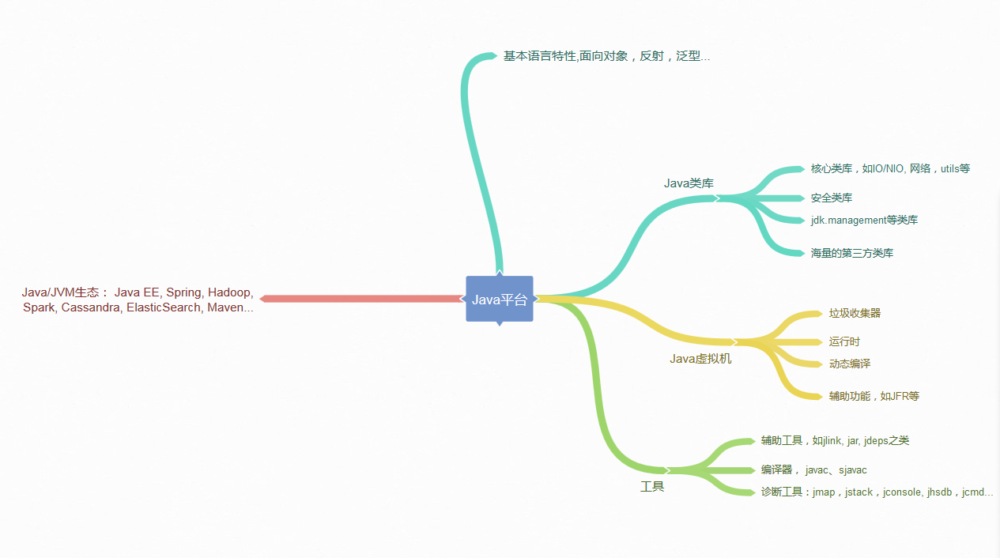
不再扩展了，回到前面问到的解释执行和编译执行的问题。有些面试官喜欢在特定问题上“刨根问底儿”，因为这是进一步了解面试者对知识掌握程度的有效方法，我稍微深入探讨一下。
众所周知，我们通常把 Java 分为编译期和运行时。这里说的 Java 的编译和 C/C++ 是有着不同的意义的，Javac 的编译，编译 Java 源码生成“.class”文件里面实际是字节码，而不是可以直接执行的机器码。Java 通过字节码和 Java 虚拟机（JVM）这种跨平台的抽象，屏蔽了操作系统和硬件的细节，这也是实现“一次编译，到处执行”的基础。
在运行时，JVM 会通过类加载器（Class-Loader）加载字节码，解释或者编译执行。就像我前面提到的，主流 Java 版本中，如 JDK 8 实际是解释和编译混合的一种模式，即所谓的混合模式（-Xmixed）。通常运行在 server 模式的 JVM，会进行上万次调用以收集足够的信息进行高效的编译，client 模式这个门限是 1500 次。Oracle Hotspot JVM 内置了两个不同的 JIT compiler，C1 对应前面说的 client 模式，适用于对于启动速度敏感的应用，比如普通 Java 桌面应用；C2 对应 server 模式，它的优化是为长时间运行的服务器端应用设计的。默认是采用所谓的分层编译（TieredCompilation）。这里不再展开更多 JIT 的细节，没必要一下子就钻进去，我会在后面介绍分层编译的内容。
Java 虚拟机启动时，可以指定不同的参数对运行模式进行选择。 比如，指定“-Xint”，就是告诉 JVM 只进行解释执行，不对代码进行编译，这种模式抛弃了 JIT 可能带来的性能优势。毕竟解释器（interpreter）是逐条读入，逐条解释运行的。与其相对应的，还有一个“-Xcomp”参数，这是告诉 JVM 关闭解释器，不要进行解释执行，或者叫作最大优化级别。那你可能会问这种模式是不是最高效啊？简单说，还真未必。“-Xcomp”会导致 JVM 启动变慢非常多，同时有些 JIT 编译器优化方式，比如分支预测，如果不进行 profiling，往往并不能进行有效优化。
除了我们日常最常见的 Java 使用模式，其实还有一种新的编译方式，即所谓的 AOT（Ahead-of-Time Compilation），直接将字节码编译成机器代码，这样就避免了 JIT 预热等各方面的开销，比如 Oracle JDK 9 就引入了实验性的 AOT 特性，并且增加了新的 jaotc 工具。利用下面的命令把某个类或者某个模块编译成为 AOT 库。
jaotc --output libHelloWorld.so HelloWorld.class
jaotc --output libjava.base.so --module java.base
然后，在启动时直接指定就可以了。
java -XX:AOTLibrary=./libHelloWorld.so,./libjava.base.so HelloWorld
而且，Oracle JDK 支持分层编译和 AOT 协作使用，这两者并不是二选一的关系。如果你有兴趣，可以参考相关文档：http://openjdk.java.net/jeps/295。AOT 也不仅仅是只有这一种方式，业界早就有第三方工具（如 GCJ、Excelsior JET）提供相关功能。
另外，JVM 作为一个强大的平台，不仅仅只有 Java 语言可以运行在 JVM 上，本质上合规的字节码都可以运行，Java 语言自身也为此提供了便利，我们可以看到类似 Clojure、Scala、Groovy、JRuby、Jython 等大量 JVM 语言，活跃在不同的场景。
今天，我简单介绍了一下 Java 平台相关的一些内容，目的是提纲挈领地构建一个整体的印象，包括 Java 语言特性、 核心类库与常用第三方类库、Java 虚拟机基本原理和相关工具，希望对你有所帮助。
一课一练
关于今天我们讨论的题目你做到心中有数了吗？知道不如做到，请你也在留言区写写自己对 Java 平台的理解。我会选出经过认真思考的留言，送给你一份学习鼓励金，欢迎你与我一起讨论。
第02讲 Exception和Error有什么区别？
世界上存在永远不会出错的程序吗？也许这只会出现在程序员的梦中。随着编程语言和软件的诞生，异常情况就如影随形地纠缠着我们，只有正确处理好意外情况，才能保证程序的可靠性。
Java 语言在设计之初就提供了相对完善的异常处理机制，这也是 Java 得以大行其道的原因之一，因为这种机制大大降低了编写和维护可靠程序的门槛。如今，异常处理机制已经成为现代编程语言的标配。
今天我要问你的问题是，请对比 Exception 和 Error，另外，运行时异常与一般异常有什么区别？
典型回答
Exception 和 Error 都是继承了 Throwable 类，在 Java 中只有 Throwable 类型的实例才可以被抛出（throw）或者捕获（catch），它是异常处理机制的基本组成类型。
Exception 和 Error 体现了 Java 平台设计者对不同异常情况的分类。Exception 是程序正常运行中，可以预料的意外情况，可能并且应该被捕获，进行相应处理。
Error 是指在正常情况下，不大可能出现的情况，绝大部分的 Error 都会导致程序（比如 JVM 自身）处于非正常的、不可恢复状态。既然是非正常情况，所以不便于也不需要捕获，常见的比如 OutOfMemoryError 之类，都是 Error 的子类。
Exception 又分为可检查（checked）异常和不检查（unchecked）异常，可检查异常在源代码里必须显式地进行捕获处理，这是编译期检查的一部分。前面我介绍的不可查的 Error，是 Throwable 不是 Exception。
不检查异常就是所谓的运行时异常，类似 NullPointerException、ArrayIndexOutOfBoundsException 之类，通常是可以编码避免的逻辑错误，具体根据需要来判断是否需要捕获，并不会在编译期强制要求。
考点分析
分析 Exception 和 Error 的区别，是从概念角度考察了 Java 处理机制。总的来说，还处于理解的层面，面试者只要阐述清楚就好了。
我们在日常编程中，如何处理好异常是比较考验功底的，我觉得需要掌握两个方面。
第一，理解 Throwable、Exception、Error 的设计和分类。比如，掌握那些应用最为广泛的子类，以及如何自定义异常等。
很多面试官会进一步追问一些细节，比如，你了解哪些 Error、Exception 或者 RuntimeException？我画了一个简单的类图，并列出来典型例子，可以给你作为参考，至少做到基本心里有数。
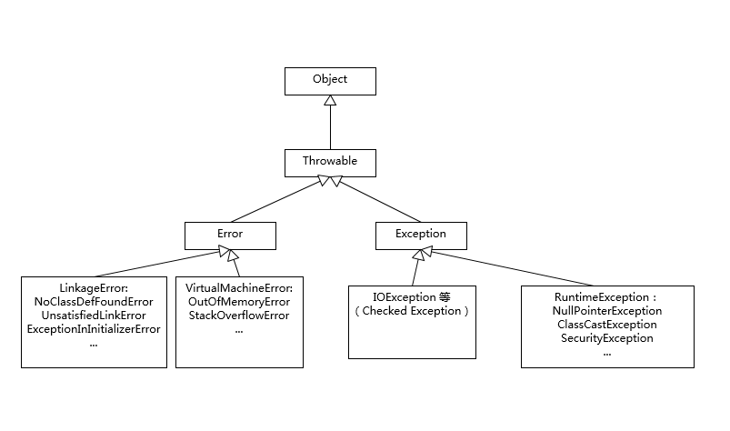
其中有些子类型，最好重点理解一下，比如 NoClassDefFoundError 和 ClassNotFoundException 有什么区别，这也是个经典的入门题目。
第二，理解 Java 语言中操作 Throwable 的元素和实践。掌握最基本的语法是必须的，如 try-catch-finally 块，throw、throws 关键字等。与此同时，也要懂得如何处理典型场景。
异常处理代码比较繁琐，比如我们需要写很多千篇一律的捕获代码，或者在 finally 里面做一些资源回收工作。随着 Java 语言的发展，引入了一些更加便利的特性，比如 try-with-resources 和 multiple catch，具体可以参考下面的代码段。在编译时期，会自动生成相应的处理逻辑，比如，自动按照约定俗成 close 那些扩展了 AutoCloseable 或者 Closeable 的对象。
try (BufferedReader br = new BufferedReader(…);
BufferedWriter writer = new BufferedWriter(…)) {// Try-with-resources
// do something
catch ( IOException | XEception e) {// Multiple catch
// Handle it
}
知识扩展
前面谈的大多是概念性的东西，下面我来谈些实践中的选择，我会结合一些代码用例进行分析。
先开看第一个吧，下面的代码反映了异常处理中哪些不当之处？
try {
// 业务代码
// …
Thread.sleep(1000L);
} catch (Exception e) {
// Ignore it
}
这段代码虽然很短，但是已经违反了异常处理的两个基本原则。
第一，尽量不要捕获类似 Exception 这样的通用异常，而是应该捕获特定异常，在这里是 Thread.sleep() 抛出的 InterruptedException。
这是因为在日常的开发和合作中，我们读代码的机会往往超过写代码，软件工程是门协作的艺术，所以我们有义务让自己的代码能够直观地体现出尽量多的信息，而泛泛的 Exception 之类，恰恰隐藏了我们的目的。另外，我们也要保证程序不会捕获到我们不希望捕获的异常。比如，你可能更希望 RuntimeException 被扩散出来，而不是被捕获。
进一步讲，除非深思熟虑了，否则不要捕获 Throwable 或者 Error，这样很难保证我们能够正确程序处理 OutOfMemoryError。
第二，不要生吞（swallow）异常。这是异常处理中要特别注意的事情，因为很可能会导致非常难以诊断的诡异情况。
生吞异常，往往是基于假设这段代码可能不会发生，或者感觉忽略异常是无所谓的，但是千万不要在产品代码做这种假设！
如果我们不把异常抛出来，或者也没有输出到日志（Logger）之类，程序可能在后续代码以不可控的方式结束。没人能够轻易判断究竟是哪里抛出了异常，以及是什么原因产生了异常。
再来看看第二段代码
try {
// 业务代码
// …
} catch (IOException e) {
e.printStackTrace();
}
这段代码作为一段实验代码，它是没有任何问题的，但是在产品代码中，通常都不允许这样处理。你先思考一下这是为什么呢？
我们先来看看printStackTrace()的文档，开头就是“Prints this throwable and its backtrace to the standard error stream”。问题就在这里，在稍微复杂一点的生产系统中，标准出错（STERR）不是个合适的输出选项，因为你很难判断出到底输出到哪里去了。
尤其是对于分布式系统，如果发生异常，但是无法找到堆栈轨迹（stacktrace），这纯属是为诊断设置障碍。所以，最好使用产品日志，详细地输出到日志系统里。
我们接下来看下面的代码段，体会一下Throw early, catch late 原则。
public void readPreferences(String fileName){
//...perform operations...
InputStream in = new FileInputStream(fileName);
//...read the preferences file...
}
如果 fileName 是 null，那么程序就会抛出 NullPointerException，但是由于没有第一时间暴露出问题，堆栈信息可能非常令人费解，往往需要相对复杂的定位。这个 NPE 只是作为例子，实际产品代码中，可能是各种情况，比如获取配置失败之类的。在发现问题的时候，第一时间抛出，能够更加清晰地反映问题。
我们可以修改一下，让问题“throw early”，对应的异常信息就非常直观了。
public void readPreferences(String filename) {
Objects. requireNonNull(filename);
//...perform other operations...
InputStream in = new FileInputStream(filename);
//...read the preferences file...
}
至于“catch late”，其实是我们经常苦恼的问题，捕获异常后，需要怎么处理呢？最差的处理方式，就是我前面提到的“生吞异常”，本质上其实是掩盖问题。如果实在不知道如何处理，可以选择保留原有异常的 cause 信息，直接再抛出或者构建新的异常抛出去。在更高层面，因为有了清晰的（业务）逻辑，往往会更清楚合适的处理方式是什么。
有的时候，我们会根据需要自定义异常，这个时候除了保证提供足够的信息，还有两点需要考虑：
- 是否需要定义成 Checked Exception，因为这种类型设计的初衷更是为了从异常情况恢复，作为异常设计者，我们往往有充足信息进行分类。
- 在保证诊断信息足够的同时，也要考虑避免包含敏感信息，因为那样可能导致潜在的安全问题。如果我们看 Java 的标准类库，你可能注意到类似 java.net.ConnectException，出错信息是类似“ Connection refused (Connection refused)”，而不包含具体的机器名、IP、端口等，一个重要考量就是信息安全。类似的情况在日志中也有，比如，用户数据一般是不可以输出到日志里面的。
业界有一种争论（甚至可以算是某种程度的共识），Java 语言的 Checked Exception 也许是个设计错误，反对者列举了几点：
- Checked Exception 的假设是我们捕获了异常，然后恢复程序。但是，其实我们大多数情况下，根本就不可能恢复。Checked Exception 的使用，已经大大偏离了最初的设计目的。
- Checked Exception 不兼容 functional 编程，如果你写过 Lambda/Stream 代码，相信深有体会。
很多开源项目，已经采纳了这种实践，比如 Spring、Hibernate 等，甚至反映在新的编程语言设计中，比如 Scala 等。 如果有兴趣，你可以参考：
http://literatejava.com/exceptions/checked-exceptions-javas-biggest-mistake/。
当然，很多人也觉得没有必要矫枉过正，因为确实有一些异常，比如和环境相关的 IO、网络等，其实是存在可恢复性的，而且 Java 已经通过业界的海量实践，证明了其构建高质量软件的能力。我就不再进一步解读了，感兴趣的同学可以点击链接，观看 Bruce Eckel 在 2018 年全球软件开发大会 QCon 的分享 Failing at Failing: How and Why We’ve Been Nonchalantly Moving Away From Exception Handling。
我们从性能角度来审视一下 Java 的异常处理机制，这里有两个可能会相对昂贵的地方：
- try-catch 代码段会产生额外的性能开销，或者换个角度说，它往往会影响 JVM 对代码进行优化，所以建议仅捕获有必要的代码段，尽量不要一个大的 try 包住整段的代码；与此同时，利用异常控制代码流程，也不是一个好主意，远比我们通常意义上的条件语句（if/else、switch）要低效。
- Java 每实例化一个 Exception，都会对当时的栈进行快照，这是一个相对比较重的操作。如果发生的非常频繁，这个开销可就不能被忽略了。
所以，对于部分追求极致性能的底层类库，有种方式是尝试创建不进行栈快照的 Exception。这本身也存在争议，因为这样做的假设在于，我创建异常时知道未来是否需要堆栈。问题是，实际上可能吗？小范围或许可能，但是在大规模项目中，这么做可能不是个理智的选择。如果需要堆栈，但又没有收集这些信息，在复杂情况下，尤其是类似微服务这种分布式系统，这会大大增加诊断的难度。
当我们的服务出现反应变慢、吞吐量下降的时候，检查发生最频繁的 Exception 也是一种思路。关于诊断后台变慢的问题，我会在后面的 Java 性能基础模块中系统探讨。
今天，我从一个常见的异常处理概念问题，简单总结了 Java 异常处理的机制。并结合代码，分析了一些普遍认可的最佳实践，以及业界最新的一些异常使用共识。最后，我分析了异常性能开销，希望对你有所帮助。
一课一练
关于今天我们讨论的题目你做到心中有数了吗？可以思考一个问题，对于异常处理编程，不同的编程范式也会影响到异常处理策略，比如，现在非常火热的反应式编程（Reactive Stream），因为其本身是异步、基于事件机制的，所以出现异常情况，决不能简单抛出去；另外，由于代码堆栈不再是同步调用那种垂直的结构，这里的异常处理和日志需要更加小心，我们看到的往往是特定 executor 的堆栈，而不是业务方法调用关系。对于这种情况，你有什么好的办法吗？
第03讲 谈谈final、finally、 finalize有什么不同？
Java 语言有很多看起来很相似，但是用途却完全不同的语言要素，这些内容往往容易成为面试官考察你知识掌握程度的切入点。
今天，我要问你的是一个经典的 Java 基础题目，谈谈 final、finally、 finalize 有什么不同？
典型回答
final 可以用来修饰类、方法、变量，分别有不同的意义，final 修饰的 class 代表不可以继承扩展，final 的变量是不可以修改的，而 final 的方法也是不可以重写的（override）。
finally 则是 Java 保证重点代码一定要被执行的一种机制。我们可以使用 try-finally 或者 try-catch-finally 来进行类似关闭 JDBC 连接、保证 unlock 锁等动作。
finalize 是基础类 java.lang.Object 的一个方法，它的设计目的是保证对象在被垃圾收集前完成特定资源的回收。finalize 机制现在已经不推荐使用，并且在 JDK 9 开始被标记为 deprecated。
考点分析
这是一个非常经典的 Java 基础问题，我上面的回答主要是从语法和使用实践角度出发的，其实还有很多方面可以深入探讨，面试官还可以考察你对性能、并发、对象生命周期或垃圾收集基本过程等方面的理解。
推荐使用 final 关键字来明确表示我们代码的语义、逻辑意图，这已经被证明在很多场景下是非常好的实践，比如：
- 我们可以将方法或者类声明为 final，这样就可以明确告知别人，这些行为是不许修改的。
如果你关注过 Java 核心类库的定义或源码， 有没有发现 java.lang 包下面的很多类，相当一部分都被声明成为 final class？在第三方类库的一些基础类中同样如此，这可以有效避免 API 使用者更改基础功能，某种程度上，这是保证平台安全的必要手段。
- 使用 final 修饰参数或者变量，也可以清楚地避免意外赋值导致的编程错误，甚至，有人明确推荐将所有方法参数、本地变量、成员变量声明成 final。
- final 变量产生了某种程度的不可变（immutable）的效果，所以，可以用于保护只读数据，尤其是在并发编程中，因为明确地不能再赋值 final 变量，有利于减少额外的同步开销，也可以省去一些防御性拷贝的必要。
final 也许会有性能的好处，很多文章或者书籍中都介绍了可在特定场景提高性能，比如，利用 final 可能有助于 JVM 将方法进行内联，可以改善编译器进行条件编译的能力等等。坦白说，很多类似的结论都是基于假设得出的，比如现代高性能 JVM（如 HotSpot）判断内联未必依赖 final 的提示，要相信 JVM 还是非常智能的。类似的，final 字段对性能的影响，大部分情况下，并没有考虑的必要。
从开发实践的角度，我不想过度强调这一点，这是和 JVM 的实现很相关的，未经验证比较难以把握。我的建议是，在日常开发中，除非有特别考虑，不然最好不要指望这种小技巧带来的所谓性能好处，程序最好是体现它的语义目的。如果你确实对这方面有兴趣，可以查阅相关资料，我就不再赘述了，不过千万别忘了验证一下。
对于 finally，明确知道怎么使用就足够了。需要关闭的连接等资源，更推荐使用 Java 7 中添加的 try-with-resources 语句，因为通常 Java 平台能够更好地处理异常情况，编码量也要少很多，何乐而不为呢。
另外，我注意到有一些常被考到的 finally 问题（也比较偏门），至少需要了解一下。比如，下面代码会输出什么？
try {
// do something
System.exit(1);
} finally{
System.out.println(“Print from finally”);
}
上面 finally 里面的代码可不会被执行的哦，这是一个特例。
对于 finalize，我们要明确它是不推荐使用的，业界实践一再证明它不是个好的办法，在 Java 9 中，甚至明确将 Object.finalize() 标记为 deprecated！如果没有特别的原因，不要实现 finalize 方法，也不要指望利用它来进行资源回收。
为什么呢？简单说，你无法保证 finalize 什么时候执行，执行的是否符合预期。使用不当会影响性能，导致程序死锁、挂起等。
通常来说，利用上面的提到的 try-with-resources 或者 try-finally 机制，是非常好的回收资源的办法。如果确实需要额外处理，可以考虑 Java 提供的 Cleaner 机制或者其他替代方法。接下来，我来介绍更多设计考虑和实践细节。
知识扩展
\1. 注意，final 不是 immutable！
我在前面介绍了 final 在实践中的益处，需要注意的是，final 并不等同于 immutable，比如下面这段代码：
final List<String> strList = new ArrayList<>();
strList.add("Hello");
strList.add("world");
List<String> unmodifiableStrList = List.of("hello", "world");
unmodifiableStrList.add("again");
final 只能约束 strList 这个引用不可以被赋值，但是 strList 对象行为不被 final 影响，添加元素等操作是完全正常的。如果我们真的希望对象本身是不可变的，那么需要相应的类支持不可变的行为。在上面这个例子中，List.of 方法创建的本身就是不可变 List，最后那句 add 是会在运行时抛出异常的。
Immutable 在很多场景是非常棒的选择，某种意义上说，Java 语言目前并没有原生的不可变支持，如果要实现 immutable 的类，我们需要做到：
- 将 class 自身声明为 final，这样别人就不能扩展来绕过限制了。
- 将所有成员变量定义为 private 和 final，并且不要实现 setter 方法。
- 通常构造对象时，成员变量使用深度拷贝来初始化，而不是直接赋值，这是一种防御措施，因为你无法确定输入对象不被其他人修改。
- 如果确实需要实现 getter 方法，或者其他可能会返回内部状态的方法，使用 copy-on-write 原则，创建私有的 copy。
这些原则是不是在并发编程实践中经常被提到？的确如此。
关于 setter/getter 方法，很多人喜欢直接用 IDE 一次全部生成，建议最好是你确定有需要时再实现。
2.finalize 真的那么不堪？
前面简单介绍了 finalize 是一种已经被业界证明了的非常不好的实践，那么为什么会导致那些问题呢？
finalize 的执行是和垃圾收集关联在一起的，一旦实现了非空的 finalize 方法，就会导致相应对象回收呈现数量级上的变慢，有人专门做过 benchmark，大概是 40~50 倍的下降。
因为，finalize 被设计成在对象被垃圾收集前调用，这就意味着实现了 finalize 方法的对象是个“特殊公民”，JVM 要对它进行额外处理。finalize 本质上成为了快速回收的阻碍者，可能导致你的对象经过多个垃圾收集周期才能被回收。
有人也许会问，我用 System.runFinalization() 告诉 JVM 积极一点，是不是就可以了？也许有点用，但是问题在于，这还是不可预测、不能保证的，所以本质上还是不能指望。实践中，因为 finalize 拖慢垃圾收集，导致大量对象堆积，也是一种典型的导致 OOM 的原因。
从另一个角度，我们要确保回收资源就是因为资源都是有限的，垃圾收集时间的不可预测，可能会极大加剧资源占用。这意味着对于消耗非常高频的资源，千万不要指望 finalize 去承担资源释放的主要职责，最多让 finalize 作为最后的“守门员”，况且它已经暴露了如此多的问题。这也是为什么我推荐，资源用完即显式释放，或者利用资源池来尽量重用。
finalize 还会掩盖资源回收时的出错信息，我们看下面一段 JDK 的源代码，截取自 java.lang.ref.Finalizer
private void runFinalizer(JavaLangAccess jla) {
// ... 省略部分代码
try {
Object finalizee = this.get();
if (finalizee != null && !(finalizee instanceof java.lang.Enum)) {
jla.invokeFinalize(finalizee);
// Clear stack slot containing this variable, to decrease
// the chances of false retention with a conservative GC
finalizee = null;
}
} catch (Throwable x) { }
super.clear();
}
结合我上期专栏介绍的异常处理实践，你认为这段代码会导致什么问题？
是的，你没有看错，这里的**Throwable 是被生吞了的！**也就意味着一旦出现异常或者出错，你得不到任何有效信息。况且，Java 在 finalize 阶段也没有好的方式处理任何信息，不然更加不可预测。
\3. 有什么机制可以替换 finalize 吗？
Java 平台目前在逐步使用 java.lang.ref.Cleaner 来替换掉原有的 finalize 实现。Cleaner 的实现利用了幻象引用（PhantomReference），这是一种常见的所谓 post-mortem 清理机制。我会在后面的专栏系统介绍 Java 的各种引用，利用幻象引用和引用队列，我们可以保证对象被彻底销毁前做一些类似资源回收的工作，比如关闭文件描述符（操作系统有限的资源），它比 finalize 更加轻量、更加可靠。
吸取了 finalize 里的教训，每个 Cleaner 的操作都是独立的，它有自己的运行线程，所以可以避免意外死锁等问题。
实践中，我们可以为自己的模块构建一个 Cleaner，然后实现相应的清理逻辑。下面是 JDK 自身提供的样例程序：
public class CleaningExample implements AutoCloseable {
// A cleaner, preferably one shared within a library
private static final Cleaner cleaner = <cleaner>;
static class State implements Runnable {
State(...) {
// initialize State needed for cleaning action
}
public void run() {
// cleanup action accessing State, executed at most once
}
}
private final State;
private final Cleaner.Cleanable cleanable
public CleaningExample() {
this.state = new State(...);
this.cleanable = cleaner.register(this, state);
}
public void close() {
cleanable.clean();
}
}
注意，从可预测性的角度来判断，Cleaner 或者幻象引用改善的程度仍然是有限的，如果由于种种原因导致幻象引用堆积，同样会出现问题。所以，Cleaner 适合作为一种最后的保证手段，而不是完全依赖 Cleaner 进行资源回收，不然我们就要再做一遍 finalize 的噩梦了。
我也注意到很多第三方库自己直接利用幻象引用定制资源收集，比如广泛使用的 MySQL JDBC driver 之一的 mysql-connector-j，就利用了幻象引用机制。幻象引用也可以进行类似链条式依赖关系的动作，比如，进行总量控制的场景，保证只有连接被关闭，相应资源被回收，连接池才能创建新的连接。
另外，这种代码如果稍有不慎添加了对资源的强引用关系，就会导致循环引用关系，前面提到的 MySQL JDBC 就在特定模式下有这种问题，导致内存泄漏。上面的示例代码中，将 State 定义为 static，就是为了避免普通的内部类隐含着对外部对象的强引用，因为那样会使外部对象无法进入幻象可达的状态。
今天，我从语法角度分析了 final、finally、finalize，并从安全、性能、垃圾收集等方面逐步深入，探讨了实践中的注意事项，希望对你有所帮助。
一课一练
关于今天我们讨论的题目你做到心中有数了吗？也许你已经注意到了，JDK 自身使用的 Cleaner 机制仍然是有缺陷的，你有什么更好的建议吗？
第04讲 强引用、软引用、弱引用、幻象引用有什么区别？
在 Java 语言中，除了原始数据类型的变量，其他所有都是所谓的引用类型，指向各种不同的对象，理解引用对于掌握 Java 对象生命周期和 JVM 内部相关机制非常有帮助。
今天我要问你的问题是，强引用、软引用、弱引用、幻象引用有什么区别？具体使用场景是什么？
典型回答
不同的引用类型，主要体现的是对象不同的可达性（reachable）状态和对垃圾收集的影响。
所谓强引用（“Strong” Reference），就是我们最常见的普通对象引用，只要还有强引用指向一个对象，就能表明对象还“活着”，垃圾收集器不会碰这种对象。对于一个普通的对象，如果没有其他的引用关系，只要超过了引用的作用域或者显式地将相应（强）引用赋值为 null，就是可以被垃圾收集的了，当然具体回收时机还是要看垃圾收集策略。
软引用（SoftReference），是一种相对强引用弱化一些的引用，可以让对象豁免一些垃圾收集，只有当 JVM 认为内存不足时，才会去试图回收软引用指向的对象。JVM 会确保在抛出 OutOfMemoryError 之前，清理软引用指向的对象。软引用通常用来实现内存敏感的缓存，如果还有空闲内存，就可以暂时保留缓存，当内存不足时清理掉，这样就保证了使用缓存的同时，不会耗尽内存。
弱引用（WeakReference）并不能使对象豁免垃圾收集，仅仅是提供一种访问在弱引用状态下对象的途径。这就可以用来构建一种没有特定约束的关系，比如，维护一种非强制性的映射关系，如果试图获取时对象还在，就使用它，否则重现实例化。它同样是很多缓存实现的选择。
对于幻象引用，有时候也翻译成虚引用，你不能通过它访问对象。幻象引用仅仅是提供了一种确保对象被 finalize 以后，做某些事情的机制，比如，通常用来做所谓的 Post-Mortem 清理机制，我在专栏上一讲中介绍的 Java 平台自身 Cleaner 机制等，也有人利用幻象引用监控对象的创建和销毁。
考点分析
这道面试题，属于既偏门又非常高频的一道题目。说它偏门，是因为在大多数应用开发中，很少直接操作各种不同引用，虽然我们使用的类库、框架可能利用了其机制。它被频繁问到，是因为这是一个综合性的题目，既考察了我们对基础概念的理解，也考察了对底层对象生命周期、垃圾收集机制等的掌握。
充分理解这些引用，对于我们设计可靠的缓存等框架，或者诊断应用 OOM 等问题，会很有帮助。比如，诊断 MySQL connector-j 驱动在特定模式下（useCompression=true）的内存泄漏问题，就需要我们理解怎么排查幻象引用的堆积问题。
知识扩展
\1. 对象可达性状态流转分析
首先，请你看下面流程图，我这里简单总结了对象生命周期和不同可达性状态，以及不同状态可能的改变关系，可能未必 100% 严谨，来阐述下可达性的变化。
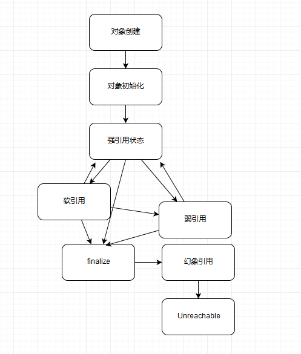
我来解释一下上图的具体状态，这是 Java 定义的不同可达性级别（reachability level），具体如下：
- 强可达（Strongly Reachable），就是当一个对象可以有一个或多个线程可以不通过各种引用访问到的情况。比如，我们新创建一个对象，那么创建它的线程对它就是强可达。
- 软可达（Softly Reachable），就是当我们只能通过软引用才能访问到对象的状态。
- 弱可达（Weakly Reachable），类似前面提到的，就是无法通过强引用或者软引用访问，只能通过弱引用访问时的状态。这是十分临近 finalize 状态的时机，当弱引用被清除的时候，就符合 finalize 的条件了。
- 幻象可达（Phantom Reachable），上面流程图已经很直观了，就是没有强、软、弱引用关联，并且 finalize 过了，只有幻象引用指向这个对象的时候。
- 当然，还有一个最后的状态，就是不可达（unreachable），意味着对象可以被清除了。
判断对象可达性，是 JVM 垃圾收集器决定如何处理对象的一部分考虑。
所有引用类型，都是抽象类 java.lang.ref.Reference 的子类，你可能注意到它提供了 get() 方法：
除了幻象引用（因为 get 永远返回 null），如果对象还没有被销毁，都可以通过 get 方法获取原有对象。这意味着，利用软引用和弱引用，我们可以将访问到的对象，重新指向强引用，也就是人为的改变了对象的可达性状态！这也是为什么我在上面图里有些地方画了双向箭头。
所以，对于软引用、弱引用之类，垃圾收集器可能会存在二次确认的问题，以保证处于弱引用状态的对象，没有改变为强引用。
但是，你觉得这里有没有可能出现什么问题呢？
不错，如果我们错误的保持了强引用（比如，赋值给了 static 变量），那么对象可能就没有机会变回类似弱引用的可达性状态了，就会产生内存泄漏。所以，检查弱引用指向对象是否被垃圾收集，也是诊断是否有特定内存泄漏的一个思路，如果我们的框架使用到弱引用又怀疑有内存泄漏，就可以从这个角度检查。
\2. 引用队列（ReferenceQueue）使用
谈到各种引用的编程，就必然要提到引用队列。我们在创建各种引用并关联到响应对象时，可以选择是否需要关联引用队列，JVM 会在特定时机将引用 enqueue 到队列里，我们可以从队列里获取引用（remove 方法在这里实际是有获取的意思）进行相关后续逻辑。尤其是幻象引用，get 方法只返回 null，如果再不指定引用队列，基本就没有意义了。看看下面的示例代码。利用引用队列，我们可以在对象处于相应状态时（对于幻象引用，就是前面说的被 finalize 了，处于幻象可达状态），执行后期处理逻辑。
Object counter = new Object();
ReferenceQueue refQueue = new ReferenceQueue<>();
PhantomReference<Object> p = new PhantomReference<>(counter, refQueue);
counter = null;
System.gc();
try {
// Remove 是一个阻塞方法，可以指定 timeout，或者选择一直阻塞
Reference<Object> ref = refQueue.remove(1000L);
if (ref != null) {
// do something
}
} catch (InterruptedException e) {
// Handle it
}
\3. 显式地影响软引用垃圾收集
前面泛泛提到了引用对垃圾收集的影响，尤其是软引用，到底 JVM 内部是怎么处理它的，其实并不是非常明确。那么我们能不能使用什么方法来影响软引用的垃圾收集呢？
答案是有的。软引用通常会在最后一次引用后，还能保持一段时间，默认值是根据堆剩余空间计算的（以 M bytes 为单位）。从 Java 1.3.1 开始，提供了 -XX:SoftRefLRUPolicyMSPerMB 参数，我们可以以毫秒（milliseconds）为单位设置。比如，下面这个示例就是设置为 3 秒（3000 毫秒）。
-XX:SoftRefLRUPolicyMSPerMB=3000
这个剩余空间，其实会受不同 JVM 模式影响，对于 Client 模式，比如通常的 Windows 32 bit JDK，剩余空间是计算当前堆里空闲的大小，所以更加倾向于回收；而对于 server 模式 JVM，则是根据 -Xmx 指定的最大值来计算。
本质上，这个行为还是个黑盒，取决于 JVM 实现，即使是上面提到的参数，在新版的 JDK 上也未必有效，另外 Client 模式的 JDK 已经逐步退出历史舞台。所以在我们应用时，可以参考类似设置，但不要过于依赖它。
\4. 诊断 JVM 引用情况
如果你怀疑应用存在引用（或 finalize）导致的回收问题，可以有很多工具或者选项可供选择，比如 HotSpot JVM 自身便提供了明确的选项（PrintReferenceGC）去获取相关信息，我指定了下面选项去使用 JDK 8 运行一个样例应用：
-XX:+PrintGCDetails -XX:+PrintGCTimeStamps -XX:+PrintReferenceGC
这是 JDK 8 使用 ParrallelGC 收集的垃圾收集日志，各种引用数量非常清晰。
0.403: [GC (Allocation Failure) 0.871: [SoftReference, 0 refs, 0.0000393 secs]0.871: [WeakReference, 8 refs, 0.0000138 secs]0.871: [FinalReference, 4 refs, 0.0000094 secs]0.871: [PhantomReference, 0 refs, 0 refs, 0.0000085 secs]0.871: [JNI Weak Reference, 0.0000071 secs][PSYoungGen: 76272K->10720K(141824K)] 128286K->128422K(316928K), 0.4683919 secs] [Times: user=1.17 sys=0.03, real=0.47 secs]
注意：JDK 9 对 JVM 和垃圾收集日志进行了广泛的重构，类似 PrintGCTimeStamps 和 PrintReferenceGC 已经不再存在，我在专栏后面的垃圾收集主题里会更加系统的阐述。
5.Reachability Fence
除了我前面介绍的几种基本引用类型，我们也可以通过底层 API 来达到强引用的效果，这就是所谓的设置reachability fence。
为什么需要这种机制呢？考虑一下这样的场景，按照 Java 语言规范，如果一个对象没有指向强引用，就符合垃圾收集的标准，有些时候，对象本身并没有强引用，但是也许它的部分属性还在被使用，这样就导致诡异的问题，所以我们需要一个方法，在没有强引用情况下，通知 JVM 对象是在被使用的。说起来有点绕，我们来看看 Java 9 中提供的案例。
class Resource {
private static ExternalResource[] externalResourceArray = ...
int myIndex; Resource(...) {
myIndex = ...
externalResourceArray[myIndex] = ...;
...
}
protected void finalize() {
externalResourceArray[myIndex] = null;
...
}
public void action() {
try {
// 需要被保护的代码
int i = myIndex;
Resource.update(externalResourceArray[i]);
} finally {
// 调用 reachbilityFence，明确保障对象 strongly reachable
Reference.reachabilityFence(this);
}
}
private static void update(ExternalResource ext) {
ext.status = ...;
}
}
方法 action 的执行，依赖于对象的部分属性，所以被特定保护了起来。否则，如果我们在代码中像下面这样调用，那么就可能会出现困扰，因为没有强引用指向我们创建出来的 Resource 对象，JVM 对它进行 finalize 操作是完全合法的。
new Resource().action()
类似的书写结构，在异步编程中似乎是很普遍的，因为异步编程中往往不会用传统的“执行 -> 返回 -> 使用”的结构。
在 Java 9 之前，实现类似类似功能相对比较繁琐，有的时候需要采取一些比较隐晦的小技巧。幸好，java.lang.ref.Reference 给我们提供了新方法，它是 JEP 193: Variable Handles 的一部分，将 Java 平台底层的一些能力暴露出来：
static void reachabilityFence(Object ref)
在 JDK 源码中，reachabilityFence 大多使用在 Executors 或者类似新的 HTTP/2 客户端代码中，大部分都是异步调用的情况。编程中，可以按照上面这个例子，将需要 reachability 保障的代码段利用 try-finally 包围起来，在 finally 里明确声明对象强可达。
今天，我总结了 Java 语言提供的几种引用类型、相应可达状态以及对于 JVM 工作的意义，并分析了引用队列使用的一些实际情况，最后介绍了在新的编程模式下，如何利用 API 去保障对象不被以为意外回收，希望对你有所帮助。
一课一练
关于今天我们讨论的题目你做到心中有数了吗？给你留一道练习题，你能从自己的产品或者第三方类库中找到使用各种引用的案例吗？它们都试图解决什么问题？
第05讲 String、StringBuffer、StringBuilder有什么区别？
今天我会聊聊日常使用的字符串，别看它似乎很简单，但其实字符串几乎在所有编程语言里都是个特殊的存在，因为不管是数量还是体积，字符串都是大多数应用中的重要组成。
今天我要问你的问题是，理解 Java 的字符串，String、StringBuffer、StringBuilder 有什么区别？
典型回答
String 是 Java 语言非常基础和重要的类，提供了构造和管理字符串的各种基本逻辑。它是典型的 Immutable 类，被声明成为 final class，所有属性也都是 final 的。也由于它的不可变性，类似拼接、裁剪字符串等动作，都会产生新的 String 对象。由于字符串操作的普遍性，所以相关操作的效率往往对应用性能有明显影响。
StringBuffer 是为解决上面提到拼接产生太多中间对象的问题而提供的一个类，我们可以用 append 或者 add 方法，把字符串添加到已有序列的末尾或者指定位置。StringBuffer 本质是一个线程安全的可修改字符序列，它保证了线程安全，也随之带来了额外的性能开销，所以除非有线程安全的需要，不然还是推荐使用它的后继者，也就是 StringBuilder。
StringBuilder 是 Java 1.5 中新增的，在能力上和 StringBuffer 没有本质区别，但是它去掉了线程安全的部分，有效减小了开销，是绝大部分情况下进行字符串拼接的首选。
考点分析
几乎所有的应用开发都离不开操作字符串，理解字符串的设计和实现以及相关工具如拼接类的使用，对写出高质量代码是非常有帮助的。关于这个问题，我前面的回答是一个通常的概要性回答，至少你要知道 String 是 Immutable 的，字符串操作不当可能会产生大量临时字符串，以及线程安全方面的区别。
如果继续深入，面试官可以从各种不同的角度考察，比如可以：
- 通过 String 和相关类，考察基本的线程安全设计与实现，各种基础编程实践。
- 考察 JVM 对象缓存机制的理解以及如何良好地使用。
- 考察 JVM 优化 Java 代码的一些技巧。
- String 相关类的演进，比如 Java 9 中实现的巨大变化。
- …
针对上面这几方面，我会在知识扩展部分与你详细聊聊。
知识扩展
\1. 字符串设计和实现考量
我在前面介绍过，String 是 Immutable 类的典型实现，原生的保证了基础线程安全，因为你无法对它内部数据进行任何修改，这种便利甚至体现在拷贝构造函数中，由于不可变，Immutable 对象在拷贝时不需要额外复制数据。
我们再来看看 StringBuffer 实现的一些细节，它的线程安全是通过把各种修改数据的方法都加上 synchronized 关键字实现的，非常直白。其实，这种简单粗暴的实现方式，非常适合我们常见的线程安全类实现，不必纠结于 synchronized 性能之类的，有人说“过早优化是万恶之源”，考虑可靠性、正确性和代码可读性才是大多数应用开发最重要的因素。
为了实现修改字符序列的目的，StringBuffer 和 StringBuilder 底层都是利用可修改的（char，JDK 9 以后是 byte）数组，二者都继承了 AbstractStringBuilder，里面包含了基本操作，区别仅在于最终的方法是否加了 synchronized。
另外，这个内部数组应该创建成多大的呢？如果太小，拼接的时候可能要重新创建足够大的数组；如果太大，又会浪费空间。目前的实现是，构建时初始字符串长度加 16（这意味着，如果没有构建对象时输入最初的字符串，那么初始值就是 16）。我们如果确定拼接会发生非常多次，而且大概是可预计的，那么就可以指定合适的大小，避免很多次扩容的开销。扩容会产生多重开销，因为要抛弃原有数组，创建新的（可以简单认为是倍数）数组，还要进行 arraycopy。
前面我讲的这些内容，在具体的代码书写中，应该如何选择呢？
在没有线程安全问题的情况下，全部拼接操作是应该都用 StringBuilder 实现吗？毕竟这样书写的代码，还是要多敲很多字的，可读性也不理想，下面的对比非常明显。
String strByBuilder = new
StringBuilder().append("aa").append("bb").append("cc").append
("dd").toString();
String strByConcat = "aa" + "bb" + "cc" + "dd";
其实，在通常情况下，没有必要过于担心，要相信 Java 还是非常智能的。
我们来做个实验，把下面一段代码，利用不同版本的 JDK 编译，然后再反编译，例如：
public class StringConcat {
public static void main(String[] args) {
String myStr = "aa" + "bb" + "cc" + "dd";
System.out.println("My String:" + myStr);
}
}
先编译再反编译，比如使用不同版本的 JDK：
${JAVA_HOME}/bin/javac StringConcat.java
${JAVA_HOME}/bin/javap -v StringConcat.class
JDK 8 的输出片段是：
0: ldc #2 // String aabbccdd
2: astore_1
3: getstatic #3 // Field java/lang/System.out:Ljava/io/PrintStream;
6: new #4 // class java/lang/StringBuilder
9: dup
10: invokespecial #5 // Method java/lang/StringBuilder."<init>":()V
13: ldc #6 // String My String:
15: invokevirtual #7 // Method java/lang/StringBuilder.append:(Ljava/lang/String;)Ljava/lang/StringBuilder;
18: aload_1
19: invokevirtual #7 // Method java/lang/StringBuilder.append:(Ljava/lang/String;)Ljava/lang/StringBuilder;
22: invokevirtual #8 // Method java/lang/StringBuilder.toString:()Ljava/lang/String;
而在 JDK 9 中，反编译的结果就非常简单了，片段是：
0: ldc #2 // String aabbccdd
2: astore_1
3: getstatic #3 // Field java/lang/System.out:Ljava/io/PrintStream;
6: aload_1
7: invokedynamic #4, 0 // InvokeDynamic #0:makeConcatWithConstants:(Ljava/lang/String;)Ljava/lang/String;
你可以看到，在 JDK 8 中，字符串拼接操作会自动被 javac 转换为 StringBuilder 操作，而在 JDK 9 里面则是因为 Java 9 为了更加统一字符串操作优化，提供了 StringConcatFactory，作为一个统一的入口。javac 自动生成的代码，虽然未必是最优化的，但普通场景也足够了，你可以酌情选择。
\2. 字符串缓存
我们粗略统计过，把常见应用进行堆转储（Dump Heap），然后分析对象组成，会发现平均 25% 的对象是字符串，并且其中约半数是重复的。如果能避免创建重复字符串，可以有效降低内存消耗和对象创建开销。
String 在 Java 6 以后提供了 intern() 方法，目的是提示 JVM 把相应字符串缓存起来，以备重复使用。在我们创建字符串对象并调用 intern() 方法的时候，如果已经有缓存的字符串，就会返回缓存里的实例，否则将其缓存起来。一般来说，JVM 会将所有的类似“abc”这样的文本字符串，或者字符串常量之类缓存起来。
看起来很不错是吧？但实际情况估计会让你大跌眼镜。一般使用 Java 6 这种历史版本，并不推荐大量使用 intern，为什么呢？魔鬼存在于细节中，被缓存的字符串是存在所谓 PermGen 里的，也就是臭名昭著的“永久代”，这个空间是很有限的，也基本不会被 FullGC 之外的垃圾收集照顾到。所以，如果使用不当，OOM 就会光顾。
在后续版本中，这个缓存被放置在堆中，这样就极大避免了永久代占满的问题，甚至永久代在 JDK 8 中被 MetaSpace（元数据区）替代了。而且，默认缓存大小也在不断地扩大中，从最初的 1009，到 7u40 以后被修改为 60013。你可以使用下面的参数直接打印具体数字，可以拿自己的 JDK 立刻试验一下。
-XX:+PrintStringTableStatistics
你也可以使用下面的 JVM 参数手动调整大小，但是绝大部分情况下并不需要调整，除非你确定它的大小已经影响了操作效率。
-XX:StringTableSize=N
Intern 是一种显式地排重机制，但是它也有一定的副作用，因为需要开发者写代码时明确调用，一是不方便，每一个都显式调用是非常麻烦的；另外就是我们很难保证效率，应用开发阶段很难清楚地预计字符串的重复情况，有人认为这是一种污染代码的实践。
幸好在 Oracle JDK 8u20 之后，推出了一个新的特性，也就是 G1 GC 下的字符串排重。它是通过将相同数据的字符串指向同一份数据来做到的，是 JVM 底层的改变，并不需要 Java 类库做什么修改。
注意这个功能目前是默认关闭的，你需要使用下面参数开启，并且记得指定使用 G1 GC：
-XX:+UseStringDeduplication
前面说到的几个方面，只是 Java 底层对字符串各种优化的一角，在运行时，字符串的一些基础操作会直接利用 JVM 内部的 Intrinsic 机制，往往运行的就是特殊优化的本地代码，而根本就不是 Java 代码生成的字节码。Intrinsic 可以简单理解为，是一种利用 native 方式 hard-coded 的逻辑，算是一种特别的内联，很多优化还是需要直接使用特定的 CPU 指令，具体可以看相关源码，搜索“string”以查找相关 Intrinsic 定义。当然，你也可以在启动实验应用时，使用下面参数，了解 intrinsic 发生的状态。
-XX:+PrintCompilation -XX:+UnlockDiagnosticVMOptions -XX:+PrintInlining
// 样例输出片段
180 3 3 java.lang.String::charAt (25 bytes)
@ 1 java.lang.String::isLatin1 (19 bytes)
...
@ 7 java.lang.StringUTF16::getChar (60 bytes) intrinsic
可以看出，仅仅是字符串一个实现，就需要 Java 平台工程师和科学家付出如此大且默默无闻的努力，我们得到的很多便利都是来源于此。
我会在专栏后面的 JVM 和性能等主题，详细介绍 JVM 内部优化的一些方法，如果你有兴趣可以再深入学习。即使你不做 JVM 开发或者暂时还没有使用到特别的性能优化，这些知识也能帮助你增加技术深度。
3.String 自身的演化
如果你仔细观察过 Java 的字符串，在历史版本中，它是使用 char 数组来存数据的，这样非常直接。但是 Java 中的 char 是两个 bytes 大小，拉丁语系语言的字符，根本就不需要太宽的 char，这样无区别的实现就造成了一定的浪费。密度是编程语言平台永恒的话题，因为归根结底绝大部分任务是要来操作数据的。
其实在 Java 6 的时候，Oracle JDK 就提供了压缩字符串的特性，但是这个特性的实现并不是开源的，而且在实践中也暴露出了一些问题，所以在最新的 JDK 版本中已经将它移除了。
在 Java 9 中，我们引入了 Compact Strings 的设计，对字符串进行了大刀阔斧的改进。将数据存储方式从 char 数组，改变为一个 byte 数组加上一个标识编码的所谓 coder，并且将相关字符串操作类都进行了修改。另外，所有相关的 Intrinsic 之类也都进行了重写，以保证没有任何性能损失。
虽然底层实现发生了这么大的改变，但是 Java 字符串的行为并没有任何大的变化，所以这个特性对于绝大部分应用来说是透明的，绝大部分情况不需要修改已有代码。
当然，在极端情况下，字符串也出现了一些能力退化，比如最大字符串的大小。你可以思考下，原来 char 数组的实现，字符串的最大长度就是数组本身的长度限制，但是替换成 byte 数组，同样数组长度下，存储能力是退化了一倍的！还好这是存在于理论中的极限，还没有发现现实应用受此影响。
在通用的性能测试和产品实验中，我们能非常明显地看到紧凑字符串带来的优势，即更小的内存占用、更快的操作速度。
今天我从 String、StringBuffer 和 StringBuilder 的主要设计和实现特点开始，分析了字符串缓存的 intern 机制、非代码侵入性的虚拟机层面排重、Java 9 中紧凑字符的改进，并且初步接触了 JVM 的底层优化机制 intrinsic。从实践的角度，不管是 Compact Strings 还是底层 intrinsic 优化，都说明了使用 Java 基础类库的优势，它们往往能够得到最大程度、最高质量的优化，而且只要升级 JDK 版本，就能零成本地享受这些益处。
一课一练
关于今天我们讨论的题目你做到心中有数了吗？限于篇幅有限，还有很多字符相关的问题没有来得及讨论，比如编码相关的问题。可以思考一下，很多字符串操作，比如 getBytes()/String(byte[] bytes) 等都是隐含着使用平台默认编码，这是一种好的实践吗？是否有利于避免乱码？
第06讲 动态代理是基于什么原理？
编程语言通常有各种不同的分类角度，动态类型和静态类型就是其中一种分类角度，简单区分就是语言类型信息是在运行时检查，还是编译期检查。
与其近似的还有一个对比，就是所谓强类型和弱类型，就是不同类型变量赋值时，是否需要显式地（强制）进行类型转换。
那么，如何分类 Java 语言呢？通常认为，Java 是静态的强类型语言，但是因为提供了类似反射等机制，也具备了部分动态类型语言的能力。
言归正传，今天我要问你的问题是，谈谈 Java 反射机制，动态代理是基于什么原理？
典型回答
反射机制是 Java 语言提供的一种基础功能，赋予程序在运行时自省（introspect，官方用语）的能力。通过反射我们可以直接操作类或者对象，比如获取某个对象的类定义，获取类声明的属性和方法，调用方法或者构造对象，甚至可以运行时修改类定义。
动态代理是一种方便运行时动态构建代理、动态处理代理方法调用的机制，很多场景都是利用类似机制做到的，比如用来包装 RPC 调用、面向切面的编程（AOP）。
实现动态代理的方式很多，比如 JDK 自身提供的动态代理，就是主要利用了上面提到的反射机制。还有其他的实现方式，比如利用传说中更高性能的字节码操作机制，类似 ASM、cglib（基于 ASM）、Javassist 等。
考点分析
这个题目给我的第一印象是稍微有点诱导的嫌疑，可能会下意识地以为动态代理就是利用反射机制实现的，这么说也不算错但稍微有些不全面。功能才是目的，实现的方法有很多。总的来说，这道题目考察的是 Java 语言的另外一种基础机制： 反射，它就像是一种魔法，引入运行时自省能力，赋予了 Java 语言令人意外的活力，通过运行时操作元数据或对象，Java 可以灵活地操作运行时才能确定的信息。而动态代理，则是延伸出来的一种广泛应用于产品开发中的技术，很多繁琐的重复编程，都可以被动态代理机制优雅地解决。
从考察知识点的角度，这道题涉及的知识点比较庞杂，所以面试官能够扩展或者深挖的内容非常多，比如：
- 考察你对反射机制的了解和掌握程度。
- 动态代理解决了什么问题，在你业务系统中的应用场景是什么？
- JDK 动态代理在设计和实现上与 cglib 等方式有什么不同，进而如何取舍？
这些考点似乎不是短短一篇文章能够囊括的，我会在知识扩展部分尽量梳理一下。
知识扩展
\1. 反射机制及其演进
对于 Java 语言的反射机制本身，如果你去看一下 java.lang 或 java.lang.reflect 包下的相关抽象，就会有一个很直观的印象了。Class、Field、Method、Constructor 等，这些完全就是我们去操作类和对象的元数据对应。反射各种典型用例的编程，相信有太多文章或书籍进行过详细的介绍，我就不再赘述了，至少你需要掌握基本场景编程，这里是官方提供的参考文档：https://docs.oracle.com/javase/tutorial/reflect/index.html 。
关于反射，有一点我需要特意提一下，就是反射提供的 AccessibleObject.setAccessible(boolean flag)。它的子类也大都重写了这个方法，这里的所谓 accessible 可以理解成修饰成员的 public、protected、private，这意味着我们可以在运行时修改成员访问限制！
setAccessible 的应用场景非常普遍，遍布我们的日常开发、测试、依赖注入等各种框架中。比如，在 O/R Mapping 框架中，我们为一个 Java 实体对象，运行时自动生成 setter、getter 的逻辑，这是加载或者持久化数据非常必要的，框架通常可以利用反射做这个事情，而不需要开发者手动写类似的重复代码。
另一个典型场景就是绕过 API 访问控制。我们日常开发时可能被迫要调用内部 API 去做些事情，比如，自定义的高性能 NIO 框架需要显式地释放 DirectBuffer，使用反射绕开限制是一种常见办法。
但是，在 Java 9 以后，这个方法的使用可能会存在一些争议，因为 Jigsaw 项目新增的模块化系统，出于强封装性的考虑，对反射访问进行了限制。Jigsaw 引入了所谓 Open 的概念，只有当被反射操作的模块和指定的包对反射调用者模块 Open，才能使用 setAccessible；否则，被认为是不合法（illegal）操作。如果我们的实体类是定义在模块里面，我们需要在模块描述符中明确声明：
module MyEntities {
// Open for reflection
opens com.mycorp to java.persistence;
}
因为反射机制使用广泛，根据社区讨论，目前，Java 9 仍然保留了兼容 Java 8 的行为，但是很有可能在未来版本，完全启用前面提到的针对 setAccessible 的限制，即只有当被反射操作的模块和指定的包对反射调用者模块 Open，才能使用 setAccessible，我们可以使用下面参数显式设置。
--illegal-access={ permit | warn | deny }
\2. 动态代理
前面的问题问到了动态代理，我们一起看看，它到底是解决什么问题？
首先，它是一个代理机制。如果熟悉设计模式中的代理模式，我们会知道，代理可以看作是对调用目标的一个包装，这样我们对目标代码的调用不是直接发生的，而是通过代理完成。其实很多动态代理场景，我认为也可以看作是装饰器（Decorator）模式的应用，我会在后面的专栏设计模式主题予以补充。
通过代理可以让调用者与实现者之间解耦。比如进行 RPC 调用，框架内部的寻址、序列化、反序列化等，对于调用者往往是没有太大意义的，通过代理，可以提供更加友善的界面。
代理的发展经历了静态到动态的过程，源于静态代理引入的额外工作。类似早期的 RMI 之类古董技术，还需要 rmic 之类工具生成静态 stub 等各种文件，增加了很多繁琐的准备工作，而这又和我们的业务逻辑没有关系。利用动态代理机制，相应的 stub 等类，可以在运行时生成，对应的调用操作也是动态完成，极大地提高了我们的生产力。改进后的 RMI 已经不再需要手动去准备这些了，虽然它仍然是相对古老落后的技术，未来也许会逐步被移除。
这么说可能不够直观，我们可以看 JDK 动态代理的一个简单例子。下面只是加了一句 print，在生产系统中，我们可以轻松扩展类似逻辑进行诊断、限流等。
public class MyDynamicProxy {
public static void main (String[] args) {
HelloImpl hello = new HelloImpl();
MyInvocationHandler handler = new MyInvocationHandler(hello);
// 构造代码实例
Hello proxyHello = (Hello) Proxy.newProxyInstance(HelloImpl.class.getClassLoader(), HelloImpl.class.getInterfaces(), handler);
// 调用代理方法
proxyHello.sayHello();
}
}
interface Hello {
void sayHello();
}
class HelloImpl implements Hello {
@Override
public void sayHello() {
System.out.println("Hello World");
}
}
class MyInvocationHandler implements InvocationHandler {
private Object target;
public MyInvocationHandler(Object target) {
this.target = target;
}
@Override
public Object invoke(Object proxy, Method method, Object[] args)
throws Throwable {
System.out.println("Invoking sayHello");
Object result = method.invoke(target, args);
return result;
}
}
上面的 JDK Proxy 例子，非常简单地实现了动态代理的构建和代理操作。首先，实现对应的 InvocationHandler；然后，以接口 Hello 为纽带，为被调用目标构建代理对象，进而应用程序就可以使用代理对象间接运行调用目标的逻辑，代理为应用插入额外逻辑（这里是 println）提供了便利的入口。
从 API 设计和实现的角度，这种实现仍然有局限性，因为它是以接口为中心的，相当于添加了一种对于被调用者没有太大意义的限制。我们实例化的是 Proxy 对象，而不是真正的被调用类型，这在实践中还是可能带来各种不便和能力退化。
如果被调用者没有实现接口，而我们还是希望利用动态代理机制，那么可以考虑其他方式。我们知道 Spring AOP 支持两种模式的动态代理，JDK Proxy 或者 cglib，如果我们选择 cglib 方式，你会发现对接口的依赖被克服了。
cglib 动态代理采取的是创建目标类的子类的方式，因为是子类化，我们可以达到近似使用被调用者本身的效果。在 Spring 编程中，框架通常会处理这种情况，当然我们也可以显式指定。关于类似方案的实现细节，我就不再详细讨论了。
那我们在开发中怎样选择呢？我来简单对比下两种方式各自优势。
JDK Proxy 的优势：
- 最小化依赖关系，减少依赖意味着简化开发和维护，JDK 本身的支持，可能比 cglib 更加可靠。
- 平滑进行 JDK 版本升级，而字节码类库通常需要进行更新以保证在新版 Java 上能够使用。
- 代码实现简单。
基于类似 cglib 框架的优势：
- 有的时候调用目标可能不便实现额外接口，从某种角度看，限定调用者实现接口是有些侵入性的实践，类似 cglib 动态代理就没有这种限制。
- 只操作我们关心的类，而不必为其他相关类增加工作量。
- 高性能。
另外，从性能角度，我想补充几句。记得有人曾经得出结论说 JDK Proxy 比 cglib 或者 Javassist 慢几十倍。坦白说，不去争论具体的 benchmark 细节，在主流 JDK 版本中，JDK Proxy 在典型场景可以提供对等的性能水平，数量级的差距基本上不是广泛存在的。而且，反射机制性能在现代 JDK 中，自身已经得到了极大的改进和优化，同时，JDK 很多功能也不完全是反射，同样使用了 ASM 进行字节码操作。
我们在选型中，性能未必是唯一考量，可靠性、可维护性、编程工作量等往往是更主要的考虑因素，毕竟标准类库和反射编程的门槛要低得多，代码量也是更加可控的，如果我们比较下不同开源项目在动态代理开发上的投入，也能看到这一点。
动态代理应用非常广泛，虽然最初多是因为 RPC 等使用进入我们视线，但是动态代理的使用场景远远不仅如此，它完美符合 Spring AOP 等切面编程。我在后面的专栏还会进一步详细分析 AOP 的目的和能力。简单来说它可以看作是对 OOP 的一个补充，因为 OOP 对于跨越不同对象或类的分散、纠缠逻辑表现力不够，比如在不同模块的特定阶段做一些事情，类似日志、用户鉴权、全局性异常处理、性能监控，甚至事务处理等，你可以参考下面这张图。
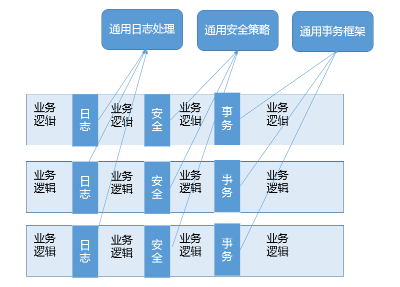
AOP 通过（动态）代理机制可以让开发者从这些繁琐事项中抽身出来，大幅度提高了代码的抽象程度和复用度。从逻辑上来说，我们在软件设计和实现中的类似代理，如 Facade、Observer 等很多设计目的，都可以通过动态代理优雅地实现。
今天我简要回顾了反射机制，谈了反射在 Java 语言演进中正在发生的变化，并且进一步探讨了动态代理机制和相关的切面编程，分析了其解决的问题，并探讨了生产实践中的选择考量。
一课一练
关于今天我们讨论的题目你做到心中有数了吗？留一道思考题给你，你在工作中哪些场景使用到了动态代理？相应选择了什么实现技术？选择的依据是什么？�-
第07讲 int和Integer有什么区别？
Java 虽然号称是面向对象的语言，但是原始数据类型仍然是重要的组成元素，所以在面试中，经常考察原始数据类型和包装类等 Java 语言特性。
今天我要问你的问题是，int 和 Integer 有什么区别？谈谈 Integer 的值缓存范围。
典型回答
int 是我们常说的整形数字，是 Java 的 8 个原始数据类型（Primitive Types，boolean、byte 、short、char、int、float、double、long）之一。Java 语言虽然号称一切都是对象，但原始数据类型是例外。
Integer 是 int 对应的包装类，它有一个 int 类型的字段存储数据，并且提供了基本操作，比如数学运算、int 和字符串之间转换等。在 Java 5 中，引入了自动装箱和自动拆箱功能（boxing/unboxing），Java 可以根据上下文，自动进行转换，极大地简化了相关编程。
关于 Integer 的值缓存，这涉及 Java 5 中另一个改进。构建 Integer 对象的传统方式是直接调用构造器，直接 new 一个对象。但是根据实践，我们发现大部分数据操作都是集中在有限的、较小的数值范围，因而，在 Java 5 中新增了静态工厂方法 valueOf，在调用它的时候会利用一个缓存机制，带来了明显的性能改进。按照 Javadoc，这个值默认缓存是 -128 到 127 之间。
考点分析
今天这个问题涵盖了 Java 里的两个基础要素：原始数据类型、包装类。谈到这里，就可以非常自然地扩展到自动装箱、自动拆箱机制，进而考察封装类的一些设计和实践。坦白说，理解基本原理和用法已经足够日常工作需求了，但是要落实到具体场景，还是有很多问题需要仔细思考才能确定。
面试官可以结合其他方面，来考察面试者的掌握程度和思考逻辑，比如：
- 我在专栏第 1 讲中介绍的 Java 使用的不同阶段：编译阶段、运行时，自动装箱 / 自动拆箱是发生在什么阶段？
- 我在前面提到使用静态工厂方法 valueOf 会使用到缓存机制，那么自动装箱的时候，缓存机制起作用吗？
- 为什么我们需要原始数据类型，Java 的对象似乎也很高效，应用中具体会产生哪些差异？
- 阅读过 Integer 源码吗？分析下类或某些方法的设计要点。
似乎有太多内容可以探讨，我们一起来分析一下。
知识扩展
\1. 理解自动装箱、拆箱
自动装箱实际上算是一种语法糖。什么是语法糖？可以简单理解为 Java 平台为我们自动进行了一些转换，保证不同的写法在运行时等价，它们发生在编译阶段，也就是生成的字节码是一致的。
像前面提到的整数，javac 替我们自动把装箱转换为 Integer.valueOf()，把拆箱替换为 Integer.intValue()，这似乎这也顺道回答了另一个问题，既然调用的是 Integer.valueOf，自然能够得到缓存的好处啊。
如何程序化的验证上面的结论呢？
你可以写一段简单的程序包含下面两句代码，然后反编译一下。当然，这是一种从表现倒推的方法，大多数情况下，我们还是直接参考规范文档会更加可靠，毕竟软件承诺的是遵循规范，而不是保持当前行为。
Integer integer = 1;
int unboxing = integer ++;
反编译输出：
1: invokestatic #2 // Method
java/lang/Integer.valueOf:(I)Ljava/lang/Integer;
8: invokevirtual #3 // Method
java/lang/Integer.intValue:()I
这种缓存机制并不是只有 Integer 才有，同样存在于其他的一些包装类，比如：
- Boolean，缓存了 true/false 对应实例，确切说，只会返回两个常量实例 Boolean.TRUE/FALSE。
- Short，同样是缓存了 -128 到 127 之间的数值。
- Byte，数值有限，所以全部都被缓存。
- Character，缓存范围’\u0000’ 到 ‘\u007F’。
自动装箱 / 自动拆箱似乎很酷，在编程实践中，有什么需要注意的吗？
原则上，建议避免无意中的装箱、拆箱行为，尤其是在性能敏感的场合，创建 10 万个 Java 对象和 10 万个整数的开销可不是一个数量级的，不管是内存使用还是处理速度，光是对象头的空间占用就已经是数量级的差距了。
我们其实可以把这个观点扩展开，使用原始数据类型、数组甚至本地代码实现等，在性能极度敏感的场景往往具有比较大的优势，用其替换掉包装类、动态数组（如 ArrayList）等可以作为性能优化的备选项。一些追求极致性能的产品或者类库，会极力避免创建过多对象。当然，在大多数产品代码里，并没有必要这么做，还是以开发效率优先。以我们经常会使用到的计数器实现为例，下面是一个常见的线程安全计数器实现。
class Counter {
private final AtomicLong counter = new AtomicLong();
public void increase() {
counter.incrementAndGet();
}
}
如果利用原始数据类型，可以将其修改为
class CompactCounter {
private volatile long counter;
private static final AtomicLongFieldUpdater<CompactCounter> updater = AtomicLongFieldUpdater.newUpdater(CompactCounter.class, "counter");
public void increase() {
updater.incrementAndGet(this);
}
}
\2. 源码分析
考察是否阅读过、是否理解 JDK 源代码可能是部分面试官的关注点，这并不完全是一种苛刻要求，阅读并实践高质量代码也是程序员成长的必经之路，下面我来分析下 Integer 的源码。
整体看一下 Integer 的职责，它主要包括各种基础的常量，比如最大值、最小值、位数等；前面提到的各种静态工厂方法 valueOf()；获取环境变量数值的方法；各种转换方法，比如转换为不同进制的字符串，如 8 进制，或者反过来的解析方法等。我们进一步来看一些有意思的地方。
首先，继续深挖缓存，Integer 的缓存范围虽然默认是 -128 到 127，但是在特别的应用场景，比如我们明确知道应用会频繁使用更大的数值，这时候应该怎么办呢？
缓存上限值实际是可以根据需要调整的，JVM 提供了参数设置：
-XX:AutoBoxCacheMax=N
这些实现，都体现在java.lang.Integer源码之中，并实现在 IntegerCache 的静态初始化块里。
private static class IntegerCache {
static final int low = -128;
static final int high;
static final Integer cache[];
static {
// high value may be configured by property
int h = 127;
String integerCacheHighPropValue = VM.getSavedProperty("java.lang.Integer.IntegerCache.high");
...
// range [-128, 127] must be interned (JLS7 5.1.7)
assert IntegerCache.high >= 127;
}
...
}
第二，我们在分析字符串的设计实现时，提到过字符串是不可变的，保证了基本的信息安全和并发编程中的线程安全。如果你去看包装类里存储数值的成员变量“value”，你会发现，不管是 Integer 还 Boolean 等，都被声明为“private final”，所以，它们同样是不可变类型！
这种设计是可以理解的，或者说是必须的选择。想象一下这个应用场景，比如 Integer 提供了 getInteger() 方法，用于方便地读取系统属性，我们可以用属性来设置服务器某个服务的端口，如果我可以轻易地把获取到的 Integer 对象改变为其他数值，这会带来产品可靠性方面的严重问题。
第三，Integer 等包装类，定义了类似 SIZE 或者 BYTES 这样的常量，这反映了什么样的设计考虑呢？如果你使用过其他语言，比如 C、C++，类似整数的位数，其实是不确定的，可能在不同的平台，比如 32 位或者 64 位平台，存在非常大的不同。那么，在 32 位 JDK 或者 64 位 JDK 里，数据位数会有不同吗？或者说，这个问题可以扩展为，我使用 32 位 JDK 开发编译的程序，运行在 64 位 JDK 上，需要做什么特别的移植工作吗？
其实，这种移植对于 Java 来说相对要简单些，因为原始数据类型是不存在差异的，这些明确定义在Java 语言规范里面，不管是 32 位还是 64 位环境，开发者无需担心数据的位数差异。
对于应用移植，虽然存在一些底层实现的差异，比如 64 位 HotSpot JVM 里的对象要比 32 位 HotSpot JVM 大（具体区别取决于不同 JVM 实现的选择），但是总体来说，并没有行为差异，应用移植还是可以做到宣称的“一次书写，到处执行”，应用开发者更多需要考虑的是容量、能力等方面的差异。
\3. 原始类型线程安全
前面提到了线程安全设计，你有没有想过，原始数据类型操作是不是线程安全的呢？
这里可能存在着不同层面的问题：
- 原始数据类型的变量，显然要使用并发相关手段，才能保证线程安全，这些我会在专栏后面的并发主题详细介绍。如果有线程安全的计算需要，建议考虑使用类似 AtomicInteger、AtomicLong 这样的线程安全类。
- 特别的是，部分比较宽的数据类型，比如 float、double，甚至不能保证更新操作的原子性，可能出现程序读取到只更新了一半数据位的数值！
4.Java 原始数据类型和引用类型局限性
前面我谈了非常多的技术细节，最后再从 Java 平台发展的角度来看看，原始数据类型、对象的局限性和演进。
对于 Java 应用开发者，设计复杂而灵活的类型系统似乎已经习以为常了。但是坦白说，毕竟这种类型系统的设计是源于很多年前的技术决定，现在已经逐渐暴露出了一些副作用，例如：
- 原始数据类型和 Java 泛型并不能配合使用
这是因为 Java 的泛型某种程度上可以算作伪泛型，它完全是一种编译期的技巧，Java 编译期会自动将类型转换为对应的特定类型，这就决定了使用泛型，必须保证相应类型可以转换为 Object。
- 无法高效地表达数据，也不便于表达复杂的数据结构，比如 vector 和 tuple
我们知道 Java 的对象都是引用类型，如果是一个原始数据类型数组，它在内存里是一段连续的内存，而对象数组则不然，数据存储的是引用，对象往往是分散地存储在堆的不同位置。这种设计虽然带来了极大灵活性，但是也导致了数据操作的低效，尤其是无法充分利用现代 CPU 缓存机制。
Java 为对象内建了各种多态、线程安全等方面的支持，但这不是所有场合的需求，尤其是数据处理重要性日益提高，更加高密度的值类型是非常现实的需求。
针对这些方面的增强，目前正在 OpenJDK 领域紧锣密鼓地进行开发，有兴趣的话你可以关注相关工程：http://openjdk.java.net/projects/valhalla/ 。
今天，我梳理了原始数据类型及其包装类，从源码级别分析了缓存机制等设计和实现细节，并且针对构建极致性能的场景，分析了一些可以借鉴的实践。
一课一练
关于今天我们讨论的题目你做到心中有数了吗？留一道思考题给你，前面提到了从空间角度，Java 对象要比原始数据类型开销大的多。你知道对象的内存结构是什么样的吗？比如，对象头的结构。如何计算或者获取某个 Java 对象的大小?
第08讲 对比Vector、ArrayList、LinkedList有何区别？
我们在日常的工作中，能够高效地管理和操作数据是非常重要的。由于每个编程语言支持的数据结构不尽相同，比如我最早学习的 C 语言，需要自己实现很多基础数据结构，管理和操作会比较麻烦。相比之下，Java 则要方便的多，针对通用场景的需求，Java 提供了强大的集合框架，大大提高了开发者的生产力。
今天我要问你的是有关集合框架方面的问题，对比 Vector、ArrayList、LinkedList 有何区别？
典型回答
这三者都是实现集合框架中的 List，也就是所谓的有序集合，因此具体功能也比较近似，比如都提供按照位置进行定位、添加或者删除的操作，都提供迭代器以遍历其内容等。但因为具体的设计区别，在行为、性能、线程安全等方面，表现又有很大不同。
Vector 是 Java 早期提供的线程安全的动态数组，如果不需要线程安全，并不建议选择，毕竟同步是有额外开销的。Vector 内部是使用对象数组来保存数据，可以根据需要自动的增加容量，当数组已满时，会创建新的数组，并拷贝原有数组数据。
ArrayList 是应用更加广泛的动态数组实现，它本身不是线程安全的，所以性能要好很多。与 Vector 近似，ArrayList 也是可以根据需要调整容量，不过两者的调整逻辑有所区别，Vector 在扩容时会提高 1 倍，而 ArrayList 则是增加 50%。
LinkedList 顾名思义是 Java 提供的双向链表，所以它不需要像上面两种那样调整容量，它也不是线程安全的。
考点分析
似乎从我接触 Java 开始，这个问题就一直是经典的面试题，前面我的回答覆盖了三者的一些基本的设计和实现。
一般来说，也可以补充一下不同容器类型适合的场景：
- Vector 和 ArrayList 作为动态数组，其内部元素以数组形式顺序存储的，所以非常适合随机访问的场合。除了尾部插入和删除元素，往往性能会相对较差，比如我们在中间位置插入一个元素，需要移动后续所有元素。
- 而 LinkedList 进行节点插入、删除却要高效得多，但是随机访问性能则要比动态数组慢。
所以，在应用开发中，如果事先可以估计到，应用操作是偏向于插入、删除，还是随机访问较多，就可以针对性的进行选择。这也是面试最常见的一个考察角度，给定一个场景，选择适合的数据结构，所以对于这种典型选择一定要掌握清楚。
考察 Java 集合框架，我觉得有很多方面需要掌握：
- Java 集合框架的设计结构，至少要有一个整体印象。
- Java 提供的主要容器（集合和 Map）类型，了解或掌握对应的数据结构、算法，思考具体技术选择。
- 将问题扩展到性能、并发等领域。
- 集合框架的演进与发展。
作为 Java 专栏，我会在尽量围绕 Java 相关进行扩展，否则光是罗列集合部分涉及的数据结构就要占用很大篇幅。这并不代表那些不重要，数据结构和算法是基本功，往往也是必考的点，有些公司甚至以考察这些方面而非常知名（甚至是“臭名昭著”）。我这里以需要掌握典型排序算法为例，你至少需要熟知：
- 内部排序，至少掌握基础算法如归并排序、交换排序（冒泡、快排）、选择排序、插入排序等。
- 外部排序，掌握利用内存和外部存储处理超大数据集，至少要理解过程和思路。
考察算法不仅仅是如何简单实现，面试官往往会刨根问底，比如哪些是排序是不稳定的呢（快排、堆排），或者思考稳定意味着什么；对不同数据集，各种排序的最好或最差情况；从某个角度如何进一步优化（比如空间占用，假设业务场景需要最小辅助空间，这个角度堆排序就比归并优异）等，从简单的了解，到进一步的思考，面试官通常还会观察面试者处理问题和沟通时的思路。
以上只是一个方面的例子，建议学习相关书籍，如《算法导论》《编程珠玑》等，或相关教程。对于特定领域，比如推荐系统，建议咨询领域专家。单纯从面试的角度，很多朋友推荐使用一些算法网站如 LeetCode 等，帮助复习和准备面试，但坦白说我并没有刷过这些算法题，这也是仁者见仁智者见智的事情，招聘时我更倾向于考察面试者自身最擅长的东西，免得招到纯面试高手。
知识扩展
我们先一起来理解集合框架的整体设计，为了有个直观的印象，我画了一个简要的类图。注意，为了避免混淆，我这里没有把 java.util.concurrent 下面的线程安全容器添加进来；也没有列出 Map 容器，虽然通常概念上我们也会把 Map 作为集合框架的一部分，但是它本身并不是真正的集合（Collection）。
所以，我今天主要围绕狭义的集合框架，其他都会在专栏后面的内容进行讲解。
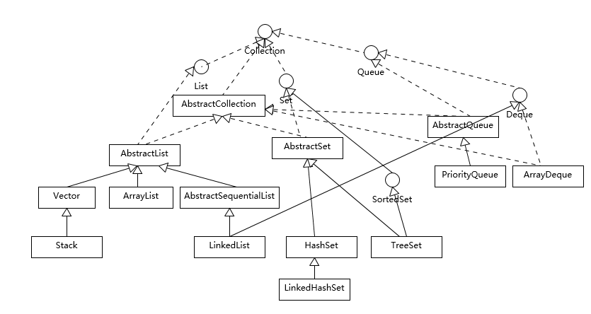
我们可以看到 Java 的集合框架，Collection 接口是所有集合的根，然后扩展开提供了三大类集合，分别是：
- List，也就是我们前面介绍最多的有序集合，它提供了方便的访问、插入、删除等操作。
- Set，Set 是不允许重复元素的，这是和 List 最明显的区别，也就是不存在两个对象 equals 返回 true。我们在日常开发中有很多需要保证元素唯一性的场合。
- Queue/Deque，则是 Java 提供的标准队列结构的实现，除了集合的基本功能，它还支持类似先入先出（FIFO， First-in-First-Out）或者后入先出（LIFO，Last-In-First-Out）等特定行为。这里不包括 BlockingQueue，因为通常是并发编程场合，所以被放置在并发包里。
每种集合的通用逻辑，都被抽象到相应的抽象类之中，比如 AbstractList 就集中了各种 List 操作的通用部分。这些集合不是完全孤立的，比如，LinkedList 本身，既是 List，也是 Deque 哦。
如果阅读过更多源码，你会发现，其实，TreeSet 代码里实际默认是利用 TreeMap 实现的，Java 类库创建了一个 Dummy 对象“PRESENT”作为 value，然后所有插入的元素其实是以键的形式放入了 TreeMap 里面；同理，HashSet 其实也是以 HashMap 为基础实现的，原来他们只是 Map 类的马甲！
就像前面提到过的，我们需要对各种具体集合实现，至少了解基本特征和典型使用场景，以 Set 的几个实现为例：
- TreeSet 支持自然顺序访问，但是添加、删除、包含等操作要相对低效（log(n) 时间）。
- HashSet 则是利用哈希算法，理想情况下，如果哈希散列正常，可以提供常数时间的添加、删除、包含等操作，但是它不保证有序。
- LinkedHashSet，内部构建了一个记录插入顺序的双向链表，因此提供了按照插入顺序遍历的能力，与此同时，也保证了常数时间的添加、删除、包含等操作，这些操作性能略低于 HashSet，因为需要维护链表的开销。
- 在遍历元素时，HashSet 性能受自身容量影响，所以初始化时，除非有必要，不然不要将其背后的 HashMap 容量设置过大。而对于 LinkedHashSet，由于其内部链表提供的方便，遍历性能只和元素多少有关系。
我今天介绍的这些集合类，都不是线程安全的，对于 java.util.concurrent 里面的线程安全容器，我在专栏后面会去介绍。但是，并不代表这些集合完全不能支持并发编程的场景，在 Collections 工具类中，提供了一系列的 synchronized 方法，比如
static <T> List<T> synchronizedList(List<T> list)
我们完全可以利用类似方法来实现基本的线程安全集合：
List list = Collections.synchronizedList(new ArrayList());
它的实现，基本就是将每个基本方法，比如 get、set、add 之类，都通过 synchronizd 添加基本的同步支持，非常简单粗暴，但也非常实用。注意这些方法创建的线程安全集合，都符合迭代时 fail-fast 行为，当发生意外的并发修改时，尽早抛出 ConcurrentModificationException 异常，以避免不可预计的行为。
另外一个经常会被考察到的问题，就是理解 Java 提供的默认排序算法，具体是什么排序方式以及设计思路等。
这个问题本身就是有点陷阱的意味，因为需要区分是 Arrays.sort() 还是 Collections.sort() （底层是调用 Arrays.sort()）；什么数据类型；多大的数据集（太小的数据集，复杂排序是没必要的，Java 会直接进行二分插入排序）等。
- 对于原始数据类型，目前使用的是所谓双轴快速排序（Dual-Pivot QuickSort），是一种改进的快速排序算法，早期版本是相对传统的快速排序，你可以阅读源码。
- 而对于对象数据类型，目前则是使用TimSort，思想上也是一种归并和二分插入排序（binarySort）结合的优化排序算法。TimSort 并不是 Java 的独创，简单说它的思路是查找数据集中已经排好序的分区（这里叫 run），然后合并这些分区来达到排序的目的。
另外，Java 8 引入了并行排序算法（直接使用 parallelSort 方法），这是为了充分利用现代多核处理器的计算能力，底层实现基于 fork-join 框架（专栏后面会对 fork-join 进行相对详细的介绍），当处理的数据集比较小的时候，差距不明显，甚至还表现差一点；但是，当数据集增长到数万或百万以上时，提高就非常大了，具体还是取决于处理器和系统环境。
排序算法仍然在不断改进，最近双轴快速排序实现的作者提交了一个更进一步的改进，历时多年的研究，目前正在审核和验证阶段。根据作者的性能测试对比，相比于基于归并排序的实现，新改进可以提高随机数据排序速度提高 10%～20%，甚至在其他特征的数据集上也有几倍的提高，有兴趣的话你可以参考具体代码和介绍： http://mail.openjdk.java.net/pipermail/core-libs-dev/2018-January/051000.html 。
在 Java 8 之中，Java 平台支持了 Lambda 和 Stream，相应的 Java 集合框架也进行了大范围的增强，以支持类似为集合创建相应 stream 或者 parallelStream 的方法实现，我们可以非常方便的实现函数式代码。
阅读 Java 源代码，你会发现，这些 API 的设计和实现比较独特，它们并不是实现在抽象类里面，而是以默认方法的形式实现在 Collection 这样的接口里！这是 Java 8 在语言层面的新特性，允许接口实现默认方法，理论上来说，我们原来实现在类似 Collections 这种工具类中的方法，大多可以转换到相应的接口上。针对这一点，我在面向对象主题，会专门梳理 Java 语言面向对象基本机制的演进。
在 Java 9 中，Java 标准类库提供了一系列的静态工厂方法，比如，List.of()、Set.of()，大大简化了构建小的容器实例的代码量。根据业界实践经验，我们发现相当一部分集合实例都是容量非常有限的，而且在生命周期中并不会进行修改。但是，在原有的 Java 类库中，我们可能不得不写成：
ArrayList<String> list = new ArrayList<>();
list.add("Hello");
list.add("World");
而利用新的容器静态工厂方法，一句代码就够了，并且保证了不可变性。
List<String> simpleList = List.of("Hello","world");
更进一步，通过各种 of 静态工厂方法创建的实例，还应用了一些我们所谓的最佳实践，比如，它是不可变的，符合我们对线程安全的需求；它因为不需要考虑扩容，所以空间上更加紧凑等。
如果我们去看 of 方法的源码，你还会发现一个特别有意思的地方：我们知道 Java 已经支持所谓的可变参数（varargs），但是官方类库还是提供了一系列特定参数长度的方法，看起来似乎非常不优雅，为什么呢？这其实是为了最优的性能，JVM 在处理变长参数的时候会有明显的额外开销，如果你需要实现性能敏感的 API，也可以进行参考。
今天我从 Verctor、ArrayList、LinkedList 开始，逐步分析其设计实现区别、适合的应用场景等，并进一步对集合框架进行了简单的归纳，介绍了集合框架从基础算法到 API 设计实现的各种改进，希望能对你的日常开发和 API 设计能够有帮助。
一课一练
关于今天我们讨论的题目你做到心中有数了吗？留一道思考题给你，先思考一个应用场景，比如你需要实现一个云计算任务调度系统，希望可以保证 VIP 客户的任务被优先处理，你可以利用哪些数据结构或者标准的集合类型呢？更进一步讲，类似场景大多是基于什么数据结构呢？
第09讲 对比Hashtable、HashMap、TreeMap有什么不同？
Map 是广义 Java 集合框架中的另外一部分，HashMap 作为框架中使用频率最高的类型之一，它本身以及相关类型自然也是面试考察的热点。
今天我要问你的问题是，对比 Hashtable、HashMap、TreeMap 有什么不同？谈谈你对 HashMap 的掌握。
典型回答
Hashtable、HashMap、TreeMap 都是最常见的一些 Map 实现，是以键值对的形式存储和操作数据的容器类型。
Hashtable 是早期 Java 类库提供的一个哈希表实现，本身是同步的，不支持 null 键和值，由于同步导致的性能开销，所以已经很少被推荐使用。
HashMap 是应用更加广泛的哈希表实现，行为上大致上与 HashTable 一致，主要区别在于 HashMap 不是同步的，支持 null 键和值等。通常情况下，HashMap 进行 put 或者 get 操作，可以达到常数时间的性能，所以它是绝大部分利用键值对存取场景的首选，比如，实现一个用户 ID 和用户信息对应的运行时存储结构。
TreeMap 则是基于红黑树的一种提供顺序访问的 Map，和 HashMap 不同，它的 get、put、remove 之类操作都是 O（log(n)）的时间复杂度，具体顺序可以由指定的 Comparator 来决定，或者根据键的自然顺序来判断。
考点分析
上面的回答，只是对一些基本特征的简单总结，针对 Map 相关可以扩展的问题很多，从各种数据结构、典型应用场景，到程序设计实现的技术考量，尤其是在 Java 8 里，HashMap 本身发生了非常大的变化，这些都是经常考察的方面。
很多朋友向我反馈，面试官似乎钟爱考察 HashMap 的设计和实现细节，所以今天我会增加相应的源码解读，主要专注于下面几个方面：
- 理解 Map 相关类似整体结构，尤其是有序数据结构的一些要点。
- 从源码去分析 HashMap 的设计和实现要点，理解容量、负载因子等，为什么需要这些参数，如何影响 Map 的性能，实践中如何取舍等。
- 理解树化改造的相关原理和改进原因。
除了典型的代码分析，还有一些有意思的并发相关问题也经常会被提到，如 HashMap 在并发环境可能出现无限循环占用 CPU、size 不准确等诡异的问题。
我认为这是一种典型的使用错误，因为 HashMap 明确声明不是线程安全的数据结构，如果忽略这一点，简单用在多线程场景里，难免会出现问题。
理解导致这种错误的原因，也是深入理解并发程序运行的好办法。对于具体发生了什么，你可以参考这篇很久以前的分析，里面甚至提供了示意图，我就不再重复别人写好的内容了。
知识扩展
1.Map 整体结构
首先，我们先对 Map 相关类型有个整体了解，Map 虽然通常被包括在 Java 集合框架里，但是其本身并不是狭义上的集合类型（Collection），具体你可以参考下面这个简单类图。
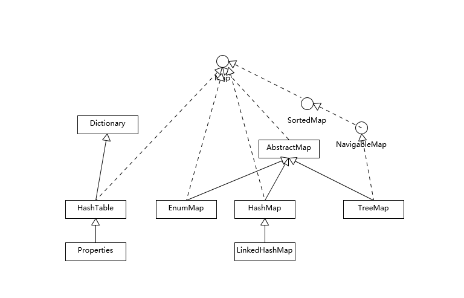
Hashtable 比较特别，作为类似 Vector、Stack 的早期集合相关类型，它是扩展了 Dictionary 类的，类结构上与 HashMap 之类明显不同。
HashMap 等其他 Map 实现则是都扩展了 AbstractMap，里面包含了通用方法抽象。不同 Map 的用途，从类图结构就能体现出来，设计目的已经体现在不同接口上。
大部分使用 Map 的场景，通常就是放入、访问或者删除，而对顺序没有特别要求，HashMap 在这种情况下基本是最好的选择。HashMap 的性能表现非常依赖于哈希码的有效性，请务必掌握 hashCode 和 equals 的一些基本约定，比如：
- equals 相等，hashCode 一定要相等。
- 重写了 hashCode 也要重写 equals。
- hashCode 需要保持一致性，状态改变返回的哈希值仍然要一致。
- equals 的对称、反射、传递等特性。
这方面内容网上有很多资料，我就不在这里详细展开了。
针对有序 Map 的分析内容比较有限，我再补充一些，虽然 LinkedHashMap 和 TreeMap 都可以保证某种顺序，但二者还是非常不同的。
- LinkedHashMap 通常提供的是遍历顺序符合插入顺序，它的实现是通过为条目（键值对）维护一个双向链表。注意，通过特定构造函数，我们可以创建反映访问顺序的实例，所谓的 put、get、compute 等，都算作“访问”。
这种行为适用于一些特定应用场景，例如，我们构建一个空间占用敏感的资源池，希望可以自动将最不常被访问的对象释放掉，这就可以利用 LinkedHashMap 提供的机制来实现，参考下面的示例：
import java.util.LinkedHashMap;
import java.util.Map;
public class LinkedHashMapSample {
public static void main(String[] args) {
LinkedHashMap<String, String> accessOrderedMap = new LinkedHashMap<String, String>(16, 0.75F, true){
@Override
protected boolean removeEldestEntry(Map.Entry<String, String> eldest) { // 实现自定义删除策略，否则行为就和普遍 Map 没有区别
return size() > 3;
}
};
accessOrderedMap.put("Project1", "Valhalla");
accessOrderedMap.put("Project2", "Panama");
accessOrderedMap.put("Project3", "Loom");
accessOrderedMap.forEach( (k,v) -> {
System.out.println(k +":" + v);
});
// 模拟访问
accessOrderedMap.get("Project2");
accessOrderedMap.get("Project2");
accessOrderedMap.get("Project3");
System.out.println("Iterate over should be not affected:");
accessOrderedMap.forEach( (k,v) -> {
System.out.println(k +":" + v);
});
// 触发删除
accessOrderedMap.put("Project4", "Mission Control");
System.out.println("Oldest entry should be removed:");
accessOrderedMap.forEach( (k,v) -> {// 遍历顺序不变
System.out.println(k +":" + v);
});
}
}
- 对于 TreeMap，它的整体顺序是由键的顺序关系决定的，通过 Comparator 或 Comparable（自然顺序）来决定。
我在上一讲留给你的思考题提到了，构建一个具有优先级的调度系统的问题，其本质就是个典型的优先队列场景，Java 标准库提供了基于二叉堆实现的 PriorityQueue，它们都是依赖于同一种排序机制，当然也包括 TreeMap 的马甲 TreeSet。
类似 hashCode 和 equals 的约定，为了避免模棱两可的情况，自然顺序同样需要符合一个约定，就是 compareTo 的返回值需要和 equals 一致，否则就会出现模棱两可情况。
我们可以分析 TreeMap 的 put 方法实现：
public V put(K key, V value) {
Entry<K,V> t = …
cmp = k.compareTo(t.key);
if (cmp < 0)
t = t.left;
else if (cmp > 0)
t = t.right;
else
return t.setValue(value);
// ...
}
从代码里，你可以看出什么呢？ 当我不遵守约定时，两个不符合唯一性（equals）要求的对象被当作是同一个（因为，compareTo 返回 0），这会导致歧义的行为表现。
2.HashMap 源码分析
前面提到，HashMap 设计与实现是个非常高频的面试题，所以我会在这进行相对详细的源码解读，主要围绕：
- HashMap 内部实现基本点分析。
- 容量（capacity）和负载系数（load factor）。
- 树化 。
首先，我们来一起看看 HashMap 内部的结构，它可以看作是数组（Node<K,V>[] table）和链表结合组成的复合结构，数组被分为一个个桶（bucket），通过哈希值决定了键值对在这个数组的寻址；哈希值相同的键值对，则以链表形式存储，你可以参考下面的示意图。这里需要注意的是，如果链表大小超过阈值（TREEIFY_THRESHOLD, 8），图中的链表就会被改造为树形结构。
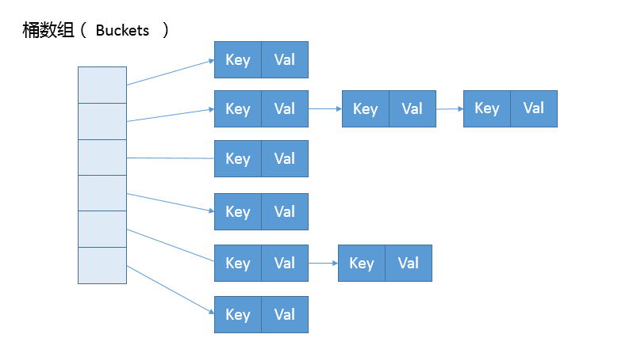
从非拷贝构造函数的实现来看，这个表格（数组）似乎并没有在最初就初始化好，仅仅设置了一些初始值而已。
public HashMap(int initialCapacity, float loadFactor){
// ...
this.loadFactor = loadFactor;
this.threshold = tableSizeFor(initialCapacity);
}
所以，我们深刻怀疑，HashMap 也许是按照 lazy-load 原则，在首次使用时被初始化（拷贝构造函数除外，我这里仅介绍最通用的场景）。既然如此，我们去看看 put 方法实现，似乎只有一个 putVal 的调用：
public V put(K key, V value) {
return putVal(hash(key), key, value, false, true);
}
看来主要的密码似乎藏在 putVal 里面，到底有什么秘密呢？为了节省空间，我这里只截取了 putVal 比较关键的几部分。
final V putVal(int hash, K key, V value, boolean onlyIfAbent,
boolean evit) {
Node<K,V>[] tab; Node<K,V> p; int , i;
if ((tab = table) == null || (n = tab.length) = 0)
n = (tab = resize()).length;
if ((p = tab[i = (n - 1) & hash]) == ull)
tab[i] = newNode(hash, key, value, nll);
else {
// ...
if (binCount >= TREEIFY_THRESHOLD - 1) // -1 for first
treeifyBin(tab, hash);
// ...
}
}
从 putVal 方法最初的几行，我们就可以发现几个有意思的地方：
- 如果表格是 null，resize 方法会负责初始化它，这从 tab = resize() 可以看出。
- resize 方法兼顾两个职责，创建初始存储表格，或者在容量不满足需求的时候，进行扩容（resize）。
- 在放置新的键值对的过程中，如果发生下面条件，就会发生扩容。
if (++size > threshold)
resize();
- 具体键值对在哈希表中的位置（数组 index）取决于下面的位运算：
i = (n - 1) & hash
仔细观察哈希值的源头，我们会发现，它并不是 key 本身的 hashCode，而是来自于 HashMap 内部的另外一个 hash 方法。注意，为什么这里需要将高位数据移位到低位进行异或运算呢？这是因为有些数据计算出的哈希值差异主要在高位，而 HashMap 里的哈希寻址是忽略容量以上的高位的，那么这种处理就可以有效避免类似情况下的哈希碰撞。
static final int hash(Object kye) {
int h;
return (key == null) ? 0 : (h = key.hashCode()) ^ (h >>>16;
}
- 我前面提到的链表结构（这里叫 bin），会在达到一定门限值时，发生树化，我稍后会分析为什么 HashMap 需要对 bin 进行处理。
可以看到，putVal 方法本身逻辑非常集中，从初始化、扩容到树化，全部都和它有关，推荐你阅读源码的时候，可以参考上面的主要逻辑。
我进一步分析一下身兼多职的 resize 方法，很多朋友都反馈经常被面试官追问它的源码设计。
final Node<K,V>[] resize() {
// ...
else if ((newCap = oldCap << 1) < MAXIMUM_CAPACIY &&
oldCap >= DEFAULT_INITIAL_CAPAITY)
newThr = oldThr << 1; // double there
// ...
else if (oldThr > 0) // initial capacity was placed in threshold
newCap = oldThr;
else {
// zero initial threshold signifies using defaultsfults
newCap = DEFAULT_INITIAL_CAPAITY;
newThr = (int)(DEFAULT_LOAD_ATOR* DEFAULT_INITIAL_CAPACITY；
}
if (newThr ==0) {
float ft = (float)newCap * loadFator;
newThr = (newCap < MAXIMUM_CAPACITY && ft < (float)MAXIMUM_CAPACITY ?(int)ft : Integer.MAX_VALUE);
}
threshold = neThr;
Node<K,V>[] newTab = (Node<K,V>[])new Node[newap];
table = n；
// 移动到新的数组结构 e 数组结构
}
依据 resize 源码，不考虑极端情况（容量理论最大极限由 MAXIMUM_CAPACITY 指定，数值为 1<<30，也就是 2 的 30 次方），我们可以归纳为：
- 门限值等于（负载因子）x（容量），如果构建 HashMap 的时候没有指定它们，那么就是依据相应的默认常量值。
- 门限通常是以倍数进行调整 （newThr = oldThr << 1），我前面提到，根据 putVal 中的逻辑，当元素个数超过门限大小时，则调整 Map 大小。
- 扩容后，需要将老的数组中的元素重新放置到新的数组，这是扩容的一个主要开销来源。
\3. 容量、负载因子和树化
前面我们快速梳理了一下 HashMap 从创建到放入键值对的相关逻辑，现在思考一下，为什么我们需要在乎容量和负载因子呢？
这是因为容量和负载系数决定了可用的桶的数量，空桶太多会浪费空间，如果使用的太满则会严重影响操作的性能。极端情况下，假设只有一个桶，那么它就退化成了链表，完全不能提供所谓常数时间存的性能。
既然容量和负载因子这么重要，我们在实践中应该如何选择呢？
如果能够知道 HashMap 要存取的键值对数量，可以考虑预先设置合适的容量大小。具体数值我们可以根据扩容发生的条件来做简单预估，根据前面的代码分析，我们知道它需要符合计算条件：
负载因子 * 容量 > 元素数量
所以，预先设置的容量需要满足，大于“预估元素数量 / 负载因子”，同时它是 2 的幂数，结论已经非常清晰了。
而对于负载因子，我建议：
- 如果没有特别需求，不要轻易进行更改，因为 JDK 自身的默认负载因子是非常符合通用场景的需求的。
- 如果确实需要调整，建议不要设置超过 0.75 的数值，因为会显著增加冲突，降低 HashMap 的性能。
- 如果使用太小的负载因子，按照上面的公式，预设容量值也进行调整，否则可能会导致更加频繁的扩容，增加无谓的开销，本身访问性能也会受影响。
我们前面提到了树化改造，对应逻辑主要在 putVal 和 treeifyBin 中。
final void treeifyBin(Node<K,V>[] tab, int hash) {
int n, index; Node<K,V> e;
if (tab == null || (n = tab.length) < MIN_TREEIFY_CAPACITY)
resize();
else if ((e = tab[index = (n - 1) & hash]) != null) {
// 树化改造逻辑
}
}
上面是精简过的 treeifyBin 示意，综合这两个方法，树化改造的逻辑就非常清晰了，可以理解为，当 bin 的数量大于 TREEIFY_THRESHOLD 时：
- 如果容量小于 MIN_TREEIFY_CAPACITY，只会进行简单的扩容。
- 如果容量大于 MIN_TREEIFY_CAPACITY ，则会进行树化改造。
那么，为什么 HashMap 要树化呢？
**本质上这是个安全问题。**因为在元素放置过程中，如果一个对象哈希冲突，都被放置到同一个桶里，则会形成一个链表，我们知道链表查询是线性的，会严重影响存取的性能。
而在现实世界，构造哈希冲突的数据并不是非常复杂的事情，恶意代码就可以利用这些数据大量与服务器端交互，导致服务器端 CPU 大量占用，这就构成了哈希碰撞拒绝服务攻击，国内一线互联网公司就发生过类似攻击事件。
今天我从 Map 相关的几种实现对比，对各种 Map 进行了分析，讲解了有序集合类型容易混淆的地方，并从源码级别分析了 HashMap 的基本结构，希望对你有所帮助。
一课一练
关于今天我们讨论的题目你做到心中有数了吗？留一道思考题给你，解决哈希冲突有哪些典型方法呢？
第10讲 如何保证集合是线程安全的 ConcurrentHashMap如何实现高效地线程安全？
我在之前两讲介绍了 Java 集合框架的典型容器类，它们绝大部分都不是线程安全的，仅有的线程安全实现，比如 Vector、Stack，在性能方面也远不尽如人意。幸好 Java 语言提供了并发包（java.util.concurrent），为高度并发需求提供了更加全面的工具支持。
今天我要问你的问题是，如何保证容器是线程安全的？ConcurrentHashMap 如何实现高效地线程安全？
典型回答
Java 提供了不同层面的线程安全支持。在传统集合框架内部，除了 Hashtable 等同步容器，还提供了所谓的同步包装器（Synchronized Wrapper），我们可以调用 Collections 工具类提供的包装方法，来获取一个同步的包装容器（如 Collections.synchronizedMap），但是它们都是利用非常粗粒度的同步方式，在高并发情况下，性能比较低下。
另外，更加普遍的选择是利用并发包提供的线程安全容器类，它提供了：
- 各种并发容器，比如 ConcurrentHashMap、CopyOnWriteArrayList。
- 各种线程安全队列（Queue/Deque），如 ArrayBlockingQueue、SynchronousQueue。
- 各种有序容器的线程安全版本等。
具体保证线程安全的方式，包括有从简单的 synchronize 方式，到基于更加精细化的，比如基于分离锁实现的 ConcurrentHashMap 等并发实现等。具体选择要看开发的场景需求，总体来说，并发包内提供的容器通用场景，远优于早期的简单同步实现。
考点分析
谈到线程安全和并发，可以说是 Java 面试中必考的考点，我上面给出的回答是一个相对宽泛的总结，而且 ConcurrentHashMap 等并发容器实现也在不断演进，不能一概而论。
如果要深入思考并回答这个问题及其扩展方面，至少需要：
- 理解基本的线程安全工具。
- 理解传统集合框架并发编程中 Map 存在的问题，清楚简单同步方式的不足。
- 梳理并发包内，尤其是 ConcurrentHashMap 采取了哪些方法来提高并发表现。
- 最好能够掌握 ConcurrentHashMap 自身的演进，目前的很多分析资料还是基于其早期版本。
今天我主要是延续专栏之前两讲的内容，重点解读经常被同时考察的 HashMap 和 ConcurrentHashMap。今天这一讲并不是对并发方面的全面梳理，毕竟这也不是专栏一讲可以介绍完整的，算是个开胃菜吧，类似 CAS 等更加底层的机制，后面会在 Java 进阶模块中的并发主题有更加系统的介绍。
知识扩展
\1. 为什么需要 ConcurrentHashMap？
Hashtable 本身比较低效，因为它的实现基本就是将 put、get、size 等各种方法加上“synchronized”。简单来说，这就导致了所有并发操作都要竞争同一把锁，一个线程在进行同步操作时，其他线程只能等待，大大降低了并发操作的效率。
前面已经提过 HashMap 不是线程安全的，并发情况会导致类似 CPU 占用 100% 等一些问题，那么能不能利用 Collections 提供的同步包装器来解决问题呢？
看看下面的代码片段，我们发现同步包装器只是利用输入 Map 构造了另一个同步版本，所有操作虽然不再声明成为 synchronized 方法，但是还是利用了“this”作为互斥的 mutex，没有真正意义上的改进！
private static class SynchronizedMap<K,V>
implements Map<K,V>, Serializable {
private final Map<K,V> m; // Backing Map
final Object mutex; // Object on which to synchronize
// …
public int size() {
synchronized (mutex) {return m.size();}
}
// …
}
所以，Hashtable 或者同步包装版本，都只是适合在非高度并发的场景下。
2.ConcurrentHashMap 分析
我们再来看看 ConcurrentHashMap 是如何设计实现的，为什么它能大大提高并发效率。
首先，我这里强调，ConcurrentHashMap 的设计实现其实一直在演化，比如在 Java 8 中就发生了非常大的变化（Java 7 其实也有不少更新），所以，我这里将比较分析结构、实现机制等方面，对比不同版本的主要区别。
早期 ConcurrentHashMap，其实现是基于：
- 分离锁，也就是将内部进行分段（Segment），里面则是 HashEntry 的数组，和 HashMap 类似，哈希相同的条目也是以链表形式存放。
- HashEntry 内部使用 volatile 的 value 字段来保证可见性，也利用了不可变对象的机制以改进利用 Unsafe 提供的底层能力，比如 volatile access，去直接完成部分操作，以最优化性能，毕竟 Unsafe 中的很多操作都是 JVM intrinsic 优化过的。
你可以参考下面这个早期 ConcurrentHashMap 内部结构的示意图，其核心是利用分段设计，在进行并发操作的时候，只需要锁定相应段，这样就有效避免了类似 Hashtable 整体同步的问题，大大提高了性能。
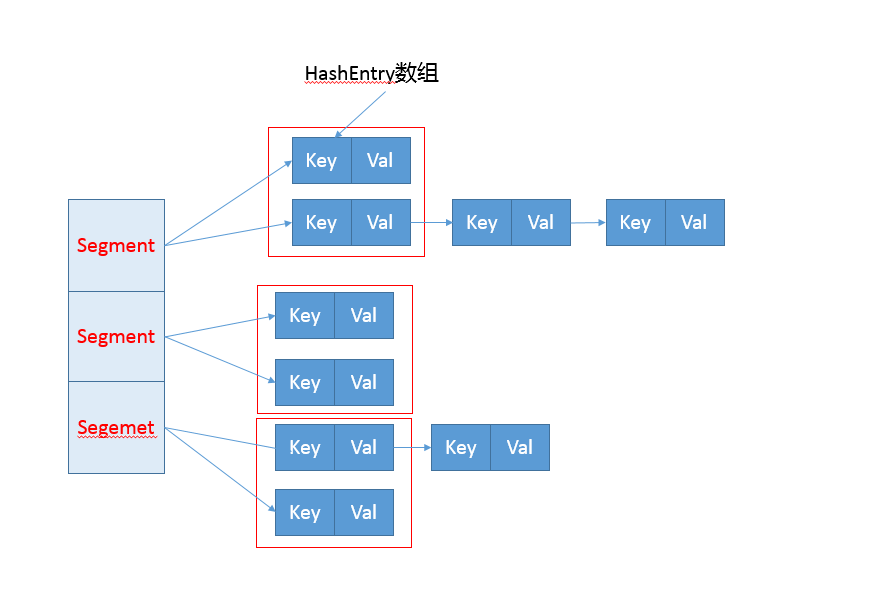
在构造的时候，Segment 的数量由所谓的 concurrentcyLevel 决定，默认是 16，也可以在相应构造函数直接指定。注意，Java 需要它是 2 的幂数值，如果输入是类似 15 这种非幂值，会被自动调整到 16 之类 2 的幂数值。
具体情况，我们一起看看一些 Map 基本操作的源码，这是 JDK 7 比较新的 get 代码。针对具体的优化部分，为方便理解，我直接注释在代码段里，get 操作需要保证的是可见性，所以并没有什么同步逻辑。
public V get(Object key) {
Segment<K,V> s; // manually integrate access methods to reduce overhead
HashEntry<K,V>[] tab;
int h = hash(key.hashCode());
// 利用位操作替换普通数学运算
long u = (((h >>> segmentShift) & segmentMask) << SSHIFT) + SBASE;
// 以 Segment 为单位，进行定位
// 利用 Unsafe 直接进行 volatile access
if ((s = (Segment<K,V>)UNSAFE.getObjectVolatile(segments, u)) != null &&
(tab = s.table) != null) {
// 省略
}
return null;
}
而对于 put 操作，首先是通过二次哈希避免哈希冲突，然后以 Unsafe 调用方式，直接获取相应的 Segment，然后进行线程安全的 put 操作：
public V put(K key, V value) {
Segment<K,V> s;
if (value == null)
throw new NullPointerException();
// 二次哈希，以保证数据的分散性，避免哈希冲突
int hash = hash(key.hashCode());
int j = (hash >>> segmentShift) & segmentMask;
if ((s = (Segment<K,V>)UNSAFE.getObject // nonvolatile; recheck
(segments, (j << SSHIFT) + SBASE)) == null) // in ensureSegment
s = ensureSegment(j);
return s.put(key, hash, value, false);
}
其核心逻辑实现在下面的内部方法中：
final V put(K key, int hash, V value, boolean onlyIfAbsent) {
// scanAndLockForPut 会去查找是否有 key 相同 Node
// 无论如何，确保获取锁
HashEntry<K,V> node = tryLock() ? null :
scanAndLockForPut(key, hash, value);
V oldValue;
try {
HashEntry<K,V>[] tab = table;
int index = (tab.length - 1) & hash;
HashEntry<K,V> first = entryAt(tab, index);
for (HashEntry<K,V> e = first;;) {
if (e != null) {
K k;
// 更新已有 value...
}
else {
// 放置 HashEntry 到特定位置，如果超过阈值，进行 rehash
// ...
}
}
} finally {
unlock();
}
return oldValue;
}
所以，从上面的源码清晰的看出，在进行并发写操作时：
- ConcurrentHashMap 会获取再入锁，以保证数据一致性，Segment 本身就是基于 ReentrantLock 的扩展实现，所以，在并发修改期间，相应 Segment 是被锁定的。
- 在最初阶段，进行重复性的扫描，以确定相应 key 值是否已经在数组里面，进而决定是更新还是放置操作，你可以在代码里看到相应的注释。重复扫描、检测冲突是 ConcurrentHashMap 的常见技巧。
- 我在专栏上一讲介绍 HashMap 时，提到了可能发生的扩容问题，在 ConcurrentHashMap 中同样存在。不过有一个明显区别，就是它进行的不是整体的扩容，而是单独对 Segment 进行扩容，细节就不介绍了。
另外一个 Map 的 size 方法同样需要关注，它的实现涉及分离锁的一个副作用。
试想，如果不进行同步，简单的计算所有 Segment 的总值，可能会因为并发 put，导致结果不准确，但是直接锁定所有 Segment 进行计算，就会变得非常昂贵。其实，分离锁也限制了 Map 的初始化等操作。
所以，ConcurrentHashMap 的实现是通过重试机制（RETRIES_BEFORE_LOCK，指定重试次数 2），来试图获得可靠值。如果没有监控到发生变化（通过对比 Segment.modCount），就直接返回，否则获取锁进行操作。
下面我来对比一下，在 Java 8 和之后的版本中，ConcurrentHashMap 发生了哪些变化呢？
- 总体结构上，它的内部存储变得和我在专栏上一讲介绍的 HashMap 结构非常相似，同样是大的桶（bucket）数组，然后内部也是一个个所谓的链表结构（bin），同步的粒度要更细致一些。
- 其内部仍然有 Segment 定义，但仅仅是为了保证序列化时的兼容性而已，不再有任何结构上的用处。
- 因为不再使用 Segment，初始化操作大大简化，修改为 lazy-load 形式，这样可以有效避免初始开销，解决了老版本很多人抱怨的这一点。
- 数据存储利用 volatile 来保证可见性。
- 使用 CAS 等操作，在特定场景进行无锁并发操作。
- 使用 Unsafe、LongAdder 之类底层手段，进行极端情况的优化。
先看看现在的数据存储内部实现，我们可以发现 Key 是 final 的，因为在生命周期中，一个条目的 Key 发生变化是不可能的；与此同时 val，则声明为 volatile，以保证可见性。
static class Node<K,V> implements Map.Entry<K,V> {
final int hash;
final K key;
volatile V val;
volatile Node<K,V> next;
// …
}
我这里就不再介绍 get 方法和构造函数了，相对比较简单，直接看并发的 put 是如何实现的。
final V putVal(K key, V value, boolean onlyIfAbsent) { if (key == null || value == null) throw new NullPointerException();
int hash = spread(key.hashCode());
int binCount = 0;
for (Node<K,V>[] tab = table;;) {
Node<K,V> f; int n, i, fh; K fk; V fv;
if (tab == null || (n = tab.length) == 0)
tab = initTable();
else if ((f = tabAt(tab, i = (n - 1) & hash)) == null) {
// 利用 CAS 去进行无锁线程安全操作，如果 bin 是空的
if (casTabAt(tab, i, null, new Node<K,V>(hash, key, value)))
break;
}
else if ((fh = f.hash) == MOVED)
tab = helpTransfer(tab, f);
else if (onlyIfAbsent // 不加锁，进行检查
&& fh == hash
&& ((fk = f.key) == key || (fk != null && key.equals(fk)))
&& (fv = f.val) != null)
return fv;
else {
V oldVal = null;
synchronized (f) {
// 细粒度的同步修改操作...
}
}
// Bin 超过阈值，进行树化
if (binCount != 0) {
if (binCount >= TREEIFY_THRESHOLD)
treeifyBin(tab, i);
if (oldVal != null)
return oldVal;
break;
}
}
}
addCount(1L, binCount);
return null;
}
初始化操作实现在 initTable 里面，这是一个典型的 CAS 使用场景，利用 volatile 的 sizeCtl 作为互斥手段：如果发现竞争性的初始化，就 spin 在那里，等待条件恢复；否则利用 CAS 设置排他标志。如果成功则进行初始化；否则重试。
请参考下面代码：
private final Node<K,V>[] initTable() {
Node<K,V>[] tab; int sc;
while ((tab = table) == null || tab.length == 0) {
// 如果发现冲突，进行 spin 等待
if ((sc = sizeCtl) < 0)
Thread.yield();
// CAS 成功返回 true，则进入真正的初始化逻辑
else if (U.compareAndSetInt(this, SIZECTL, sc, -1)) {
try {
if ((tab = table) == null || tab.length == 0) {
int n = (sc > 0) ? sc : DEFAULT_CAPACITY;
@SuppressWarnings("unchecked")
Node<K,V>[] nt = (Node<K,V>[])new Node<?,?>[n];
table = tab = nt;
sc = n - (n >>> 2);
}
} finally {
sizeCtl = sc;
}
break;
}
}
return tab;
}
当 bin 为空时，同样是没有必要锁定，也是以 CAS 操作去放置。
你有没有注意到，在同步逻辑上，它使用的是 synchronized，而不是通常建议的 ReentrantLock 之类，这是为什么呢？现代 JDK 中，synchronized 已经被不断优化，可以不再过分担心性能差异，另外，相比于 ReentrantLock，它可以减少内存消耗，这是个非常大的优势。
与此同时，更多细节实现通过使用 Unsafe 进行了优化，例如 tabAt 就是直接利用 getObjectAcquire，避免间接调用的开销。
static final <K,V> Node<K,V> tabAt(Node<K,V>[] tab, int i) {
return (Node<K,V>)U.getObjectAcquire(tab, ((long)i << ASHIFT) + ABASE);
}
再看看，现在是如何实现 size 操作的。阅读代码你会发现，真正的逻辑是在 sumCount 方法中， 那么 sumCount 做了什么呢？
final long sumCount() {
CounterCell[] as = counterCells; CounterCell a;
long sum = baseCount;
if (as != null) {
for (int i = 0; i < as.length; ++i) {
if ((a = as[i]) != null)
sum += a.value;
}
}
return sum;
}
我们发现，虽然思路仍然和以前类似，都是分而治之的进行计数，然后求和处理，但实现却基于一个奇怪的 CounterCell。 难道它的数值，就更加准确吗？数据一致性是怎么保证的？
static final class CounterCell {
volatile long value;
CounterCell(long x) { value = x; }
}
其实，对于 CounterCell 的操作，是基于 java.util.concurrent.atomic.LongAdder 进行的，是一种 JVM 利用空间换取更高效率的方法，利用了Striped64内部的复杂逻辑。这个东西非常小众，大多数情况下，建议还是使用 AtomicLong，足以满足绝大部分应用的性能需求。
今天我从线程安全问题开始，概念性的总结了基本容器工具，分析了早期同步容器的问题，进而分析了 Java 7 和 Java 8 中 ConcurrentHashMap 是如何设计实现的，希望 ConcurrentHashMap 的并发技巧对你在日常开发可以有所帮助。
一课一练
关于今天我们讨论的题目你做到心中有数了吗？留一个道思考题给你，在产品代码中，有没有典型的场景需要使用类似 ConcurrentHashMap 这样的并发容器呢？
第11讲 Java提供了哪些IO方式？ NIO如何实现多路复用？
IO 一直是软件开发中的核心部分之一，伴随着海量数据增长和分布式系统的发展，IO 扩展能力愈发重要。幸运的是，Java 平台 IO 机制经过不断完善，虽然在某些方面仍有不足，但已经在实践中证明了其构建高扩展性应用的能力。
今天我要问你的问题是，Java 提供了哪些 IO 方式？ NIO 如何实现多路复用？
典型回答
Java IO 方式有很多种，基于不同的 IO 抽象模型和交互方式，可以进行简单区分。
首先，传统的 java.io 包，它基于流模型实现，提供了我们最熟知的一些 IO 功能，比如 File 抽象、输入输出流等。交互方式是同步、阻塞的方式，也就是说，在读取输入流或者写入输出流时，在读、写动作完成之前，线程会一直阻塞在那里，它们之间的调用是可靠的线性顺序。
java.io 包的好处是代码比较简单、直观，缺点则是 IO 效率和扩展性存在局限性，容易成为应用性能的瓶颈。
很多时候，人们也把 java.net 下面提供的部分网络 API，比如 Socket、ServerSocket、HttpURLConnection 也归类到同步阻塞 IO 类库，因为网络通信同样是 IO 行为。
第二，在 Java 1.4 中引入了 NIO 框架（java.nio 包），提供了 Channel、Selector、Buffer 等新的抽象，可以构建多路复用的、同步非阻塞 IO 程序，同时提供了更接近操作系统底层的高性能数据操作方式。
第三，在 Java 7 中，NIO 有了进一步的改进，也就是 NIO 2，引入了异步非阻塞 IO 方式，也有很多人叫它 AIO（Asynchronous IO）。异步 IO 操作基于事件和回调机制，可以简单理解为，应用操作直接返回，而不会阻塞在那里，当后台处理完成，操作系统会通知相应线程进行后续工作。
考点分析
我上面列出的回答是基于一种常见分类方式，即所谓的 BIO、NIO、NIO 2（AIO）。
在实际面试中，从传统 IO 到 NIO、NIO 2，其中有很多地方可以扩展开来，考察点涉及方方面面，比如：
- 基础 API 功能与设计， InputStream/OutputStream 和 Reader/Writer 的关系和区别。
- NIO、NIO 2 的基本组成。
- 给定场景，分别用不同模型实现，分析 BIO、NIO 等模式的设计和实现原理。
- NIO 提供的高性能数据操作方式是基于什么原理，如何使用？
- 或者，从开发者的角度来看，你觉得 NIO 自身实现存在哪些问题？有什么改进的想法吗？
IO 的内容比较多，专栏一讲很难能够说清楚。IO 不仅仅是多路复用，NIO 2 也不仅仅是异步 IO，尤其是数据操作部分，会在专栏下一讲详细分析。
知识扩展
首先，需要澄清一些基本概念：
- 区分同步或异步（synchronous/asynchronous）。简单来说，同步是一种可靠的有序运行机制，当我们进行同步操作时，后续的任务是等待当前调用返回，才会进行下一步；而异步则相反，其他任务不需要等待当前调用返回，通常依靠事件、回调等机制来实现任务间次序关系。
- 区分阻塞与非阻塞（blocking/non-blocking）。在进行阻塞操作时，当前线程会处于阻塞状态，无法从事其他任务，只有当条件就绪才能继续，比如 ServerSocket 新连接建立完毕，或数据读取、写入操作完成；而非阻塞则是不管 IO 操作是否结束，直接返回，相应操作在后台继续处理。
不能一概而论认为同步或阻塞就是低效，具体还要看应用和系统特征。
对于 java.io，我们都非常熟悉，我这里就从总体上进行一下总结，如果需要学习更加具体的操作，你可以通过教程等途径完成。总体上，我认为你至少需要理解：
- IO 不仅仅是对文件的操作，网络编程中，比如 Socket 通信，都是典型的 IO 操作目标。
- 输入流、输出流（InputStream/OutputStream）是用于读取或写入字节的，例如操作图片文件。
- 而 Reader/Writer 则是用于操作字符，增加了字符编解码等功能，适用于类似从文件中读取或者写入文本信息。本质上计算机操作的都是字节，不管是网络通信还是文件读取，Reader/Writer 相当于构建了应用逻辑和原始数据之间的桥梁。
- BufferedOutputStream 等带缓冲区的实现，可以避免频繁的磁盘读写，进而提高 IO 处理效率。这种设计利用了缓冲区，将批量数据进行一次操作，但在使用中千万别忘了 flush。
- 参考下面这张类图，很多 IO 工具类都实现了 Closeable 接口，因为需要进行资源的释放。比如，打开 FileInputStream，它就会获取相应的文件描述符（FileDescriptor），需要利用 try-with-resources、 try-finally 等机制保证 FileInputStream 被明确关闭，进而相应文件描述符也会失效，否则将导致资源无法被释放。利用专栏前面的内容提到的 Cleaner 或 finalize 机制作为资源释放的最后把关，也是必要的。
下面是我整理的一个简化版的类图，阐述了日常开发应用较多的类型和结构关系。
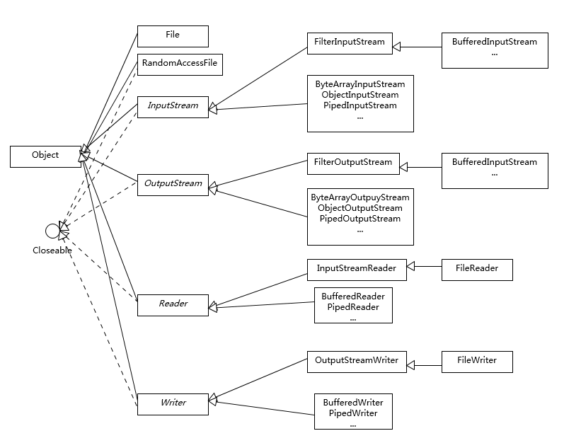
1.Java NIO 概览
首先，熟悉一下 NIO 的主要组成部分：
-
Buffer，高效的数据容器，除了布尔类型，所有原始数据类型都有相应的 Buffer 实现。
-
Channel，类似在 Linux 之类操作系统上看到的文件描述符，是 NIO 中被用来支持批量式 IO 操作的一种抽象。
File 或者 Socket，通常被认为是比较高层次的抽象，而 Channel 则是更加操作系统底层的一种抽象，这也使得 NIO 得以充分利用现代操作系统底层机制，获得特定场景的性能优化，例如，DMA（Direct Memory Access）等。不同层次的抽象是相互关联的，我们可以通过 Socket 获取 Channel，反之亦然。
-
Selector，是 NIO 实现多路复用的基础，它提供了一种高效的机制，可以检测到注册在 Selector 上的多个 Channel 中，是否有 Channel 处于就绪状态，进而实现了单线程对多 Channel 的高效管理。
Selector 同样是基于底层操作系统机制，不同模式、不同版本都存在区别，例如，在最新的代码库里，相关实现如下：
Linux 上依赖于 epoll（http://hg.openjdk.java.net/jdk/jdk/file/d8327f838b88/src/java.base/linux/classes/sun/nio/ch/EPollSelectorImpl.java）。
Windows 上 NIO2（AIO）模式则是依赖于 iocp（http://hg.openjdk.java.net/jdk/jdk/file/d8327f838b88/src/java.base/windows/classes/sun/nio/ch/Iocp.java）。
- Chartset，提供 Unicode 字符串定义，NIO 也提供了相应的编解码器等，例如，通过下面的方式进行字符串到 ByteBuffer 的转换：
Charset.defaultCharset().encode("Hello world!"));
2.NIO 能解决什么问题？
下面我通过一个典型场景，来分析为什么需要 NIO，为什么需要多路复用。设想，我们需要实现一个服务器应用，只简单要求能够同时服务多个客户端请求即可。
使用 java.io 和 java.net 中的同步、阻塞式 API，可以简单实现。
public class DemoServer extends Thread {
private ServerSocket serverSocket;
public int getPort() {
return serverSocket.getLocalPort();
}
public void run() {
try {
serverSocket = new ServerSocket(0);
while (true) {
Socket socket = serverSocket.accept();
RequestHandler requestHandler = new RequestHandler(socket);
requestHandler.start();
}
} catch (IOException e) {
e.printStackTrace();
} finally {
if (serverSocket != null) {
try {
serverSocket.close();
} catch (IOException e) {
e.printStackTrace();
}
;
}
}
}
public static void main(String[] args) throws IOException {
DemoServer server = new DemoServer();
server.start();
try (Socket client = new Socket(InetAddress.getLocalHost(), server.getPort())) {
BufferedReader bufferedReader = new BufferedReader(new InputStreamReader(client.getInputStream()));
bufferedReader.lines().forEach(s -> System.out.println(s));
}
}
}
// 简化实现，不做读取，直接发送字符串
class RequestHandler extends Thread {
private Socket socket;
RequestHandler(Socket socket) {
this.socket = socket;
}
@Override
public void run() {
try (PrintWriter out = new PrintWriter(socket.getOutputStream());) {
out.println("Hello world!");
out.flush();
} catch (Exception e) {
e.printStackTrace();
}
}
}
其实现要点是：
- 服务器端启动 ServerSocket，端口 0 表示自动绑定一个空闲端口。
- 调用 accept 方法，阻塞等待客户端连接。
- 利用 Socket 模拟了一个简单的客户端，只进行连接、读取、打印。
- 当连接建立后，启动一个单独线程负责回复客户端请求。
这样，一个简单的 Socket 服务器就被实现出来了。
思考一下，这个解决方案在扩展性方面，可能存在什么潜在问题呢？
大家知道 Java 语言目前的线程实现是比较重量级的，启动或者销毁一个线程是有明显开销的，每个线程都有单独的线程栈等结构，需要占用非常明显的内存，所以，每一个 Client 启动一个线程似乎都有些浪费。
那么，稍微修正一下这个问题，我们引入线程池机制来避免浪费。
serverSocket = new ServerSocket(0);
executor = Executors.newFixedThreadPool(8);
while (true) {
Socket socket = serverSocket.accept();
RequestHandler requestHandler = new RequestHandler(socket);
executor.execute(requestHandler);
}
这样做似乎好了很多，通过一个固定大小的线程池，来负责管理工作线程，避免频繁创建、销毁线程的开销，这是我们构建并发服务的典型方式。这种工作方式，可以参考下图来理解。
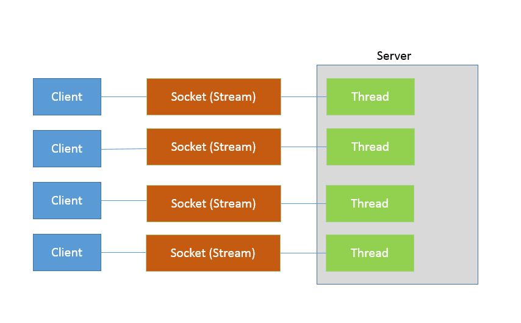
如果连接数并不是非常多，只有最多几百个连接的普通应用，这种模式往往可以工作的很好。但是，如果连接数量急剧上升，这种实现方式就无法很好地工作了，因为线程上下文切换开销会在高并发时变得很明显，这是同步阻塞方式的低扩展性劣势。
NIO 引入的多路复用机制，提供了另外一种思路，请参考我下面提供的新的版本。
public class NIOServer extends Thread {
public void run() {
try (Selector selector = Selector.open();
ServerSocketChannel serverSocket = ServerSocketChannel.open();) {// 创建 Selector 和 Channel
serverSocket.bind(new InetSocketAddress(InetAddress.getLocalHost(), 8888));
serverSocket.configureBlocking(false);
// 注册到 Selector，并说明关注点
serverSocket.register(selector, SelectionKey.OP_ACCEPT);
while (true) {
selector.select();// 阻塞等待就绪的 Channel，这是关键点之一
Set<SelectionKey> selectedKeys = selector.selectedKeys();
Iterator<SelectionKey> iter = selectedKeys.iterator();
while (iter.hasNext()) {
SelectionKey key = iter.next();
// 生产系统中一般会额外进行就绪状态检查
sayHelloWorld((ServerSocketChannel) key.channel());
iter.remove();
}
}
} catch (IOException e) {
e.printStackTrace();
}
}
private void sayHelloWorld(ServerSocketChannel server) throws IOException {
try (SocketChannel client = server.accept();) { client.write(Charset.defaultCharset().encode("Hello world!"));
}
}
// 省略了与前面类似的 main
}
这个非常精简的样例掀开了 NIO 多路复用的面纱，我们可以分析下主要步骤和元素：
-
首先，通过 Selector.open() 创建一个 Selector，作为类似调度员的角色。
-
然后，创建一个 ServerSocketChannel，并且向 Selector 注册，通过指定 SelectionKey.OP_ACCEPT，告诉调度员，它关注的是新的连接请求。
注意，为什么我们要明确配置非阻塞模式呢？这是因为阻塞模式下，注册操作是不允许的，会抛出 IllegalBlockingModeException 异常。
-
Selector 阻塞在 select 操作，当有 Channel 发生接入请求，就会被唤醒。
-
在 sayHelloWorld 方法中，通过 SocketChannel 和 Buffer 进行数据操作，在本例中是发送了一段字符串。
可以看到，在前面两个样例中，IO 都是同步阻塞模式，所以需要多线程以实现多任务处理。而 NIO 则是利用了单线程轮询事件的机制，通过高效地定位就绪的 Channel，来决定做什么，仅仅 select 阶段是阻塞的，可以有效避免大量客户端连接时，频繁线程切换带来的问题，应用的扩展能力有了非常大的提高。下面这张图对这种实现思路进行了形象地说明。
在 Java 7 引入的 NIO 2 中，又增添了一种额外的异步 IO 模式，利用事件和回调，处理 Accept、Read 等操作。 AIO 实现看起来是类似这样子：
AsynchronousServerSocketChannel serverSock = AsynchronousServerSocketChannel.open().bind(sockAddr);
serverSock.accept(serverSock, new CompletionHandler<>() { // 为异步操作指定 CompletionHandler 回调函数
@Override
public void completed(AsynchronousSocketChannel sockChannel, AsynchronousServerSocketChannel serverSock) {
serverSock.accept(serverSock, this);
// 另外一个 write（sock，CompletionHandler{}）
sayHelloWorld(sockChannel, Charset.defaultCharset().encode
("Hello World!"));
}
// 省略其他路径处理方法...
});
鉴于其编程要素（如 Future、CompletionHandler 等），我们还没有进行准备工作，为避免理解困难，我会在专栏后面相关概念补充后的再进行介绍，尤其是 Reactor、Proactor 模式等方面将在 Netty 主题一起分析，这里我先进行概念性的对比：
- 基本抽象很相似，AsynchronousServerSocketChannel 对应于上面例子中的 ServerSocketChannel；AsynchronousSocketChannel 则对应 SocketChannel。
- 业务逻辑的关键在于，通过指定 CompletionHandler 回调接口，在 accept/read/write 等关键节点，通过事件机制调用，这是非常不同的一种编程思路。
今天我初步对 Java 提供的 IO 机制进行了介绍，概要地分析了传统同步 IO 和 NIO 的主要组成，并根据典型场景，通过不同的 IO 模式进行了实现与拆解。专栏下一讲，我还将继续分析 Java IO 的主题。
一课一练
关于今天我们讨论的题目你做到心中有数了吗？留一道思考题给你，NIO 多路复用的局限性是什么呢？你遇到过相关的问题吗？
第12讲 Java有几种文件拷贝方式？哪一种最高效？
我在专栏上一讲提到，NIO 不止是多路复用，NIO 2 也不只是异步 IO，今天我们来看看 Java IO 体系中，其他不可忽略的部分。
今天我要问你的问题是，Java 有几种文件拷贝方式？哪一种最高效？
典型回答
Java 有多种比较典型的文件拷贝实现方式，比如：
利用 java.io 类库，直接为源文件构建一个 FileInputStream 读取，然后再为目标文件构建一个 FileOutputStream，完成写入工作。
public static void copyFileByStream(File source, File dest) throws
IOException {
try (InputStream is = new FileInputStream(source);
OutputStream os = new FileOutputStream(dest);){
byte[] buffer = new byte[1024];
int length;
while ((length = is.read(buffer)) > 0) {
os.write(buffer, 0, length);
}
}
}
或者，利用 java.nio 类库提供的 transferTo 或 transferFrom 方法实现。
public static void copyFileByChannel(File source, File dest) throws
IOException {
try (FileChannel sourceChannel = new FileInputStream(source)
.getChannel();
FileChannel targetChannel = new FileOutputStream(dest).getChannel
();){
for (long count = sourceChannel.size() ;count>0 ;) {
long transferred = sourceChannel.transferTo(
sourceChannel.position(), count, targetChannel); sourceChannel.position(sourceChannel.position() + transferred);
count -= transferred;
}
}
}
当然，Java 标准类库本身已经提供了几种 Files.copy 的实现。
对于 Copy 的效率，这个其实与操作系统和配置等情况相关，总体上来说，NIO transferTo/From 的方式可能更快，因为它更能利用现代操作系统底层机制，避免不必要拷贝和上下文切换。
考点分析
今天这个问题，从面试的角度来看，确实是一个面试考察的点，针对我上面的典型回答，面试官还可能会从实践角度，或者 IO 底层实现机制等方面进一步提问。这一讲的内容从面试题出发，主要还是为了让你进一步加深对 Java IO 类库设计和实现的了解。
从实践角度，我前面并没有明确说 NIO transfer 的方案一定最快，真实情况也确实未必如此。我们可以根据理论分析给出可行的推断，保持合理的怀疑，给出验证结论的思路，有时候面试官考察的就是如何将猜测变成可验证的结论，思考方式远比记住结论重要。
从技术角度展开，下面这些方面值得注意：
- 不同的 copy 方式，底层机制有什么区别？
- 为什么零拷贝（zero-copy）可能有性能优势？
- Buffer 分类与使用。
- Direct Buffer 对垃圾收集等方面的影响与实践选择。
接下来，我们一起来分析一下吧。
知识扩展
\1. 拷贝实现机制分析
先来理解一下，前面实现的不同拷贝方法，本质上有什么明显的区别。
首先，你需要理解用户态空间（User Space）和内核态空间（Kernel Space），这是操作系统层面的基本概念，操作系统内核、硬件驱动等运行在内核态空间，具有相对高的特权；而用户态空间，则是给普通应用和服务使用。你可以参考：https://en.wikipedia.org/wiki/User_space。
当我们使用输入输出流进行读写时，实际上是进行了多次上下文切换，比如应用读取数据时，先在内核态将数据从磁盘读取到内核缓存，再切换到用户态将数据从内核缓存读取到用户缓存。
写入操作也是类似，仅仅是步骤相反，你可以参考下面这张图。
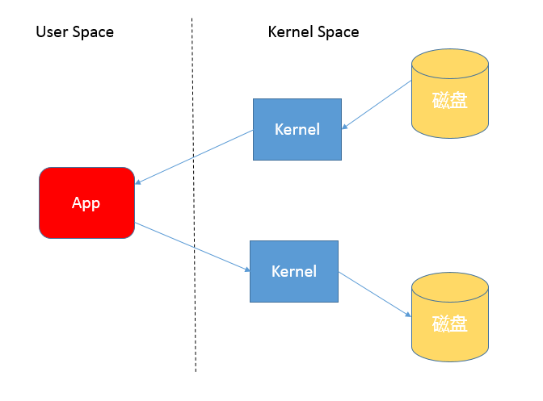
所以，这种方式会带来一定的额外开销，可能会降低 IO 效率。
而基于 NIO transferTo 的实现方式，在 Linux 和 Unix 上，则会使用到零拷贝技术，数据传输并不需要用户态参与，省去了上下文切换的开销和不必要的内存拷贝，进而可能提高应用拷贝性能。注意，transferTo 不仅仅是可以用在文件拷贝中，与其类似的，例如读取磁盘文件，然后进行 Socket 发送，同样可以享受这种机制带来的性能和扩展性提高。
transferTo 的传输过程是：
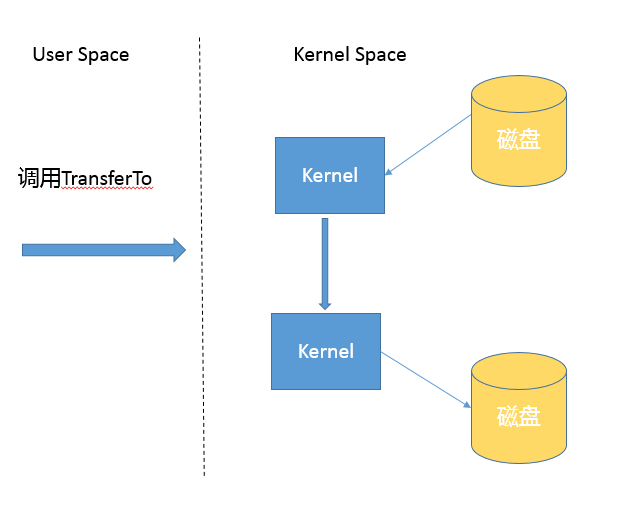
2.Java IO/NIO 源码结构
前面我在典型回答中提了第三种方式，即 Java 标准库也提供了文件拷贝方法（java.nio.file.Files.copy）。如果你这样回答，就一定要小心了，因为很少有问题的答案是仅仅调用某个方法。从面试的角度，面试官往往会追问：既然你提到了标准库，那么它是怎么实现的呢？有的公司面试官以喜欢追问而出名，直到追问到你说不知道。
其实，这个问题的答案还真不是那么直观，因为实际上有几个不同的 copy 方法。
public static Path copy(Path source, Path target, CopyOption... options)
throws IOException
public static long copy(InputStream in, Path target, CopyOption... options)
throws IOException
public static long copy(Path source, OutputStream out)
throws IOException
可以看到，copy 不仅仅是支持文件之间操作，没有人限定输入输出流一定是针对文件的，这是两个很实用的工具方法。
后面两种 copy 实现，能够在方法实现里直接看到使用的是 InputStream.transferTo()，你可以直接看源码，其内部实现其实是 stream 在用户态的读写；而对于第一种方法的分析过程要相对麻烦一些，可以参考下面片段。简单起见，我只分析同类型文件系统拷贝过程。
public static Path copy(Path source, Path target, CopyOption... options)
throws IOException
{
FileSystemProvider provider = provider(source);
if (provider(target) == provider) {
// same provider
provider.copy(source, target, options);// 这是本文分析的路径
} else {
// different providers
CopyMoveHelper.copyToForeignTarget(source, target, options);
}
return target;
}
我把源码分析过程简单记录如下，JDK 的源代码中，内部实现和公共 API 定义也不是可以能够简单关联上的，NIO 部分代码甚至是定义为模板而不是 Java 源文件，在 build 过程自动生成源码，下面顺便介绍一下部分 JDK 代码机制和如何绕过隐藏障碍。
- 首先，直接跟踪，发现 FileSystemProvider 只是个抽象类，阅读它的源码能够理解到，原来文件系统实际逻辑存在于 JDK 内部实现里，公共 API 其实是通过 ServiceLoader 机制加载一系列文件系统实现，然后提供服务。
- 我们可以在 JDK 源码里搜索 FileSystemProvider 和 nio，可以定位到sun/nio/fs，我们知道 NIO 底层是和操作系统紧密相关的，所以每个平台都有自己的部分特有文件系统逻辑。
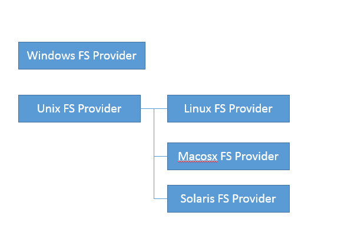
- 省略掉一些细节，最后我们一步步定位到 UnixFileSystemProvider → UnixCopyFile.Transfer，发现这是个本地方法。
- 最后，明确定位到UnixCopyFile.c，其内部实现清楚说明竟然只是简单的用户态空间拷贝！
所以，我们明确这个最常见的 copy 方法其实不是利用 transferTo，而是本地技术实现的用户态拷贝。
前面谈了不少机制和源码，我简单从实践角度总结一下，如何提高类似拷贝等 IO 操作的性能，有一些宽泛的原则：
- 在程序中，使用缓存等机制，合理减少 IO 次数（在网络通信中，如 TCP 传输，window 大小也可以看作是类似思路）。
- 使用 transferTo 等机制，减少上下文切换和额外 IO 操作。
- 尽量减少不必要的转换过程，比如编解码；对象序列化和反序列化，比如操作文本文件或者网络通信，如果不是过程中需要使用文本信息，可以考虑不要将二进制信息转换成字符串，直接传输二进制信息。
\3. 掌握 NIO Buffer
我在上一讲提到 Buffer 是 NIO 操作数据的基本工具，Java 为每种原始数据类型都提供了相应的 Buffer 实现（布尔除外），所以掌握和使用 Buffer 是十分必要的，尤其是涉及 Direct Buffer 等使用，因为其在垃圾收集等方面的特殊性，更要重点掌握。

Buffer 有几个基本属性：
- capcity，它反映这个 Buffer 到底有多大，也就是数组的长度。
- position，要操作的数据起始位置。
- limit，相当于操作的限额。在读取或者写入时，limit 的意义很明显是不一样的。比如，读取操作时，很可能将 limit 设置到所容纳数据的上限；而在写入时，则会设置容量或容量以下的可写限度。
- mark，记录上一次 postion 的位置，默认是 0，算是一个便利性的考虑，往往不是必须的。
前面三个是我们日常使用最频繁的，我简单梳理下 Buffer 的基本操作：
- 我们创建了一个 ByteBuffer，准备放入数据，capcity 当然就是缓冲区大小，而 position 就是 0，limit 默认就是 capcity 的大小。
- 当我们写入几个字节的数据时，position 就会跟着水涨船高，但是它不可能超过 limit 的大小。
- 如果我们想把前面写入的数据读出来，需要调用 flip 方法，将 position 设置为 0，limit 设置为以前的 position 那里。
- 如果还想从头再读一遍，可以调用 rewind，让 limit 不变，position 再次设置为 0。
更进一步的详细使用，我建议参考相关教程。
4.Direct Buffer 和垃圾收集
我这里重点介绍两种特别的 Buffer。
- Direct Buffer：如果我们看 Buffer 的方法定义，你会发现它定义了 isDirect() 方法，返回当前 Buffer 是否是 Direct 类型。这是因为 Java 提供了堆内和堆外（Direct）Buffer，我们可以以它的 allocate 或者 allocateDirect 方法直接创建。
- MappedByteBuffer：它将文件按照指定大小直接映射为内存区域，当程序访问这个内存区域时将直接操作这块儿文件数据，省去了将数据从内核空间向用户空间传输的损耗。我们可以使用FileChannel.map创建 MappedByteBuffer，它本质上也是种 Direct Buffer。
在实际使用中，Java 会尽量对 Direct Buffer 仅做本地 IO 操作，对于很多大数据量的 IO 密集操作，可能会带来非常大的性能优势，因为：
- Direct Buffer 生命周期内内存地址都不会再发生更改，进而内核可以安全地对其进行访问，很多 IO 操作会很高效。
- 减少了堆内对象存储的可能额外维护工作，所以访问效率可能有所提高。
但是请注意，Direct Buffer 创建和销毁过程中，都会比一般的堆内 Buffer 增加部分开销，所以通常都建议用于长期使用、数据较大的场景。
使用 Direct Buffer，我们需要清楚它对内存和 JVM 参数的影响。首先，因为它不在堆上，所以 Xmx 之类参数，其实并不能影响 Direct Buffer 等堆外成员所使用的内存额度，我们可以使用下面参数设置大小：
-XX:MaxDirectMemorySize=512M
从参数设置和内存问题排查角度来看，这意味着我们在计算 Java 可以使用的内存大小的时候，不能只考虑堆的需要，还有 Direct Buffer 等一系列堆外因素。如果出现内存不足，堆外内存占用也是一种可能性。
另外，大多数垃圾收集过程中，都不会主动收集 Direct Buffer，它的垃圾收集过程，就是基于我在专栏前面所介绍的 Cleaner（一个内部实现）和幻象引用（PhantomReference）机制，其本身不是 public 类型，内部实现了一个 Deallocator 负责销毁的逻辑。对它的销毁往往要拖到 full GC 的时候，所以使用不当很容易导致 OutOfMemoryError。
对于 Direct Buffer 的回收，我有几个建议：
- 在应用程序中，显式地调用 System.gc() 来强制触发。
- 另外一种思路是，在大量使用 Direct Buffer 的部分框架中，框架会自己在程序中调用释放方法，Netty 就是这么做的，有兴趣可以参考其实现（PlatformDependent0）。
- 重复使用 Direct Buffer。
\5. 跟踪和诊断 Direct Buffer 内存占用？
因为通常的垃圾收集日志等记录，并不包含 Direct Buffer 等信息，所以 Direct Buffer 内存诊断也是个比较头疼的事情。幸好，在 JDK 8 之后的版本，我们可以方便地使用 Native Memory Tracking（NMT）特性来进行诊断，你可以在程序启动时加上下面参数：
-XX:NativeMemoryTracking={summary|detail}
注意，激活 NMT 通常都会导致 JVM 出现 5%~10% 的性能下降，请谨慎考虑。
运行时，可以采用下面命令进行交互式对比：
// 打印 NMT 信息
jcmd <pid> VM.native_memory detail
// 进行 baseline，以对比分配内存变化
jcmd <pid> VM.native_memory baseline
// 进行 baseline，以对比分配内存变化
jcmd <pid> VM.native_memory detail.diff
我们可以在 Internal 部分发现 Direct Buffer 内存使用的信息，这是因为其底层实际是利用 unsafe_allocatememory。严格说，这不是 JVM 内部使用的内存，所以在 JDK 11 以后，其实它是归类在 other 部分里。
JDK 9 的输出片段如下，“+”表示的就是 diff 命令发现的分配变化：
-Internal (reserved=679KB +4KB, committed=679KB +4KB)
(malloc=615KB +4KB #1571 +4)
(mmap: reserved=64KB, committed=64KB)
注意：JVM 的堆外内存远不止 Direct Buffer，NMT 输出的信息当然也远不止这些，我在专栏后面有综合分析更加具体的内存结构的主题。
今天我分析了 Java IO/NIO 底层文件操作数据的机制，以及如何实现零拷贝的高性能操作，梳理了 Buffer 的使用和类型，并针对 Direct Buffer 的生命周期管理和诊断进行了较详细的分析。
一课一练
关于今天我们讨论的题目你做到心中有数了吗？你可以思考下，如果我们需要在 channel 读取的过程中，将不同片段写入到相应的 Buffer 里面（类似二进制消息分拆成消息头、消息体等），可以采用 NIO 的什么机制做到呢？
第13讲 谈谈接口和抽象类有什么区别？
ava 是非常典型的面向对象语言，曾经有一段时间，程序员整天把面向对象、设计模式挂在嘴边。虽然如今大家对这方面已经不再那么狂热，但是不可否认，掌握面向对象设计原则和技巧，是保证高质量代码的基础之一。
面向对象提供的基本机制，对于提高开发、沟通等各方面效率至关重要。考察面向对象也是面试中的常见一环，下面我来聊聊面向对象设计基础。
今天我要问你的问题是，谈谈接口和抽象类有什么区别？
典型回答
接口和抽象类是 Java 面向对象设计的两个基础机制。
接口是对行为的抽象，它是抽象方法的集合，利用接口可以达到 API 定义和实现分离的目的。接口，不能实例化；不能包含任何非常量成员，任何 field 都是隐含着 public static final 的意义；同时，没有非静态方法实现，也就是说要么是抽象方法，要么是静态方法。Java 标准类库中，定义了非常多的接口，比如 java.util.List。
抽象类是不能实例化的类，用 abstract 关键字修饰 class，其目的主要是代码重用。除了不能实例化，形式上和一般的 Java 类并没有太大区别，可以有一个或者多个抽象方法，也可以没有抽象方法。抽象类大多用于抽取相关 Java 类的共用方法实现或者是共同成员变量，然后通过继承的方式达到代码复用的目的。Java 标准库中，比如 collection 框架，很多通用部分就被抽取成为抽象类，例如 java.util.AbstractList。
Java 类实现 interface 使用 implements 关键词，继承 abstract class 则是使用 extends 关键词，我们可以参考 Java 标准库中的 ArrayList。
public class ArrayList<E> extends AbstractList<E>
implements List<E>, RandomAccess, Cloneable, java.io.Serializable
{
//...
}
考点分析
这是个非常高频的 Java 面向对象基础问题，看起来非常简单的问题，如果面试官稍微深入一些，你会发现很多有意思的地方，可以从不同角度全面地考察你对基本机制的理解和掌握。比如:
- 对于 Java 的基本元素的语法是否理解准确。能否定义出语法基本正确的接口、抽象类或者相关继承实现，涉及重载（Overload）、重写（Override）更是有各种不同的题目。
- 在软件设计开发中妥善地使用接口和抽象类。你至少知道典型应用场景，掌握基础类库重要接口的使用；掌握设计方法，能够在 review 代码的时候看出明显的不利于未来维护的设计。
- 掌握 Java 语言特性演进。现在非常多的框架已经是基于 Java 8，并逐渐支持更新版本，掌握相关语法，理解设计目的是很有必要的。
知识扩展
我会从接口、抽象类的一些实践，以及语言变化方面去阐述一些扩展知识点。
Java 相比于其他面向对象语言，如 C++，设计上有一些基本区别，比如Java 不支持多继承。这种限制，在规范了代码实现的同时，也产生了一些局限性，影响着程序设计结构。Java 类可以实现多个接口，因为接口是抽象方法的集合，所以这是声明性的，但不能通过扩展多个抽象类来重用逻辑。
在一些情况下存在特定场景，需要抽象出与具体实现、实例化无关的通用逻辑，或者纯调用关系的逻辑，但是使用传统的抽象类会陷入到单继承的窘境。以往常见的做法是，实现由静态方法组成的工具类（Utils），比如 java.util.Collections。
设想，为接口添加任何抽象方法，相应的所有实现了这个接口的类，也必须实现新增方法，否则会出现编译错误。对于抽象类，如果我们添加非抽象方法，其子类只会享受到能力扩展，而不用担心编译出问题。
接口的职责也不仅仅限于抽象方法的集合，其实有各种不同的实践。有一类没有任何方法的接口，通常叫作 Marker Interface，顾名思义，它的目的就是为了声明某些东西，比如我们熟知的 Cloneable、Serializable 等。这种用法，也存在于业界其他的 Java 产品代码中。
从表面看，这似乎和 Annotation 异曲同工，也确实如此，它的好处是简单直接。对于 Annotation，因为可以指定参数和值，在表达能力上要更强大一些，所以更多人选择使用 Annotation。
Java 8 增加了函数式编程的支持，所以又增加了一类定义，即所谓 functional interface，简单说就是只有一个抽象方法的接口，通常建议使用 @FunctionalInterface Annotation 来标记。Lambda 表达式本身可以看作是一类 functional interface，某种程度上这和面向对象可以算是两码事。我们熟知的 Runnable、Callable 之类，都是 functional interface，这里不再多介绍了，有兴趣你可以参考：https://www.oreilly.com/learning/java-8-functional-interfaces 。
还有一点可能让人感到意外，严格说，Java 8 以后，接口也是可以有方法实现的！
从 Java 8 开始，interface 增加了对 default method 的支持。Java 9 以后，甚至可以定义 private default method。Default method 提供了一种二进制兼容的扩展已有接口的办法。比如，我们熟知的 java.util.Collection，它是 collection 体系的 root interface，在 Java 8 中添加了一系列 default method，主要是增加 Lambda、Stream 相关的功能。我在专栏前面提到的类似 Collections 之类的工具类，很多方法都适合作为 default method 实现在基础接口里面。
你可以参考下面代码片段：
public interface Collection<E> extends Iterable<E> {
/**
* Returns a sequential Stream with this collection as its source
* ...
**/
default Stream<E> stream() {
return StreamSupport.stream(spliterator(), false);
}
}
面向对象设计
谈到面向对象，很多人就会想起设计模式，那些是非常经典的问题和设计方法的总结。我今天来夯实一下基础，先来聊聊面向对象设计的基本方面。
我们一定要清楚面向对象的基本要素：封装、继承、多态。
封装的目的是隐藏事务内部的实现细节，以便提高安全性和简化编程。封装提供了合理的边界，避免外部调用者接触到内部的细节。我们在日常开发中，因为无意间暴露了细节导致的难缠 bug 太多了，比如在多线程环境暴露内部状态，导致的并发修改问题。从另外一个角度看，封装这种隐藏，也提供了简化的界面，避免太多无意义的细节浪费调用者的精力。
继承是代码复用的基础机制，类似于我们对于马、白马、黑马的归纳总结。但要注意，继承可以看作是非常紧耦合的一种关系，父类代码修改，子类行为也会变动。在实践中，过度滥用继承，可能会起到反效果。
多态，你可能立即会想到重写（override）和重载（overload）、向上转型。简单说，重写是父子类中相同名字和参数的方法，不同的实现；重载则是相同名字的方法，但是不同的参数，本质上这些方法签名是不一样的，为了更好说明，请参考下面的样例代码：
public int doSomething() {
return 0;
}
// 输入参数不同，意味着方法签名不同，重载的体现
public int doSomething(List<String> strs) {
return 0;
}
// return 类型不一样，编译不能通过
public short doSomething() {
return 0;
}
这里你可以思考一个小问题，方法名称和参数一致，但是返回值不同，这种情况在 Java 代码中算是有效的重载吗？ 答案是不是的，编译都会出错的。
进行面向对象编程，掌握基本的设计原则是必须的，我今天介绍最通用的部分，也就是所谓的 S.O.L.I.D 原则。
- 单一职责（Single Responsibility），类或者对象最好是只有单一职责，在程序设计中如果发现某个类承担着多种义务，可以考虑进行拆分。
- 开关原则（Open-Close, Open for extension, close for modification），设计要对扩展开放，对修改关闭。换句话说，程序设计应保证平滑的扩展性，尽量避免因为新增同类功能而修改已有实现，这样可以少产出些回归（regression）问题。
- 里氏替换（Liskov Substitution），这是面向对象的基本要素之一，进行继承关系抽象时，凡是可以用父类或者基类的地方，都可以用子类替换。
- 接口分离（Interface Segregation），我们在进行类和接口设计时，如果在一个接口里定义了太多方法，其子类很可能面临两难，就是只有部分方法对它是有意义的，这就破坏了程序的内聚性。 对于这种情况，可以通过拆分成功能单一的多个接口，将行为进行解耦。在未来维护中，如果某个接口设计有变，不会对使用其他接口的子类构成影响。
- 依赖反转（Dependency Inversion），实体应该依赖于抽象而不是实现。也就是说高层次模块，不应该依赖于低层次模块，而是应该基于抽象。实践这一原则是保证产品代码之间适当耦合度的法宝。
OOP 原则实践中的取舍
值得注意的是，现代语言的发展，很多时候并不是完全遵守前面的原则的，比如，Java 10 中引入了本地方法类型推断和 var 类型。按照，里氏替换原则，我们通常这样定义变量：
List<String> list = new ArrayList<>();
如果使用 var 类型，可以简化为
var list = new ArrayList<String>();
但是，list 实际会被推断为“ArrayList < String >”
ArrayList<String> list = new ArrayList<String>();
理论上，这种语法上的便利，其实是增强了程序对实现的依赖，但是微小的类型泄漏却带来了书写的便利和代码可读性的提高，所以，实践中我们还是要按照得失利弊进行选择，而不是一味得遵循原则。
OOP 原则在面试题目中的分析
我在以往面试中发现，即使是有多年编程经验的工程师，也还没有真正掌握面向对象设计的基本的原则，如开关原则（Open-Close）。看看下面这段代码，改编自朋友圈盛传的某伟大公司产品代码，你觉得可以利用面向对象设计原则如何改进？
public class VIPCenter {
void serviceVIP(T extend User user>) {
if (user instanceof SlumDogVIP) {
// 穷 X VIP，活动抢的那种
// do somthing
} else if(user instanceof RealVIP) {
// do somthing
}
// ...
}
这段代码的一个问题是，业务逻辑集中在一起，当出现新的用户类型时，比如，大数据发现了我们是肥羊，需要去收获一下， 这就需要直接去修改服务方法代码实现，这可能会意外影响不相关的某个用户类型逻辑。
利用开关原则，我们可以尝试改造为下面的代码：
public class VIPCenter {
private Map<User.TYPE, ServiceProvider> providers;
void serviceVIP(T extend User user） {
providers.get(user.getType()).service(user);
}
}
interface ServiceProvider{
void service(T extend User user) ;
}
class SlumDogVIPServiceProvider implements ServiceProvider{
void service(T extend User user){
// do somthing
}
}
class RealVIPServiceProvider implements ServiceProvider{
void service(T extend User user) {
// do something
}
}
上面的示例，将不同对象分类的服务方法进行抽象，把业务逻辑的紧耦合关系拆开，实现代码的隔离保证了方便的扩展。
今天我对 Java 面向对象技术进行了梳理，对比了抽象类和接口，分析了 Java 语言在接口层面的演进和相应程序设计实现，最后回顾并实践了面向对象设计的基本原则，希望对你有所帮助。
一课一练
关于接口和抽象类的区别，你做到心中有数了吗？给你布置一个思考题，思考一下自己的产品代码，有没有什么地方违反了基本设计原则？那些一改就崩的代码，是否遵循了开关原则？
第14讲 谈谈你知道的设计模式？
设计模式是人们为软件开发中相同表征的问题，抽象出的可重复利用的解决方案。在某种程度上，设计模式已经代表了一些特定情况的最佳实践，同时也起到了软件工程师之间沟通的“行话”的作用。理解和掌握典型的设计模式，有利于我们提高沟通、设计的效率和质量。
今天我要问你的问题是，谈谈你知道的设计模式？请手动实现单例模式，Spring 等框架中使用了哪些模式？
典型回答
大致按照模式的应用目标分类，设计模式可以分为创建型模式、结构型模式和行为型模式。
- 创建型模式，是对对象创建过程的各种问题和解决方案的总结，包括各种工厂模式（Factory、Abstract Factory）、单例模式（Singleton）、构建器模式（Builder）、原型模式（ProtoType）。
- 结构型模式，是针对软件设计结构的总结，关注于类、对象继承、组合方式的实践经验。常见的结构型模式，包括桥接模式（Bridge）、适配器模式（Adapter）、装饰者模式（Decorator）、代理模式（Proxy）、组合模式（Composite）、外观模式（Facade）、享元模式（Flyweight）等。
- 行为型模式，是从类或对象之间交互、职责划分等角度总结的模式。比较常见的行为型模式有策略模式（Strategy）、解释器模式（Interpreter）、命令模式（Command）、观察者模式（Observer）、迭代器模式（Iterator）、模板方法模式（Template Method）、访问者模式（Visitor）。
考点分析
这个问题主要是考察你对设计模式的了解和掌握程度，更多相关内容你可以参考：https://en.wikipedia.org/wiki/Design_Patterns。
我建议可以在回答时适当地举些例子，更加清晰地说明典型模式到底是什么样子，典型使用场景是怎样的。这里举个 Java 基础类库中的例子供你参考。
首先，专栏第 11 讲刚介绍过 IO 框架，我们知道 InputStream 是一个抽象类，标准类库中提供了 FileInputStream、ByteArrayInputStream 等各种不同的子类，分别从不同角度对 InputStream 进行了功能扩展，这是典型的装饰器模式应用案例。
识别装饰器模式，可以通过识别类设计特征来进行判断，也就是其类构造函数以相同的抽象类或者接口为输入参数。
因为装饰器模式本质上是包装同类型实例，我们对目标对象的调用，往往会通过包装类覆盖过的方法，迂回调用被包装的实例，这就可以很自然地实现增加额外逻辑的目的，也就是所谓的“装饰”。
例如，BufferedInputStream 经过包装，为输入流过程增加缓存，类似这种装饰器还可以多次嵌套，不断地增加不同层次的功能。
public BufferedInputStream(InputStream in)
我在下面的类图里，简单总结了 InputStream 的装饰模式实践。
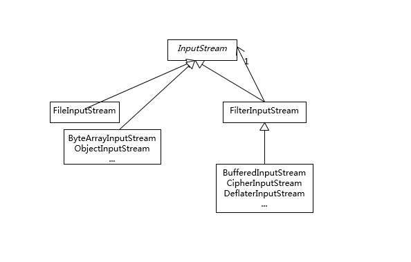
接下来再看第二个例子。创建型模式尤其是工厂模式，在我们的代码中随处可见，我举个相对不同的 API 设计实践。比如，JDK 最新版本中 HTTP/2 Client API，下面这个创建 HttpRequest 的过程，就是典型的构建器模式（Builder），通常会被实现成fluent 风格的 API，也有人叫它方法链。
HttpRequest request = HttpRequest.newBuilder(new URI(uri))
.header(headerAlice, valueAlice)
.headers(headerBob, value1Bob,
headerCarl, valueCarl,
headerBob, value2Bob)
.GET()
.build();
使用构建器模式，可以比较优雅地解决构建复杂对象的麻烦，这里的“复杂”是指类似需要输入的参数组合较多，如果用构造函数，我们往往需要为每一种可能的输入参数组合实现相应的构造函数，一系列复杂的构造函数会让代码阅读性和可维护性变得很差。
上面的分析也进一步反映了创建型模式的初衷，即，将对象创建过程单独抽象出来，从结构上把对象使用逻辑和创建逻辑相互独立，隐藏对象实例的细节，进而为使用者实现了更加规范、统一的逻辑。
更进一步进行设计模式考察，面试官可能会：
- 希望你写一个典型的设计模式实现。这虽然看似简单，但即使是最简单的单例，也能够综合考察代码基本功。
- 考察典型的设计模式使用，尤其是结合标准库或者主流开源框架，考察你对业界良好实践的掌握程度。
在面试时如果恰好问到你不熟悉的模式，你可以稍微引导一下，比如介绍你在产品中使用了什么自己相对熟悉的模式，试图解决什么问题，它们的优点和缺点等。
下面，我会针对前面两点，结合代码实例进行分析。
知识扩展
我们来实现一个日常非常熟悉的单例设计模式。看起来似乎很简单，那么下面这个样例符合基本需求吗？
public class Singleton {
private static Singleton instance = new Singleton();
public static Singleton getInstance() {
return instance;
}
}
是不是总感觉缺了点什么？原来，Java 会自动为没有明确声明构造函数的类，定义一个 public 的无参数的构造函数，所以上面的例子并不能保证额外的对象不被创建出来，别人完全可以直接“new Singleton()”，那我们应该怎么处理呢？
不错，可以为单例定义一个 private 的构造函数（也有建议声明为枚举，这是有争议的，我个人不建议选择相对复杂的枚举，毕竟日常开发不是学术研究）。这样还有什么改进的余地吗？
专栏第 10 讲介绍 ConcurrentHashMap 时，提到过标准类库中很多地方使用懒加载（lazy-load），改善初始内存开销，单例同样适用，下面是修正后的改进版本。
public class Singleton {
private static Singleton instance;
private Singleton() {
}
public static Singleton getInstance() {
if (instance == null) {
instance = new Singleton();
}
return instance;
}
}
这个实现在单线程环境不存在问题，但是如果处于并发场景，就需要考虑线程安全，最熟悉的就莫过于“双检锁”，其要点在于：
- 这里的 volatile 能够提供可见性，以及保证 getInstance 返回的是初始化完全的对象。
- 在同步之前进行 null 检查，以尽量避免进入相对昂贵的同步块。
- 直接在 class 级别进行同步，保证线程安全的类方法调用。
public class Singleton {
private static volatile Singleton singleton = null;
private Singleton() {
}
public static Singleton getSingleton() {
if (singleton == null) { // 尽量避免重复进入同步块
synchronized (Singleton.class) { // 同步.class，意味着对同步类方法调用
if (singleton == null) {
singleton = new Singleton();
}
}
}
return singleton;
}
}
在这段代码中，争论较多的是 volatile 修饰静态变量，当 Singleton 类本身有多个成员变量时，需要保证初始化过程完成后，才能被 get 到。
在现代 Java 中，内存排序模型（JMM）已经非常完善，通过 volatile 的 write 或者 read，能保证所谓的 happen-before，也就是避免常被提到的指令重排。换句话说，构造对象的 store 指令能够被保证一定在 volatile read 之前。
当然，也有一些人推荐利用内部类持有静态对象的方式实现，其理论依据是对象初始化过程中隐含的初始化锁（有兴趣的话你可以参考jls-12.4.2 中对 LC 的说明），这种和前面的双检锁实现都能保证线程安全，不过语法稍显晦涩，未必有特别的优势。
public class Singleton {
private Singleton(){}
public static Singleton getSingleton(){
return Holder.singleton;
}
private static class Holder {
private static Singleton singleton = new Singleton();
}
}
所以，可以看出，即使是看似最简单的单例模式，在增加各种高标准需求之后，同样需要非常多的实现考量。
上面是比较学究的考察，其实实践中未必需要如此复杂，如果我们看 Java 核心类库自己的单例实现，比如java.lang.Runtime，你会发现：
- 它并没使用复杂的双检锁之类。
- 静态实例被声明为 final，这是被通常实践忽略的，一定程度保证了实例不被篡改（专栏第 6 讲介绍过，反射之类可以绕过私有访问限制），也有有限的保证执行顺序的语义。
private static final Runtime currentRuntime = new Runtime();
private static Version version;
// …
public static Runtime getRuntime() {
return currentRuntime;
}
/** Don't let anyone else instantiate this class */
private Runtime() {}
前面说了不少代码实践，下面一起来简要看看主流开源框架，如 Spring 等如何在 API 设计中使用设计模式。你至少要有个大体的印象，如：
- BeanFactory和ApplicationContext应用了工厂模式。
- 在 Bean 的创建中，Spring 也为不同 scope 定义的对象，提供了单例和原型等模式实现。
- 我在专栏第 6 讲介绍的 AOP 领域则是使用了代理模式、装饰器模式、适配器模式等。
- 各种事件监听器，是观察者模式的典型应用。
- 类似 JdbcTemplate 等则是应用了模板模式。
今天，我与你回顾了设计模式的分类和主要类型，并从 Java 核心类库、开源框架等不同角度分析了其采用的模式，并结合单例的不同实现，分析了如何实现符合线程安全等需求的单例，希望可以对你的工程实践有所帮助。另外，我想最后补充的是，设计模式也不是银弹，要避免滥用或者过度设计。
一课一练
关于设计模式你做到心中有数了吗？你可以思考下，在业务代码中，经常发现大量 XXFacade，外观模式是解决什么问题？适用于什么场景？
第15讲 synchronized和ReentrantLock有什么区别呢？
从今天开始，我们将进入 Java 并发学习阶段。软件并发已经成为现代软件开发的基础能力，而 Java 精心设计的高效并发机制，正是构建大规模应用的基础之一，所以考察并发基本功也成为各个公司面试 Java 工程师的必选项。
今天我要问你的问题是， synchronized 和 ReentrantLock 有什么区别？有人说 synchronized 最慢，这话靠谱吗？
典型回答
synchronized 是 Java 内建的同步机制，所以也有人称其为 Intrinsic Locking，它提供了互斥的语义和可见性，当一个线程已经获取当前锁时，其他试图获取的线程只能等待或者阻塞在那里。
在 Java 5 以前，synchronized 是仅有的同步手段，在代码中， synchronized 可以用来修饰方法，也可以使用在特定的代码块儿上，本质上 synchronized 方法等同于把方法全部语句用 synchronized 块包起来。
ReentrantLock，通常翻译为再入锁，是 Java 5 提供的锁实现，它的语义和 synchronized 基本相同。再入锁通过代码直接调用 lock() 方法获取，代码书写也更加灵活。与此同时，ReentrantLock 提供了很多实用的方法，能够实现很多 synchronized 无法做到的细节控制，比如可以控制 fairness，也就是公平性，或者利用定义条件等。但是，编码中也需要注意，必须要明确调用 unlock() 方法释放，不然就会一直持有该锁。
synchronized 和 ReentrantLock 的性能不能一概而论，早期版本 synchronized 在很多场景下性能相差较大，在后续版本进行了较多改进，在低竞争场景中表现可能优于 ReentrantLock。
考点分析
今天的题目是考察并发编程的常见基础题，我给出的典型回答算是一个相对全面的总结。
对于并发编程，不同公司或者面试官面试风格也不一样，有个别大厂喜欢一直追问你相关机制的扩展或者底层，有的喜欢从实用角度出发，所以你在准备并发编程方面需要一定的耐心。
我认为，锁作为并发的基础工具之一，你至少需要掌握：
- 理解什么是线程安全。
- synchronized、ReentrantLock 等机制的基本使用与案例。
更近一步，你还需要：
- 掌握 synchronized、ReentrantLock 底层实现；理解锁膨胀、降级；理解偏斜锁、自旋锁、轻量级锁、重量级锁等概念。
- 掌握并发包中 java.util.concurrent.lock 各种不同实现和案例分析。
知识扩展
专栏前面几期穿插了一些并发的概念，有同学反馈理解起来有点困难，尤其对一些并发相关概念比较陌生，所以在这一讲，我也对会一些基础的概念进行补充。
首先，我们需要理解什么是线程安全。
我建议阅读 Brain Goetz 等专家撰写的《Java 并发编程实战》（Java Concurrency in Practice），虽然可能稍显学究，但不可否认这是一本非常系统和全面的 Java 并发编程书籍。按照其中的定义，线程安全是一个多线程环境下正确性的概念，也就是保证多线程环境下共享的、可修改的状态的正确性，这里的状态反映在程序中其实可以看作是数据。
换个角度来看，如果状态不是共享的，或者不是可修改的，也就不存在线程安全问题，进而可以推理出保证线程安全的两个办法：
- 封装：通过封装，我们可以将对象内部状态隐藏、保护起来。
- 不可变：还记得我们在专栏第 3 讲强调的 final 和 immutable 吗，就是这个道理，Java 语言目前还没有真正意义上的原生不可变，但是未来也许会引入。
线程安全需要保证几个基本特性：
- 原子性，简单说就是相关操作不会中途被其他线程干扰，一般通过同步机制实现。
- 可见性，是一个线程修改了某个共享变量，其状态能够立即被其他线程知晓，通常被解释为将线程本地状态反映到主内存上，volatile 就是负责保证可见性的。
- 有序性，是保证线程内串行语义，避免指令重排等。
可能有点晦涩，那么我们看看下面的代码段，分析一下原子性需求体现在哪里。这个例子通过取两次数值然后进行对比，来模拟两次对共享状态的操作。
你可以编译并执行，可以看到，仅仅是两个线程的低度并发，就非常容易碰到 former 和 latter 不相等的情况。这是因为，在两次取值的过程中，其他线程可能已经修改了 sharedState。
public class ThreadSafeSample {
public int sharedState;
public void nonSafeAction() {
while (sharedState < 100000) {
int former = sharedState++;
int latter = sharedState;
if (former != latter - 1) {
System.out.printf("Observed data race, former is " +
former + ", " + "latter is " + latter);
}
}
}
public static void main(String[] args) throws InterruptedException {
ThreadSafeSample sample = new ThreadSafeSample();
Thread threadA = new Thread(){
public void run(){
sample.nonSafeAction();
}
};
Thread threadB = new Thread(){
public void run(){
sample.nonSafeAction();
}
};
threadA.start();
threadB.start();
threadA.join();
threadB.join();
}
}
下面是在我的电脑上的运行结果：
C:\>c:\jdk-9\bin\java ThreadSafeSample
Observed data race, former is 13097, latter is 13099
将两次赋值过程用 synchronized 保护起来，使用 this 作为互斥单元，就可以避免别的线程并发的去修改 sharedState。
synchronized (this) {
int former = sharedState ++;
int latter = sharedState;
// …
}
如果用 javap 反编译，可以看到类似片段，利用 monitorenter/monitorexit 对实现了同步的语义：
11: astore_1
12: monitorenter
13: aload_0
14: dup
15: getfield #2 // Field sharedState:I
18: dup_x1
…
56: monitorexit
我会在下一讲，对 synchronized 和其他锁实现的更多底层细节进行深入分析。
代码中使用 synchronized 非常便利，如果用来修饰静态方法，其等同于利用下面代码将方法体囊括进来：
synchronized (ClassName.class) {}
再来看看 ReentrantLock。你可能好奇什么是再入？它是表示当一个线程试图获取一个它已经获取的锁时，这个获取动作就自动成功，这是对锁获取粒度的一个概念，也就是锁的持有是以线程为单位而不是基于调用次数。Java 锁实现强调再入性是为了和 pthread 的行为进行区分。
再入锁可以设置公平性（fairness），我们可在创建再入锁时选择是否是公平的。
ReentrantLock fairLock = new ReentrantLock(true);
这里所谓的公平性是指在竞争场景中，当公平性为真时，会倾向于将锁赋予等待时间最久的线程。公平性是减少线程“饥饿”（个别线程长期等待锁，但始终无法获取）情况发生的一个办法。
如果使用 synchronized，我们根本无法进行公平性的选择，其永远是不公平的，这也是主流操作系统线程调度的选择。通用场景中，公平性未必有想象中的那么重要，Java 默认的调度策略很少会导致 “饥饿”发生。与此同时，若要保证公平性则会引入额外开销，自然会导致一定的吞吐量下降。所以，我建议只有当你的程序确实有公平性需要的时候，才有必要指定它。
我们再从日常编码的角度学习下再入锁。为保证锁释放，每一个 lock() 动作，我建议都立即对应一个 try-catch-finally，典型的代码结构如下，这是个良好的习惯。
ReentrantLock fairLock = new ReentrantLock(true);// 这里是演示创建公平锁，一般情况不需要。
fairLock.lock();
try {
// do something
} finally {
fairLock.unlock();
}
ReentrantLock 相比 synchronized，因为可以像普通对象一样使用，所以可以利用其提供的各种便利方法，进行精细的同步操作，甚至是实现 synchronized 难以表达的用例，如：
- 带超时的获取锁尝试。
- 可以判断是否有线程，或者某个特定线程，在排队等待获取锁。
- 可以响应中断请求。
- …
这里我特别想强调条件变量（java.util.concurrent.Condition），如果说 ReentrantLock 是 synchronized 的替代选择，Condition 则是将 wait、notify、notifyAll 等操作转化为相应的对象，将复杂而晦涩的同步操作转变为直观可控的对象行为。
条件变量最为典型的应用场景就是标准类库中的 ArrayBlockingQueue 等。
我们参考下面的源码，首先，通过再入锁获取条件变量：
/** Condition for waiting takes */
private final Condition notEmpty;
/** Condition for waiting puts */
private final Condition notFull;
public ArrayBlockingQueue(int capacity, boolean fair) {
if (capacity <= 0)
throw new IllegalArgumentException();
this.items = new Object[capacity];
lock = new ReentrantLock(fair);
notEmpty = lock.newCondition();
notFull = lock.newCondition();
}
两个条件变量是从同一再入锁创建出来，然后使用在特定操作中，如下面的 take 方法，判断和等待条件满足：
public E take() throws InterruptedException {
final ReentrantLock lock = this.lock;
lock.lockInterruptibly();
try {
while (count == 0)
notEmpty.await();
return dequeue();
} finally {
lock.unlock();
}
}
当队列为空时，试图 take 的线程的正确行为应该是等待入队发生，而不是直接返回，这是 BlockingQueue 的语义，使用条件 notEmpty 就可以优雅地实现这一逻辑。
那么，怎么保证入队触发后续 take 操作呢？请看 enqueue 实现：
private void enqueue(E e) {
// assert lock.isHeldByCurrentThread();
// assert lock.getHoldCount() == 1;
// assert items[putIndex] == null;
final Object[] items = this.items;
items[putIndex] = e;
if (++putIndex == items.length) putIndex = 0;
count++;
notEmpty.signal(); // 通知等待的线程，非空条件已经满足
}
通过 signal/await 的组合，完成了条件判断和通知等待线程，非常顺畅就完成了状态流转。注意，signal 和 await 成对调用非常重要，不然假设只有 await 动作，线程会一直等待直到被打断（interrupt）。
从性能角度，synchronized 早期的实现比较低效，对比 ReentrantLock，大多数场景性能都相差较大。但是在 Java 6 中对其进行了非常多的改进，可以参考性能对比，在高竞争情况下，ReentrantLock 仍然有一定优势。我在下一讲进行详细分析，会更有助于理解性能差异产生的内在原因。在大多数情况下，无需纠结于性能，还是考虑代码书写结构的便利性、可维护性等。
今天，作为专栏进入并发阶段的第一讲，我介绍了什么是线程安全，对比和分析了 synchronized 和 ReentrantLock，并针对条件变量等方面结合案例代码进行了介绍。下一讲，我将对锁的进阶内容进行源码和案例分析。
一课一练
关于今天我们讨论的 synchronized 和 ReentrantLock 你做到心中有数了吗？思考一下，你使用过 ReentrantLock 中的哪些方法呢？分别解决什么问题？
第16讲 synchronized底层如何实现？什么是锁的升级、降级？
我在上一讲对比和分析了 synchronized 和 ReentrantLock，算是专栏进入并发编程阶段的热身，相信你已经对线程安全，以及如何使用基本的同步机制有了基础，今天我们将深入了解 synchronize 底层机制，分析其他锁实现和应用场景。
今天我要问你的问题是 ，synchronized 底层如何实现？什么是锁的升级、降级？
典型回答
在回答这个问题前，先简单复习一下上一讲的知识点。synchronized 代码块是由一对儿 monitorenter/monitorexit 指令实现的，Monitor 对象是同步的基本实现单元。
在 Java 6 之前，Monitor 的实现完全是依靠操作系统内部的互斥锁，因为需要进行用户态到内核态的切换，所以同步操作是一个无差别的重量级操作。
现代的（Oracle）JDK 中，JVM 对此进行了大刀阔斧地改进，提供了三种不同的 Monitor 实现，也就是常说的三种不同的锁：偏斜锁（Biased Locking）、轻量级锁和重量级锁，大大改进了其性能。
所谓锁的升级、降级，就是 JVM 优化 synchronized 运行的机制，当 JVM 检测到不同的竞争状况时，会自动切换到适合的锁实现，这种切换就是锁的升级、降级。
当没有竞争出现时，默认会使用偏斜锁。JVM 会利用 CAS 操作（compare and swap），在对象头上的 Mark Word 部分设置线程 ID，以表示这个对象偏向于当前线程，所以并不涉及真正的互斥锁。这样做的假设是基于在很多应用场景中，大部分对象生命周期中最多会被一个线程锁定，使用偏斜锁可以降低无竞争开销。
如果有另外的线程试图锁定某个已经被偏斜过的对象，JVM 就需要撤销（revoke）偏斜锁，并切换到轻量级锁实现。轻量级锁依赖 CAS 操作 Mark Word 来试图获取锁，如果重试成功，就使用普通的轻量级锁；否则，进一步升级为重量级锁。
我注意到有的观点认为 Java 不会进行锁降级。实际上据我所知，锁降级确实是会发生的，当 JVM 进入安全点（SafePoint）的时候，会检查是否有闲置的 Monitor，然后试图进行降级。
考点分析
今天的问题主要是考察你对 Java 内置锁实现的掌握，也是并发的经典题目。我在前面给出的典型回答，涵盖了一些基本概念。如果基础不牢，有些概念理解起来就比较晦涩，我建议还是尽量理解和掌握，即使有不懂的也不用担心，在后续学习中还会逐步加深认识。
我个人认为，能够基础性地理解这些概念和机制，其实对于大多数并发编程已经足够了，毕竟大部分工程师未必会进行更底层、更基础的研发，很多时候解决的是知道与否，真正的提高还要靠实践踩坑。
后面我会进一步分析：
- 从源码层面，稍微展开一些 synchronized 的底层实现，并补充一些上面答案中欠缺的细节，有同学反馈这部分容易被问到。如果你对 Java 底层源码有兴趣，但还没有找到入手点，这里可以成为一个切入点。
- 理解并发包中 java.util.concurrent.lock 提供的其他锁实现，毕竟 Java 可不是只有 ReentrantLock 一种显式的锁类型，我会结合代码分析其使用。
知识扩展
我在上一讲提到过 synchronized 是 JVM 内部的 Intrinsic Lock，所以偏斜锁、轻量级锁、重量级锁的代码实现，并不在核心类库部分，而是在 JVM 的代码中。
Java 代码运行可能是解释模式也可能是编译模式（如果不记得，请复习专栏第 1 讲），所以对应的同步逻辑实现，也会分散在不同模块下，比如，解释器版本就是：
src/hotspot/share/interpreter/interpreterRuntime.cpp
为了简化便于理解，我这里会专注于通用的基类实现：
另外请注意，链接指向的是最新 JDK 代码库，所以可能某些实现与历史版本有所不同。
首先，synchronized 的行为是 JVM runtime 的一部分，所以我们需要先找到 Runtime 相关的功能实现。通过在代码中查询类似“monitor_enter”或“Monitor Enter”，很直观的就可以定位到：
- sharedRuntime.cpp/hpp，它是解释器和编译器运行时的基类。
- synchronizer.cpp/hpp，JVM 同步相关的各种基础逻辑。
在 sharedRuntime.cpp 中，下面代码体现了 synchronized 的主要逻辑。
Handle h_obj(THREAD, obj);
if (UseBiasedLocking) {
// Retry fast entry if bias is revoked to avoid unnecessary inflation
ObjectSynchronizer::fast_enter(h_obj, lock, true, CHECK);
} else {
ObjectSynchronizer::slow_enter(h_obj, lock, CHECK);
}
其实现可以简单进行分解：
- UseBiasedLocking 是一个检查，因为，在 JVM 启动时，我们可以指定是否开启偏斜锁。
偏斜锁并不适合所有应用场景，撤销操作（revoke）是比较重的行为，只有当存在较多不会真正竞争的 synchronized 块儿时，才能体现出明显改善。实践中对于偏斜锁的一直是有争议的，有人甚至认为，当你需要大量使用并发类库时，往往意味着你不需要偏斜锁。从具体选择来看，我还是建议需要在实践中进行测试，根据结果再决定是否使用。
还有一方面是，偏斜锁会延缓 JIT 预热的进程，所以很多性能测试中会显式地关闭偏斜锁，命令如下：
-XX:-UseBiasedLocking
- fast_enter 是我们熟悉的完整锁获取路径，slow_enter 则是绕过偏斜锁，直接进入轻量级锁获取逻辑。
那么 fast_enter 是如何实现的呢？同样是通过在代码库搜索，我们可以定位到 synchronizer.cpp。 类似 fast_enter 这种实现，解释器或者动态编译器，都是拷贝这段基础逻辑，所以如果我们修改这部分逻辑，要保证一致性。这部分代码是非常敏感的，微小的问题都可能导致死锁或者正确性问题。
void ObjectSynchronizer::fast_enter(Handle obj, BasicLock* lock,
bool attempt_rebias, TRAPS) {
if (UseBiasedLocking) {
if (!SafepointSynchronize::is_at_safepoint()) {
BiasedLocking::Condition cond = BiasedLocking::revoke_and_rebias(obj, attempt_rebias, THREAD);
if (cond == BiasedLocking::BIAS_REVOKED_AND_REBIASED) {
return;
}
} else {
assert(!attempt_rebias, "can not rebias toward VM thread");
BiasedLocking::revoke_at_safepoint(obj);
}
assert(!obj->mark()->has_bias_pattern(), "biases should be revoked by now");
}
slow_enter(obj, lock, THREAD);
}
我来分析下这段逻辑实现：
- biasedLocking定义了偏斜锁相关操作，revoke_and_rebias 是获取偏斜锁的入口方法，revoke_at_safepoint 则定义了当检测到安全点时的处理逻辑。
- 如果获取偏斜锁失败，则进入 slow_enter。
- 这个方法里面同样检查是否开启了偏斜锁，但是从代码路径来看，其实如果关闭了偏斜锁，是不会进入这个方法的，所以算是个额外的保障性检查吧。
另外，如果你仔细查看synchronizer.cpp里，会发现不仅仅是 synchronized 的逻辑，包括从本地代码，也就是 JNI，触发的 Monitor 动作，全都可以在里面找到（jni_enter/jni_exit）。
关于biasedLocking的更多细节我就不展开了，明白它是通过 CAS 设置 Mark Word 就完全够用了，对象头中 Mark Word 的结构，可以参考下图：
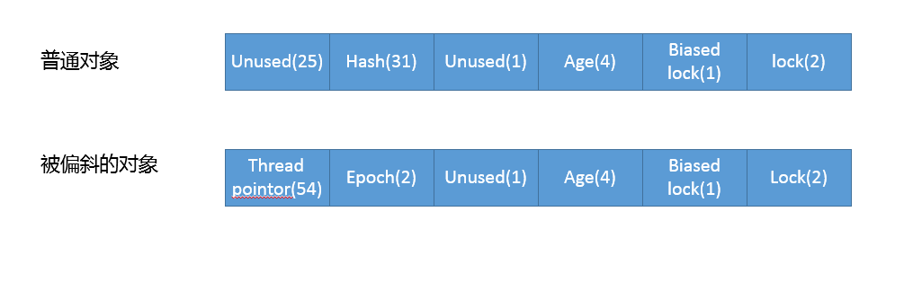
顺着锁升降级的过程分析下去，偏斜锁到轻量级锁的过程是如何实现的呢？
我们来看看 slow_enter 到底做了什么。
void ObjectSynchronizer::slow_enter(Handle obj, BasicLock* lock, TRAPS) {
markOop mark = obj->mark();
if (mark->is_neutral()) {
// 将目前的 Mark Word 复制到 Displaced Header 上
lock->set_displaced_header(mark);
// 利用 CAS 设置对象的 Mark Word
if (mark == obj()->cas_set_mark((markOop) lock, mark)) {
TEVENT(slow_enter: release stacklock);
return;
}
// 检查存在竞争
} else if (mark->has_locker() &&
THREAD->is_lock_owned((address)mark->locker())) {
// 清除
lock->set_displaced_header(NULL);
return;
}
// 重置 Displaced Header
lock->set_displaced_header(markOopDesc::unused_mark());
ObjectSynchronizer::inflate(THREAD,
obj(),
inflate_cause_monitor_enter)->enter(THREAD);
}
请结合我在代码中添加的注释，来理解如何从试图获取轻量级锁，逐步进入锁膨胀的过程。你可以发现这个处理逻辑，和我在这一讲最初介绍的过程是十分吻合的。
- 设置 Displaced Header，然后利用 cas_set_mark 设置对象 Mark Word，如果成功就成功获取轻量级锁。
- 否则 Displaced Header，然后进入锁膨胀阶段，具体实现在 inflate 方法中。
今天就不介绍膨胀的细节了，我这里提供了源代码分析的思路和样例，考虑到应用实践，再进一步增加源代码解读意义不大，有兴趣的同学可以参考我提供的[synchronizer.cpp]，例如：
- deflate_idle_monitors是分析锁降级逻辑的入口，这部分行为还在进行持续改进，因为其逻辑是在安全点内运行，处理不当可能拖长 JVM 停顿（STW，stop-the-world）的时间。
- fast_exit 或者 slow_exit 是对应的锁释放逻辑。
前面分析了 synchronized 的底层实现，理解起来有一定难度，下面我们来看一些相对轻松的内容。 我在上一讲对比了 synchronized 和 ReentrantLock，Java 核心类库中还有其他一些特别的锁类型，具体请参考下面的图。
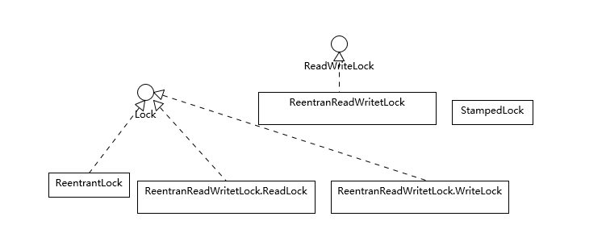
你可能注意到了，这些锁竟然不都是实现了 Lock 接口，ReadWriteLock 是一个单独的接口，它通常是代表了一对儿锁，分别对应只读和写操作，标准类库中提供了再入版本的读写锁实现（ReentrantReadWriteLock），对应的语义和 ReentrantLock 比较相似。
StampedLock 竟然也是个单独的类型，从类图结构可以看出它是不支持再入性的语义的，也就是它不是以持有锁的线程为单位。
为什么我们需要读写锁（ReadWriteLock）等其他锁呢？
这是因为，虽然 ReentrantLock 和 synchronized 简单实用，但是行为上有一定局限性，通俗点说就是“太霸道”，要么不占，要么独占。实际应用场景中，有的时候不需要大量竞争的写操作，而是以并发读取为主，如何进一步优化并发操作的粒度呢？
Java 并发包提供的读写锁等扩展了锁的能力，它所基于的原理是多个读操作是不需要互斥的，因为读操作并不会更改数据，所以不存在互相干扰。而写操作则会导致并发一致性的问题，所以写线程之间、读写线程之间，需要精心设计的互斥逻辑。
下面是一个基于读写锁实现的数据结构，当数据量较大，并发读多、并发写少的时候，能够比纯同步版本凸显出优势。
public class RWSample {
private final Map<String, String> m = new TreeMap<>();
private final ReentrantReadWriteLock rwl = new ReentrantReadWriteLock();
private final Lock r = rwl.readLock();
private final Lock w = rwl.writeLock();
public String get(String key) {
r.lock();
System.out.println(" 读锁锁定！");
try {
return m.get(key);
} finally {
r.unlock();
}
}
public String put(String key, String entry) {
w.lock();
System.out.println(" 写锁锁定！");
try {
return m.put(key, entry);
} finally {
w.unlock();
}
}
// …
}
在运行过程中，如果读锁试图锁定时，写锁是被某个线程持有，读锁将无法获得，而只好等待对方操作结束，这样就可以自动保证不会读取到有争议的数据。
读写锁看起来比 synchronized 的粒度似乎细一些，但在实际应用中，其表现也并不尽如人意，主要还是因为相对比较大的开销。
所以，JDK 在后期引入了 StampedLock，在提供类似读写锁的同时，还支持优化读模式。优化读基于假设，大多数情况下读操作并不会和写操作冲突，其逻辑是先试着读，然后通过 validate 方法确认是否进入了写模式，如果没有进入，就成功避免了开销；如果进入，则尝试获取读锁。请参考我下面的样例代码。
public class StampedSample {
private final StampedLock sl = new StampedLock();
void mutate() {
long stamp = sl.writeLock();
try {
write();
} finally {
sl.unlockWrite(stamp);
}
}
Data access() {
long stamp = sl.tryOptimisticRead();
Data data = read();
if (!sl.validate(stamp)) {
stamp = sl.readLock();
try {
data = read();
} finally {
sl.unlockRead(stamp);
}
}
return data;
}
// …
}
注意，这里的 writeLock 和 unLockWrite 一定要保证成对调用。
你可能很好奇这些显式锁的实现机制，Java 并发包内的各种同步工具，不仅仅是各种 Lock，其他的如Semaphore、CountDownLatch，甚至是早期的FutureTask等，都是基于一种AQS框架。
今天，我全面分析了 synchronized 相关实现和内部运行机制，简单介绍了并发包中提供的其他显式锁，并结合样例代码介绍了其使用方法，希望对你有所帮助。
一课一练
关于今天我们讨论的你做到心中有数了吗？思考一个问题，你知道“自旋锁”是做什么的吗？它的使用场景是什么？�K
第17讲 一个线程两次调用start()方法会出现什么情况？
今天我们来深入聊聊线程，相信大家对于线程这个概念都不陌生，它是 Java 并发的基础元素，理解、操纵、诊断线程是 Java 工程师的必修课，但是你真的掌握线程了吗？
今天我要问你的问题是，一个线程两次调用 start() 方法会出现什么情况？谈谈线程的生命周期和状态转移。
典型回答
Java 的线程是不允许启动两次的，第二次调用必然会抛出 IllegalThreadStateException，这是一种运行时异常，多次调用 start 被认为是编程错误。
关于线程生命周期的不同状态，在 Java 5 以后，线程状态被明确定义在其公共内部枚举类型 java.lang.Thread.State 中，分别是：
- 新建（NEW），表示线程被创建出来还没真正启动的状态，可以认为它是个 Java 内部状态。
- 就绪（RUNNABLE），表示该线程已经在 JVM 中执行，当然由于执行需要计算资源，它可能是正在运行，也可能还在等待系统分配给它 CPU 片段，在就绪队列里面排队。
- 在其他一些分析中，会额外区分一种状态 RUNNING，但是从 Java API 的角度，并不能表示出来。
- 阻塞（BLOCKED），这个状态和我们前面两讲介绍的同步非常相关，阻塞表示线程在等待 Monitor lock。比如，线程试图通过 synchronized 去获取某个锁，但是其他线程已经独占了，那么当前线程就会处于阻塞状态。
- 等待（WAITING），表示正在等待其他线程采取某些操作。一个常见的场景是类似生产者消费者模式，发现任务条件尚未满足，就让当前消费者线程等待（wait），另外的生产者线程去准备任务数据，然后通过类似 notify 等动作，通知消费线程可以继续工作了。Thread.join() 也会令线程进入等待状态。
- 计时等待（TIMED_WAIT），其进入条件和等待状态类似，但是调用的是存在超时条件的方法，比如 wait 或 join 等方法的指定超时版本，如下面示例：
public final native void wait(long timeout) throws InterruptedException;
- 终止（TERMINATED），不管是意外退出还是正常执行结束，线程已经完成使命，终止运行，也有人把这个状态叫作死亡。
在第二次调用 start() 方法的时候，线程可能处于终止或者其他（非 NEW）状态，但是不论如何，都是不可以再次启动的。
考点分析
今天的问题可以算是个常见的面试热身题目，前面的给出的典型回答，算是对基本状态和简单流转的一个介绍，如果觉得还不够直观，我在下面分析会对比一个状态图进行介绍。总的来说，理解线程对于我们日常开发或者诊断分析，都是不可或缺的基础。
面试官可能会以此为契机，从各种不同角度考察你对线程的掌握：
- 相对理论一些的面试官可以会问你线程到底是什么以及 Java 底层实现方式。
- 线程状态的切换，以及和锁等并发工具类的互动。
- 线程编程时容易踩的坑与建议等。
可以看出，仅仅是一个线程，就有非常多的内容需要掌握。我们选择重点内容，开始进入详细分析。
知识扩展
首先，我们来整体看一下线程是什么？
从操作系统的角度，可以简单认为，线程是系统调度的最小单元，一个进程可以包含多个线程，作为任务的真正运作者，有自己的栈（Stack）、寄存器（Register）、本地存储（Thread Local）等，但是会和进程内其他线程共享文件描述符、虚拟地址空间等。
在具体实现中，线程还分为内核线程、用户线程，Java 的线程实现其实是与虚拟机相关的。对于我们最熟悉的 Sun/Oracle JDK，其线程也经历了一个演进过程，基本上在 Java 1.2 之后，JDK 已经抛弃了所谓的Green Thread，也就是用户调度的线程，现在的模型是一对一映射到操作系统内核线程。
如果我们来看 Thread 的源码，你会发现其基本操作逻辑大都是以 JNI 形式调用的本地代码。
private native void start0();
private native void setPriority0(int newPriority);
private native void interrupt0();
这种实现有利有弊，总体上来说，Java 语言得益于精细粒度的线程和相关的并发操作，其构建高扩展性的大型应用的能力已经毋庸置疑。但是，其复杂性也提高了并发编程的门槛，近几年的 Go 语言等提供了协程（coroutine），大大提高了构建并发应用的效率。于此同时，Java 也在Loom项目中，孕育新的类似轻量级用户线程（Fiber）等机制，也许在不久的将来就可以在新版 JDK 中使用到它。
下面，我来分析下线程的基本操作。如何创建线程想必你已经非常熟悉了，请看下面的例子：
Runnable task = () -> {System.out.println("Hello World!");};
Thread myThread = new Thread(task);
myThread.start();
myThread.join();
我们可以直接扩展 Thread 类，然后实例化。但在本例中，我选取了另外一种方式，就是实现一个 Runnable，将代码逻放在 Runnable 中，然后构建 Thread 并启动（start），等待结束（join）。
Runnable 的好处是，不会受 Java 不支持类多继承的限制，重用代码实现，当我们需要重复执行相应逻辑时优点明显。而且，也能更好的与现代 Java 并发库中的 Executor 之类框架结合使用，比如将上面 start 和 join 的逻辑完全写成下面的结构：
Future future = Executors.newFixedThreadPool(1)
.submit(task)
.get();
这样我们就不用操心线程的创建和管理，也能利用 Future 等机制更好地处理执行结果。线程生命周期通常和业务之间没有本质联系，混淆实现需求和业务需求，就会降低开发的效率。
从线程生命周期的状态开始展开，那么在 Java 编程中，有哪些因素可能影响线程的状态呢？主要有：
- 线程自身的方法，除了 start，还有多个 join 方法，等待线程结束；yield 是告诉调度器，主动让出 CPU；另外，就是一些已经被标记为过时的 resume、stop、suspend 之类，据我所知，在 JDK 最新版本中，destory/stop 方法将被直接移除。
- 基类 Object 提供了一些基础的 wait/notify/notifyAll 方法。如果我们持有某个对象的 Monitor 锁，调用 wait 会让当前线程处于等待状态，直到其他线程 notify 或者 notifyAll。所以，本质上是提供了 Monitor 的获取和释放的能力，是基本的线程间通信方式。
- 并发类库中的工具，比如 CountDownLatch.await() 会让当前线程进入等待状态，直到 latch 被基数为 0，这可以看作是线程间通信的 Signal。
我这里画了一个状态和方法之间的对应图：
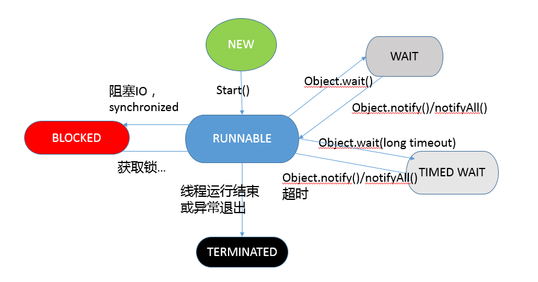
Thread 和 Object 的方法，听起来简单，但是实际应用中被证明非常晦涩、易错，这也是为什么 Java 后来又引入了并发包。总的来说，有了并发包，大多数情况下，我们已经不再需要去调用 wait/notify 之类的方法了。
前面谈了不少理论，下面谈谈线程 API 使用，我会侧重于平时工作学习中，容易被忽略的一些方面。
先来看看守护线程（Daemon Thread），有的时候应用中需要一个长期驻留的服务程序，但是不希望其影响应用退出，就可以将其设置为守护线程，如果 JVM 发现只有守护线程存在时，将结束进程，具体可以参考下面代码段。注意，必须在线程启动之前设置。
Thread daemonThread = new Thread();
daemonThread.setDaemon(true);
daemonThread.start();
再来看看Spurious wakeup。尤其是在多核 CPU 的系统中，线程等待存在一种可能，就是在没有任何线程广播或者发出信号的情况下，线程就被唤醒，如果处理不当就可能出现诡异的并发问题，所以我们在等待条件过程中，建议采用下面模式来书写。
// 推荐
while ( isCondition()) {
waitForAConfition(...);
}
// 不推荐，可能引入 bug
if ( isCondition()) {
waitForAConfition(...);
}
Thread.onSpinWait()，这是 Java 9 中引入的特性。我在专栏第 16 讲给你留的思考题中，提到“自旋锁”（spin-wait, busy-waiting），也可以认为其不算是一种锁，而是一种针对短期等待的性能优化技术。“onSpinWait()”没有任何行为上的保证，而是对 JVM 的一个暗示，JVM 可能会利用 CPU 的 pause 指令进一步提高性能，性能特别敏感的应用可以关注。
再有就是慎用ThreadLocal，这是 Java 提供的一种保存线程私有信息的机制，因为其在整个线程生命周期内有效，所以可以方便地在一个线程关联的不同业务模块之间传递信息，比如事务 ID、Cookie 等上下文相关信息。
它的实现结构，可以参考源码，数据存储于线程相关的 ThreadLocalMap，其内部条目是弱引用，如下面片段。
static class ThreadLocalMap {
static class Entry extends WeakReference<ThreadLocal<?>> {
/** The value associated with this ThreadLocal. */
Object value;
Entry(ThreadLocal<?> k, Object v) {
super(k);
value = v;
}
}
// …
}
当 Key 为 null 时，该条目就变成“废弃条目”，相关“value”的回收，往往依赖于几个关键点，即 set、remove、rehash。
下面是 set 的示例，我进行了精简和注释：
private void set(ThreadLocal<?> key, Object value) {
Entry[] tab = table;
int len = tab.length;
int i = key.threadLocalHashCode & (len-1);
for (Entry e = tab[i];; …) {
//…
if (k == null) {
// 替换废弃条目
replaceStaleEntry(key, value, i);
return;
}
}
tab[i] = new Entry(key, value);
int sz = ++size;
// 扫描并清理发现的废弃条目，并检查容量是否超限
if (!cleanSomeSlots(i, sz) && sz >= threshold)
rehash();// 清理废弃条目，如果仍然超限，则扩容（加倍）
}
具体的清理逻辑是实现在 cleanSomeSlots 和 expungeStaleEntry 之中，如果你有兴趣可以自行阅读。
结合专栏第 4 讲介绍的引用类型，我们会发现一个特别的地方，通常弱引用都会和引用队列配合清理机制使用，但是 ThreadLocal 是个例外，它并没有这么做。
这意味着，废弃项目的回收依赖于显式地触发，否则就要等待线程结束，进而回收相应 ThreadLocalMap！这就是很多 OOM 的来源，所以通常都会建议，应用一定要自己负责 remove，并且不要和线程池配合，因为 worker 线程往往是不会退出的。
今天，我介绍了线程基础，分析了生命周期中的状态和各种方法之间的对应关系，这也有助于我们更好地理解 synchronized 和锁的影响，并介绍了一些需要注意的操作，希望对你有所帮助。
一课一练
关于今天我们讨论的题目你做到心中有数了吗？今天我准备了一个有意思的问题，写一个最简单的打印 HelloWorld 的程序，说说看，运行这个应用，Java 至少会创建几个线程呢？然后思考一下，如何明确验证你的结论，真实情况很可能令你大跌眼镜哦。�Q
第18讲 什么情况下Java程序会产生死锁？如何定位、修复？
今天，我会介绍一些日常开发中类似线程死锁等问题的排查经验，并选择一两个我自己修复过或者诊断过的核心类库死锁问题作为例子，希望不仅能在面试时，包括在日常工作中也能对你有所帮助。
今天我要问你的问题是，什么情况下 Java 程序会产生死锁？如何定位、修复？
典型回答
死锁是一种特定的程序状态，在实体之间，由于循环依赖导致彼此一直处于等待之中，没有任何个体可以继续前进。死锁不仅仅是在线程之间会发生，存在资源独占的进程之间同样也可能出现死锁。通常来说，我们大多是聚焦在多线程场景中的死锁，指两个或多个线程之间，由于互相持有对方需要的锁，而永久处于阻塞的状态。
你可以利用下面的示例图理解基本的死锁问题：
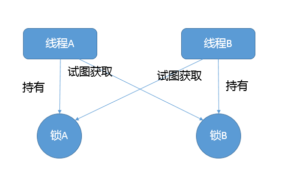
定位死锁最常见的方式就是利用 jstack 等工具获取线程栈，然后定位互相之间的依赖关系，进而找到死锁。如果是比较明显的死锁，往往 jstack 等就能直接定位，类似 JConsole 甚至可以在图形界面进行有限的死锁检测。
如果程序运行时发生了死锁，绝大多数情况下都是无法在线解决的，只能重启、修正程序本身问题。所以，代码开发阶段互相审查，或者利用工具进行预防性排查，往往也是很重要的。
考点分析
今天的问题偏向于实用场景，大部分死锁本身并不难定位，掌握基本思路和工具使用，理解线程相关的基本概念，比如各种线程状态和同步、锁、Latch 等并发工具，就已经足够解决大多数问题了。
针对死锁，面试官可以深入考察：
- 抛开字面上的概念，让面试者写一个可能死锁的程序，顺便也考察下基本的线程编程。
- 诊断死锁有哪些工具，如果是分布式环境，可能更关心能否用 API 实现吗？
- 后期诊断死锁还是挺痛苦的，经常加班，如何在编程中尽量避免一些典型场景的死锁，有其他工具辅助吗？
知识扩展
在分析开始之前，先以一个基本的死锁程序为例，我在这里只用了两个嵌套的 synchronized 去获取锁，具体如下：
public class DeadLockSample extends Thread {
private String first;
private String second;
public DeadLockSample(String name, String first, String second) {
super(name);
this.first = first;
this.second = second;
}
public void run() {
synchronized (first) {
System.out.println(this.getName() + " obtained: " + first);
try {
Thread.sleep(1000L);
synchronized (second) {
System.out.println(this.getName() + " obtained: " + second);
}
} catch (InterruptedException e) {
// Do nothing
}
}
}
public static void main(String[] args) throws InterruptedException {
String lockA = "lockA";
String lockB = "lockB";
DeadLockSample t1 = new DeadLockSample("Thread1", lockA, lockB);
DeadLockSample t2 = new DeadLockSample("Thread2", lockB, lockA);
t1.start();
t2.start();
t1.join();
t2.join();
}
}
这个程序编译执行后，几乎每次都可以重现死锁，请看下面截取的输出。另外，这里有个比较有意思的地方，为什么我先调用 Thread1 的 start，但是 Thread2 却先打印出来了呢？这就是因为线程调度依赖于（操作系统）调度器，虽然你可以通过优先级之类进行影响，但是具体情况是不确定的。

下面来模拟问题定位，我就选取最常见的 jstack，其他一些类似 JConsole 等图形化的工具，请自行查找。
首先，可以使用 jps 或者系统的 ps 命令、任务管理器等工具，确定进程 ID。
其次，调用 jstack 获取线程栈：
${JAVA_HOME}\bin\jstack your_pid
然后，分析得到的输出，具体片段如下：
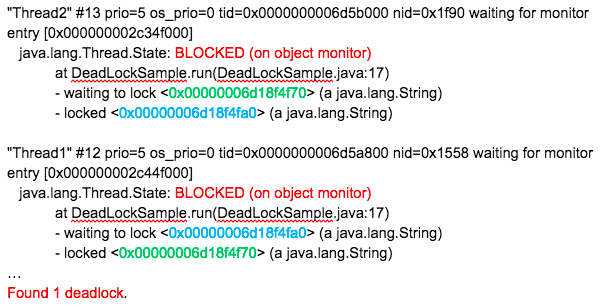
最后，结合代码分析线程栈信息。上面这个输出非常明显，找到处于 BLOCKED 状态的线程，按照试图获取（waiting）的锁 ID（请看我标记为相同颜色的数字）查找，很快就定位问题。 jstack 本身也会把类似的简单死锁抽取出来，直接打印出来。
在实际应用中，类死锁情况未必有如此清晰的输出，但是总体上可以理解为：
区分线程状态 -> 查看等待目标 -> 对比 Monitor 等持有状态
所以，理解线程基本状态和并发相关元素是定位问题的关键，然后配合程序调用栈结构，基本就可以定位到具体的问题代码。
如果我们是开发自己的管理工具，需要用更加程序化的方式扫描服务进程、定位死锁，可以考虑使用 Java 提供的标准管理 API，ThreadMXBean，其直接就提供了 findDeadlockedThreads() 方法用于定位。为方便说明，我修改了 DeadLockSample，请看下面的代码片段。
public static void main(String[] args) throws InterruptedException {
ThreadMXBean mbean = ManagementFactory.getThreadMXBean();
Runnable dlCheck = new Runnable() {
@Override
public void run() {
long[] threadIds = mbean.findDeadlockedThreads();
if (threadIds != null) {
ThreadInfo[] threadInfos = mbean.getThreadInfo(threadIds);
System.out.println("Detected deadlock threads:");
for (ThreadInfo threadInfo : threadInfos) {
System.out.println(threadInfo.getThreadName());
}
}
}
};
ScheduledExecutorService scheduler =Executors.newScheduledThreadPool(1);
// 稍等 5 秒，然后每 10 秒进行一次死锁扫描
scheduler.scheduleAtFixedRate(dlCheck, 5L, 10L, TimeUnit.SECONDS);
// 死锁样例代码…
}
重新编译执行，你就能看到死锁被定位到的输出。在实际应用中，就可以据此收集进一步的信息，然后进行预警等后续处理。但是要注意的是，对线程进行快照本身是一个相对重量级的操作，还是要慎重选择频度和时机。
如何在编程中尽量预防死锁呢？
首先，我们来总结一下前面例子中死锁的产生包含哪些基本元素。基本上死锁的发生是因为：
- 互斥条件，类似 Java 中 Monitor 都是独占的，要么是我用，要么是你用。
- 互斥条件是长期持有的，在使用结束之前，自己不会释放，也不能被其他线程抢占。
- 循环依赖关系，两个或者多个个体之间出现了锁的链条环。
所以，我们可以据此分析可能的避免死锁的思路和方法。
第一种方法
如果可能的话，尽量避免使用多个锁，并且只有需要时才持有锁。否则，即使是非常精通并发编程的工程师，也难免会掉进坑里，嵌套的 synchronized 或者 lock 非常容易出问题。
我举个例子， Java NIO 的实现代码向来以锁多著称，一个原因是，其本身模型就非常复杂，某种程度上是不得不如此；另外是在设计时，考虑到既要支持阻塞模式，又要支持非阻塞模式。直接结果就是，一些基本操作如 connect，需要操作三个锁以上，在最近的一个 JDK 改进中，就发生了死锁现象。
我将其简化为下面的伪代码，问题是暴露在 HTTP/2 客户端中，这是个非常现代的反应式风格的 API，非常推荐学习使用。
/// Thread HttpClient-6-SelectorManager:
readLock.lock();
writeLock.lock();
// 持有 readLock/writeLock，调用 close（）需要获得 closeLock
close();
// Thread HttpClient-6-Worker-2 持有 closeLock
implCloseSelectableChannel (); // 想获得 readLock
在 close 发生时， HttpClient-6-SelectorManager 线程持有 readLock/writeLock，试图获得 closeLock；与此同时，另一个 HttpClient-6-Worker-2 线程，持有 closeLock，试图获得 readLock，这就不可避免地进入了死锁。
这里比较难懂的地方在于，closeLock 的持有状态（就是我标记为绿色的部分）并没有在线程栈中显示出来，请参考我在下图中标记的部分。
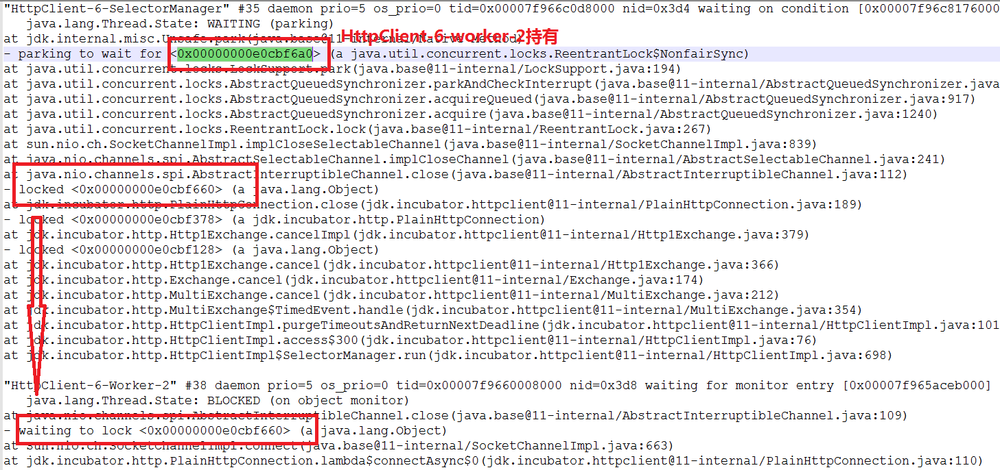 更加具体来说，请查看SocketChannelImpl的 663 行，对比 implCloseSelectableChannel() 方法实现和AbstractInterruptibleChannel.close()在 109 行的代码，这里就不展示代码了。
所以，从程序设计的角度反思，如果我们赋予一段程序太多的职责，出现“既要…又要…”的情况时，可能就需要我们审视下设计思路或目的是否合理了。对于类库，因为其基础、共享的定位，比应用开发往往更加令人苦恼，需要仔细斟酌之间的平衡。
第二种方法
如果必须使用多个锁，尽量设计好锁的获取顺序，这个说起来简单，做起来可不容易，你可以参看著名的银行家算法。
一般的情况，我建议可以采取些简单的辅助手段，比如：
- 将对象（方法）和锁之间的关系，用图形化的方式表示分别抽取出来，以今天最初讲的死锁为例，因为是调用了同一个线程所以更加简单。
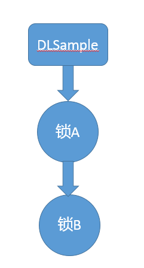
- 然后根据对象之间组合、调用的关系对比和组合，考虑可能调用时序。
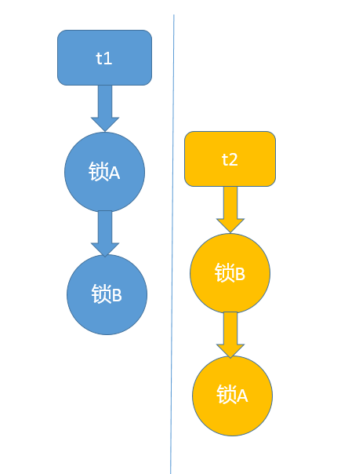
- 按照可能时序合并，发现可能死锁的场景。
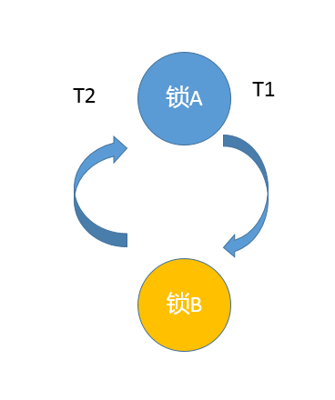 第三种方法
使用带超时的方法，为程序带来更多可控性。
类似 Object.wait(…) 或者 CountDownLatch.await(…)，都支持所谓的 timed_wait，我们完全可以就不假定该锁一定会获得，指定超时时间，并为无法得到锁时准备退出逻辑。
并发 Lock 实现，如 ReentrantLock 还支持非阻塞式的获取锁操作 tryLock()，这是一个插队行为（barging），并不在乎等待的公平性，如果执行时对象恰好没有被独占，则直接获取锁。有时，我们希望条件允许就尝试插队，不然就按照现有公平性规则等待，一般采用下面的方法：
if (lock.tryLock() || lock.tryLock(timeout, unit)) {
// ...
}
第四种方法
业界也有一些其他方面的尝试，比如通过静态代码分析（如 FindBugs）去查找固定的模式，进而定位可能的死锁或者竞争情况。实践证明这种方法也有一定作用，请参考相关文档。
除了典型应用中的死锁场景，其实还有一些更令人头疼的死锁，比如类加载过程发生的死锁，尤其是在框架大量使用自定义类加载时，因为往往不是在应用本身的代码库中，jstack 等工具也不见得能够显示全部锁信息，所以处理起来比较棘手。对此，Java 有官方文档进行了详细解释，并针对特定情况提供了相应 JVM 参数和基本原则。
今天，我从样例程序出发，介绍了死锁产生原因，并帮你熟悉了排查死锁基本工具的使用和典型思路，最后结合实例介绍了实际场景中的死锁分析方法与预防措施，希望对你有所帮助。
一课一练
关于今天我们讨论的题目你做到心中有数了吗？今天的思考题是，有时候并不是阻塞导致的死锁，只是某个线程进入了死循环，导致其他线程一直等待，这种问题如何诊断呢？�<
第19讲 Java并发包提供了哪些并发工具类？
通过前面的学习，我们一起回顾了线程、锁等各种并发编程的基本元素，也逐步涉及了 Java 并发包中的部分内容，相信经过前面的热身，我们能够更快地理解 Java 并发包。
今天我要问你的问题是，Java 并发包提供了哪些并发工具类？
典型回答
我们通常所说的并发包也就是 java.util.concurrent 及其子包，集中了 Java 并发的各种基础工具类，具体主要包括几个方面：
- 提供了比 synchronized 更加高级的各种同步结构，包括 CountDownLatch、CyclicBarrier、Semaphore 等，可以实现更加丰富的多线程操作，比如利用 Semaphore 作为资源控制器，限制同时进行工作的线程数量。
- 各种线程安全的容器，比如最常见的 ConcurrentHashMap、有序的 ConcunrrentSkipListMap，或者通过类似快照机制，实现线程安全的动态数组 CopyOnWriteArrayList 等。
- 各种并发队列实现，如各种 BlockedQueue 实现，比较典型的 ArrayBlockingQueue、 SynchorousQueue 或针对特定场景的 PriorityBlockingQueue 等。
- 强大的 Executor 框架，可以创建各种不同类型的线程池，调度任务运行等，绝大部分情况下，不再需要自己从头实现线程池和任务调度器。
考点分析
这个题目主要考察你对并发包了解程度，以及是否有实际使用经验。我们进行多线程编程，无非是达到几个目的：
- 利用多线程提高程序的扩展能力，以达到业务对吞吐量的要求。
- 协调线程间调度、交互，以完成业务逻辑。
- 线程间传递数据和状态，这同样是实现业务逻辑的需要。
所以，这道题目只能算作简单的开始，往往面试官还会进一步考察如何利用并发包实现某个特定的用例，分析实现的优缺点等。
如果你在这方面的基础比较薄弱，我的建议是：
- 从总体上，把握住几个主要组成部分（前面回答中已经简要介绍）。
- 理解具体设计、实现和能力。
- 再深入掌握一些比较典型工具类的适用场景、用法甚至是原理，并熟练写出典型的代码用例。
掌握这些通常就够用了，毕竟并发包提供了方方面面的工具，其实很少有机会能在应用中全面使用过，扎实地掌握核心功能就非常不错了。真正特别深入的经验，还是得靠在实际场景中踩坑来获得。
知识扩展
首先，我们来看看并发包提供的丰富同步结构。前面几讲已经分析过各种不同的显式锁，今天我将专注于
- CountDownLatch，允许一个或多个线程等待某些操作完成。
- CyclicBarrier，一种辅助性的同步结构，允许多个线程等待到达某个屏障。
- Semaphore，Java 版本的信号量实现。
Java 提供了经典信号量（Semaphore）的实现，它通过控制一定数量的允许（permit）的方式，来达到限制通用资源访问的目的。你可以想象一下这个场景，在车站、机场等出租车时，当很多空出租车就位时，为防止过度拥挤，调度员指挥排队等待坐车的队伍一次进来 5 个人上车，等这 5 个人坐车出发，再放进去下一批，这和 Semaphore 的工作原理有些类似。
你可以试试使用 Semaphore 来模拟实现这个调度过程：
import java.util.concurrent.Semaphore;
public class UsualSemaphoreSample {
public static void main(String[] args) throws InterruptedException {
System.out.println("Action...GO!");
Semaphore semaphore = new Semaphore(5);
for (int i = 0; i < 10; i++) {
Thread t = new Thread(new SemaphoreWorker(semaphore));
t.start();
}
}
}
class SemaphoreWorker implements Runnable {
private String name;
private Semaphore semaphore;
public SemaphoreWorker(Semaphore semaphore) {
this.semaphore = semaphore;
}
@Override
public void run() {
try {
log("is waiting for a permit!");
semaphore.acquire();
log("acquired a permit!");
log("executed!");
} catch (InterruptedException e) {
e.printStackTrace();
} finally {
log("released a permit!");
semaphore.release();
}
}
private void log(String msg){
if (name == null) {
name = Thread.currentThread().getName();
}
System.out.println(name + " " + msg);
}
}
这段代码是比较典型的 Semaphore 示例，其逻辑是，线程试图获得工作允许，得到许可则进行任务，然后释放许可，这时等待许可的其他线程，就可获得许可进入工作状态，直到全部处理结束。编译运行，我们就能看到 Semaphore 的允许机制对工作线程的限制。
但是，从具体节奏来看，其实并不符合我们前面场景的需求，因为本例中 Semaphore 的用法实际是保证，一直有 5 个人可以试图乘车，如果有 1 个人出发了，立即就有排队的人获得许可，而这并不完全符合我们前面的要求。
那么，我再修改一下，演示个非典型的 Semaphore 用法。
import java.util.concurrent.Semaphore;
public class AbnormalSemaphoreSample {
public static void main(String[] args) throws InterruptedException {
Semaphore semaphore = new Semaphore(0);
for (int i = 0; i < 10; i++) {
Thread t = new Thread(new MyWorker(semaphore));
t.start();
}
System.out.println("Action...GO!");
semaphore.release(5);
System.out.println("Wait for permits off");
while (semaphore.availablePermits()!=0) {
Thread.sleep(100L);
}
System.out.println("Action...GO again!");
semaphore.release(5);
}
}
class MyWorker implements Runnable {
private Semaphore semaphore;
public MyWorker(Semaphore semaphore) {
this.semaphore = semaphore;
}
@Override
public void run() {
try {
semaphore.acquire();
System.out.println("Executed!");
} catch (InterruptedException e) {
e.printStackTrace();
}
}
}
注意，上面的代码，更侧重的是演示 Semaphore 的功能以及局限性，其实有很多线程编程中的反实践，比如使用了 sleep 来协调任务执行，而且使用轮询调用 availalePermits 来检测信号量获取情况，这都是很低效并且脆弱的，通常只是用在测试或者诊断场景。
总的来说，我们可以看出 Semaphore 就是个计数器，其基本逻辑基于 acquire/release，并没有太复杂的同步逻辑。
如果 Semaphore 的数值被初始化为 1，那么一个线程就可以通过 acquire 进入互斥状态，本质上和互斥锁是非常相似的。但是区别也非常明显，比如互斥锁是有持有者的，而对于 Semaphore 这种计数器结构，虽然有类似功能，但其实不存在真正意义的持有者，除非我们进行扩展包装。
下面，来看看 CountDownLatch 和 CyclicBarrier，它们的行为有一定的相似度，经常会被考察二者有什么区别，我来简单总结一下。
- CountDownLatch 是不可以重置的，所以无法重用；而 CyclicBarrier 则没有这种限制，可以重用。
- CountDownLatch 的基本操作组合是 countDown/await。调用 await 的线程阻塞等待 countDown 足够的次数，不管你是在一个线程还是多个线程里 countDown，只要次数足够即可。所以就像 Brain Goetz 说过的，CountDownLatch 操作的是事件。
- CyclicBarrier 的基本操作组合，则就是 await，当所有的伙伴（parties）都调用了 await，才会继续进行任务，并自动进行重置。注意，正常情况下，CyclicBarrier 的重置都是自动发生的，如果我们调用 reset 方法，但还有线程在等待，就会导致等待线程被打扰，抛出 BrokenBarrierException 异常。CyclicBarrier 侧重点是线程，而不是调用事件，它的典型应用场景是用来等待并发线程结束。
如果用 CountDownLatch 去实现上面的排队场景，该怎么做呢？假设有 10 个人排队，我们将其分成 5 个人一批，通过 CountDownLatch 来协调批次，你可以试试下面的示例代码。
import java.util.concurrent.CountDownLatch;
public class LatchSample {
public static void main(String[] args) throws InterruptedException {
CountDownLatch latch = new CountDownLatch(6);
for (int i = 0; i < 5; i++) {
Thread t = new Thread(new FirstBatchWorker(latch));
t.start();
}
for (int i = 0; i < 5; i++) {
Thread t = new Thread(new SecondBatchWorker(latch));
t.start();
}
// 注意这里也是演示目的的逻辑，并不是推荐的协调方式
while ( latch.getCount() != 1 ){
Thread.sleep(100L);
}
System.out.println("Wait for first batch finish");
latch.countDown();
}
}
class FirstBatchWorker implements Runnable {
private CountDownLatch latch;
public FirstBatchWorker(CountDownLatch latch) {
this.latch = latch;
}
@Override
public void run() {
System.out.println("First batch executed!");
latch.countDown();
}
}
class SecondBatchWorker implements Runnable {
private CountDownLatch latch;
public SecondBatchWorker(CountDownLatch latch) {
this.latch = latch;
}
@Override
public void run() {
try {
latch.await();
System.out.println("Second batch executed!");
} catch (InterruptedException e) {
e.printStackTrace();
}
}
}
CountDownLatch 的调度方式相对简单，后一批次的线程进行 await，等待前一批 countDown 足够多次。这个例子也从侧面体现出了它的局限性，虽然它也能够支持 10 个人排队的情况，但是因为不能重用，如果要支持更多人排队，就不能依赖一个 CountDownLatch 进行了。其编译运行输出如下：
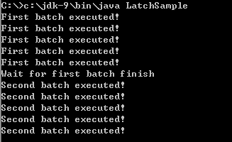
在实际应用中的条件依赖，往往没有这么别扭，CountDownLatch 用于线程间等待操作结束是非常简单普遍的用法。通过 countDown/await 组合进行通信是很高效的，通常不建议使用例子里那个循环等待方式。
如果用 CyclicBarrier 来表达这个场景呢？我们知道 CyclicBarrier 其实反映的是线程并行运行时的协调，在下面的示例里，从逻辑上，5 个工作线程其实更像是代表了 5 个可以就绪的空车，而不再是 5 个乘客，对比前面 CountDownLatch 的例子更有助于我们区别它们的抽象模型，请看下面的示例代码：
import java.util.concurrent.BrokenBarrierException;
import java.util.concurrent.CyclicBarrier;
public class CyclicBarrierSample {
public static void main(String[] args) throws InterruptedException {
CyclicBarrier barrier = new CyclicBarrier(5, new Runnable() {
@Override
public void run() {
System.out.println("Action...GO again!");
}
});
for (int i = 0; i < 5; i++) {
Thread t = new Thread(new CyclicWorker(barrier));
t.start();
}
}
static class CyclicWorker implements Runnable {
private CyclicBarrier barrier;
public CyclicWorker(CyclicBarrier barrier) {
this.barrier = barrier;
}
@Override
public void run() {
try {
for (int i=0; i<3 ; i++){
System.out.println("Executed!");
barrier.await();
}
} catch (BrokenBarrierException e) {
e.printStackTrace();
} catch (InterruptedException e) {
e.printStackTrace();
}
}
}
}
为了让输出更能表达运行时序，我使用了 CyclicBarrier 特有的 barrierAction，当屏障被触发时，Java 会自动调度该动作。因为 CyclicBarrier 会自动进行重置，所以这个逻辑其实可以非常自然的支持更多排队人数。其编译输出如下：
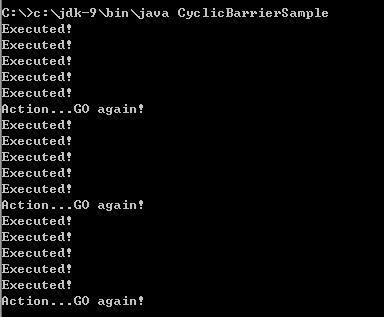
Java 并发类库还提供了Phaser，功能与 CountDownLatch 很接近，但是它允许线程动态地注册到 Phaser 上面，而 CountDownLatch 显然是不能动态设置的。Phaser 的设计初衷是，实现多个线程类似步骤、阶段场景的协调，线程注册等待屏障条件触发，进而协调彼此间行动，具体请参考这个例子。
接下来，我来梳理下并发包里提供的线程安全 Map、List 和 Set。首先，请参考下面的类图。
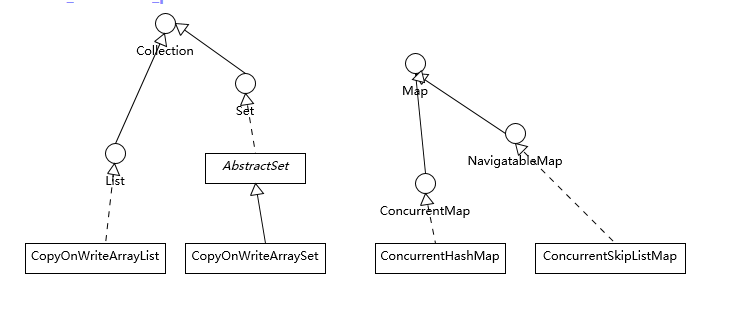
你可以看到，总体上种类和结构还是比较简单的，如果我们的应用侧重于 Map 放入或者获取的速度，而不在乎顺序，大多推荐使用 ConcurrentHashMap，反之则使用 ConcurrentSkipListMap；如果我们需要对大量数据进行非常频繁地修改，ConcurrentSkipListMap 也可能表现出优势。
我在前面的专栏，谈到了普通无顺序场景选择 HashMap，有顺序场景则可以选择类似 TreeMap 等，但是为什么并发容器里面没有 ConcurrentTreeMap 呢？
这是因为 TreeMap 要实现高效的线程安全是非常困难的，它的实现基于复杂的红黑树。为保证访问效率，当我们插入或删除节点时，会移动节点进行平衡操作，这导致在并发场景中难以进行合理粒度的同步。而 SkipList 结构则要相对简单很多，通过层次结构提高访问速度，虽然不够紧凑，空间使用有一定提高（O(nlogn)），但是在增删元素时线程安全的开销要好很多。为了方便你理解 SkipList 的内部结构，我画了一个示意图。
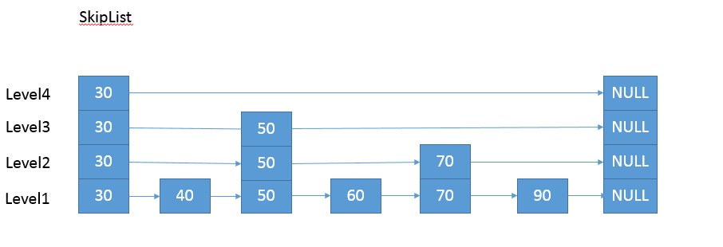
关于两个 CopyOnWrite 容器，其实 CopyOnWriteArraySet 是通过包装了 CopyOnWriteArrayList 来实现的，所以在学习时，我们可以专注于理解一种。
首先，CopyOnWrite 到底是什么意思呢？它的原理是，任何修改操作，如 add、set、remove，都会拷贝原数组，修改后替换原来的数组，通过这种防御性的方式，实现另类的线程安全。请看下面的代码片段，我进行注释的地方，可以清晰地理解其逻辑。
public boolean add(E e) {
synchronized (lock) {
Object[] elements = getArray();
int len = elements.length;
// 拷贝
Object[] newElements = Arrays.copyOf(elements, len + 1);
newElements[len] = e;
// 替换
setArray(newElements);
return true;
}
}
final void setArray(Object[] a) {
array = a;
}
所以这种数据结构，相对比较适合读多写少的操作，不然修改的开销还是非常明显的。
今天我对 Java 并发包进行了总结，并且结合实例分析了各种同步结构和部分线程安全容器，希望对你有所帮助。
一课一练
关于今天我们讨论的题目你做到心中有数了吗？留给你的思考题是，你使用过类似 CountDownLatch 的同步结构解决实际问题吗？谈谈你的使用场景和心得。�Z
第20讲 并发包中的ConcurrentLinkedQueue和LinkedBlockingQueue有什么区别？
在上一讲中，我分析了 Java 并发包中的部分内容，今天我来介绍一下线程安全队列。Java 标准库提供了非常多的线程安全队列，很容易混淆。
今天我要问你的问题是，并发包中的 ConcurrentLinkedQueue 和 LinkedBlockingQueue 有什么区别？
典型回答
有时候我们把并发包下面的所有容器都习惯叫作并发容器，但是严格来讲，类似 ConcurrentLinkedQueue 这种“Concurrent*”容器，才是真正代表并发。
关于问题中它们的区别：
- Concurrent 类型基于 lock-free，在常见的多线程访问场景，一般可以提供较高吞吐量。
- 而 LinkedBlockingQueue 内部则是基于锁，并提供了 BlockingQueue 的等待性方法。
不知道你有没有注意到，java.util.concurrent 包提供的容器（Queue、List、Set）、Map，从命名上可以大概区分为 Concurrent*、CopyOnWrite和 Blocking等三类，同样是线程安全容器，可以简单认为：
- Concurrent 类型没有类似 CopyOnWrite 之类容器相对较重的修改开销。
- 但是，凡事都是有代价的，Concurrent 往往提供了较低的遍历一致性。你可以这样理解所谓的弱一致性，例如，当利用迭代器遍历时，如果容器发生修改，迭代器仍然可以继续进行遍历。
- 与弱一致性对应的，就是我介绍过的同步容器常见的行为“fail-fast”，也就是检测到容器在遍历过程中发生了修改，则抛出 ConcurrentModificationException，不再继续遍历。
- 弱一致性的另外一个体现是，size 等操作准确性是有限的，未必是 100% 准确。
- 与此同时，读取的性能具有一定的不确定性。
考点分析
今天的问题是又是一个引子，考察你是否了解并发包内部不同容器实现的设计目的和实现区别。
队列是非常重要的数据结构，我们日常开发中很多线程间数据传递都要依赖于它，Executor 框架提供的各种线程池，同样无法离开队列。面试官可以从不同角度考察，比如：
- 哪些队列是有界的，哪些是无界的？（很多同学反馈了这个问题）
- 针对特定场景需求，如何选择合适的队列实现？
- 从源码的角度，常见的线程安全队列是如何实现的，并进行了哪些改进以提高性能表现？
为了能更好地理解这一讲，需要你掌握一些基本的队列本身和数据结构方面知识，如果这方面知识比较薄弱，《数据结构与算法分析》是一本比较全面的参考书，专栏还是尽量专注于 Java 领域的特性。
知识扩展
线程安全队列一览
我在专栏第 8 讲中介绍过，常见的集合中如 LinkedList 是个 Deque，只不过不是线程安全的。下面这张图是 Java 并发类库提供的各种各样的线程安全队列实现，注意，图中并未将非线程安全部分包含进来。
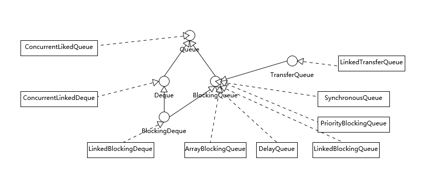
我们可以从不同的角度进行分类，从基本的数据结构的角度分析，有两个特别的Deque实现，ConcurrentLinkedDeque 和 LinkedBlockingDeque。Deque 的侧重点是支持对队列头尾都进行插入和删除，所以提供了特定的方法，如:
- 尾部插入时需要的addLast(e)、offerLast(e)。
- 尾部删除所需要的removeLast()、pollLast()。
从上面这些角度，能够理解 ConcurrentLinkedDeque 和 LinkedBlockingQueue 的主要功能区别，也就足够日常开发的需要了。但是如果我们深入一些，通常会更加关注下面这些方面。
从行为特征来看，绝大部分 Queue 都是实现了 BlockingQueue 接口。在常规队列操作基础上，Blocking 意味着其提供了特定的等待性操作，获取时（take）等待元素进队，或者插入时（put）等待队列出现空位。
/**
* 获取并移除队列头结点，如果必要，其会等待直到队列出现元素
…
*/
E take() throws InterruptedException;
/**
* 插入元素，如果队列已满，则等待直到队列出现空闲空间
…
*/
void put(E e) throws InterruptedException;
另一个 BlockingQueue 经常被考察的点，就是是否有界（Bounded、Unbounded），这一点也往往会影响我们在应用开发中的选择，我这里简单总结一下。
- ArrayBlockingQueue 是最典型的的有界队列，其内部以 final 的数组保存数据，数组的大小就决定了队列的边界，所以我们在创建 ArrayBlockingQueue 时，都要指定容量，如
public ArrayBlockingQueue(int capacity, boolean fair)
- LinkedBlockingQueue，容易被误解为无边界，但其实其行为和内部代码都是基于有界的逻辑实现的，只不过如果我们没有在创建队列时就指定容量，那么其容量限制就自动被设置为 Integer.MAX_VALUE，成为了无界队列。
- SynchronousQueue，这是一个非常奇葩的队列实现，每个删除操作都要等待插入操作，反之每个插入操作也都要等待删除动作。那么这个队列的容量是多少呢？是 1 吗？其实不是的，其内部容量是 0。
- PriorityBlockingQueue 是无边界的优先队列，虽然严格意义上来讲，其大小总归是要受系统资源影响。
- DelayedQueue 和 LinkedTransferQueue 同样是无边界的队列。对于无边界的队列，有一个自然的结果，就是 put 操作永远也不会发生其他 BlockingQueue 的那种等待情况。
如果我们分析不同队列的底层实现，BlockingQueue 基本都是基于锁实现，一起来看看典型的 LinkedBlockingQueue。
/** Lock held by take, poll, etc */
private final ReentrantLock takeLock = new ReentrantLock();
/** Wait queue for waiting takes */
private final Condition notEmpty = takeLock.newCondition();
/** Lock held by put, offer, etc */
private final ReentrantLock putLock = new ReentrantLock();
/** Wait queue for waiting puts */
private final Condition notFull = putLock.newCondition();
我在介绍 ReentrantLock 的条件变量用法的时候分析过 ArrayBlockingQueue，不知道你有没有注意到，其条件变量与 LinkedBlockingQueue 版本的实现是有区别的。notEmpty、notFull 都是同一个再入锁的条件变量，而 LinkedBlockingQueue 则改进了锁操作的粒度，头、尾操作使用不同的锁，所以在通用场景下，它的吞吐量相对要更好一些。
下面的 take 方法与 ArrayBlockingQueue 中的实现，也是有不同的，由于其内部结构是链表，需要自己维护元素数量值，请参考下面的代码。
public E take() throws InterruptedException {
final E x;
final int c;
final AtomicInteger count = this.count;
final ReentrantLock takeLock = this.takeLock;
takeLock.lockInterruptibly();
try {
while (count.get() == 0) {
notEmpty.await();
}
x = dequeue();
c = count.getAndDecrement();
if (c > 1)
notEmpty.signal();
} finally {
takeLock.unlock();
}
if (c == capacity)
signalNotFull();
return x;
}
类似 ConcurrentLinkedQueue 等，则是基于 CAS 的无锁技术，不需要在每个操作时使用锁，所以扩展性表现要更加优异。
相对比较另类的 SynchronousQueue，在 Java 6 中，其实现发生了非常大的变化，利用 CAS 替换掉了原本基于锁的逻辑，同步开销比较小。它是 Executors.newCachedThreadPool() 的默认队列。
队列使用场景与典型用例
在实际开发中，我提到过 Queue 被广泛使用在生产者 - 消费者场景，比如利用 BlockingQueue 来实现，由于其提供的等待机制，我们可以少操心很多协调工作，你可以参考下面样例代码：
import java.util.concurrent.ArrayBlockingQueue;
import java.util.concurrent.BlockingQueue;
public class ConsumerProducer {
public static final String EXIT_MSG = "Good bye!";
public static void main(String[] args) {
// 使用较小的队列，以更好地在输出中展示其影响
BlockingQueue<String> queue = new ArrayBlockingQueue<>(3);
Producer producer = new Producer(queue);
Consumer consumer = new Consumer(queue);
new Thread(producer).start();
new Thread(consumer).start();
}
static class Producer implements Runnable {
private BlockingQueue<String> queue;
public Producer(BlockingQueue<String> q) {
this.queue = q;
}
@Override
public void run() {
for (int i = 0; i < 20; i++) {
try{
Thread.sleep(5L);
String msg = "Message" + i;
System.out.println("Produced new item: " + msg);
queue.put(msg);
} catch (InterruptedException e) {
e.printStackTrace();
}
}
try {
System.out.println("Time to say good bye!");
queue.put(EXIT_MSG);
} catch (InterruptedException e) {
e.printStackTrace();
}
}
}
static class Consumer implements Runnable{
private BlockingQueue<String> queue;
public Consumer(BlockingQueue<String> q){
this.queue=q;
}
@Override
public void run() {
try{
String msg;
while(!EXIT_MSG.equalsIgnoreCase( (msg = queue.take()))){
System.out.println("Consumed item: " + msg);
Thread.sleep(10L);
}
System.out.println("Got exit message, bye!");
}catch(InterruptedException e) {
e.printStackTrace();
}
}
}
}
上面是一个典型的生产者 - 消费者样例，如果使用非 Blocking 的队列，那么我们就要自己去实现轮询、条件判断（如检查 poll 返回值是否 null）等逻辑，如果没有特别的场景要求，Blocking 实现起来代码更加简单、直观。
前面介绍了各种队列实现，在日常的应用开发中，如何进行选择呢？
以 LinkedBlockingQueue、ArrayBlockingQueue 和 SynchronousQueue 为例，我们一起来分析一下，根据需求可以从很多方面考量：
- 考虑应用场景中对队列边界的要求。ArrayBlockingQueue 是有明确的容量限制的，而 LinkedBlockingQueue 则取决于我们是否在创建时指定，SynchronousQueue 则干脆不能缓存任何元素。
- 从空间利用角度，数组结构的 ArrayBlockingQueue 要比 LinkedBlockingQueue 紧凑，因为其不需要创建所谓节点，但是其初始分配阶段就需要一段连续的空间，所以初始内存需求更大。
- 通用场景中，LinkedBlockingQueue 的吞吐量一般优于 ArrayBlockingQueue，因为它实现了更加细粒度的锁操作。
- ArrayBlockingQueue 实现比较简单，性能更好预测，属于表现稳定的“选手”。
- 如果我们需要实现的是两个线程之间接力性（handoff）的场景，按照专栏上一讲的例子，你可能会选择 CountDownLatch，但是SynchronousQueue也是完美符合这种场景的，而且线程间协调和数据传输统一起来，代码更加规范。
- 可能令人意外的是，很多时候 SynchronousQueue 的性能表现，往往大大超过其他实现，尤其是在队列元素较小的场景。
今天我分析了 Java 中让人眼花缭乱的各种线程安全队列，试图从几个角度，让每个队列的特点更加明确，进而希望减少你在日常工作中使用时的困扰。
一课一练
关于今天我们讨论的题目你做到心中有数了吗？ 今天的内容侧重于 Java 自身的角度，面试官也可能从算法的角度来考察，所以今天留给你的思考题是，指定某种结构，比如栈，用它实现一个 BlockingQueue，实现思路是怎样的呢？�X
第21讲 Java并发类库提供的线程池有哪几种？ 分别有什么特点？
我在[专栏第 17 讲]中介绍过线程是不能够重复启动的，创建或销毁线程存在一定的开销，所以利用线程池技术来提高系统资源利用效率，并简化线程管理，已经是非常成熟的选择。
今天我要问你的问题是，Java 并发类库提供的线程池有哪几种？ 分别有什么特点？
典型回答
通常开发者都是利用 Executors 提供的通用线程池创建方法，去创建不同配置的线程池，主要区别在于不同的 ExecutorService 类型或者不同的初始参数。
Executors 目前提供了 5 种不同的线程池创建配置：
- newCachedThreadPool()，它是一种用来处理大量短时间工作任务的线程池，具有几个鲜明特点：它会试图缓存线程并重用，当无缓存线程可用时，就会创建新的工作线程；如果线程闲置的时间超过 60 秒，则被终止并移出缓存；长时间闲置时，这种线程池，不会消耗什么资源。其内部使用 SynchronousQueue 作为工作队列。
- newFixedThreadPool(int nThreads)，重用指定数目（nThreads）的线程，其背后使用的是无界的工作队列，任何时候最多有 nThreads 个工作线程是活动的。这意味着，如果任务数量超过了活动队列数目，将在工作队列中等待空闲线程出现；如果有工作线程退出，将会有新的工作线程被创建，以补足指定的数目 nThreads。
- newSingleThreadExecutor()，它的特点在于工作线程数目被限制为 1，操作一个无界的工作队列，所以它保证了所有任务的都是被顺序执行，最多会有一个任务处于活动状态，并且不允许使用者改动线程池实例，因此可以避免其改变线程数目。
- newSingleThreadScheduledExecutor() 和 newScheduledThreadPool(int corePoolSize)，创建的是个 ScheduledExecutorService，可以进行定时或周期性的工作调度，区别在于单一工作线程还是多个工作线程。
- newWorkStealingPool(int parallelism)，这是一个经常被人忽略的线程池，Java 8 才加入这个创建方法，其内部会构建ForkJoinPool，利用Work-Stealing算法，并行地处理任务，不保证处理顺序。
考点分析
Java 并发包中的 Executor 框架无疑是并发编程中的重点，今天的题目考察的是对几种标准线程池的了解，我提供的是一个针对最常见的应用方式的回答。
在大多数应用场景下，使用 Executors 提供的 5 个静态工厂方法就足够了，但是仍然可能需要直接利用 ThreadPoolExecutor 等构造函数创建，这就要求你对线程构造方式有进一步的了解，你需要明白线程池的设计和结构。
另外，线程池这个定义就是个容易让人误解的术语，因为 ExecutorService 除了通常意义上“池”的功能，还提供了更全面的线程管理、任务提交等方法。
Executor 框架可不仅仅是线程池，我觉得至少下面几点值得深入学习：
- 掌握 Executor 框架的主要内容，至少要了解组成与职责，掌握基本开发用例中的使用。
- 对线程池和相关并发工具类型的理解，甚至是源码层面的掌握。
- 实践中有哪些常见问题，基本的诊断思路是怎样的。
- 如何根据自身应用特点合理使用线程池。
知识扩展
首先，我们来看看 Executor 框架的基本组成，请参考下面的类图。
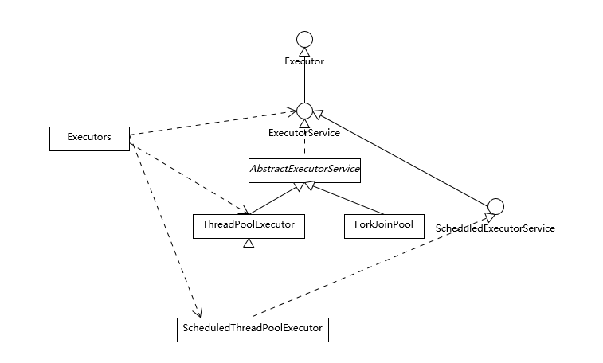
我们从整体上把握一下各个类型的主要设计目的：
- Executor 是一个基础的接口，其初衷是将任务提交和任务执行细节解耦，这一点可以体会其定义的唯一方法。
void execute(Runnable command);
Executor 的设计是源于 Java 早期线程 API 使用的教训，开发者在实现应用逻辑时，被太多线程创建、调度等不相关细节所打扰。就像我们进行 HTTP 通信，如果还需要自己操作 TCP 握手，开发效率低下，质量也难以保证。
- ExecutorService 则更加完善，不仅提供 service 的管理功能，比如 shutdown 等方法，也提供了更加全面的提交任务机制，如返回Future而不是 void 的 submit 方法。
<T> Future<T> submit(Callable<T> task);
注意，这个例子输入的可是Callable，它解决了 Runnable 无法返回结果的困扰。
- Java 标准类库提供了几种基础实现，比如ThreadPoolExecutor、ScheduledThreadPoolExecutor、ForkJoinPool。这些线程池的设计特点在于其高度的可调节性和灵活性，以尽量满足复杂多变的实际应用场景，我会进一步分析其构建部分的源码，剖析这种灵活性的源头。
- Executors 则从简化使用的角度，为我们提供了各种方便的静态工厂方法。
下面我就从源码角度，分析线程池的设计与实现，我将主要围绕最基础的 ThreadPoolExecutor 源码。ScheduledThreadPoolExecutor 是 ThreadPoolExecutor 的扩展，主要是增加了调度逻辑，如想深入了解，你可以参考相关教程。而 ForkJoinPool 则是为 ForkJoinTask 定制的线程池，与通常意义的线程池有所不同。
这部分内容比较晦涩，罗列概念也不利于你去理解，所以我会配合一些示意图来说明。在现实应用中，理解应用与线程池的交互和线程池的内部工作过程，你可以参考下图。
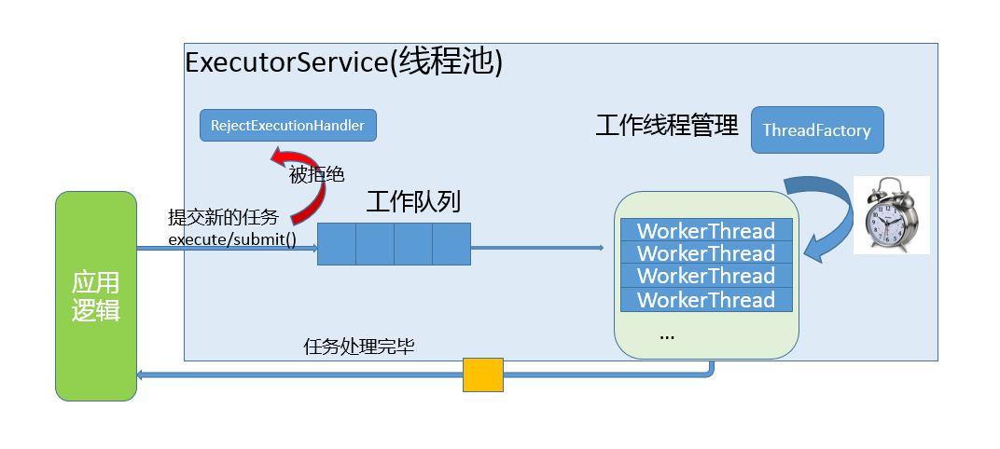
简单理解一下：
- 工作队列负责存储用户提交的各个任务，这个工作队列，可以是容量为 0 的 SynchronousQueue（使用 newCachedThreadPool），也可以是像固定大小线程池（newFixedThreadPool）那样使用 LinkedBlockingQueue。
private final BlockingQueue<Runnable> workQueue;
- 内部的“线程池”，这是指保持工作线程的集合，线程池需要在运行过程中管理线程创建、销毁。例如，对于带缓存的线程池，当任务压力较大时，线程池会创建新的工作线程；当业务压力退去，线程池会在闲置一段时间（默认 60 秒）后结束线程。
private final HashSet<Worker> workers = new HashSet<>();
线程池的工作线程被抽象为静态内部类 Worker，基于AQS实现。
- ThreadFactory 提供上面所需要的创建线程逻辑。
- 如果任务提交时被拒绝，比如线程池已经处于 SHUTDOWN 状态，需要为其提供处理逻辑，Java 标准库提供了类似ThreadPoolExecutor.AbortPolicy等默认实现，也可以按照实际需求自定义。
从上面的分析，就可以看出线程池的几个基本组成部分，一起都体现在线程池的构造函数中，从字面我们就可以大概猜测到其用意：
- corePoolSize，所谓的核心线程数，可以大致理解为长期驻留的线程数目（除非设置了 allowCoreThreadTimeOut）。对于不同的线程池，这个值可能会有很大区别，比如 newFixedThreadPool 会将其设置为 nThreads，而对于 newCachedThreadPool 则是为 0。
- maximumPoolSize，顾名思义，就是线程不够时能够创建的最大线程数。同样进行对比，对于 newFixedThreadPool，当然就是 nThreads，因为其要求是固定大小，而 newCachedThreadPool 则是 Integer.MAX_VALUE。
- keepAliveTime 和 TimeUnit，这两个参数指定了额外的线程能够闲置多久，显然有些线程池不需要它。
- workQueue，工作队列，必须是 BlockingQueue。
通过配置不同的参数，我们就可以创建出行为大相径庭的线程池，这就是线程池高度灵活性的基础。
public ThreadPoolExecutor(int corePoolSize,
int maximumPoolSize,
long keepAliveTime,
TimeUnit unit,
BlockingQueue<Runnable> workQueue,
ThreadFactory threadFactory,
RejectedExecutionHandler handler)
进一步分析，线程池既然有生命周期，它的状态是如何表征的呢？
这里有一个非常有意思的设计，ctl 变量被赋予了双重角色，通过高低位的不同，既表示线程池状态，又表示工作线程数目，这是一个典型的高效优化。试想，实际系统中，虽然我们可以指定线程极限为 Integer.MAX_VALUE，但是因为资源限制，这只是个理论值，所以完全可以将空闲位赋予其他意义。
private final AtomicInteger ctl = new AtomicInteger(ctlOf(RUNNING, 0));
// 真正决定了工作线程数的理论上限
private static final int COUNT_BITS = Integer.SIZE - 3;
private static final int COUNT_MASK = (1 << COUNT_BITS) - 1;
// 线程池状态，存储在数字的高位
private static final int RUNNING = -1 << COUNT_BITS;
…
// Packing and unpacking ctl
private static int runStateOf(int c) { return c & ~COUNT_MASK; }
private static int workerCountOf(int c) { return c & COUNT_MASK; }
private static int ctlOf(int rs, int wc) { return rs | wc; }
为了让你能对线程生命周期有个更加清晰的印象，我这里画了一个简单的状态流转图，对线程池的可能状态和其内部方法之间进行了对应，如果有不理解的方法，请参考 Javadoc。注意，实际 Java 代码中并不存在所谓 Idle 状态，我添加它仅仅是便于理解。
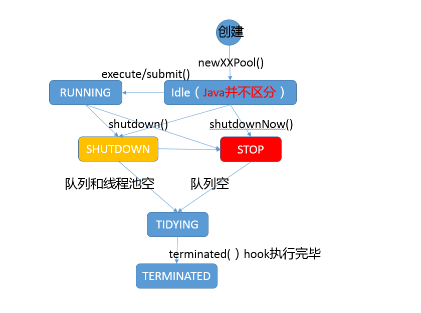
前面都是对线程池属性和构建等方面的分析，下面我选择典型的 execute 方法，来看看其是如何工作的，具体逻辑请参考我添加的注释，配合代码更加容易理解。
public void execute(Runnable command) {
…
int c = ctl.get();
// 检查工作线程数目，低于 corePoolSize 则添加 Worker
if (workerCountOf(c) < corePoolSize) {
if (addWorker(command, true))
return;
c = ctl.get();
}
// isRunning 就是检查线程池是否被 shutdown
// 工作队列可能是有界的，offer 是比较友好的入队方式
if (isRunning(c) && workQueue.offer(command)) {
int recheck = ctl.get();
// 再次进行防御性检查
if (! isRunning(recheck) && remove(command))
reject(command);
else if (workerCountOf(recheck) == 0)
addWorker(null, false);
}
// 尝试添加一个 worker，如果失败意味着已经饱和或者被 shutdown 了
else if (!addWorker(command, false))
reject(command);
}
线程池实践
线程池虽然为提供了非常强大、方便的功能，但是也不是银弹，使用不当同样会导致问题。我这里介绍些典型情况，经过前面的分析，很多方面可以自然的推导出来。
- 避免任务堆积。前面我说过 newFixedThreadPool 是创建指定数目的线程，但是其工作队列是无界的，如果工作线程数目太少，导致处理跟不上入队的速度，这就很有可能占用大量系统内存，甚至是出现 OOM。诊断时，你可以使用 jmap 之类的工具，查看是否有大量的任务对象入队。
- 避免过度扩展线程。我们通常在处理大量短时任务时，使用缓存的线程池，比如在最新的 HTTP/2 client API 中，目前的默认实现就是如此。我们在创建线程池的时候，并不能准确预计任务压力有多大、数据特征是什么样子（大部分请求是 1K 、100K 还是 1M 以上？），所以很难明确设定一个线程数目。
- 另外，如果线程数目不断增长（可以使用 jstack 等工具检查），也需要警惕另外一种可能性，就是线程泄漏，这种情况往往是因为任务逻辑有问题，导致工作线程迟迟不能被释放。建议你排查下线程栈，很有可能多个线程都是卡在近似的代码处。
- 避免死锁等同步问题，对于死锁的场景和排查，你可以复习专栏第 18 讲。
- 尽量避免在使用线程池时操作 ThreadLocal，同样是专栏第 17 讲已经分析过的，通过今天的线程池学习，应该更能理解其原因，工作线程的生命周期通常都会超过任务的生命周期。
线程池大小的选择策略
上面我已经介绍过，线程池大小不合适，太多会太少，都会导致麻烦，所以我们需要去考虑一个合适的线程池大小。虽然不能完全确定，但是有一些相对普适的规则和思路。
- 如果我们的任务主要是进行计算，那么就意味着 CPU 的处理能力是稀缺的资源，我们能够通过大量增加线程数提高计算能力吗？往往是不能的，如果线程太多，反倒可能导致大量的上下文切换开销。所以，这种情况下，通常建议按照 CPU 核的数目 N 或者 N+1。
- 如果是需要较多等待的任务，例如 I/O 操作比较多，可以参考 Brain Goetz 推荐的计算方法：
线程数 = CPU 核数 × （1 + 平均等待时间 / 平均工作时间）
这些时间并不能精准预计，需要根据采样或者概要分析等方式进行计算，然后在实际中验证和调整。
- 上面是仅仅考虑了 CPU 等限制，实际还可能受各种系统资源限制影响，例如我最近就在 Mac OS X 上遇到了大负载时ephemeral 端口受限的情况。当然，我是通过扩大可用端口范围解决的，如果我们不能调整资源的容量，那么就只能限制工作线程的数目了。这里的资源可以是文件句柄、内存等。
另外，在实际工作中，不要把解决问题的思路全部指望到调整线程池上，很多时候架构上的改变更能解决问题，比如利用背压机制的Reactive Stream、合理的拆分等。
今天，我从 Java 创建的几种线程池开始，对 Executor 框架的主要组成、线程池结构与生命周期等方面进行了讲解和分析，希望对你有所帮助。
一课一练
关于今天我们讨论的题目你做到心中有数了吗？今天的思考题是从逻辑上理解，线程池创建和生命周期。请谈一谈，如果利用 newSingleThreadExecutor() 创建一个线程池，corePoolSize、maxPoolSize 等都是什么数值？ThreadFactory 可能在线程池生命周期中被使用多少次？怎么验证自己的判断？�l
第22讲 AtomicInteger底层实现原理是什么？如何在自己的产品代码中应用CAS操作？
在今天这一讲中，我来分析一下并发包内部的组成，一起来看看各种同步结构、线程池等，是基于什么原理来设计和实现的。
今天我要问你的问题是，AtomicInteger 底层实现原理是什么？如何在自己的产品代码中应用 CAS 操作？
典型回答
AtomicIntger 是对 int 类型的一个封装，提供原子性的访问和更新操作，其原子性操作的实现是基于 CAS（compare-and-swap）技术。
所谓 CAS，表征的是一些列操作的集合，获取当前数值，进行一些运算，利用 CAS 指令试图进行更新。如果当前数值未变，代表没有其他线程进行并发修改，则成功更新。否则，可能出现不同的选择，要么进行重试，要么就返回一个成功或者失败的结果。
从 AtomicInteger 的内部属性可以看出，它依赖于 Unsafe 提供的一些底层能力，进行底层操作；以 volatile 的 value 字段，记录数值，以保证可见性。
private static final jdk.internal.misc.Unsafe U = jdk.internal.misc.Unsafe.getUnsafe();
private static final long VALUE = U.objectFieldOffset(AtomicInteger.class, "value");
private volatile int value;
具体的原子操作细节，可以参考任意一个原子更新方法，比如下面的 getAndIncrement。
Unsafe 会利用 value 字段的内存地址偏移，直接完成操作。
public final int getAndIncrement() {
return U.getAndAddInt(this, VALUE, 1);
}
因为 getAndIncrement 需要返归数值，所以需要添加失败重试逻辑。
public final int getAndAddInt(Object o, long offset, int delta) {
int v;
do {
v = getIntVolatile(o, offset);
} while (!weakCompareAndSetInt(o, offset, v, v + delta));
return v;
}
而类似 compareAndSet 这种返回 boolean 类型的函数，因为其返回值表现的就是成功与否，所以不需要重试。
public final boolean compareAndSet(int expectedValue, int newValue)
CAS 是 Java 并发中所谓 lock-free 机制的基础。
考点分析
今天的问题有点偏向于 Java 并发机制的底层了，虽然我们在开发中未必会涉及 CAS 的实现层面，但是理解其机制，掌握如何在 Java 中运用该技术，还是十分有必要的，尤其是这也是个并发编程的面试热点。
有的同学反馈面试官会问 CAS 更加底层是如何实现的，这依赖于 CPU 提供的特定指令，具体根据体系结构的不同还存在着明显区别。比如，x86 CPU 提供 cmpxchg 指令；而在精简指令集的体系架构中，则通常是靠一对儿指令（如“load and reserve”和“store conditional”）实现的，在大多数处理器上 CAS 都是个非常轻量级的操作，这也是其优势所在。
大部分情况下，掌握到这个程度也就够用了，我认为没有必要让每个 Java 工程师都去了解到指令级别，我们进行抽象、分工就是为了让不同层面的开发者在开发中，可以尽量屏蔽不相关的细节。
如果我作为面试官，很有可能深入考察这些方向：
- 在什么场景下，可以采用 CAS 技术，调用 Unsafe 毕竟不是大多数场景的最好选择，有没有更加推荐的方式呢？毕竟我们掌握一个技术，cool 不是目的，更不是为了应付面试，我们还是希望能在实际产品中有价值。
- 对 ReentrantLock、CyclicBarrier 等并发结构底层的实现技术的理解。
知识扩展
关于 CAS 的使用，你可以设想这样一个场景：在数据库产品中，为保证索引的一致性，一个常见的选择是，保证只有一个线程能够排他性地修改一个索引分区，如何在数据库抽象层面实现呢？
可以考虑为索引分区对象添加一个逻辑上的锁，例如，以当前独占的线程 ID 作为锁的数值，然后通过原子操作设置 lock 数值，来实现加锁和释放锁，伪代码如下：
public class AtomicBTreePartition {
private volatile long lock;
public void acquireLock(){}
public void releaseeLock(){}
}
那么在 Java 代码中，我们怎么实现锁操作呢？Unsafe 似乎不是个好的选择，例如，我就注意到类似 Cassandra 等产品，因为 Java 9 中移除了 Unsafe.moniterEnter()/moniterExit()，导致无法平滑升级到新的 JDK 版本。目前 Java 提供了两种公共 API，可以实现这种 CAS 操作，比如使用 java.util.concurrent.atomic.AtomicLongFieldUpdater，它是基于反射机制创建，我们需要保证类型和字段名称正确。
private static final AtomicLongFieldUpdater<AtomicBTreePartition> lockFieldUpdater =
AtomicLongFieldUpdater.newUpdater(AtomicBTreePartition.class, "lock");
private void acquireLock(){
long t = Thread.currentThread().getId();
while (!lockFieldUpdater.compareAndSet(this, 0L, t)){
// 等待一会儿，数据库操作可能比较慢
…
}
}
Atomic 包提供了最常用的原子性数据类型，甚至是引用、数组等相关原子类型和更新操作工具，是很多线程安全程序的首选。
我在专栏第七讲中曾介绍使用原子数据类型和 Atomic*FieldUpdater，创建更加紧凑的计数器实现，以替代 AtomicLong。优化永远是针对特定需求、特定目的，我这里的侧重点是介绍可能的思路，具体还是要看需求。如果仅仅创建一两个对象，其实完全没有必要进行前面的优化，但是如果对象成千上万或者更多，就要考虑紧凑性的影响了。而 atomic 包提供的LongAdder，在高度竞争环境下，可能就是比 AtomicLong 更佳的选择，尽管它的本质是空间换时间。
回归正题，如果是 Java 9 以后，我们完全可以采用另外一种方式实现，也就是 Variable Handle API，这是源自于JEP 193，提供了各种粒度的原子或者有序性的操作等。我将前面的代码修改为如下实现：
private static final VarHandle HANDLE = MethodHandles.lookup().findStaticVarHandle
(AtomicBTreePartition.class, "lock");
private void acquireLock(){
long t = Thread.currentThread().getId();
while (!HANDLE.compareAndSet(this, 0L, t)){
// 等待一会儿，数据库操作可能比较慢
…
}
}
过程非常直观，首先，获取相应的变量句柄，然后直接调用其提供的 CAS 方法。
一般来说，我们进行的类似 CAS 操作，可以并且推荐使用 Variable Handle API 去实现，其提供了精细粒度的公共底层 API。我这里强调公共，是因为其 API 不会像内部 API 那样，发生不可预测的修改，这一点提供了对于未来产品维护和升级的基础保障，坦白说，很多额外工作量，都是源于我们使用了 Hack 而非 Solution 的方式解决问题。
CAS 也并不是没有副作用，试想，其常用的失败重试机制，隐含着一个假设，即竞争情况是短暂的。大多数应用场景中，确实大部分重试只会发生一次就获得了成功，但是总是有意外情况，所以在有需要的时候，还是要考虑限制自旋的次数，以免过度消耗 CPU。
另外一个就是著名的ABA问题，这是通常只在 lock-free 算法下暴露的问题。我前面说过 CAS 是在更新时比较前值，如果对方只是恰好相同，例如期间发生了 A -> B -> A 的更新，仅仅判断数值是 A，可能导致不合理的修改操作。针对这种情况，Java 提供了 AtomicStampedReference 工具类，通过为引用建立类似版本号（stamp）的方式，来保证 CAS 的正确性，具体用法请参考这里的介绍。
前面介绍了 CAS 的场景与实现，幸运的是，大多数情况下，Java 开发者并不需要直接利用 CAS 代码去实现线程安全容器等，更多是通过并发包等间接享受到 lock-free 机制在扩展性上的好处。
下面我来介绍一下 AbstractQueuedSynchronizer（AQS），其是 Java 并发包中，实现各种同步结构和部分其他组成单元（如线程池中的 Worker）的基础。
学习 AQS，如果上来就去看它的一系列方法（下图所示），很有可能把自己看晕，这种似懂非懂的状态也没有太大的实践意义。
我建议的思路是，尽量简化一下，理解为什么需要 AQS，如何使用 AQS，至少要做什么，再进一步结合 JDK 源代码中的实践，理解 AQS 的原理与应用。
Doug Lea曾经介绍过 AQS 的设计初衷。从原理上，一种同步结构往往是可以利用其他的结构实现的，例如我在专栏第 19 讲中提到过可以使用 Semaphore 实现互斥锁。但是，对某种同步结构的倾向，会导致复杂、晦涩的实现逻辑，所以，他选择了将基础的同步相关操作抽象在 AbstractQueuedSynchronizer 中，利用 AQS 为我们构建同步结构提供了范本。
AQS 内部数据和方法，可以简单拆分为：
- 一个 volatile 的整数成员表征状态，同时提供了 setState 和 getState 方法
private volatile int state;
- 一个先入先出（FIFO）的等待线程队列，以实现多线程间竞争和等待，这是 AQS 机制的核心之一。
- 各种基于 CAS 的基础操作方法，以及各种期望具体同步结构去实现的 acquire/release 方法。
利用 AQS 实现一个同步结构，至少要实现两个基本类型的方法，分别是 acquire 操作，获取资源的独占权；还有就是 release 操作，释放对某个资源的独占。
以 ReentrantLock 为例，它内部通过扩展 AQS 实现了 Sync 类型，以 AQS 的 state 来反映锁的持有情况。
private final Sync sync;
abstract static class Sync extends AbstractQueuedSynchronizer { …}
下面是 ReentrantLock 对应 acquire 和 release 操作，如果是 CountDownLatch 则可以看作是 await()/countDown()，具体实现也有区别。
public void lock() {
sync.acquire(1);
}
public void unlock() {
sync.release(1);
}
排除掉一些细节，整体地分析 acquire 方法逻辑，其直接实现是在 AQS 内部，调用了 tryAcquire 和 acquireQueued，这是两个需要搞清楚的基本部分。
public final void acquire(int arg) {
if (!tryAcquire(arg) &&
acquireQueued(addWaiter(Node.EXCLUSIVE), arg))
selfInterrupt();
}
首先，我们来看看 tryAcquire。在 ReentrantLock 中，tryAcquire 逻辑实现在 NonfairSync 和 FairSync 中，分别提供了进一步的非公平或公平性方法，而 AQS 内部 tryAcquire 仅仅是个接近未实现的方法（直接抛异常），这是留个实现者自己定义的操作。
我们可以看到公平性在 ReentrantLock 构建时如何指定的，具体如下：
public ReentrantLock() {
sync = new NonfairSync(); // 默认是非公平的
}
public ReentrantLock(boolean fair) {
sync = fair ? new FairSync() : new NonfairSync();
}
以非公平的 tryAcquire 为例，其内部实现了如何配合状态与 CAS 获取锁，注意，对比公平版本的 tryAcquire，它在锁无人占有时，并不检查是否有其他等待者，这里体现了非公平的语义。
final boolean nonfairTryAcquire(int acquires) {
final Thread current = Thread.currentThread();
int c = getState();// 获取当前 AQS 内部状态量
if (c == 0) { // 0 表示无人占有，则直接用 CAS 修改状态位，
if (compareAndSetState(0, acquires)) {// 不检查排队情况，直接争抢
setExclusiveOwnerThread(current); // 并设置当前线程独占锁
return true;
}
} else if (current == getExclusiveOwnerThread()) { // 即使状态不是 0，也可能当前线程是锁持有者，因为这是再入锁
int nextc = c + acquires;
if (nextc < 0) // overflow
throw new Error("Maximum lock count exceeded");
setState(nextc);
return true;
}
return false;
}
接下来我再来分析 acquireQueued，如果前面的 tryAcquire 失败，代表着锁争抢失败，进入排队竞争阶段。这里就是我们所说的，利用 FIFO 队列，实现线程间对锁的竞争的部分，算是是 AQS 的核心逻辑。
当前线程会被包装成为一个排他模式的节点（EXCLUSIVE），通过 addWaiter 方法添加到队列中。acquireQueued 的逻辑，简要来说，就是如果当前节点的前面是头节点，则试图获取锁，一切顺利则成为新的头节点；否则，有必要则等待，具体处理逻辑请参考我添加的注释。
final boolean acquireQueued(final Node node, int arg) {
boolean interrupted = false;
try {
for (;;) {// 循环
final Node p = node.predecessor();// 获取前一个节点
if (p == head && tryAcquire(arg)) { // 如果前一个节点是头结点，表示当前节点合适去 tryAcquire
setHead(node); // acquire 成功，则设置新的头节点
p.next = null; // 将前面节点对当前节点的引用清空
return interrupted;
}
if (shouldParkAfterFailedAcquire(p, node)) // 检查是否失败后需要 park
interrupted |= parkAndCheckInterrupt();
}
} catch (Throwable t) {
cancelAcquire(node);// 出现异常，取消
if (interrupted)
selfInterrupt();
throw t;
}
}
到这里线程试图获取锁的过程基本展现出来了，tryAcquire 是按照特定场景需要开发者去实现的部分，而线程间竞争则是 AQS 通过 Waiter 队列与 acquireQueued 提供的，在 release 方法中，同样会对队列进行对应操作。
今天我介绍了 Atomic 数据类型的底层技术 CAS，并通过实例演示了如何在产品代码中利用 CAS，最后介绍了并发包的基础技术 AQS，希望对你有所帮助。
一课一练
关于今天我们讨论的题目你做到心中有数了吗？今天布置一个源码阅读作业，AQS 中 Node 的 waitStatus 有什么作用？�G
第23讲 请介绍类加载过程，什么是双亲委派模型？
Java 通过引入字节码和 JVM 机制，提供了强大的跨平台能力，理解 Java 的类加载机制是深入 Java 开发的必要条件，也是个面试考察热点。
今天我要问你的问题是，请介绍类加载过程，什么是双亲委派模型？
典型回答
一般来说，我们把 Java 的类加载过程分为三个主要步骤：加载、链接、初始化，具体行为在Java 虚拟机规范里有非常详细的定义。
首先是加载阶段（Loading），它是 Java 将字节码数据从不同的数据源读取到 JVM 中，并映射为 JVM 认可的数据结构（Class 对象），这里的数据源可能是各种各样的形态，如 jar 文件、class 文件，甚至是网络数据源等；如果输入数据不是 ClassFile 的结构，则会抛出 ClassFormatError。
加载阶段是用户参与的阶段，我们可以自定义类加载器，去实现自己的类加载过程。
第二阶段是链接（Linking），这是核心的步骤，简单说是把原始的类定义信息平滑地转化入 JVM 运行的过程中。这里可进一步细分为三个步骤：
- 验证（Verification），这是虚拟机安全的重要保障，JVM 需要核验字节信息是符合 Java 虚拟机规范的，否则就被认为是 VerifyError，这样就防止了恶意信息或者不合规的信息危害 JVM 的运行，验证阶段有可能触发更多 class 的加载。
- 准备（Preparation），创建类或接口中的静态变量，并初始化静态变量的初始值。但这里的“初始化”和下面的显式初始化阶段是有区别的，侧重点在于分配所需要的内存空间，不会去执行更进一步的 JVM 指令。
- 解析（Resolution），在这一步会将常量池中的符号引用（symbolic reference）替换为直接引用。在Java 虚拟机规范中，详细介绍了类、接口、方法和字段等各个方面的解析。
最后是初始化阶段（initialization），这一步真正去执行类初始化的代码逻辑，包括静态字段赋值的动作，以及执行类定义中的静态初始化块内的逻辑，编译器在编译阶段就会把这部分逻辑整理好，父类型的初始化逻辑优先于当前类型的逻辑。
再来谈谈双亲委派模型，简单说就是当类加载器（Class-Loader）试图加载某个类型的时候，除非父加载器找不到相应类型，否则尽量将这个任务代理给当前加载器的父加载器去做。使用委派模型的目的是避免重复加载 Java 类型。
考点分析
今天的问题是关于 JVM 类加载方面的基础问题，我前面给出的回答参考了 Java 虚拟机规范中的主要条款。如果你在面试中回答这个问题，在这个基础上还可以举例说明。
我们来看一个经典的延伸问题，准备阶段谈到静态变量，那么对于常量和不同静态变量有什么区别？
需要明确的是，没有人能够精确的理解和记忆所有信息，如果碰到这种问题，有直接答案当然最好；没有的话，就说说自己的思路。
我们定义下面这样的类型，分别提供了普通静态变量、静态常量，常量又考虑到原始类型和引用类型可能有区别。
public class CLPreparation {
public static int a = 100;
public static final int INT_CONSTANT = 1000;
public static final Integer INTEGER_CONSTANT = Integer.valueOf(10000);
}
编译并反编译一下：
Javac CLPreparation.java
Javap –v CLPreparation.class
可以在字节码中看到这样的额外初始化逻辑：
0: bipush 100
2: putstatic #2 // Field a:I
5: sipush 10000
8: invokestatic #3 // Method java/lang/Integer.valueOf:(I)Ljava/lang/Integer;
11: putstatic #4 // Field INTEGER_CONSTANT:Ljava/lang/Integer;
这能让我们更清楚，普通原始类型静态变量和引用类型（即使是常量），是需要额外调用 putstatic 等 JVM 指令的，这些是在显式初始化阶段执行，而不是准备阶段调用；而原始类型常量，则不需要这样的步骤。
关于类加载过程的更多细节，有非常多的优秀资料进行介绍，你可以参考大名鼎鼎的《深入理解 Java 虚拟机》，一本非常好的入门书籍。我的建议是不要仅看教程，最好能够想出代码实例去验证自己对某个方面的理解和判断，这样不仅能加深理解，还能够在未来的应用开发中使用到。
其实，类加载机制的范围实在太大，我从开发和部署的不同角度，各选取了一个典型扩展问题供你参考：
- 如果要真正理解双亲委派模型，需要理解 Java 中类加载器的架构和职责，至少要懂具体有哪些内建的类加载器，这些是我上面的回答里没有提到的；以及如何自定义类加载器？
- 从应用角度，解决某些类加载问题，例如我的 Java 程序启动较慢，有没有办法尽量减小 Java 类加载的开销？
另外，需要注意的是，在 Java 9 中，Jigsaw 项目为 Java 提供了原生的模块化支持，内建的类加载器结构和机制发生了明显变化。我会对此进行讲解，希望能够避免一些未来升级中可能发生的问题。
知识扩展
首先，从架构角度，一起来看看 Java 8 以前各种类加载器的结构，下面是三种 Oracle JDK 内建的类加载器。
- 启动类加载器（Bootstrap Class-Loader），加载 jre/lib 下面的 jar 文件，如 rt.jar。它是个超级公民，即使是在开启了 Security Manager 的时候，JDK 仍赋予了它加载的程序 AllPermission。
对于做底层开发的工程师，有的时候可能不得不去试图修改 JDK 的基础代码，也就是通常意义上的核心类库，我们可以使用下面的命令行参数。
# 指定新的 bootclasspath，替换 java.* 包的内部实现
java -Xbootclasspath:<your_boot_classpath> your_App
# a 意味着 append，将指定目录添加到 bootclasspath 后面
java -Xbootclasspath/a:<your_dir> your_App
# p 意味着 prepend，将指定目录添加到 bootclasspath 前面
java -Xbootclasspath/p:<your_dir> your_App
用法其实很易懂，例如，使用最常见的 “/p”，既然是前置，就有机会替换个别基础类的实现。
我们一般可以使用下面方法获取父加载器，但是在通常的 JDK/JRE 实现中，扩展类加载器 getParent() 都只能返回 null。
public final ClassLoader getParent()
- 扩展类加载器（Extension or Ext Class-Loader），负责加载我们放到 jre/lib/ext/ 目录下面的 jar 包，这就是所谓的 extension 机制。该目录也可以通过设置 “java.ext.dirs”来覆盖。
java -Djava.ext.dirs=your_ext_dir HelloWorld
- 应用类加载器（Application or App Class-Loader），就是加载我们最熟悉的 classpath 的内容。这里有一个容易混淆的概念，系统（System）类加载器，通常来说，其默认就是 JDK 内建的应用类加载器，但是它同样是可能修改的，比如：
java -Djava.system.class.loader=com.yourcorp.YourClassLoader HelloWorld
如果我们指定了这个参数，JDK 内建的应用类加载器就会成为定制加载器的父亲，这种方式通常用在类似需要改变双亲委派模式的场景。
具体请参考下图：
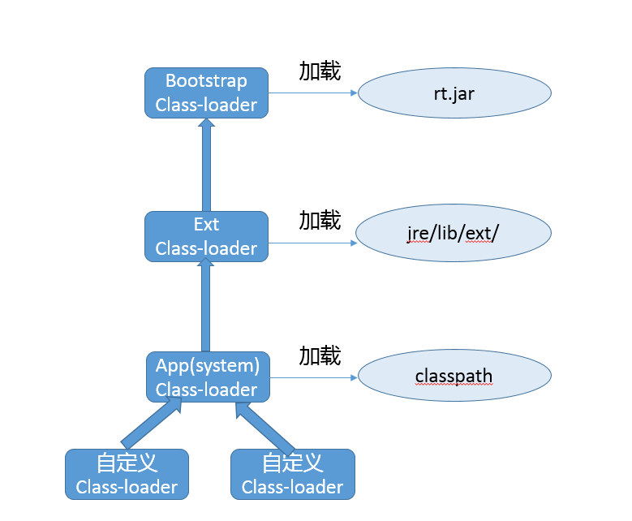
至于前面被问到的双亲委派模型，参考这个结构图更容易理解。试想，如果不同类加载器都自己加载需要的某个类型，那么就会出现多次重复加载，完全是种浪费。
通常类加载机制有三个基本特征：
- 双亲委派模型。但不是所有类加载都遵守这个模型，有的时候，启动类加载器所加载的类型，是可能要加载用户代码的，比如 JDK 内部的 ServiceProvider/ServiceLoader机制，用户可以在标准 API 框架上，提供自己的实现，JDK 也需要提供些默认的参考实现。 例如，Java 中 JNDI、JDBC、文件系统、Cipher 等很多方面，都是利用的这种机制，这种情况就不会用双亲委派模型去加载，而是利用所谓的上下文加载器。
- 可见性，子类加载器可以访问父加载器加载的类型，但是反过来是不允许的，不然，因为缺少必要的隔离，我们就没有办法利用类加载器去实现容器的逻辑。
- 单一性，由于父加载器的类型对于子加载器是可见的，所以父加载器中加载过的类型，就不会在子加载器中重复加载。但是注意，类加载器“邻居”间，同一类型仍然可以被加载多次，因为互相并不可见。
在 JDK 9 中，由于 Jigsaw 项目引入了 Java 平台模块化系统（JPMS），Java SE 的源代码被划分为一系列模块。
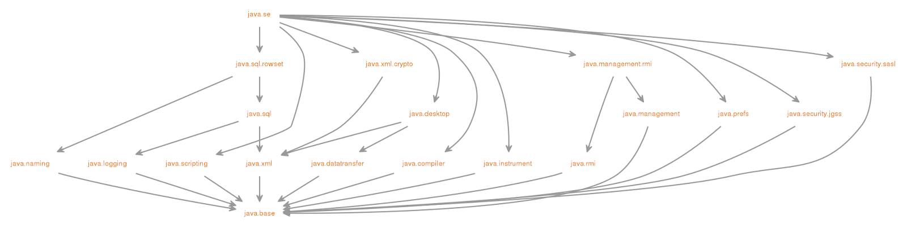
类加载器，类文件容器等都发生了非常大的变化，我这里总结一下：
- 前面提到的 -Xbootclasspath 参数不可用了。API 已经被划分到具体的模块，所以上文中，利用“-Xbootclasspath/p”替换某个 Java 核心类型代码，实际上变成了对相应的模块进行的修补，可以采用下面的解决方案：
首先，确认要修改的类文件已经编译好，并按照对应模块（假设是 java.base）结构存放， 然后，给模块打补丁：
java --patch-module java.base=your_patch yourApp
- 扩展类加载器被重命名为平台类加载器（Platform Class-Loader），而且 extension 机制则被移除。也就意味着，如果我们指定 java.ext.dirs 环境变量，或者 lib/ext 目录存在，JVM 将直接返回错误！建议解决办法就是将其放入 classpath 里。
- 部分不需要 AllPermission 的 Java 基础模块，被降级到平台类加载器中，相应的权限也被更精细粒度地限制起来。
- rt.jar 和 tools.jar 同样是被移除了！JDK 的核心类库以及相关资源，被存储在 jimage 文件中，并通过新的 JRT 文件系统访问，而不是原有的 JAR 文件系统。虽然看起来很惊人，但幸好对于大部分软件的兼容性影响，其实是有限的，更直接地影响是 IDE 等软件，通常只要升级到新版本就可以了。
- 增加了 Layer 的抽象， JVM 启动默认创建 BootLayer，开发者也可以自己去定义和实例化 Layer，可以更加方便的实现类似容器一般的逻辑抽象。
结合了 Layer，目前的 JVM 内部结构就变成了下面的层次，内建类加载器都在 BootLayer 中，其他 Layer 内部有自定义的类加载器，不同版本模块可以同时工作在不同的 Layer。
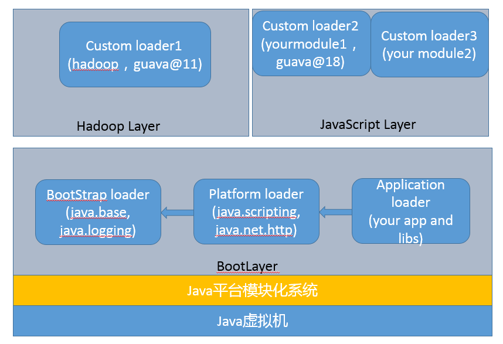
谈到类加载器，绕不过的一个话题是自定义类加载器，常见的场景有：
- 实现类似进程内隔离，类加载器实际上用作不同的命名空间，以提供类似容器、模块化的效果。例如，两个模块依赖于某个类库的不同版本，如果分别被不同的容器加载，就可以互不干扰。这个方面的集大成者是Java EE和OSGI、JPMS等框架。
- 应用需要从不同的数据源获取类定义信息，例如网络数据源，而不是本地文件系统。
- 或者是需要自己操纵字节码，动态修改或者生成类型。
我们可以总体上简单理解自定义类加载过程：
- 通过指定名称，找到其二进制实现，这里往往就是自定义类加载器会“定制”的部分，例如，在特定数据源根据名字获取字节码，或者修改或生成字节码。
- 然后，创建 Class 对象，并完成类加载过程。二进制信息到 Class 对象的转换，通常就依赖defineClass，我们无需自己实现，它是 final 方法。有了 Class 对象，后续完成加载过程就顺理成章了。
具体实现我建议参考这个用例。
我在专栏第 1 讲中，就提到了由于字节码是平台无关抽象，而不是机器码，所以 Java 需要类加载和解释、编译，这些都导致 Java 启动变慢。谈了这么多类加载，有没有什么通用办法，不需要代码和其他工作量，就可以降低类加载的开销呢？
这个，可以有。
- 在第 1 讲中提到的 AOT，相当于直接编译成机器码，降低的其实主要是解释和编译开销。但是其目前还是个试验特性，支持的平台也有限，比如，JDK 9 仅支持 Linux x64，所以局限性太大，先暂且不谈。
- 还有就是较少人知道的 AppCDS（Application Class-Data Sharing），CDS 在 Java 5 中被引进，但仅限于 Bootstrap Class-loader，在 8u40 中实现了 AppCDS，支持其他的类加载器，在目前 2018 年初发布的 JDK 10 中已经开源。
简单来说，AppCDS 基本原理和工作过程是：
首先，JVM 将类信息加载， 解析成为元数据，并根据是否需要修改，将其分类为 Read-Only 部分和 Read-Write 部分。然后，将这些元数据直接存储在文件系统中，作为所谓的 Shared Archive。命令很简单：
Java -Xshare:dump -XX:+UseAppCDS -XX:SharedArchiveFile=<jsa> \
-XX:SharedClassListFile=<classlist> -XX:SharedArchiveConfigFile=<config_file>
第二，在应用程序启动时，指定归档文件，并开启 AppCDS。
Java -Xshare:on -XX:+UseAppCDS -XX:SharedArchiveFile=<jsa> yourApp
通过上面的命令，JVM 会通过内存映射技术，直接映射到相应的地址空间，免除了类加载、解析等各种开销。
AppCDS 改善启动速度非常明显，传统的 Java EE 应用，一般可以提高 20%~30% 以上；实验中使用 Spark KMeans 负载，20 个 slave，可以提高 11% 的启动速度。
与此同时，降低内存 footprint，因为同一环境的 Java 进程间可以共享部分数据结构。前面谈到的两个实验，平均可以减少 10% 以上的内存消耗。
当然，也不是没有局限性，如果恰好大量使用了运行时动态类加载，它的帮助就有限了。
今天我梳理了一下类加载的过程，并针对 Java 新版中类加载机制发生的变化，进行了相对全面的总结，最后介绍了一个改善类加载速度的特性，希望对你有所帮助。
一课一练
关于今天我们讨论的题目你做到心中有数了吗？今天的思考题是，谈谈什么是 Jar Hell 问题？你有遇到过类似情况吗，如何解决呢？�K
第24讲 有哪些方法可以在运行时动态生成一个Java类？
在开始今天的学习前，我建议你先复习一下专栏第 6 讲有关动态代理的内容。作为 Java 基础模块中的内容，考虑到不同基础的同学以及一个循序渐进的学习过程，我当时并没有在源码层面介绍动态代理的实现技术，仅进行了相应的技术比较。但是，有了上一讲的类加载的学习基础后，我想是时候该进行深入分析了。
今天我要问你的问题是，有哪些方法可以在运行时动态生成一个 Java 类？
典型回答
我们可以从常见的 Java 类来源分析，通常的开发过程是，开发者编写 Java 代码，调用 javac 编译成 class 文件，然后通过类加载机制载入 JVM，就成为应用运行时可以使用的 Java 类了。
从上面过程得到启发，其中一个直接的方式是从源码入手，可以利用 Java 程序生成一段源码，然后保存到文件等，下面就只需要解决编译问题了。
有一种笨办法，直接用 ProcessBuilder 之类启动 javac 进程，并指定上面生成的文件作为输入，进行编译。最后，再利用类加载器，在运行时加载即可。
前面的方法，本质上还是在当前程序进程之外编译的，那么还有没有不这么 low 的办法呢？
你可以考虑使用 Java Compiler API，这是 JDK 提供的标准 API，里面提供了与 javac 对等的编译器功能，具体请参考java.compiler相关文档。
进一步思考，我们一直围绕 Java 源码编译成为 JVM 可以理解的字节码，换句话说，只要是符合 JVM 规范的字节码，不管它是如何生成的，是不是都可以被 JVM 加载呢？我们能不能直接生成相应的字节码，然后交给类加载器去加载呢？
当然也可以，不过直接去写字节码难度太大，通常我们可以利用 Java 字节码操纵工具和类库来实现，比如在专栏第 6 讲中提到的ASM、Javassist、cglib 等。
考点分析
虽然曾经被视为黑魔法，但在当前复杂多变的开发环境中，在运行时动态生成逻辑并不是什么罕见的场景。重新审视我们谈到的动态代理，本质上不就是在特定的时机，去修改已有类型实现，或者创建新的类型。
明白了基本思路后，我还是围绕类加载机制进行展开，面试过程中面试官很可能从技术原理或实践的角度考察：
- 字节码和类加载到底是怎么无缝进行转换的？发生在整个类加载过程的哪一步？
- 如何利用字节码操纵技术，实现基本的动态代理逻辑？
- 除了动态代理，字节码操纵技术还有那些应用场景？
知识扩展
首先，我们来理解一下，类从字节码到 Class 对象的转换，在类加载过程中，这一步是通过下面的方法提供的功能，或者 defineClass 的其他本地对等实现。
protected final Class<?> defineClass(String name, byte[] b, int off, int len,
ProtectionDomain protectionDomain)
protected final Class<?> defineClass(String name, java.nio.ByteBuffer b,
ProtectionDomain protectionDomain)
我这里只选取了最基础的两个典型的 defineClass 实现，Java 重载了几个不同的方法。
可以看出，只要能够生成出规范的字节码，不管是作为 byte 数组的形式，还是放到 ByteBuffer 里，都可以平滑地完成字节码到 Java 对象的转换过程。
JDK 提供的 defineClass 方法，最终都是本地代码实现的。
static native Class<?> defineClass1(ClassLoader loader, String name, byte[] b, int off, int len,
ProtectionDomain pd, String source);
static native Class<?> defineClass2(ClassLoader loader, String name, java.nio.ByteBuffer b,
int off, int len, ProtectionDomain pd,
String source);
更进一步，我们来看看 JDK dynamic proxy 的实现代码。你会发现，对应逻辑是实现在 ProxyBuilder 这个静态内部类中，ProxyGenerator 生成字节码，并以 byte 数组的形式保存，然后通过调用 Unsafe 提供的 defineClass 入口。
byte[] proxyClassFile = ProxyGenerator.generateProxyClass(
proxyName, interfaces.toArray(EMPTY_CLASS_ARRAY), accessFlags);
try {
Class<?> pc = UNSAFE.defineClass(proxyName, proxyClassFile,
0, proxyClassFile.length,
loader, null);
reverseProxyCache.sub(pc).putIfAbsent(loader, Boolean.TRUE);
return pc;
} catch (ClassFormatError e) {
// 如果出现 ClassFormatError，很可能是输入参数有问题，比如，ProxyGenerator 有 bug
}
前面理顺了二进制的字节码信息到 Class 对象的转换过程，似乎我们还没有分析如何生成自己需要的字节码，接下来一起来看看相关的字节码操纵逻辑。
JDK 内部动态代理的逻辑，可以参考java.lang.reflect.ProxyGenerator的内部实现。我觉得可以认为这是种另类的字节码操纵技术，其利用了DataOutputStrem提供的能力，配合 hard-coded 的各种 JVM 指令实现方法，生成所需的字节码数组。你可以参考下面的示例代码。
private void codeLocalLoadStore(int lvar, int opcode, int opcode_0,
DataOutputStream out)
throws IOException
{
assert lvar >= 0 && lvar <= 0xFFFF;
// 根据变量数值，以不同格式，dump 操作码
if (lvar <= 3) {
out.writeByte(opcode_0 + lvar);
} else if (lvar <= 0xFF) {
out.writeByte(opcode);
out.writeByte(lvar & 0xFF);
} else {
// 使用宽指令修饰符，如果变量索引不能用无符号 byte
out.writeByte(opc_wide);
out.writeByte(opcode);
out.writeShort(lvar & 0xFFFF);
}
}
这种实现方式的好处是没有太多依赖关系，简单实用，但是前提是你需要懂各种JVM 指令，知道怎么处理那些偏移地址等，实际门槛非常高，所以并不适合大多数的普通开发场景。
幸好，Java 社区专家提供了各种从底层到更高抽象水平的字节码操作类库，我们不需要什么都自己从头做。JDK 内部就集成了 ASM 类库，虽然并未作为公共 API 暴露出来，但是它广泛应用在，如java.lang.instrumentation API 底层实现，或者Lambda Call Site生成的内部逻辑中，这些代码的实现我就不在这里展开了，如果你确实有兴趣或有需要，可以参考类似 LamdaForm 的字节码生成逻辑：java.lang.invoke.InvokerBytecodeGenerator。
从相对实用的角度思考一下，实现一个简单的动态代理，都要做什么？如何使用字节码操纵技术，走通这个过程呢？
对于一个普通的 Java 动态代理，其实现过程可以简化成为：
- 提供一个基础的接口，作为被调用类型（com.mycorp.HelloImpl）和代理类之间的统一入口，如 com.mycorp.Hello。
- 实现InvocationHandler，对代理对象方法的调用，会被分派到其 invoke 方法来真正实现动作。
- 通过 Proxy 类，调用其 newProxyInstance 方法，生成一个实现了相应基础接口的代理类实例，可以看下面的方法签名。
public static Object newProxyInstance(ClassLoader loader,
Class<?>[] interfaces,
InvocationHandler h)
我们分析一下，动态代码生成是具体发生在什么阶段呢？
不错，就是在 newProxyInstance 生成代理类实例的时候。我选取了 JDK 自己采用的 ASM 作为示例，一起来看看用 ASM 实现的简要过程，请参考下面的示例代码片段。
第一步，生成对应的类，其实和我们去写 Java 代码很类似，只不过改为用 ASM 方法和指定参数，代替了我们书写的源码。
ClassWriter cw = new ClassWriter(ClassWriter.COMPUTE_FRAMES);
cw.visit(V1_8, // 指定 Java 版本
ACC_PUBLIC, // 说明是 public 类型
"com/mycorp/HelloProxy", // 指定包和类的名称
null, // 签名，null 表示不是泛型
"java/lang/Object", // 指定父类
new String[]{ "com/mycorp/Hello" }); // 指定需要实现的接口
更进一步，我们可以按照需要为代理对象实例，生成需要的方法和逻辑。
MethodVisitor mv = cw.visitMethod(
ACC_PUBLIC, // 声明公共方法
"sayHello", // 方法名称
"()Ljava/lang/Object;", // 描述符
null, // 签名，null 表示不是泛型
null); // 可能抛出的异常，如果有，则指定字符串数组
mv.visitCode();
// 省略代码逻辑实现细节
cw.visitEnd(); // 结束类字节码生成
上面的代码虽然有些晦涩，但总体还是能多少理解其用意，不同的 visitX 方法提供了创建类型，创建各种方法等逻辑。ASM API，广泛的使用了Visitor模式，如果你熟悉这个模式，就会知道它所针对的场景是将算法和对象结构解耦，非常适合字节码操纵的场合，因为我们大部分情况都是依赖于特定结构修改或者添加新的方法、变量或者类型等。
按照前面的分析，字节码操作最后大都应该是生成 byte 数组，ClassWriter 提供了一个简便的方法。
cw.toByteArray();
然后，就可以进入我们熟知的类加载过程了，我就不再赘述了，如果你对 ASM 的具体用法感兴趣，可以参考这个教程。
最后一个问题，字节码操纵技术，除了动态代理，还可以应用在什么地方？
这个技术似乎离我们日常开发遥远，但其实已经深入到各个方面，也许很多你现在正在使用的框架、工具就应用该技术，下面是我能想到的几个常见领域。
- 各种 Mock 框架
- ORM 框架
- IOC 容器
- 部分 Profiler 工具，或者运行时诊断工具等
- 生成形式化代码的工具
甚至可以认为，字节码操纵技术是工具和基础框架必不可少的部分，大大减少了开发者的负担。
今天我们探讨了更加深入的类加载和字节码操作方面技术。为了理解底层的原理，我选取的例子是比较偏底层的、能力全面的类库，如果实际项目中需要进行基础的字节码操作，可以考虑使用更加高层次视角的类库，例如Byte Buddy等。
一课一练
关于今天我们讨论的题目你做到心中有数了吗？试想，假如我们有这样一个需求，需要添加某个功能，例如对某类型资源如网络通信的消耗进行统计，重点要求是，不开启时必须是**零开销，而不是低开销，**可以利用我们今天谈到的或者相关的技术实现吗？�W
第25讲 谈谈JVM内存区域的划分，哪些区域可能发生OutOfMemoryError
今天，我将从内存管理的角度，进一步探索 Java 虚拟机（JVM）。垃圾收集机制为我们打理了很多繁琐的工作，大大提高了开发的效率，但是，垃圾收集也不是万能的，懂得 JVM 内部的内存结构、工作机制，是设计高扩展性应用和诊断运行时问题的基础，也是 Java 工程师进阶的必备能力。
今天我要问你的问题是，谈谈 JVM 内存区域的划分，哪些区域可能发生 OutOfMemoryError？
典型回答
通常可以把 JVM 内存区域分为下面几个方面，其中，有的区域是以线程为单位，而有的区域则是整个 JVM 进程唯一的。
首先，程序计数器（PC，Program Counter Register）。在 JVM 规范中，每个线程都有它自己的程序计数器，并且任何时间一个线程都只有一个方法在执行，也就是所谓的当前方法。程序计数器会存储当前线程正在执行的 Java 方法的 JVM 指令地址；或者，如果是在执行本地方法，则是未指定值（undefined）。
第二，Java 虚拟机栈（Java Virtual Machine Stack），早期也叫 Java 栈。每个线程在创建时都会创建一个虚拟机栈，其内部保存一个个的栈帧（Stack Frame），对应着一次次的 Java 方法调用。
前面谈程序计数器时，提到了当前方法；同理，在一个时间点，对应的只会有一个活动的栈帧，通常叫作当前帧，方法所在的类叫作当前类。如果在该方法中调用了其他方法，对应的新的栈帧会被创建出来，成为新的当前帧，一直到它返回结果或者执行结束。JVM 直接对 Java 栈的操作只有两个，就是对栈帧的压栈和出栈。
栈帧中存储着局部变量表、操作数（operand）栈、动态链接、方法正常退出或者异常退出的定义等。
第三，堆（Heap），它是 Java 内存管理的核心区域，用来放置 Java 对象实例，几乎所有创建的 Java 对象实例都是被直接分配在堆上。堆被所有的线程共享，在虚拟机启动时，我们指定的“Xmx”之类参数就是用来指定最大堆空间等指标。
理所当然，堆也是垃圾收集器重点照顾的区域，所以堆内空间还会被不同的垃圾收集器进行进一步的细分，最有名的就是新生代、老年代的划分。
第四，方法区（Method Area）。这也是所有线程共享的一块内存区域，用于存储所谓的元（Meta）数据，例如类结构信息，以及对应的运行时常量池、字段、方法代码等。
由于早期的 Hotspot JVM 实现，很多人习惯于将方法区称为永久代（Permanent Generation）。Oracle JDK 8 中将永久代移除，同时增加了元数据区（Metaspace）。
第五，运行时常量池（Run-Time Constant Pool），这是方法区的一部分。如果仔细分析过反编译的类文件结构，你能看到版本号、字段、方法、超类、接口等各种信息，还有一项信息就是常量池。Java 的常量池可以存放各种常量信息，不管是编译期生成的各种字面量，还是需要在运行时决定的符号引用，所以它比一般语言的符号表存储的信息更加宽泛。
第六，本地方法栈（Native Method Stack）。它和 Java 虚拟机栈是非常相似的，支持对本地方法的调用，也是每个线程都会创建一个。在 Oracle Hotspot JVM 中，本地方法栈和 Java 虚拟机栈是在同一块儿区域，这完全取决于技术实现的决定，并未在规范中强制。
考点分析
这是个 JVM 领域的基础题目，我给出的答案依据的是JVM 规范中运行时数据区定义，这也和大多数书籍和资料解读的角度类似。
JVM 内部的概念庞杂，对于初学者比较晦涩，我的建议是在工作之余，还是要去阅读经典书籍，比如我推荐过多次的《深入理解 Java 虚拟机》。
今天这一讲作为 Java 虚拟机内存管理的开篇，我会侧重于：
- 分析广义上的 JVM 内存结构或者说 Java 进程内存结构。
- 谈到 Java 内存模型，不可避免的要涉及 OutOfMemory（OOM）问题，那么在 Java 里面存在哪些种 OOM 的可能性，分别对应哪个内存区域的异常状况呢？
注意，具体 JVM 的内存结构，其实取决于其实现，不同厂商的 JVM，或者同一厂商发布的不同版本，都有可能存在一定差异。我在下面的分析中，还会介绍 Oracle Hotspot JVM 的部分设计变化。
知识扩展
首先，为了让你有个更加直观、清晰的印象，我画了一个简单的内存结构图，里面展示了我前面提到的堆、线程栈等区域，并从数量上说明了什么是线程私有，例如，程序计数器、Java 栈等，以及什么是 Java 进程唯一。另外，还额外划分出了直接内存等区域。
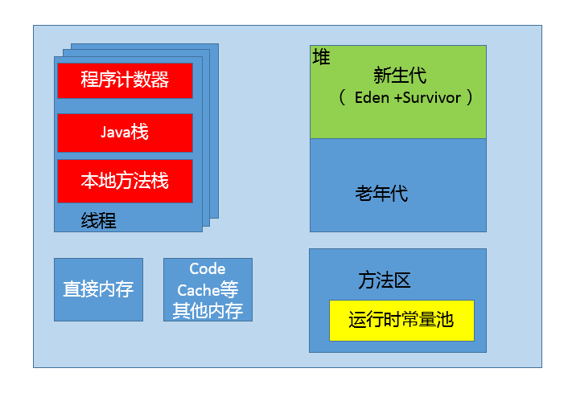
这张图反映了实际中 Java 进程内存占用，与规范中定义的 JVM 运行时数据区之间的差别，它可以看作是运行时数据区的一个超集。毕竟理论上的视角和现实中的视角是有区别的，规范侧重的是通用的、无差别的部分，而对于应用开发者来说，只要是 Java 进程在运行时会占用，都会影响到我们的工程实践。
我这里简要介绍两点区别：
- 直接内存（Direct Memory）区域，它就是我在专栏第 12 讲中谈到的 Direct Buffer 所直接分配的内存，也是个容易出现问题的地方。尽管，在 JVM 工程师的眼中，并不认为它是 JVM 内部内存的一部分，也并未体现 JVM 内存模型中。
- JVM 本身是个本地程序，还需要其他的内存去完成各种基本任务，比如，JIT Compiler 在运行时对热点方法进行编译，就会将编译后的方法储存在 Code Cache 里面；GC 等功能需要运行在本地线程之中，类似部分都需要占用内存空间。这些是实现 JVM JIT 等功能的需要，但规范中并不涉及。
如果深入到 JVM 的实现细节，你会发现一些结论似乎有些模棱两可，比如：
- Java 对象是不是都创建在堆上的呢？
我注意到有一些观点，认为通过逃逸分析，JVM 会在栈上分配那些不会逃逸的对象，这在理论上是可行的，但是取决于 JVM 设计者的选择。据我所知，Oracle Hotspot JVM 中并未这么做，这一点在逃逸分析相关的文档里已经说明，所以可以明确所有的对象实例都是创建在堆上。
- 目前很多书籍还是基于 JDK 7 以前的版本，JDK 已经发生了很大变化，Intern 字符串的缓存和静态变量曾经都被分配在永久代上，而永久代已经被元数据区取代。但是，Intern 字符串缓存和静态变量并不是被转移到元数据区，而是直接在堆上分配，所以这一点同样符合前面一点的结论：对象实例都是分配在堆上。
接下来，我们来看看什么是 OOM 问题，它可能在哪些内存区域发生？
首先，OOM 如果通俗点儿说，就是 JVM 内存不够用了，javadoc 中对OutOfMemoryError的解释是，没有空闲内存，并且垃圾收集器也无法提供更多内存。
这里面隐含着一层意思是，在抛出 OutOfMemoryError 之前，通常垃圾收集器会被触发，尽其所能去清理出空间，例如：
- 我在[专栏第 4 讲]的引用机制分析中，已经提到了 JVM 会去尝试回收软引用指向的对象等。
- 在java.nio.BIts.reserveMemory() 方法中，我们能清楚的看到，System.gc() 会被调用，以清理空间，这也是为什么在大量使用 NIO 的 Direct Buffer 之类时，通常建议不要加下面的参数，毕竟是个最后的尝试，有可能避免一定的内存不足问题。
-XX:+DisableExplictGC
当然，也不是在任何情况下垃圾收集器都会被触发的，比如，我们去分配一个超大对象，类似一个超大数组超过堆的最大值，JVM 可以判断出垃圾收集并不能解决这个问题，所以直接抛出 OutOfMemoryError。
从我前面分析的数据区的角度，除了程序计数器，其他区域都有可能会因为可能的空间不足发生 OutOfMemoryError，简单总结如下：
- 堆内存不足是最常见的 OOM 原因之一，抛出的错误信息是“java.lang.OutOfMemoryError:Java heap space”，原因可能千奇百怪，例如，可能存在内存泄漏问题；也很有可能就是堆的大小不合理，比如我们要处理比较可观的数据量，但是没有显式指定 JVM 堆大小或者指定数值偏小；或者出现 JVM 处理引用不及时，导致堆积起来，内存无法释放等。
- 而对于 Java 虚拟机栈和本地方法栈，这里要稍微复杂一点。如果我们写一段程序不断的进行递归调用，而且没有退出条件，就会导致不断地进行压栈。类似这种情况，JVM 实际会抛出 StackOverFlowError；当然，如果 JVM 试图去扩展栈空间的的时候失败，则会抛出 OutOfMemoryError。
- 对于老版本的 Oracle JDK，因为永久代的大小是有限的，并且 JVM 对永久代垃圾回收（如，常量池回收、卸载不再需要的类型）非常不积极，所以当我们不断添加新类型的时候，永久代出现 OutOfMemoryError 也非常多见，尤其是在运行时存在大量动态类型生成的场合；类似 Intern 字符串缓存占用太多空间，也会导致 OOM 问题。对应的异常信息，会标记出来和永久代相关：“java.lang.OutOfMemoryError: PermGen space”。
- 随着元数据区的引入，方法区内存已经不再那么窘迫，所以相应的 OOM 有所改观，出现 OOM，异常信息则变成了：“java.lang.OutOfMemoryError: Metaspace”。
- 直接内存不足，也会导致 OOM，这个已经[专栏第 11 讲]介绍过。
今天是 JVM 内存部分的第一讲，算是我们先进行了热身准备，我介绍了主要的内存区域，以及在不同版本 Hotspot JVM 内部的变化，并且分析了各区域是否可能产生 OutOfMemoryError，以及 OOME 发生的典型情况。
一课一练
关于今天我们讨论的题目你做到心中有数了吗？今天的思考题是，我在试图分配一个 100M bytes 大数组的时候发生了 OOME，但是 GC 日志显示，明明堆上还有远不止 100M 的空间，你觉得可能问题的原因是什么？想要弄清楚这个问题，还需要什么信息呢？�D
第26讲 如何监控和诊断JVM堆内和堆外内存使用？
上一讲我介绍了 JVM 内存区域的划分，总结了相关的一些概念，今天我将结合 JVM 参数、工具等方面，进一步分析 JVM 内存结构，包括外部资料相对较少的堆外部分。
今天我要问你的问题是，如何监控和诊断 JVM 堆内和堆外内存使用？
典型回答
了解 JVM 内存的方法有很多，具体能力范围也有区别，简单总结如下：
- 可以使用综合性的图形化工具，如 JConsole、VisualVM（注意，从 Oracle JDK 9 开始，VisualVM 已经不再包含在 JDK 安装包中）等。这些工具具体使用起来相对比较直观，直接连接到 Java 进程，然后就可以在图形化界面里掌握内存使用情况。
以 JConsole 为例，其内存页面可以显示常见的堆内存和各种堆外部分使用状态。
- 也可以使用命令行工具进行运行时查询，如 jstat 和 jmap 等工具都提供了一些选项，可以查看堆、方法区等使用数据。
- 或者，也可以使用 jmap 等提供的命令，生成堆转储（Heap Dump）文件，然后利用 jhat 或 Eclipse MAT 等堆转储分析工具进行详细分析。
- 如果你使用的是 Tomcat、Weblogic 等 Java EE 服务器，这些服务器同样提供了内存管理相关的功能。
- 另外，从某种程度上来说，GC 日志等输出，同样包含着丰富的信息。
这里有一个相对特殊的部分，就是是堆外内存中的直接内存，前面的工具基本不适用，可以使用 JDK 自带的 Native Memory Tracking（NMT）特性，它会从 JVM 本地内存分配的角度进行解读。
考点分析
今天选取的问题是 Java 内存管理相关的基础实践，对于普通的内存问题，掌握上面我给出的典型工具和方法就足够了。这个问题也可以理解为考察两个基本方面能力，第一，你是否真的理解了 JVM 的内部结构；第二，具体到特定内存区域，应该使用什么工具或者特性去定位，可以用什么参数调整。
对于 JConsole 等工具的使用细节，我在专栏里不再赘述，如果你还没有接触过，你可以参考JConsole 官方教程。我这里特别推荐Java Mission Control（JMC），这是一个非常强大的工具，不仅仅能够使用JMX进行普通的管理、监控任务，还可以配合Java Flight Recorder（JFR）技术，以非常低的开销，收集和分析 JVM 底层的 Profiling 和事件等信息。目前， Oracle 已经将其开源，如果你有兴趣请可以查看 OpenJDK 的Mission Control项目。
关于内存监控与诊断，我会在知识扩展部分结合 JVM 参数和特性，尽量从庞杂的概念和 JVM 参数选项中，梳理出相对清晰的框架：
- 细化对各部分内存区域的理解，堆内结构是怎样的？如何通过参数调整？
- 堆外内存到底包括哪些部分？具体大小受哪些因素影响？
知识扩展
今天的分析，我会结合相关 JVM 参数和工具，进行对比以加深你对内存区域更细粒度的理解。
首先，堆内部是什么结构？
对于堆内存，我在上一讲介绍了最常见的新生代和老年代的划分，其内部结构随着 JVM 的发展和新 GC 方式的引入，可以有不同角度的理解，下图就是年代视角的堆结构示意图。
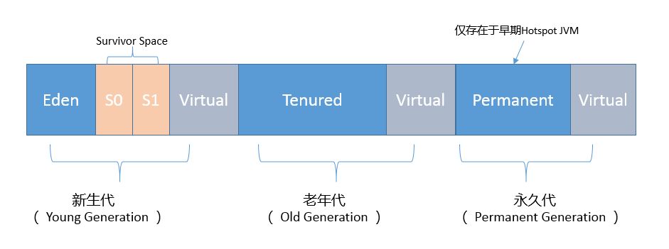
你可以看到，按照通常的 GC 年代方式划分，Java 堆内分为：
\1. 新生代
新生代是大部分对象创建和销毁的区域，在通常的 Java 应用中，绝大部分对象生命周期都是很短暂的。其内部又分为 Eden 区域，作为对象初始分配的区域；两个 Survivor，有时候也叫 from、to 区域，被用来放置从 Minor GC 中保留下来的对象。
-
JVM 会随意选取一个 Survivor 区域作为“to”，然后会在 GC 过程中进行区域间拷贝，也就是将 Eden 中存活下来的对象和 from 区域的对象，拷贝到这个“to”区域。这种设计主要是为了防止内存的碎片化，并进一步清理无用对象。
-
从内存模型而不是垃圾收集的角度，对 Eden 区域继续进行划分，Hotspot JVM 还有一个概念叫做 Thread Local Allocation Buffer（TLAB），据我所知所有 OpenJDK 衍生出来的 JVM 都提供了 TLAB 的设计。这是 JVM 为每个线程分配的一个私有缓存区域，否则，多线程同时分配内存时，为避免操作同一地址，可能需要使用加锁等机制，进而影响分配速度，你可以参考下面的示意图。从图中可以看出，TLAB 仍然在堆上，它是分配在 Eden 区域内的。其内部结构比较直观易懂，start、end 就是起始地址，top（指针）则表示已经分配到哪里了。所以我们分配新对象，JVM 就会移动 top，当 top 和 end 相遇时，即表示该缓存已满，JVM 会试图再从 Eden 里分配一块儿。
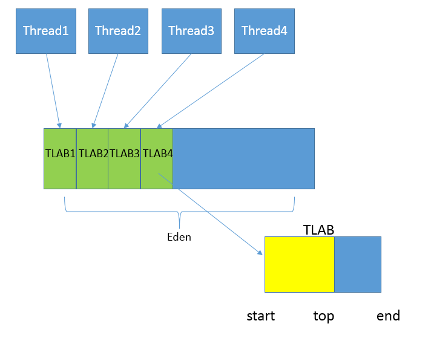
\2. 老年代
放置长生命周期的对象，通常都是从 Survivor 区域拷贝过来的对象。当然，也有特殊情况，我们知道普通的对象会被分配在 TLAB 上；如果对象较大，JVM 会试图直接分配在 Eden 其他位置上；如果对象太大，完全无法在新生代找到足够长的连续空闲空间，JVM 就会直接分配到老年代。
\3. 永久代
这部分就是早期 Hotspot JVM 的方法区实现方式了，储存 Java 类元数据、常量池、Intern 字符串缓存，在 JDK 8 之后就不存在永久代这块儿了。
那么，我们如何利用 JVM 参数，直接影响堆和内部区域的大小呢？我来简单总结一下：
- 最大堆体积
-Xmx value
- 初始的最小堆体积
-Xms value
- 老年代和新生代的比例
-XX:NewRatio=value
默认情况下，这个数值是 2，意味着老年代是新生代的 2 倍大；换句话说，新生代是堆大小的 1/3。
- 当然，也可以不用比例的方式调整新生代的大小，直接指定下面的参数，设定具体的内存大小数值。
-XX:NewSize=value
- Eden 和 Survivor 的大小是按照比例设置的，如果 SurvivorRatio 是 8，那么 Survivor 区域就是 Eden 的 1/8 大小，也就是新生代的 1/10，因为 YoungGen=Eden + 2*Survivor，JVM 参数格式是
-XX:SurvivorRatio=value
- TLAB 当然也可以调整，JVM 实现了复杂的适应策略，如果你有兴趣可以参考这篇说明。
不知道你有没有注意到，我在年代视角的堆结构示意图也就是第一张图中，还标记出了 Virtual 区域，这是块儿什么区域呢？
在 JVM 内部，如果 Xms 小于 Xmx，堆的大小并不会直接扩展到其上限，也就是说保留的空间（reserved）大于实际能够使用的空间（committed）。当内存需求不断增长的时候，JVM 会逐渐扩展新生代等区域的大小，所以 Virtual 区域代表的就是暂时不可用（uncommitted）的空间。
第二，分析完堆内空间，我们一起来看看 JVM 堆外内存到底包括什么？
在 JMC 或 JConsole 的内存管理界面，会统计部分非堆内存，但提供的信息相对有限，下图就是 JMC 活动内存池的截图。
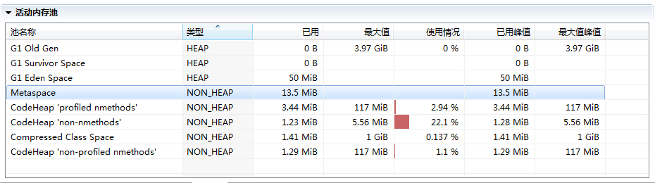
接下来我会依赖 NMT 特性对 JVM 进行分析，它所提供的详细分类信息，非常有助于理解 JVM 内部实现。
首先来做些准备工作，开启 NMT 并选择 summary 模式，
-XX:NativeMemoryTracking=summary
为了方便获取和对比 NMT 输出，选择在应用退出时打印 NMT 统计信息
-XX:+UnlockDiagnosticVMOptions -XX:+PrintNMTStatistics
然后，执行一个简单的在标准输出打印 HelloWorld 的程序，就可以得到下面的输出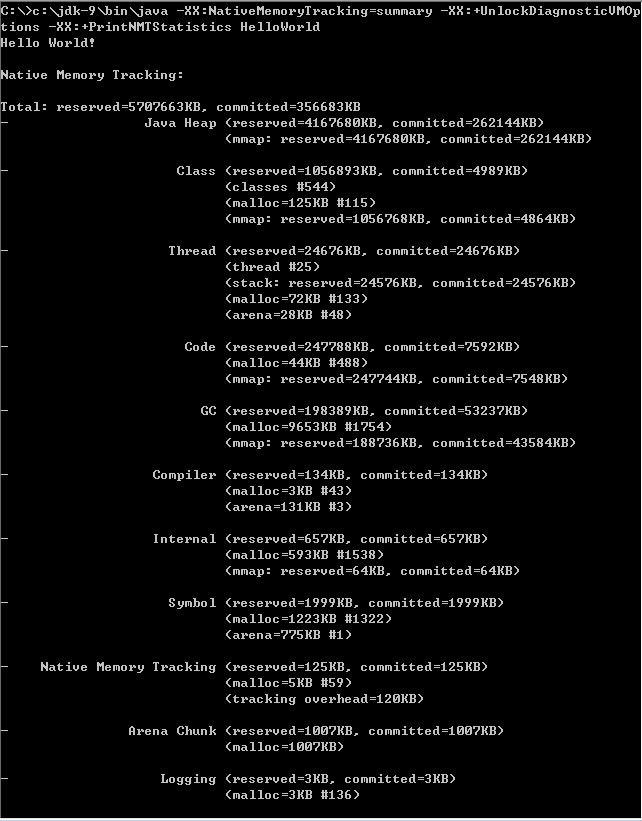
我来仔细分析一下，NMT 所表征的 JVM 本地内存使用：
- 第一部分非常明显是 Java 堆，我已经分析过使用什么参数调整，不再赘述。
- 第二部分是 Class 内存占用，它所统计的就是 Java 类元数据所占用的空间，JVM 可以通过类似下面的参数调整其大小：
-XX:MaxMetaspaceSize=value
对于本例，因为 HelloWorld 没有什么用户类库，所以其内存占用主要是启动类加载器（Bootstrap）加载的核心类库。你可以使用下面的小技巧，调整启动类加载器元数据区，这主要是为了对比以加深理解，也许只有在 hack JDK 时才有实际意义。
-XX:InitialBootClassLoaderMetaspaceSize=30720
- 下面是 Thread，这里既包括 Java 线程，如程序主线程、Cleaner 线程等，也包括 GC 等本地线程。你有没有注意到，即使是一个 HelloWorld 程序，这个线程数量竟然还有 25。似乎有很多浪费，设想我们要用 Java 作为 Serverless 运行时，每个 function 是非常短暂的，如何降低线程数量呢？ 如果你充分理解了专栏讲解的内容，对 JVM 内部有了充分理解，思路就很清晰了： JDK 9 的默认 GC 是 G1，虽然它在较大堆场景表现良好，但本身就会比传统的 Parallel GC 或者 Serial GC 之类复杂太多，所以要么降低其并行线程数目，要么直接切换 GC 类型； JIT 编译默认是开启了 TieredCompilation 的，将其关闭，那么 JIT 也会变得简单，相应本地线程也会减少。 我们来对比一下，这是默认参数情况的输出：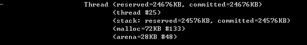
下面是替换了默认 GC，并关闭 TieredCompilation 的命令行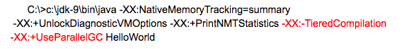
得到的统计信息如下，线程数目从 25 降到了 17，消耗的内存也下降了大概 1/3。
- 接下来是 Code 统计信息，显然这是 CodeCache 相关内存，也就是 JIT compiler 存储编译热点方法等信息的地方，JVM 提供了一系列参数可以限制其初始值和最大值等，例如：
-XX:InitialCodeCacheSize=value
-XX:ReservedCodeCacheSize=value
你可以设置下列 JVM 参数，也可以只设置其中一个，进一步判断不同参数对 CodeCache 大小的影响。
很明显，CodeCache 空间下降非常大，这是因为我们关闭了复杂的 TieredCompilation，而且还限制了其初始大小。
- 下面就是 GC 部分了，就像我前面介绍的，G1 等垃圾收集器其本身的设施和数据结构就非常复杂和庞大，例如 Remembered Set 通常都会占用 20%~30% 的堆空间。如果我把 GC 明确修改为相对简单的 Serial GC，会有什么效果呢？
使用命令：
-XX:+UseSerialGC
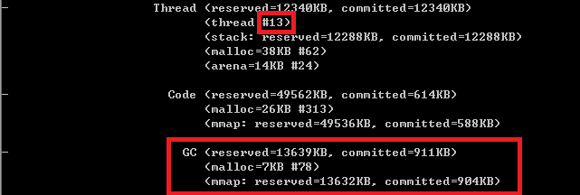
可见，不仅总线程数大大降低（25 → 13），而且 GC 设施本身的内存开销就少了非常多。据我所知，AWS Lambda 中 Java 运行时就是使用的 Serial GC，可以大大降低单个 function 的启动和运行开销。
- Compiler 部分，就是 JIT 的开销，显然关闭 TieredCompilation 会降低内存使用。
- 其他一些部分占比都非常低，通常也不会出现内存使用问题，请参考官方文档。唯一的例外就是 Internal（JDK 11 以后在 Other 部分）部分，其统计信息包含着 Direct Buffer 的直接内存，这其实是堆外内存中比较敏感的部分，很多堆外内存 OOM 就发生在这里，请参考专栏第 12 讲的处理步骤。原则上 Direct Buffer 是不推荐频繁创建或销毁的，如果你怀疑直接内存区域有问题，通常可以通过类似 instrument 构造函数等手段，排查可能的问题。
JVM 内部结构就介绍到这里，主要目的是为了加深理解，很多方面只有在定制或调优 JVM 运行时才能真正涉及，随着微服务和 Serverless 等技术的兴起，JDK 确实存在着为新特征的工作负载进行定制的需求。
今天我结合 JVM 参数和特性，系统地分析了 JVM 堆内和堆外内存结构，相信你一定对 JVM 内存结构有了比较深入的了解，在定制 Java 运行时或者处理 OOM 等问题的时候，思路也会更加清晰。JVM 问题千奇百怪，如果你能快速将问题缩小，大致就能清楚问题可能出在哪里，例如如果定位到问题可能是堆内存泄漏，往往就已经有非常清晰的思路和工具可以去解决了。
一课一练
关于今天我们讨论的题目你做到心中有数了吗？今天的思考题是，如果用程序的方式而不是工具，对 Java 内存使用进行监控，有哪些技术可以做到?�6
第27讲 Java常见的垃圾收集器有哪些？
垃圾收集机制是 Java 的招牌能力，极大地提高了开发效率。如今，垃圾收集几乎成为现代语言的标配，即使经过如此长时间的发展， Java 的垃圾收集机制仍然在不断的演进中，不同大小的设备、不同特征的应用场景，对垃圾收集提出了新的挑战，这当然也是面试的热点。
今天我要问你的问题是，Java 常见的垃圾收集器有哪些？
典型回答
实际上，垃圾收集器（GC，Garbage Collector）是和具体 JVM 实现紧密相关的，不同厂商（IBM、Oracle），不同版本的 JVM，提供的选择也不同。接下来，我来谈谈最主流的 Oracle JDK。
- Serial GC，它是最古老的垃圾收集器，“Serial”体现在其收集工作是单线程的，并且在进行垃圾收集过程中，会进入臭名昭著的“Stop-The-World”状态。当然，其单线程设计也意味着精简的 GC 实现，无需维护复杂的数据结构，初始化也简单，所以一直是 Client 模式下 JVM 的默认选项。 从年代的角度，通常将其老年代实现单独称作 Serial Old，它采用了标记 - 整理（Mark-Compact）算法，区别于新生代的复制算法。 Serial GC 的对应 JVM 参数是：
-XX:+UseSerialGC
- ParNew GC，很明显是个新生代 GC 实现，它实际是 Serial GC 的多线程版本，最常见的应用场景是配合老年代的 CMS GC 工作，下面是对应参数
-XX:+UseConcMarkSweepGC -XX:+UseParNewGC
- CMS（Concurrent Mark Sweep） GC，基于标记 - 清除（Mark-Sweep）算法，设计目标是尽量减少停顿时间，这一点对于 Web 等反应时间敏感的应用非常重要，一直到今天，仍然有很多系统使用 CMS GC。但是，CMS 采用的标记 - 清除算法，存在着内存碎片化问题，所以难以避免在长时间运行等情况下发生 full GC，导致恶劣的停顿。另外，既然强调了并发（Concurrent），CMS 会占用更多 CPU 资源，并和用户线程争抢。
- Parrallel GC，在早期 JDK 8 等版本中，它是 server 模式 JVM 的默认 GC 选择，也被称作是吞吐量优先的 GC。它的算法和 Serial GC 比较相似，尽管实现要复杂的多，其特点是新生代和老年代 GC 都是并行进行的，在常见的服务器环境中更加高效。 开启选项是：
-XX:+UseParallelGC
另外，Parallel GC 引入了开发者友好的配置项，我们可以直接设置暂停时间或吞吐量等目标，JVM 会自动进行适应性调整，例如下面参数：
-XX:MaxGCPauseMillis=value
-XX:GCTimeRatio=N // GC 时间和用户时间比例 = 1 / (N+1)
- G1 GC 这是一种兼顾吞吐量和停顿时间的 GC 实现，是 Oracle JDK 9 以后的默认 GC 选项。G1 可以直观的设定停顿时间的目标，相比于 CMS GC，G1 未必能做到 CMS 在最好情况下的延时停顿，但是最差情况要好很多。 G1 GC 仍然存在着年代的概念，但是其内存结构并不是简单的条带式划分，而是类似棋盘的一个个 region。Region 之间是复制算法，但整体上实际可看作是标记 - 整理（Mark-Compact）算法，可以有效地避免内存碎片，尤其是当 Java 堆非常大的时候，G1 的优势更加明显。 G1 吞吐量和停顿表现都非常不错，并且仍然在不断地完善，与此同时 CMS 已经在 JDK 9 中被标记为废弃（deprecated），所以 G1 GC 值得你深入掌握。
考点分析
今天的问题是考察你对 GC 的了解，GC 是 Java 程序员的面试常见题目，但是并不是每个人都有机会或者必要对 JVM、GC 进行深入了解，我前面的总结是为不熟悉这部分内容的同学提供一个整体的印象。
对于垃圾收集，面试官可以循序渐进从理论、实践各种角度深入，也未必是要求面试者什么都懂。但如果你懂得原理，一定会成为面试中的加分项。在今天的讲解中，我侧重介绍比较通用、基础性的部分：
- 垃圾收集的算法有哪些？如何判断一个对象是否可以回收？
- 垃圾收集器工作的基本流程。
另外，Java 一直处于非常迅速的发展之中，在最新的 JDK 实现中，还有多种新的 GC，我会在最后补充，除了前面提到的垃圾收集器，看看还有哪些值得关注的选择。
知识扩展
垃圾收集的原理和基础概念
第一，自动垃圾收集的前提是清楚哪些内存可以被释放。这一点可以结合我前面对 Java 类加载和内存结构的分析，来思考一下。
主要就是两个方面，最主要部分就是对象实例，都是存储在堆上的；还有就是方法区中的元数据等信息，例如类型不再使用，卸载该 Java 类似乎是很合理的。
对于对象实例收集，主要是两种基本算法，引用计数和可达性分析。
- 引用计数算法，顾名思义，就是为对象添加一个引用计数，用于记录对象被引用的情况，如果计数为 0，即表示对象可回收。这是很多语言的资源回收选择，例如因人工智能而更加火热的 Python，它更是同时支持引用计数和垃圾收集机制。具体哪种最优是要看场景的，业界有大规模实践中仅保留引用计数机制，以提高吞吐量的尝试。 Java 并没有选择引用计数，是因为其存在一个基本的难题，也就是很难处理循环引用关系。
- 另外就是 Java 选择的可达性分析，Java 的各种引用关系，在某种程度上，将可达性问题还进一步复杂化，具体请参考专栏第 4 讲，这种类型的垃圾收集通常叫作追踪性垃圾收集（Tracing Garbage Collection）。其原理简单来说，就是将对象及其引用关系看作一个图，选定活动的对象作为 GC Roots，然后跟踪引用链条，如果一个对象和 GC Roots 之间不可达，也就是不存在引用链条，那么即可认为是可回收对象。JVM 会把虚拟机栈和本地方法栈中正在引用的对象、静态属性引用的对象和常量，作为 GC Roots。
方法区无用元数据的回收比较复杂，我简单梳理一下。还记得我对类加载器的分类吧，一般来说初始化类加载器加载的类型是不会进行类卸载（unload）的；而普通的类型的卸载，往往是要求相应自定义类加载器本身被回收，所以大量使用动态类型的场合，需要防止元数据区（或者早期的永久代）不会 OOM。在 8u40 以后的 JDK 中，下面参数已经是默认的：
-XX:+ClassUnloadingWithConcurrentMark
第二，常见的垃圾收集算法，我认为总体上有个了解，理解相应的原理和优缺点，就已经足够了，其主要分为三类：
- 复制（Copying）算法，我前面讲到的新生代 GC，基本都是基于复制算法，过程就如专栏上一讲所介绍的，将活着的对象复制到 to 区域，拷贝过程中将对象顺序放置，就可以避免内存碎片化。 这么做的代价是，既然要进行复制，既要提前预留内存空间，有一定的浪费；另外，对于 G1 这种分拆成为大量 region 的 GC，复制而不是移动，意味着 GC 需要维护 region 之间对象引用关系，这个开销也不小，不管是内存占用或者时间开销。
- 标记 - 清除（Mark-Sweep）算法，首先进行标记工作，标识出所有要回收的对象，然后进行清除。这么做除了标记、清除过程效率有限，另外就是不可避免的出现碎片化问题，这就导致其不适合特别大的堆；否则，一旦出现 Full GC，暂停时间可能根本无法接受。
- 标记 - 整理（Mark-Compact），类似于标记 - 清除，但为避免内存碎片化，它会在清理过程中将对象移动，以确保移动后的对象占用连续的内存空间。
注意，这些只是基本的算法思路，实际 GC 实现过程要复杂的多，目前还在发展中的前沿 GC 都是复合算法，并且并行和并发兼备。
如果对这方面的算法有兴趣，可以参考一本比较有意思的书《垃圾回收的算法与实现》，虽然其内容并不是围绕 Java 垃圾收集，但是对通用算法讲解比较形象。
垃圾收集过程的理解
我在专栏上一讲对堆结构进行了比较详细的划分，在垃圾收集的过程，对应到 Eden、Survivor、Tenured 等区域会发生什么变化呢？
这实际上取决于具体的 GC 方式，先来熟悉一下通常的垃圾收集流程，我画了一系列示意图，希望能有助于你理解清楚这个过程。
第一，Java 应用不断创建对象，通常都是分配在 Eden 区域，当其空间占用达到一定阈值时，触发 minor GC。仍然被引用的对象（绿色方块）存活下来，被复制到 JVM 选择的 Survivor 区域，而没有被引用的对象（黄色方块）则被回收。注意，我给存活对象标记了“数字 1”，这是为了表明对象的存活时间。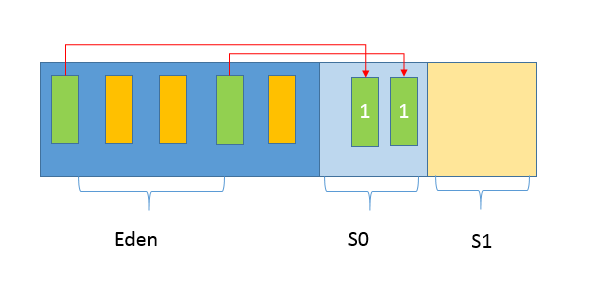
第二， 经过一次 Minor GC，Eden 就会空闲下来，直到再次达到 Minor GC 触发条件，这时候，另外一个 Survivor 区域则会成为 to 区域，Eden 区域的存活对象和 From 区域对象，都会被复制到 to 区域，并且存活的年龄计数会被加 1。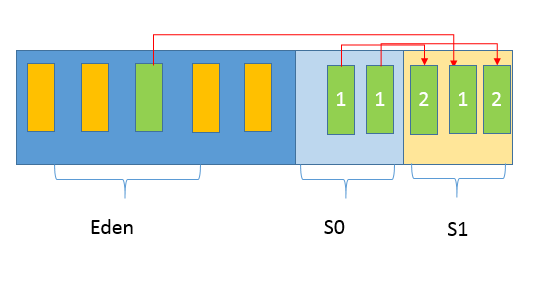
第三， 类似第二步的过程会发生很多次，直到有对象年龄计数达到阈值，这时候就会发生所谓的晋升（Promotion）过程，如下图所示，超过阈值的对象会被晋升到老年代。这个阈值是可以通过参数指定：
-XX:MaxTenuringThreshold=<N>
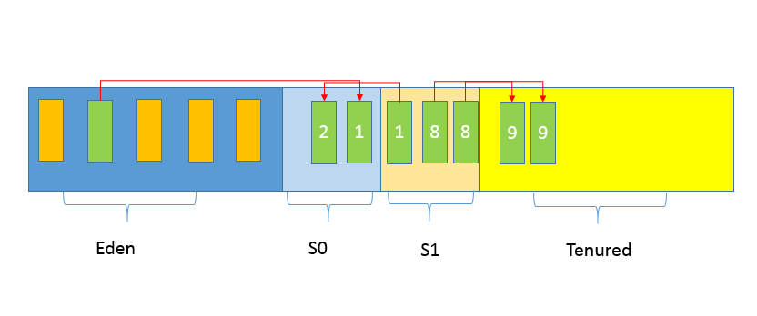
后面就是老年代 GC，具体取决于选择的 GC 选项，对应不同的算法。下面是一个简单标记 - 整理算法过程示意图，老年代中的无用对象被清除后， GC 会将对象进行整理，以防止内存碎片化。
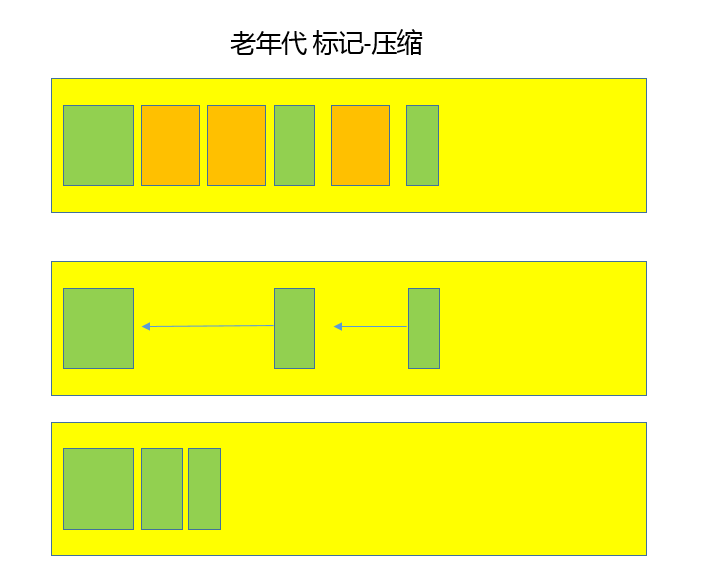
通常我们把老年代 GC 叫作 Major GC，将对整个堆进行的清理叫作 Full GC，但是这个也没有那么绝对，因为不同的老年代 GC 算法其实表现差异很大，例如 CMS，“concurrent”就体现在清理工作是与工作线程一起并发运行的。
GC 的新发展
GC 仍然处于飞速发展之中，目前的默认选项 G1 GC 在不断的进行改进，很多我们原来认为的缺点，例如串行的 Full GC、Card Table 扫描的低效等，都已经被大幅改进，例如， JDK 10 以后，Full GC 已经是并行运行，在很多场景下，其表现还略优于 Parallel GC 的并行 Full GC 实现。
即使是 Serial GC，虽然比较古老，但是简单的设计和实现未必就是过时的，它本身的开销，不管是 GC 相关数据结构的开销，还是线程的开销，都是非常小的，所以随着云计算的兴起，在 Serverless 等新的应用场景下，Serial GC 找到了新的舞台。
比较不幸的是 CMS GC，因为其算法的理论缺陷等原因，虽然现在还有非常大的用户群体，但是已经被标记为废弃，如果没有组织主动承担 CMS 的维护，很有可能会在未来版本移除。
如果你有关注目前尚处于开发中的 JDK 11，你会发现，JDK 又增加了两种全新的 GC 方式，分别是：
- Epsilon GC，简单说就是个不做垃圾收集的 GC，似乎有点奇怪，有的情况下，例如在进行性能测试的时候，可能需要明确判断 GC 本身产生了多大的开销，这就是其典型应用场景。
- ZGC，这是 Oracle 开源出来的一个超级 GC 实现，具备令人惊讶的扩展能力，比如支持 T bytes 级别的堆大小，并且保证绝大部分情况下，延迟都不会超过 10 ms。虽然目前还处于实验阶段，仅支持 Linux 64 位的平台，但其已经表现出的能力和潜力都非常令人期待。
当然，其他厂商也提供了各种独具一格的 GC 实现，例如比较有名的低延迟 GC，Zing和Shenandoah等，有兴趣请参考我提供的链接。
今天，作为 GC 系列的第一讲，我从整体上梳理了目前的主流 GC 实现，包括基本原理和算法，并结合我前面介绍过的内存结构，对简要的垃圾收集过程进行了介绍，希望能够对你的相关实践有所帮助。
一课一练
关于今天我们讨论的题目你做到心中有数了吗？今天谈了一堆的理论，思考一个实践中的问题，你通常使用什么参数去打开 GC 日志呢？还会额外添加哪些选项？�(
第28讲 谈谈你的GC调优思路
我发现，目前不少外部资料对 G1 的介绍大多还停留在 JDK 7 或更早期的实现，很多结论已经存在较大偏差，甚至一些过去的 GC 选项已经不再推荐使用。所以，今天我会选取新版 JDK 中的默认 G1 GC 作为重点进行详解，并且我会从调优实践的角度，分析典型场景和调优思路。下面我们一起来更新下这方面的知识。
今天我要问你的问题是，谈谈你的 GC 调优思路？
典型回答
谈到调优，这一定是针对特定场景、特定目的的事情， 对于 GC 调优来说，首先就需要清楚调优的目标是什么？从性能的角度看，通常关注三个方面，内存占用（footprint）、延时（latency）和吞吐量（throughput），大多数情况下调优会侧重于其中一个或者两个方面的目标，很少有情况可以兼顾三个不同的角度。当然，除了上面通常的三个方面，也可能需要考虑其他 GC 相关的场景，例如，OOM 也可能与不合理的 GC 相关参数有关；或者，应用启动速度方面的需求，GC 也会是个考虑的方面。
基本的调优思路可以总结为：
- 理解应用需求和问题，确定调优目标。假设，我们开发了一个应用服务，但发现偶尔会出现性能抖动，出现较长的服务停顿。评估用户可接受的响应时间和业务量，将目标简化为，希望 GC 暂停尽量控制在 200ms 以内，并且保证一定标准的吞吐量。
- 掌握 JVM 和 GC 的状态，定位具体的问题，确定真的有 GC 调优的必要。具体有很多方法，比如，通过 jstat 等工具查看 GC 等相关状态，可以开启 GC 日志，或者是利用操作系统提供的诊断工具等。例如，通过追踪 GC 日志，就可以查找是不是 GC 在特定时间发生了长时间的暂停，进而导致了应用响应不及时。
- 这里需要思考，选择的 GC 类型是否符合我们的应用特征，如果是，具体问题表现在哪里，是 Minor GC 过长，还是 Mixed GC 等出现异常停顿情况；如果不是，考虑切换到什么类型，如 CMS 和 G1 都是更侧重于低延迟的 GC 选项。
- 通过分析确定具体调整的参数或者软硬件配置。
- 验证是否达到调优目标，如果达到目标，即可以考虑结束调优；否则，重复完成分析、调整、验证这个过程。
考点分析
今天考察的 GC 调优问题是 JVM 调优的一个基础方面，很多 JVM 调优需求，最终都会落实在 GC 调优上或者与其相关，我提供的是一个常见的思路。
真正快速定位和解决具体问题，还是需要对 JVM 和 GC 知识的掌握，以及实际调优经验的总结，有的时候甚至是源自经验积累的直觉判断。面试官可能会继续问项目中遇到的真实问题，如果你能清楚、简要地介绍其上下文，然后将诊断思路和调优实践过程表述出来，会是个很好的加分项。
专栏虽然无法提供具体的项目经验，但是可以帮助你掌握常见的调优思路和手段，这不管是面试还是在实际工作中都是很有帮助的。另外，我会还会从下面不同角度进行补充：
- 上一讲中我已经谈到，涉及具体的 GC 类型，JVM 的实际表现要更加复杂。目前，G1 已经成为新版 JDK 的默认选择，所以值得你去深入理解。
- 因为 G1 GC 一直处在快速发展之中，我会侧重它的演进变化，尤其是行为和配置相关的变化。并且，同样是因为 JVM 的快速发展，即使是收集 GC 日志等方面也发生了较大改进，这也是为什么我在上一讲留给你的思考题是有关日志相关选项，看完讲解相信你会很惊讶。
- 从 GC 调优实践的角度，理解通用问题的调优思路和手段。
知识扩展
首先，先来整体了解一下 G1 GC 的内部结构和主要机制。
从内存区域的角度，G1 同样存在着年代的概念，但是与我前面介绍的内存结构很不一样，其内部是类似棋盘状的一个个 region 组成，请参考下面的示意图。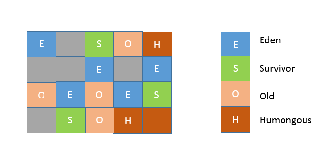
region 的大小是一致的，数值是在 1M 到 32M 字节之间的一个 2 的幂值数，JVM 会尽量划分 2048 个左右、同等大小的 region，这点可以从源码heapRegionBounds.hpp中看到。当然这个数字既可以手动调整，G1 也会根据堆大小自动进行调整。
在 G1 实现中，年代是个逻辑概念，具体体现在，一部分 region 是作为 Eden，一部分作为 Survivor，除了意料之中的 Old region，G1 会将超过 region 50% 大小的对象（在应用中，通常是 byte 或 char 数组）归类为 Humongous 对象，并放置在相应的 region 中。逻辑上，Humongous region 算是老年代的一部分，因为复制这样的大对象是很昂贵的操作，并不适合新生代 GC 的复制算法。
你可以思考下 region 设计有什么副作用？
例如，region 大小和大对象很难保证一致，这会导致空间的浪费。不知道你有没有注意到，我的示意图中有的区域是 Humongous 颜色，但没有用名称标记，这是为了表示，特别大的对象是可能占用超过一个 region 的。并且，region 太小不合适，会令你在分配大对象时更难找到连续空间，这是一个长久存在的情况，请参考OpenJDK 社区的讨论。这本质也可以看作是 JVM 的 bug，尽管解决办法也非常简单，直接设置较大的 region 大小，参数如下：
-XX:G1HeapRegionSize=<N, 例如 16>M
从 GC 算法的角度，G1 选择的是复合算法，可以简化理解为：
- 在新生代，G1 采用的仍然是并行的复制算法，所以同样会发生 Stop-The-World 的暂停。
- 在老年代，大部分情况下都是并发标记，而整理（Compact）则是和新生代 GC 时捎带进行，并且不是整体性的整理，而是增量进行的。
我在上一讲曾经介绍过，习惯上人们喜欢把新生代 GC（Young GC）叫作 Minor GC，老年代 GC 叫作 Major GC，区别于整体性的 Full GC。但是现代 GC 中，这种概念已经不再准确，对于 G1 来说：
- Minor GC 仍然存在，虽然具体过程会有区别，会涉及 Remembered Set 等相关处理。
- 老年代回收，则是依靠 Mixed GC。并发标记结束后，JVM 就有足够的信息进行垃圾收集，Mixed GC 不仅同时会清理 Eden、Survivor 区域，而且还会清理部分 Old 区域。可以通过设置下面的参数，指定触发阈值，并且设定最多被包含在一次 Mixed GC 中的 region 比例。
–XX:G1MixedGCLiveThresholdPercent
–XX:G1OldCSetRegionThresholdPercent
从 G1 内部运行的角度，下面的示意图描述了 G1 正常运行时的状态流转变化，当然，在发生逃逸失败等情况下，就会触发 Full GC。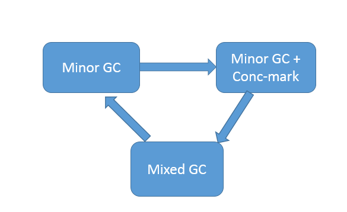
G1 相关概念非常多，有一个重点就是 Remembered Set，用于记录和维护 region 之间对象的引用关系。为什么需要这么做呢？试想，新生代 GC 是复制算法，也就是说，类似对象从 Eden 或者 Survivor 到 to 区域的“移动”，其实是“复制”，本质上是一个新的对象。在这个过程中，需要必须保证老年代到新生代的跨区引用仍然有效。下面的示意图说明了相关设计。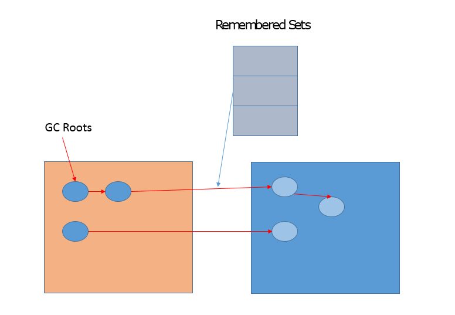
G1 的很多开销都是源自 Remembered Set，例如，它通常约占用 Heap 大小的 20% 或更高，这可是非常可观的比例。并且，我们进行对象复制的时候，因为需要扫描和更改 Card Table 的信息，这个速度影响了复制的速度，进而影响暂停时间。
描述 G1 内部的资料很多，我就不重复了，如果你想了解更多内部结构和算法等，我建议参考一些具体的介绍，书籍方面我推荐 Charlie Hunt 等撰写的《Java Performance Companion》。
接下来，我介绍下大家可能还不了解的 G1 行为变化，它们在一定程度上解决了专栏其他讲中提到的部分困扰，如类型卸载不及时的问题。
- 上面提到了 Humongous 对象的分配和回收，这是很多内存问题的来源，Humongous region 作为老年代的一部分，通常认为它会在并发标记结束后才进行回收，但是在新版 G1 中，Humongous 对象回收采取了更加激进的策略。 我们知道 G1 记录了老年代 region 间对象引用，Humongous 对象数量有限，所以能够快速的知道是否有老年代对象引用它。如果没有，能够阻止它被回收的唯一可能，就是新生代是否有对象引用了它，但这个信息是可以在 Young GC 时就知道的，所以完全可以在 Young GC 中就进行 Humongous 对象的回收，不用像其他老年代对象那样，等待并发标记结束。
- 我在专栏第 5 讲，提到了在 8u20 以后字符串排重的特性，在垃圾收集过程中，G1 会把新创建的字符串对象放入队列中，然后在 Young GC 之后，并发地（不会 STW）将内部数据（char 数组，JDK 9 以后是 byte 数组）一致的字符串进行排重，也就是将其引用同一个数组。你可以使用下面参数激活：
-XX:+UseStringDeduplication
注意，这种排重虽然可以节省不少内存空间，但这种并发操作会占用一些 CPU 资源，也会导致 Young GC 稍微变慢。
- 类型卸载是个长期困扰一些 Java 应用的问题，在专栏第 25 讲中，我介绍了一个类只有当加载它的自定义类加载器被回收后，才能被卸载。元数据区替换了永久代之后有所改善，但还是可能出现问题。
G1 的类型卸载有什么改进吗？很多资料中都谈到，G1 只有在发生 Full GC 时才进行类型卸载，但这显然不是我们想要的。你可以加上下面的参数查看类型卸载：
-XX:+TraceClassUnloading
幸好现代的 G1 已经不是如此了，8u40 以后，G1 增加并默认开启下面的选项：
-XX:+ClassUnloadingWithConcurrentMark
也就是说，在并发标记阶段结束后，JVM 即进行类型卸载。
- 我们知道老年代对象回收，基本要等待并发标记结束。这意味着，如果并发标记结束不及时，导致堆已满，但老年代空间还没完成回收，就会触发 Full GC，所以触发并发标记的时机很重要。早期的 G1 调优中，通常会设置下面参数，但是很难给出一个普适的数值，往往要根据实际运行结果调整
-XX:InitiatingHeapOccupancyPercent
在 JDK 9 之后的 G1 实现中，这种调整需求会少很多，因为 JVM 只会将该参数作为初始值，会在运行时进行采样，获取统计数据，然后据此动态调整并发标记启动时机。对应的 JVM 参数如下，默认已经开启：
-XX:+G1UseAdaptiveIHOP
- 在现有的资料中，大多指出 G1 的 Full GC 是最差劲的单线程串行 GC。其实，如果采用的是最新的 JDK，你会发现 Full GC 也是并行进行的了，在通用场景中的表现还优于 Parallel GC 的 Full GC 实现。
当然，还有很多其他的改变，比如更快的 Card Table 扫描等，这里不再展开介绍，因为它们并不带来行为的变化，基本不影响调优选择。
前面介绍了 G1 的内部机制，并且穿插了部分调优建议，下面从整体上给出一些调优的建议。
首先，建议尽量升级到较新的 JDK 版本，从上面介绍的改进就可以看到，很多人们常常讨论的问题，其实升级 JDK 就可以解决了。
第二，掌握 GC 调优信息收集途径。掌握尽量全面、详细、准确的信息，是各种调优的基础，不仅仅是 GC 调优。我们来看看打开 GC 日志，这似乎是很简单的事情，可是你确定真的掌握了吗？
除了常用的两个选项，
-XX:+PrintGCDetails
-XX:+PrintGCDateStamps
还有一些非常有用的日志选项，很多特定问题的诊断都是要依赖这些选项：
-XX:+PrintAdaptiveSizePolicy // 打印 G1 Ergonomics 相关信息
我们知道 GC 内部一些行为是适应性的触发的，利用 PrintAdaptiveSizePolicy，我们就可以知道为什么 JVM 做出了一些可能我们不希望发生的动作。例如，G1 调优的一个基本建议就是避免进行大量的 Humongous 对象分配，如果 Ergonomics 信息说明发生了这一点，那么就可以考虑要么增大堆的大小，要么直接将 region 大小提高。
如果是怀疑出现引用清理不及时的情况，则可以打开下面选项，掌握到底是哪里出现了堆积。
-XX:+PrintReferenceGC
另外，建议开启选项下面的选项进行并行引用处理。
-XX:+ParallelRefProcEnabled
需要注意的一点是，JDK 9 中 JVM 和 GC 日志机构进行了重构，其实我前面提到的PrintGCDetails 已经被标记为废弃，而PrintGCDateStamps 已经被移除，指定它会导致 JVM 无法启动。可以使用下面的命令查询新的配置参数。
java -Xlog:help
最后，来看一些通用实践，理解了我前面介绍的内部结构和机制，很多结论就一目了然了，例如：
- 如果发现 Young GC 非常耗时，这很可能就是因为新生代太大了，我们可以考虑减小新生代的最小比例。
-XX:G1NewSizePercent
降低其最大值同样对降低 Young GC 延迟有帮助。
-XX:G1MaxNewSizePercent
如果我们直接为 G1 设置较小的延迟目标值，也会起到减小新生代的效果，虽然会影响吞吐量。
- 如果是 Mixed GC 延迟较长，我们应该怎么做呢？
还记得前面说的，部分 Old region 会被包含进 Mixed GC，减少一次处理的 region 个数，就是个直接的选择之一。 我在上面已经介绍了 G1OldCSetRegionThresholdPercent 控制其最大值，还可以利用下面参数提高 Mixed GC 的个数，当前默认值是 8，Mixed GC 数量增多，意味着每次被包含的 region 减少。
-XX:G1MixedGCCountTarget
今天的内容算是抛砖引玉，更多内容你可以参考G1 调优指南等，远不是几句话可以囊括的。需要注意的是，也要避免过度调优，G1 对大堆非常友好，其运行机制也需要浪费一定的空间，有时候稍微多给堆一些空间，比进行苛刻的调优更加实用。
今天我梳理了基本的 GC 调优思路，并对 G1 内部结构以及最新的行为变化进行了详解。总的来说，G1 的调优相对简单、直观，因为可以直接设定暂停时间等目标，并且其内部引入了各种智能的自适应机制，希望这一切的努力，能够让你在日常应用开发时更加高效。
一课一练
关于今天我们讨论的题目你做到心中有数了吗？今天的思考题是，定位 Full GC 发生的原因，有哪些方式？�=
第29讲 Java内存模型中的happen-before是什么？
Java 语言在设计之初就引入了线程的概念，以充分利用现代处理器的计算能力，这既带来了强大、灵活的多线程机制，也带来了线程安全等令人混淆的问题，而 Java 内存模型（Java Memory Model，JMM）为我们提供了一个在纷乱之中达成一致的指导准则。
今天我要问你的问题是，Java 内存模型中的 happen-before 是什么？
典型回答
Happen-before 关系，是 Java 内存模型中保证多线程操作可见性的机制，也是对早期语言规范中含糊的可见性概念的一个精确定义。
它的具体表现形式，包括但远不止是我们直觉中的 synchronized、volatile、lock 操作顺序等方面，例如：
- 线程内执行的每个操作，都保证 happen-before 后面的操作，这就保证了基本的程序顺序规则，这是开发者在书写程序时的基本约定。
- 对于 volatile 变量，对它的写操作，保证 happen-before 在随后对该变量的读取操作。
- 对于一个锁的解锁操作，保证 happen-before 加锁操作。
- 对象构建完成，保证 happen-before 于 finalizer 的开始动作。
- 甚至是类似线程内部操作的完成，保证 happen-before 其他 Thread.join() 的线程等。
这些 happen-before 关系是存在着传递性的，如果满足 a happen-before b 和 b happen-before c，那么 a happen-before c 也成立。
前面我一直用 happen-before，而不是简单说前后，是因为它不仅仅是对执行时间的保证，也包括对内存读、写操作顺序的保证。仅仅是时钟顺序上的先后，并不能保证线程交互的可见性。
考点分析
今天的问题是一个常见的考察 Java 内存模型基本概念的问题，我前面给出的回答尽量选择了和日常开发相关的规则。
JMM 是面试的热点，可以看作是深入理解 Java 并发编程、编译器和 JVM 内部机制的必要条件，但这同时也是个容易让初学者无所适从的主题。对于学习 JMM，我有一些个人建议：
- 明确目的，克制住技术的诱惑。除非你是编译器或者 JVM 工程师，否则我建议不要一头扎进各种 CPU 体系结构，纠结于不同的缓存、流水线、执行单元等。这些东西虽然很酷，但其复杂性是超乎想象的，很可能会无谓增加学习难度，也未必有实践价值。
- 克制住对“秘籍”的诱惑。有些时候，某些编程方式看起来能起到特定效果，但分不清是实现差异导致的“表现”，还是“规范”要求的行为，就不要依赖于这种“表现”去编程，尽量遵循语言规范进行，这样我们的应用行为才能更加可靠、可预计。
在这一讲中，兼顾面试和编程实践，我会结合例子梳理下面两点：
- 为什么需要 JMM，它试图解决什么问题？
- JMM 是如何解决可见性等各种问题的？类似 volatile，体现在具体用例中有什么效果？
注意，专栏中 Java 内存模型就是特指 JSR-133 中重新定义的 JMM 规范。在特定的上下文里，也许会与 JVM（Java）内存结构等混淆，并不存在绝对的对错，但一定要清楚面试官的本意，有的面试官也会特意考察是否清楚这两种概念的区别。
知识扩展
为什么需要 JMM，它试图解决什么问题？
Java 是最早尝试提供内存模型的语言，这是简化多线程编程、保证程序可移植性的一个飞跃。早期类似 C、C++ 等语言，并不存在内存模型的概念（C++ 11 中也引入了标准内存模型），其行为依赖于处理器本身的内存一致性模型，但不同的处理器可能差异很大，所以一段 C++ 程序在处理器 A 上运行正常，并不能保证其在处理器 B 上也是一致的。
即使如此，最初的 Java 语言规范仍然是存在着缺陷的，当时的目标是，希望 Java 程序可以充分利用现代硬件的计算能力，同时保持“书写一次，到处执行”的能力。
但是，显然问题的复杂度被低估了，随着 Java 被运行在越来越多的平台上，人们发现，过于泛泛的内存模型定义，存在很多模棱两可之处，对 synchronized 或 volatile 等，类似指令重排序时的行为，并没有提供清晰规范。这里说的指令重排序，既可以是编译器优化行为，也可能是源自于现代处理器的乱序执行等。
换句话说：
- 既不能保证一些多线程程序的正确性，例如最著名的就是双检锁（Double-Checked Locking，DCL）的失效问题，具体可以参考我在第 14 讲对单例模式的说明，双检锁可能导致未完整初始化的对象被访问，理论上这叫并发编程中的安全发布（Safe Publication）失败。
- 也不能保证同一段程序在不同的处理器架构上表现一致，例如有的处理器支持缓存一致性，有的不支持，各自都有自己的内存排序模型。
所以，Java 迫切需要一个完善的 JMM，能够让普通 Java 开发者和编译器、JVM 工程师，能够清晰地达成共识。换句话说，可以相对简单并准确地判断出，多线程程序什么样的执行序列是符合规范的。
所以：
- 对于编译器、JVM 开发者，关注点可能是如何使用类似内存屏障（Memory-Barrier）之类技术，保证执行结果符合 JMM 的推断。
- 对于 Java 应用开发者，则可能更加关注 volatile、synchronized 等语义，如何利用类似 happen-before 的规则，写出可靠的多线程应用，而不是利用一些“秘籍”去糊弄编译器、JVM。
我画了一个简单的角色层次图，不同工程师分工合作，其实所处的层面是有区别的。JMM 为 Java 工程师隔离了不同处理器内存排序的区别，这也是为什么我通常不建议过早深入处理器体系结构，某种意义上来说，这样本就违背了 JMM 的初衷。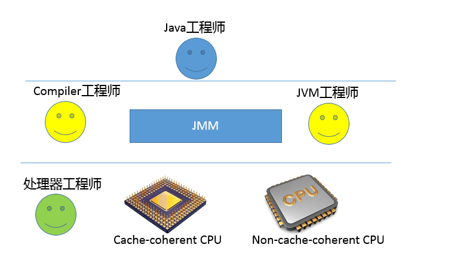
JMM 是怎么解决可见性等问题的呢？
在这里，我有必要简要介绍一下典型的问题场景。
我在第 25 讲里介绍了 JVM 内部的运行时数据区，但是真正程序执行，实际是要跑在具体的处理器内核上。你可以简单理解为，把本地变量等数据从内存加载到缓存、寄存器，然后运算结束写回主内存。你可以从下面示意图，看这两种模型的对应。
看上去很美好，但是当多线程共享变量时，情况就复杂了。试想，如果处理器对某个共享变量进行了修改，可能只是体现在该内核的缓存里，这是个本地状态，而运行在其他内核上的线程，可能还是加载的旧状态，这很可能导致一致性的问题。从理论上来说，多线程共享引入了复杂的数据依赖性，不管编译器、处理器怎么做重排序，都必须尊重数据依赖性的要求，否则就打破了正确性！这就是 JMM 所要解决的问题。
JMM 内部的实现通常是依赖于所谓的内存屏障，通过禁止某些重排序的方式，提供内存可见性保证，也就是实现了各种 happen-before 规则。与此同时，更多复杂度在于，需要尽量确保各种编译器、各种体系结构的处理器，都能够提供一致的行为。
我以 volatile 为例，看看如何利用内存屏障实现 JMM 定义的可见性？
对于一个 volatile 变量：
- 对该变量的写操作之后，编译器会插入一个写屏障。
- 对该变量的读操作之前，编译器会插入一个读屏障。
内存屏障能够在类似变量读、写操作之后，保证其他线程对 volatile 变量的修改对当前线程可见，或者本地修改对其他线程提供可见性。换句话说，线程写入，写屏障会通过类似强迫刷出处理器缓存的方式，让其他线程能够拿到最新数值。
如果你对更多内存屏障的细节感兴趣，或者想了解不同体系结构的处理器模型，建议参考 JSR-133相关文档，我个人认为这些都是和特定硬件相关的，内存屏障之类只是实现 JMM 规范的技术手段，并不是规范的要求。
从应用开发者的角度，JMM 提供的可见性，体现在类似 volatile 上，具体行为是什么样呢？
我这里循序渐进的举两个例子。
首先，前几天有同学问我一个问题，请看下面的代码片段，希望达到的效果是，当 condition 被赋值为 false 时，线程 A 能够从循环中退出。
// Thread A
while (condition) {
}
// Thread B
condition = false;
这里就需要 condition 被定义为 volatile 变量，不然其数值变化，往往并不能被线程 A 感知，进而无法退出。当然，也可以在 while 中，添加能够直接或间接起到类似效果的代码。
第二，我想举 Brian Goetz 提供的一个经典用例，使用 volatile 作为守卫对象，实现某种程度上轻量级的同步，请看代码片段：
Map configOptions;
char[] configText;
volatile boolean initialized = false;
// Thread A
configOptions = new HashMap();
configText = readConfigFile(fileName);
processConfigOptions(configText, configOptions);
initialized = true;
// Thread B
while (!initialized)
sleep();
// use configOptions
JSR-133 重新定义的 JMM 模型，能够保证线程 B 获取的 configOptions 是更新后的数值。
也就是说 volatile 变量的可见性发生了增强，能够起到守护其上下文的作用。线程 A 对 volatile 变量的赋值，会强制将该变量自己和当时其他变量的状态都刷出缓存，为线程 B 提供可见性。当然，这也是以一定的性能开销作为代价的，但毕竟带来了更加简单的多线程行为。
我们经常会说 volatile 比 synchronized 之类更加轻量，但轻量也仅仅是相对的，volatile 的读、写仍然要比普通的读写要开销更大，所以如果你是在性能高度敏感的场景，除非你确定需要它的语义，不然慎用。
今天，我从 happen-before 关系开始，帮你理解了什么是 Java 内存模型。为了更方便理解，我作了简化，从不同工程师的角色划分等角度，阐述了问题的由来，以及 JMM 是如何通过类似内存屏障等技术实现的。最后，我以 volatile 为例，分析了可见性在多线程场景中的典型用例。
一课一练
关于今天我们讨论的题目你做到心中有数了吗？今天留给你的思考题是，给定一段代码，如何验证所有符合 JMM 执行可能？有什么工具可以辅助吗？�K
第30讲 Java程序运行在Docker等容器环境有哪些新问题？
如今，Docker 等容器早已不是新生事物，正在逐步成为日常开发、部署环境的一部分。Java 能否无缝地运行在容器环境，是否符合微服务、Serverless 等新的软件架构和场景，在一定程度上也会影响未来的技术栈选择。当然，Java 对 Docker 等容器环境的支持也在不断增强，自然地，Java 在容器场景的实践也逐渐在面试中被涉及。我希望通过专栏今天这一讲，能够帮你能做到胸有成竹。
今天我要问你的问题是，Java 程序运行在 Docker 等容器环境有哪些新问题？
典型回答
对于 Java 来说，Docker 毕竟是一个较新的环境，例如，其内存、CPU 等资源限制是通过 CGroup（Control Group）实现的，早期的 JDK 版本（8u131 之前）并不能识别这些限制，进而会导致一些基础问题：
- 如果未配置合适的 JVM 堆和元数据区、直接内存等参数，Java 就有可能试图使用超过容器限制的内存，最终被容器 OOM kill，或者自身发生 OOM。
- 错误判断了可获取的 CPU 资源，例如，Docker 限制了 CPU 的核数，JVM 就可能设置不合适的 GC 并行线程数等。
从应用打包、发布等角度出发，JDK 自身就比较大，生成的镜像就更为臃肿，当我们的镜像非常多的时候，镜像的存储等开销就比较明显了。
如果考虑到微服务、Serverless 等新的架构和场景，Java 自身的大小、内存占用、启动速度，都存在一定局限性，因为 Java 早期的优化大多是针对长时间运行的大型服务器端应用。
考点分析
今天的问题是个针对特定场景和知识点的问题，我给出的回答简单总结了目前业界实践中发现的一些问题。
如果我是面试官，针对这种问题，如果你确实没有太多 Java 在 Docker 环境的使用经验，直接说不知道，也算是可以接受的，毕竟没有人能够掌握所有知识点嘛。
但我们要清楚，有经验的面试官，一般不会以纯粹偏僻的知识点作为面试考察的目的，更多是考察思考问题的思路和解决问题的方法。所以，如果有基础的话，可以从操作系统、容器原理、JVM 内部机制、软件开发实践等角度，展示系统性分析新问题、新场景的能力。毕竟，变化才是世界永远的主题，能够在新变化中找出共性与关键，是优秀工程师的必备能力。
今天我会围绕下面几个方面展开：
- 面试官可能会进一步问到，有没有想过为什么类似 Docker 这种容器环境，会有点“欺负”Java？从 JVM 内部机制来说，问题出现在哪里？
- 我注意到有种论调说“没人在容器环境用 Java”，不去争论这个观点正确与否，我会从工程实践出发，梳理问题原因和相关解决方案，并探讨下新场景下的最佳实践。
知识扩展
首先，我们先来搞清楚 Java 在容器环境的局限性来源，Docker 到底有什么特别？
虽然看起来 Docker 之类容器和虚拟机非常相似，例如，它也有自己的 shell，能独立安装软件包，运行时与其他容器互不干扰。但是，如果深入分析你会发现，Docker 并不是一种完全的虚拟化技术，而更是一种轻量级的隔离技术。
上面的示意图，展示了 Docker 与虚拟机的区别。从技术角度，基于 namespace，Docker 为每个容器提供了单独的命名空间，对网络、PID、用户、IPC 通信、文件系统挂载点等实现了隔离。对于 CPU、内存、磁盘 IO 等计算资源，则是通过 CGroup 进行管理。如果你想了解更多 Docker 的细节，请参考相关技术文档。
Docker 仅在类似 Linux 内核之上实现了有限的隔离和虚拟化，并不是像传统虚拟化软件那样，独立运行一个新的操作系统。如果是虚拟化的操作系统，不管是 Java 还是其他程序，只要调用的是同一个系统 API，都可以透明地获取所需的信息，基本不需要额外的兼容性改变。
容器虽然省略了虚拟操作系统的开销，实现了轻量级的目标，但也带来了额外复杂性，它限制对于应用不是透明的，需要用户理解 Docker 的新行为。所以，有专家曾经说过，“幸运的是 Docker 没有完全隐藏底层信息，但是不幸的也是 Docker 没有隐藏底层信息！”
对于 Java 平台来说，这些未隐藏的底层信息带来了很多意外的困难，主要体现在几个方面：
第一，容器环境对于计算资源的管理方式是全新的，CGroup 作为相对比较新的技术，历史版本的 Java 显然并不能自然地理解相应的资源限制。
第二，namespace 对于容器内的应用细节增加了一些微妙的差异，比如 jcmd、jstack 等工具会依赖于“/proc//”下面提供的部分信息，但是 Docker 的设计改变了这部分信息的原有结构，我们需要对原有工具进行修改以适应这种变化。
从 JVM 运行机制的角度，为什么这些“沟通障碍”会导致 OOM 等问题呢？
你可以思考一下，这个问题实际是反映了 JVM 如何根据系统资源（内存、CPU 等）情况，在启动时设置默认参数。
这就是所谓的Ergonomics机制，例如：
- JVM 会大概根据检测到的内存大小，设置最初启动时的堆大小为系统内存的 1/64；并将堆最大值，设置为系统内存的 1/4。
- 而 JVM 检测到系统的 CPU 核数，则直接影响到了 Parallel GC 的并行线程数目和 JIT complier 线程数目，甚至是我们应用中 ForkJoinPool 等机制的并行等级。
这些默认参数，是根据通用场景选择的初始值。但是由于容器环境的差异，Java 的判断很可能是基于错误信息而做出的。这就类似，我以为我住的是整栋别墅，实际上却只有一个房间是给我住的。
更加严重的是，JVM 的一些原有诊断或备用机制也会受到影响。为保证服务的可用性，一种常见的选择是依赖“-XX:OnOutOfMemoryError”功能，通过调用处理脚本的形式来做一些补救措施，比如自动重启服务等。但是，这种机制是基于 fork 实现的，当 Java 进程已经过度提交内存时，fork 新的进程往往已经不可能正常运行了。
根据前面的总结，似乎问题非常棘手，那我们在实践中，如何解决这些问题呢？
首先，如果你能够升级到最新的 JDK 版本，这个问题就迎刃而解了。
- 针对这种情况，JDK 9 中引入了一些实验性的参数，以方便 Docker 和 Java“沟通”，例如针对内存限制，可以使用下面的参数设置：
-XX:+UnlockExperimentalVMOptions
-XX:+UseCGroupMemoryLimitForHeap
注意，这两个参数是顺序敏感的，并且只支持 Linux 环境。而对于 CPU 核心数限定，Java 已经被修正为可以正确理解“–cpuset-cpus”等设置，无需单独设置参数。
- 如果你可以切换到 JDK 10 或者更新的版本，问题就更加简单了。Java 对容器（Docker）的支持已经比较完善，默认就会自适应各种资源限制和实现差异。前面提到的实验性参数“UseCGroupMemoryLimitForHeap”已经被标记为废弃。
与此同时，新增了参数用以明确指定 CPU 核心的数目。
-XX:ActiveProcessorCount=N
如果实践中发现有问题，也可以使用“-XX:-UseContainerSupport”，关闭 Java 的容器支持特性，这可以作为一种防御性机制，避免新特性破坏原有基础功能。当然，也欢迎你向 OpenJDK 社区反馈问题。
- 幸运的是，JDK 9 中的实验性改进已经被移植到 Oracle JDK 8u131 之中，你可以直接下载相应镜像，并配置“UseCGroupMemoryLimitForHeap”，后续很有可能还会进一步将 JDK 10 中相关的增强，应用到 JDK 8 最新的更新中。
但是，如果我暂时只能使用老版本的 JDK 怎么办？
我这里有几个建议：
- 明确设置堆、元数据区等内存区域大小，保证 Java 进程的总大小可控。
例如，我们可能在环境中，这样限制容器内存：
$ docker run -it --rm --name yourcontainer -p 8080:8080 -m 800M repo/your-java-container:openjdk
那么，就可以额外配置下面的环境变量，直接指定 JVM 堆大小。
-e JAVA_OPTIONS='-Xmx300m'
- 明确配置 GC 和 JIT 并行线程数目，以避免二者占用过多计算资源。
-XX:ParallelGCThreads
-XX:CICompilerCount
除了我前面介绍的 OOM 等问题，在很多场景中还发现 Java 在 Docker 环境中，似乎会意外使用 Swap。具体原因待查，但很有可能也是因为 Ergonomics 机制失效导致的，我建议配置下面参数，明确告知 JVM 系统内存限额。
-XX:MaxRAM=`cat /sys/fs/cgroup/memory/memory.limit_in_bytes`
也可以指定 Docker 运行参数，例如：
--memory-swappiness=0
这是受操作系统Swappiness机制影响，当内存消耗达到一定门限，操作系统会试图将不活跃的进程换出（Swap out），上面的参数有显式关闭 Swap 的作用。所以可以看到，Java 在 Docker 中的使用，从操作系统、内核到 JVM 自身机制，需要综合运用我们所掌握的知识。
回顾我在专栏第 25 讲 JVM 内存区域的介绍，JVM 内存消耗远不止包括堆，很多时候仅仅设置 Xmx 是不够的，MaxRAM 也有助于 JVM 合理分配其他内存区域。如果应用需要设置更多 Java 启动参数，但又不确定什么数值合理，可以试试一些社区提供的工具，但要注意通用工具的局限性。
更进一步来说，对于容器镜像大小的问题，如果你使用的是 JDK 9 以后的版本，完全可以使用 jlink 工具定制最小依赖的 Java 运行环境，将 JDK 裁剪为几十 M 的大小，这样运行起来并不困难。
今天我从 Docker 环境中 Java 可能出现的问题开始，分析了为什么容器环境对应用并不透明，以及这种偏差干扰了 JVM 的相关机制。最后，我从实践出发，介绍了主要问题的解决思路，希望对你在实际开发时有所帮助。
一课一练
关于今天我们讨论的题目你做到心中有数了吗？今天的思考题是，针对我提到的微服务和 Serverless 等场景 Java 表现出的不足，有哪些方法可以改善 Java 的表现？�?
第31讲 你了解Java应用开发中的注入攻击吗？
安全是软件开发领域永远的主题之一，随着新技术浪潮的兴起，安全的重要性愈发凸显出来，对于金融等行业，甚至可以说安全是企业的生命线。不论是移动设备、普通 PC、小型机，还是大规模分布式系统，以及各种主流操作系统，Java 作为软件开发的基础平台之一，可以说是无处不在，自然也就成为安全攻击的首要目标之一。
今天我要问你的问题是，你了解 Java 应用开发中的注入攻击吗？
典型回答
注入式（Inject）攻击是一类非常常见的攻击方式，其基本特征是程序允许攻击者将不可信的动态内容注入到程序中，并将其执行，这就可能完全改变最初预计的执行过程，产生恶意效果。
下面是几种主要的注入式攻击途径，原则上提供动态执行能力的语言特性，都需要提防发生注入攻击的可能。
首先，就是最常见的 SQL 注入攻击。一个典型的场景就是 Web 系统的用户登录功能，根据用户输入的用户名和密码，我们需要去后端数据库核实信息。
假设应用逻辑是，后端程序利用界面输入动态生成类似下面的 SQL，然后让 JDBC 执行。
Select * from use_info where username = “input_usr_name” and password = “input_pwd”
但是，如果我输入的 input_pwd 是类似下面的文本，
“ or “”=”
那么，拼接出的 SQL 字符串就变成了下面的条件，OR 的存在导致输入什么名字都是复合条件的。
Select * from use_info where username = “input_usr_name” and password = “” or “” = “”
这里只是举个简单的例子，它是利用了期望输入和可能输入之间的偏差。上面例子中，期望用户输入一个数值，但实际输入的则是 SQL 语句片段。类似场景可以利用注入的不同 SQL 语句，进行各种不同目的的攻击，甚至还可以加上“;delete xxx”之类语句，如果数据库权限控制不合理，攻击效果就可能是灾难性的。
第二，操作系统命令注入。Java 语言提供了类似 Runtime.exec(…) 的 API，可以用来执行特定命令，假设我们构建了一个应用，以输入文本作为参数，执行下面的命令：
ls –la input_file_name
但是如果用户输入是 “input_file_name;rm –rf /*”，这就有可能出现问题了。当然，这只是个举例，Java 标准类库本身进行了非常多的改进，所以类似这种编程错误，未必可以真的完成攻击，但其反映的一类场景是真实存在的。
第三，XML 注入攻击。Java 核心类库提供了全面的 XML 处理、转换等各种 API，而 XML 自身是可以包含动态内容的，例如 XPATH，如果使用不当，可能导致访问恶意内容。
还有类似 LDAP 等允许动态内容的协议，都是可能利用特定命令，构造注入式攻击的，包括 XSS（Cross-site Scripting）攻击，虽然并不和 Java 直接相关，但也可能在 JSP 等动态页面中发生。
考点分析
今天的问题是安全领域的入门题目，我简单介绍了最常见的几种注入场景作为示例。安全本身是个非常大的主题，在面试中，面试官可能会考察安全问题，但如果不是特定安全专家岗位，了解基础的安全实践就可以满足要求了。
Java 工程师未必都要成为安全专家，但了解基础的安全领域常识，有利于发现和规避日常开发中的风险。今天我会侧重和 Java 开发相关的安全内容，希望可以起到一个抛砖引玉的作用，让你对 Java 开发安全领域有个整体印象。
- 谈到 Java 应用安全，主要涉及哪些安全机制？
- 到底什么是安全漏洞？对于前面提到的 SQL 注入等典型攻击，我们在开发中怎么避免？
知识扩展
首先，一起来看看哪些 Java API 和工具构成了 Java 安全基础。很多方面我在专栏前面的讲解中已经有所涉及，可以简单归为三个主要组成部分：
第一，运行时安全机制。可以简单认为，就是限制 Java 运行时的行为，不要做越权或者不靠谱的事情，具体来看：
- 在类加载过程中，进行字节码验证，以防止不合规的代码影响 JVM 运行或者载入其他恶意代码。
- 类加载器本身也可以对代码之间进行隔离，例如，应用无法获取启动类加载器（Bootstrap Class-Loader）对象实例，不同的类加载器也可以起到容器的作用，隔离模块之间不必要的可见性等。目前，Java Applet、RMI 等特性已经或逐渐退出历史舞台，类加载等机制总体上反倒在不断简化。
- 利用 SecurityManger 机制和相关的组件，限制代码的运行时行为能力，其中，你可以定制 policy 文件和各种粒度的权限定义，限制代码的作用域和权限，例如对文件系统的操作权限，或者监听某个网络端口的权限等。我画了一个简单的示意图，对运行时安全的不同层次进行了整理。
可以看到，Java 的安全模型是以代码为中心的，贯穿了从类加载，如 URLClassLoader 加载网络上的 Java 类等，到应用程序运行时权限检查等全过程。
- 另外，从原则上来说，Java 的 GC 等资源回收管理机制，都可以看作是运行时安全的一部分，如果相应机制失效，就会导致 JVM 出现 OOM 等错误，可看作是另类的拒绝服务。
第二，Java 提供的安全框架 API，这是构建安全通信等应用的基础。例如：
注意，这一部分 API 内部实现是和厂商相关的，不同 JDK 厂商往往会定制自己的加密算法实现。
第三， 就是 JDK 集成的各种安全工具，例如：
在应用实践中，如果对安全要求非常高，建议打开 SecurityManager，
-Djava.security.manager
请注意其开销，通常只要开启 SecurityManager，就会导致 10% ~ 15% 的性能下降，在 JDK 9 以后，这个开销有所改善。
理解了基础 Java 安全机制，接下来我们来一起探讨安全漏洞（Vulnerability）。
按照传统的定义，任何可以用来绕过系统安全策略限制的程序瑕疵，都可以算作安全漏洞。具体原因可能非常多，设计或实现中的疏漏、配置错误等，任何不慎都有可能导致安全漏洞出现，例如恶意代码绕过了 Java 沙箱的限制，获取了特权等。如果你想了解更多安全漏洞的信息，可以从通用安全漏洞库（CVE）等途径获取，了解安全漏洞评价标准。
但是，要达到攻击的目的，未必都需要绕过权限限制。比如利用哈希碰撞发起拒绝服务攻击（DOS，Denial-Of-Service attack），常见的场景是，攻击者可以事先构造大量相同哈希值的数据，然后以 JSON 数据的形式发送给服务器端，服务器端在将其构建成为 Java 对象过程中，通常以 Hastable 或 HashMap 等形式存储，哈希碰撞将导致哈希表发生严重退化，算法复杂度可能上升一个数量级（HashMap 后续进行了改进，我在专栏第 9 讲介绍了树化机制），进而耗费大量 CPU 资源。
像这种攻击方式，无关于权限，可以看作是程序实现的瑕疵，给了攻击者以低成本进行进攻的机会。
我在开头提到的各种注入式攻击，可以有不同角度、不同层面的解决方法，例如针对 SQL 注入：
- 在数据输入阶段，填补期望输入和可能输入之间的鸿沟。可以进行输入校验，限定什么类型的输入是合法的，例如，不允许输入标点符号等特殊字符，或者特定结构的输入。
- 在 Java 应用进行数据库访问时，如果不用完全动态的 SQL，而是利用 PreparedStatement，可以有效防范 SQL 注入。不管是 SQL 注入，还是 OS 命令注入，程序利用字符串拼接生成运行逻辑都是个可能的风险点！
- 在数据库层面，如果对查询、修改等权限进行了合理限制，就可以在一定程度上避免被注入删除等高破坏性的代码。
在安全领域，有一句准则：安全倾向于 “明显没有漏洞”，而不是“没有明显漏洞”。所以，为了更加安全可靠的服务，我们最好是采取整体性的安全设计和综合性的防范手段，而不是头痛医头、脚痛医脚的修修补补，更不能心存侥幸。
一个比较普适的建议是，尽量使用较新版本的 JDK，并使用推荐的安全机制和标准。如果你有看过 JDK release notes，例如8u141，你会发现 JDK 更新会修复已知的安全漏洞，并且会对安全机制等进行增强。但现实情况是，相当一部分应用还在使用很古老的不安全版本 JDK 进行开发，并且很多信息处理的也很随意，或者通过明文传输、存储，这些都存在暴露安全隐患的可能。
今天我首先介绍了典型的注入攻击，然后整理了 Java 内部的安全机制，并探讨了到底什么是安全漏洞和典型的表现形式，以及如何防范 SQL 注入攻击等，希望对你有所帮助。
一课一练
关于今天我们讨论的题目你做到心中有数了吗？今天的思考题是，你知道 Man-In-The-Middle（MITM）攻击吗？有哪些常见的表现形式？如何防范呢？�0
第32讲 如何写出安全的Java代码？
在上一讲中，我们已经初步接触了 Java 安全，今天我们将一起探讨更多 Java 开发中可能影响到安全的场合。很多安全问题，在特定的上下文，存在着不同的定义，尽管本质是相似或一致的，这是由于 Java 平台自身的特性所带来特有的问题。今天这一讲我将侧重于 Java 开发者的角度谈代码安全，而不是讲广义的安全风险。
今天我要问你的问题是，如何写出安全的 Java 代码？
典型回答
这个问题可能有点宽泛，我们可以用特定类型的安全风险为例，如拒绝服务（DoS）攻击，分析 Java 开发者需要重点考虑的点。
DoS 是一种常见的网络攻击，有人也称其为“洪水攻击”。最常见的表现是，利用大量机器发送请求，将目标网站的带宽或者其他资源耗尽，导致其无法响应正常用户的请求。
我认为，从 Java 语言的角度，更加需要重视的是程序级别的攻击，也就是利用 Java、JVM 或应用程序的瑕疵，进行低成本的 DoS 攻击，这也是想要写出安全的 Java 代码所必须考虑的。例如：
- 如果使用的是早期的 JDK 和 Applet 等技术，攻击者构建合法但恶劣的程序就相对容易，例如，将其线程优先级设置为最高，做一些看起来无害但空耗资源的事情。幸运的是类似技术已经逐步退出历史舞台，在 JDK 9 以后，相关模块就已经被移除。
- 上一讲中提到的哈希碰撞攻击，就是个典型的例子，对方可以轻易消耗系统有限的 CPU 和线程资源。从这个角度思考，类似加密、解密、图形处理等计算密集型任务，都要防范被恶意滥用，以免攻击者通过直接调用或者间接触发方式，消耗系统资源。
- 利用 Java 构建类似上传文件或者其他接受输入的服务，需要对消耗系统内存或存储的上限有所控制，因为我们不能将系统安全依赖于用户的合理使用。其中特别注意的是涉及解压缩功能时，就需要防范Zip bomb等特定攻击。
- 另外，Java 程序中需要明确释放的资源有很多种，比如文件描述符、数据库连接，甚至是再入锁，任何情况下都应该保证资源释放成功，否则即使平时能够正常运行，也可能被攻击者利用而耗尽某类资源，这也算是可能的 DoS 攻击来源。
所以可以看出，实现安全的 Java 代码，需要从功能设计到实现细节，都充分考虑可能的安全影响。
考点分析
关于今天的问题，以典型的 DoS 攻击作为切入点，将问题聚焦在 Java 开发中，我介绍了 Java 应用设计、实现的注意事项，后面还会介绍更加全面的实践。
其实安全问题实际就是软件的缺陷，软件安全并不存在一劳永逸的秘籍，既离不开设计、架构中的风险分析，也离不开编码、测试等阶段的安全实践手段。对于面试官来说，考察安全问题，除了对特定安全领域知识的考察，更多是要看面试者的 Java 编程基本功和知识的积累。
所以，我会在后面会循序渐进探讨 Java 安全编程，这里面没有什么黑科技，只有规范的开发标准，很多安全问题其实是态度问题，取决于你是否真的认真对待它。
- 我将以一些典型的代码片段为出发点，分析一些非常容易被忽略的安全风险，并介绍安全问题频发的热点场景，如 Java 序列化和反序列化。
- 从软件生命周期的角度，探讨设计、开发、测试、部署等不同阶段，有哪些常见的安全策略或工具。
知识扩展
首先，我们一起来看一段不起眼的条件判断代码，这里可能有什么问题吗？
// a, b, c 都是 int 类型的数值
if (a + b < c) {
// …
}
你可能会纳闷，这是再常见不过的一个条件判断了，能有什么安全隐患？
这里的隐患是数值类型需要防范溢出，否则这不仅仅可能会带来逻辑错误，在特定情况下可能导致严重的安全漏洞。
从语言特性来说，Java 和 JVM 提供了很多基础性的改进，相比于传统的 C、C++ 等语言，对于数组越界等处理要完善的多，原生的避免了缓冲区溢出等攻击方式，提高了软件的安全性。但这并不代表完全杜绝了问题，Java 程序可能调用本地代码，也就是 JNI 技术，错误的数值可能导致 C/C++ 层面的数据越界等问题，这是很危险的。
所以，上面的条件判断，需要判断其数值范围，例如，写成类似下面结构。
if (a < c – b)
再来看一个例子，请看下面的一段异常处理代码：
try {
// 业务代码
} catch (Exception e) {
throw new RuntimeException(hostname + port + “ doesn’t response”);
}
这段代码将敏感信息包含在异常消息中，试想，如果是一个 Web 应用，异常也没有良好的包装起来，很有可能就把内部信息暴露给终端客户。古人曾经告诫我们“言多必失”是很有道理的，虽然其本意不是指软件安全，但尽量少暴露信息，也是保证安全的基本原则之一。即使我们并不认为某个信息有安全风险，我的建议也是如果没有必要，不要暴露出来。
这种暴露还可能通过其他方式发生，比如某著名的编程技术网站，就被曝光过所有用户名和密码。这些信息都是明文存储，传输过程也未必进行加密，类似这种情况，暴露只是个时间早晚的问题。
对于安全标准特别高的系统，甚至可能要求敏感信息被使用后，要立即明确在内存中销毁，以免被探测；或者避免在发生 core dump 时，意外暴露。
第三，Java 提供了序列化等创新的特性，广泛使用在远程调用等方面，但也带来了复杂的安全问题。直到今天，序列化仍然是个安全问题频发的场景。
针对序列化，通常建议：
- 敏感信息不要被序列化！在编码中，建议使用 transient 关键字将其保护起来。
- 反序列化中，建议在 readObject 中实现与对象构件过程相同的安全检查和数据检查。
另外，在 JDK 9 中，Java 引入了过滤器机制，以保证反序列化过程中数据都要经过基本验证才可以使用。其原理是通过黑名单和白名单，限定安全或者不安全的类型，并且你可以进行定制，然后通过环境变量灵活进行配置， 更加具体的使用你可以参考 ObjectInputFilter。
通过前面的介绍，你可能注意到，很多安全问题都是源于非常基本的编程细节，类似 Immutable、封装等设计，都存在着安全性的考虑。从实践的角度，让每个人都了解和掌握这些原则，有必要但并不太现实，有没有什么工程实践手段，可以帮助我们排查安全隐患呢？
开发和测试阶段
在实际开发中，各种功能点五花八门，未必能考虑的全面。我建议没有必要所有都需要自己去从头实现，尽量使用广泛验证过的工具、类库，不管是来自于 JDK 自身，还是 Apache 等第三方组织，都在社区的反馈下持续地完善代码安全。
开发过程中应用代码规约标准，是避免安全问题的有效手段。我特别推荐来自孤尽的《阿里巴巴 Java 开发手册》，以及其配套工具，充分总结了业界在 Java 等领域的实践经验，将规约实践系统性地引入国内的软件开发，可以有效提高代码质量。
当然，凡事都是有代价的，规约会增加一定的开发成本，可能对迭代的节奏产生一定影响，所以对于不同阶段、不同需求的团队，可以根据自己的情况对规约进行适应性的调整。
落实到实际开发流程中，以 OpenJDK 团队为例，我们应用了几个不同角度的实践：
- 在早期设计阶段，就由安全专家组对新特性进行风险评估。
- 开发过程中，尤其是 code review 阶段，应用 OpenJDK 自身定制的代码规范。
- 利用多种静态分析工具如FindBugs、Parfait等，帮助早期发现潜在安全风险，并对相应问题采取零容忍态度，强制要求解决。
- 甚至 OpenJDK 会默认将任何（编译等）警告，都当作错误对待，并体现在 CI 流程中。
- 在代码 check-in 等关键环节，利用 hook 机制去调用规则检查工具，以保证不合规代码不能进入 OpenJDK 代码库。
关于静态分析工具的选择，我们选取的原则是“足够好”。没有什么工具能够发现所有问题，所以在保证功能的前提下，影响更大的是分析效率，换句话说是代码分析的噪音高低。不管分析有多么的完备，如果太多误报，就会导致有用信息被噪音覆盖，也不利于后续其他程序化的处理，反倒不利于排查问题。
以上这些是为了保证 JDK 作为基础平台的苛刻质量要求，在实际产品中，你需要斟酌具体什么程度的要求是合理的。
部署阶段
JDK 自身的也是个软件，难免会存在实现瑕疵，我们平时看到 JDK 更新的安全漏洞补丁，其实就是在修补这些漏洞。我最近还注意到，某大厂后台被曝出了使用的 JDK 版本存在序列化相关的漏洞。类似这种情况，大多数都是因为使用的 JDK 是较低版本，算是可以通过部署解决的问题。
如果是安全敏感型产品，建议关注 JDK 在加解密方面的路线图，同样的标准也应用于其他语言和平台，很多早期认为非常安全的算法，已经被攻破，及时地升级基础软件是安全的必要条件。
攻击和防守是不对称的，只要有一个严重漏洞，对于攻击者就足够了，所以，不能对黑盒形式的部署心存侥幸，这并不能保证系统的安全，攻击者可以利用对软件设计的猜测，结合一系列手段，探测出漏洞。
今天我以 DoS 等典型攻击方式为例，分析了其在 Java 平台上的特定表现，并从更多安全编码的细节帮你体会安全问题的普遍性，最后我介绍了软件开发周期中的安全实践，希望能对你的工作有所帮助。
一课一练
关于今天我们讨论的题目你做到心中有数了吗？你在开发中遇到过 Java 特定的安全问题吗？是怎么解决的呢？�P
第33讲 后台服务出现明显“变慢”，谈谈你的诊断思路？
在日常工作中，应用或者系统出现性能问题往往是不可避免的，除了在有一定规模的 IT 企业或者专注于特定性能领域的企业，可能大多数工程师并不会成为专职的性能工程师，但是掌握基本的性能知识和技能，往往是日常工作的需要，并且也是工程师进阶的必要条件之一，能否定位和解决性能问题也是对你知识、技能和能力的检验。
今天我要问你的问题是，后台服务出现明显“变慢”，谈谈你的诊断思路？
典型回答
首先，需要对这个问题进行更加清晰的定义:
- 服务是突然变慢还是长时间运行后观察到变慢？类似问题是否重复出现？
- “慢”的定义是什么，我能够理解是系统对其他方面的请求的反应延时变长吗?
第二，理清问题的症状，这更便于定位具体的原因，有以下一些思路：
- 问题可能来自于 Java 服务自身，也可能仅仅是受系统里其他服务的影响。初始判断可以先确认是否出现了意外的程序错误，例如检查应用本身的错误日志。 对于分布式系统，很多公司都会实现更加系统的日志、性能等监控系统。一些 Java 诊断工具也可以用于这个诊断，例如通过 JFR（Java Flight Recordera>），监控应用是否大量出现了某种类型的异常。 如果有，那么异常可能就是个突破点。 如果没有，可以先检查系统级别的资源等情况，监控 CPU、内存等资源是否被其他进程大量占用，并且这种占用是否不符合系统正常运行状况。
- 监控 Java 服务自身，例如 GC 日志里面是否观察到 Full GC 等恶劣情况出现，或者是否 Minor GC 在变长等；利用 jstat 等工具，获取内存使用的统计信息也是个常用手段；利用 jstack 等工具检查是否出现死锁等。
- 如果还不能确定具体问题，对应用进行 Profiling 也是个办法，但因为它会对系统产生侵入性，如果不是非常必要，大多数情况下并不建议在生产系统进行。
- 定位了程序错误或者 JVM 配置的问题后，就可以采取相应的补救措施，然后验证是否解决，否则还需要重复上面部分过程。
考点分析
今天我选择的是一个常见的并且比较贴近实际应用的的性能相关问题，我提供的回答包括两部分。
- 在正面回答之前，先探讨更加精确的问题定义是什么。有时候面试官并没有表达清楚，有必要确认自己的理解正确，然后再深入回答。
- 从系统、应用的不同角度、不同层次，逐步将问题域尽量缩小，隔离出真实原因。具体步骤未必千篇一律，在处理过较多这种问题之后，经验会令你的直觉分外敏感。
大多数工程师也许并没有全面的性能问题诊断机会，如果被问到也不必过于紧张，你可以向面试官展示诊断问题的思考方式，展现自己的知识和综合运用的能力。接触到一个陌生的问题，通过沟通，能够条理清晰地将排查方案逐步确定下来，也是能力的体现。
面试官可能会针对某个角度的诊断深入询问，兼顾工作和面试的需求，我会针对下面一些方面进行介绍。目的是让你对性能分析有个整体的印象，在遇到特定领域问题时，即使不知道具体细节的工具和手段，至少也可以找到探索、查询的方向。
- 我将介绍业界常见的性能分析方法论。
- 从系统分析到 JVM、应用性能分析，把握整体思路和主要工具。对于线程状态、JVM 内存使用等很多方面，我在专栏前面已经陆陆续续介绍了很多，今天这一讲也可以看作是聚焦性能角度的一个小结。
如果你有兴趣进行系统性的学习，我建议参考 Charlie Hunt 编撰的《Java Performance》或者 Scott Oaks 的《Java Performance：The Definitive Guide》。另外，如果不希望出现理解偏差，最好是阅读英文版。
知识扩展
首先，我们来了解一下业界最广泛的性能分析方法论。
根据系统架构不同，分布式系统和大型单体应用也存在着思路的区别，例如，分布式系统的性能瓶颈可能更加集中。传统意义上的性能调优大多是针对单体应用的调优，专栏的侧重点也是如此，Charlie Hunt 曾将其方法论总结为两类：
- 自上而下。从应用的顶层，逐步深入到具体的不同模块，或者更近一步的技术细节单元，找到可能的问题和解决办法。这是最常见的性能分析思路，也是大多数工程师的选择。
自下而上。从类似 CPU 这种硬件底层，判断类似Cache-Miss之类的问题和调优机会，出发点是指令级别优化。这往往是专业的性能工程师才能掌握的技能，并且需要专业工具配合，大多数是移植到新的平台上，或需要提供极致性能时才会进行。
例如，将大数据应用移植到 SPARC 体系结构的硬件上，需要对比和尽量释放性能潜力，但又希望尽量不改源代码。
我所给出的回答，首先是试图排除功能性错误，然后就是典型的自上而下分析思路。
第二，我们一起来看看自上而下分析中，各个阶段的常见工具和思路。需要注意的是，具体的工具在不同的操作系统上可能区别非常大。
系统性能分析中，CPU、内存和 IO 是主要关注项。
对于 CPU，如果是常见的 Linux，可以先用 top 命令查看负载状况，下图是我截取的一个状态。
可以看到，其平均负载（load average）的三个值（分别是 1 分钟、5 分钟、15 分钟）非常低，并且暂时看并没有升高迹象。如果这些数值非常高（例如，超过 50%、60%），并且短期平均值高于长期平均值，则表明负载很重；如果还有升高的趋势，那么就要非常警惕了。
进一步的排查有很多思路，例如，我在专栏第 18 讲曾经问过，怎么找到最耗费 CPU 的 Java 线程，简要介绍步骤：
- 利用 top 命令获取相应 pid，“-H”代表 thread 模式，你可以配合 grep 命令更精准定位。
top –H
- 然后转换成为 16 进制。
printf "%x" your_pid
- 最后利用 jstack 获取的线程栈，对比相应的 ID 即可。
当然，还有更加通用的诊断方向，利用 vmstat 之类，查看上下文切换的数量，比如下面就是指定时间间隔为 1，收集 10 次。
vmstat -1 -10
输出如下：
如果每秒上下文（cs，context switch）切换很高，并且比系统中断高很多（in，system interrupt），就表明很有可能是因为不合理的多线程调度所导致。当然还需要利用pidstat等手段，进行更加具体的定位，我就不再进一步展开了。
除了 CPU，内存和 IO 是重要的注意事项，比如：
- 利用 free 之类查看内存使用。
- 或者，进一步判断 swap 使用情况，top 命令输出中 Virt 作为虚拟内存使用量，就是物理内存（Res）和 swap 求和，所以可以反推 swap 使用。显然，JVM 是不希望发生大量的 swap 使用的。
- 对于 IO 问题，既可能发生在磁盘 IO，也可能是网络 IO。例如，利用 iostat 等命令有助于判断磁盘的健康状况。我曾经帮助诊断过 Java 服务部署在国内的某云厂商机器上，其原因就是 IO 表现较差，拖累了整体性能，解决办法就是申请替换了机器。
讲到这里，如果你对系统性能非常感兴趣，我建议参考Brendan Gregg提供的完整图谱，我所介绍的只能算是九牛一毛。但我还是建议尽量结合实际需求，免得迷失在其中。
对于JVM 层面的性能分析，我们已经介绍过非常多了：
- 利用 JMC、JConsole 等工具进行运行时监控。
- 利用各种工具，在运行时进行堆转储分析，或者获取各种角度的统计数据（如jstat -gcutil 分析 GC、内存分带等）。
- GC 日志等手段，诊断 Full GC、Minor GC，或者引用堆积等。
这里并不存在放之四海而皆准的办法，具体问题可能非常不同，还要看你是否能否充分利用这些工具，从种种迹象之中，逐步判断出问题所在。
对于应用Profiling，简单来说就是利用一些侵入性的手段，收集程序运行时的细节，以定位性能问题瓶颈。所谓的细节，就是例如内存的使用情况、最频繁调用的方法是什么，或者上下文切换的情况等。
我在前面给出的典型回答里提到，一般不建议生产系统进行 Profiling，大多数是在性能测试阶段进行。但是，当生产系统确实存在这种需求时，也不是没有选择。我建议使用 JFR 配合JMC来做 Profiling，因为它是从 Hotspot JVM 内部收集底层信息，并经过了大量优化，性能开销非常低，通常是低于 2% 的；并且如此强大的工具，也已经被 Oracle 开源出来！
所以，JFR/JMC 完全具备了生产系统 Profiling 的能力，目前也确实在真正大规模部署的云产品上使用过相关技术，快速地定位了问题。
它的使用也非常方便，你不需要重新启动系统或者提前增加配置。例如，你可以在运行时启动 JFR 记录，并将这段时间的信息写入文件：
Jcmd <pid> JFR.start duration=120s filename=myrecording.jfr
然后，使用 JMC 打开“.jfr 文件”就可以进行分析了，方法、异常、线程、IO 等应有尽有，其功能非常强大。如果你想了解更多细节，可以参考相关指南。
今天我从一个典型性能问题出发，从症状表现到具体的系统分析、JVM 分析，系统性地整理了常见性能分析的思路；并且在知识扩展部分，从方法论和实际操作的角度，让你将理论和实际结合，相信一定可以对你有所帮助。
一课一练
关于今天我们讨论的题目你做到心中有数了吗？ 今天的思考题是，Profiling 工具获取数据的主要方式有哪些？各有什么优缺点。�M
第34讲 有人说“Lambda能让Java程序慢30倍”，你怎么看？
在上一讲中，我介绍了 Java 性能问题分析的一些基本思路。但在实际工作中，我们不能仅仅等待性能出现问题再去试图解决，而是需要定量的、可对比的方法，去评估 Java 应用性能，来判断其是否能够符合业务支撑目标。今天这一讲，我会介绍从 Java 开发者角度，如何从代码级别判断应用的性能表现，重点理解最广泛使用的基准测试（Benchmark）。
今天我要问你的问题是，有人说“Lambda 能让 Java 程序慢 30 倍”，你怎么看？
为了让你清楚地了解这个背景，请参考下面的代码片段。在实际运行中，基于 Lambda/Stream 的版本（lambdaMaxInteger），比传统的 for-each 版本（forEachLoopMaxInteger）慢很多。
// 一个大的 ArrayList，内部是随机的整形数据
volatile List<Integer> integers = …
// 基准测试 1
public int forEachLoopMaxInteger() {
int max = Integer.MIN_VALUE;
for (Integer n : integers) {
max = Integer.max(max, n);
}
return max;
}
// 基准测试 2
public int lambdaMaxInteger() {
return integers.stream().reduce(Integer.MIN_VALUE, (a, b) -> Integer.max(a, b));
}
典型回答
我认为，“Lambda 能让 Java 程序慢 30 倍”这个争论实际反映了几个方面：
第一，基准测试是一个非常有效的通用手段，让我们以直观、量化的方式，判断程序在特定条件下的性能表现。
第二，基准测试必须明确定义自身的范围和目标，否则很有可能产生误导的结果。前面代码片段本身的逻辑就有瑕疵，更多的开销是源于自动装箱、拆箱（auto-boxing/unboxing），而不是源自 Lambda 和 Stream，所以得出的初始结论是没有说服力的。
第三，虽然 Lambda/Stream 为 Java 提供了强大的函数式编程能力，但是也需要正视其局限性：
- 一般来说，我们可以认为 Lambda/Stream 提供了与传统方式接近对等的性能，但是如果对于性能非常敏感，就不能完全忽视它在特定场景的性能差异了，例如：初始化的开销。 Lambda 并不算是语法糖，而是一种新的工作机制，在首次调用时，JVM 需要为其构建CallSite实例。这意味着，如果 Java 应用启动过程引入了很多 Lambda 语句，会导致启动过程变慢。其实现特点决定了 JVM 对它的优化可能与传统方式存在差异。
- 增加了程序诊断等方面的复杂性，程序栈要复杂很多，Fluent 风格本身也不算是对于调试非常友好的结构，并且在可检查异常的处理方面也存在着局限性等。
考点分析
今天的题目是源自于一篇有争议的文章，原文后来更正为“如果 Stream 使用不当，会让你的代码慢 5 倍”。针对这个问题我给出的回答，并没有纠结于所谓的“快”与“慢”，而是从工程实践的角度指出了基准测试本身存在的问题，以及 Lambda 自身的局限性。
从知识点的角度，这个问题考察了我在专栏第 7 讲中介绍过的自动装箱 / 拆箱机制对性能的影响，并且考察了 Java 8 中引入的 Lambda 特性的相关知识。除了这些知识点，面试官还可能更加深入探讨如何用基准测试之类的方法，将含糊的观点变成可验证的结论。
对于 Java 语言的很多特性，经常有很多似是而非的 “秘籍”，我们有必要去伪存真，以定量、定性的方式探究真相，探讨更加易于推广的实践。找到结论的能力，比结论本身更重要，因此在今天这一讲中，我们来探讨一下：
- 基准测试的基础要素，以及如何利用主流框架构建简单的基准测试。
- 进一步分析，针对保证基准测试的有效性，如何避免偏离测试目的，如何保证基准测试的正确性。
知识扩展
首先，我们先来整体了解一下基准测试的主要目的和特征，专栏里我就不重复那些书面的定义了。
性能往往是特定情景下的评价，泛泛地说性能“好”或者“快”，往往是具有误导性的。通过引入基准测试，我们可以定义性能对比的明确条件、具体的指标，进而保证得到定量的、可重复的对比数据，这是工程中的实际需要。
不同的基准测试其具体内容和范围也存在很大的不同。如果是专业的性能工程师，更加熟悉的可能是类似SPEC提供的工业标准的系统级测试；而对于大多数 Java 开发者，更熟悉的则是范围相对较小、关注点更加细节的微基准测试（Micro-Benchmark）。我在文章开头提的问题，就是典型的微基准测试，也是我今天的侧重点。
什么时候需要开发微基准测试呢？
我认为，当需要对一个大型软件的某小部分的性能进行评估时，就可以考虑微基准测试。换句话说，微基准测试大多是 API 级别的验证，或者与其他简单用例场景的对比，例如：
- 你在开发共享类库，为其他模块提供某种服务的 API 等。
- 你的 API 对于性能，如延迟、吞吐量有着严格的要求，例如，实现了定制的 HTTP 客户端 API，需要明确它对 HTTP 服务器进行大量 GET 请求时的吞吐能力，或者需要对比其他 API，保证至少对等甚至更高的性能标准。
所以微基准测试更是偏基础、底层平台开发者的需求，当然，也是那些追求极致性能的前沿工程师的最爱。
如何构建自己的微基准测试，选择什么样的框架比较好？
目前应用最为广泛的框架之一就是JMH，OpenJDK 自身也大量地使用 JMH 进行性能对比，如果你是做 Java API 级别的性能对比，JMH 往往是你的首选。
JMH 是由 Hotspot JVM 团队专家开发的，除了支持完整的基准测试过程，包括预热、运行、统计和报告等，还支持 Java 和其他 JVM 语言。更重要的是，它针对 Hotspot JVM 提供了各种特性，以保证基准测试的正确性，整体准确性大大优于其他框架，并且，JMH 还提供了用近乎白盒的方式进行 Profiling 等工作的能力。
使用 JMH 也非常简单，你可以直接将其依赖加入 Maven 工程，如下图：
也可以，利用类似下面的命令，直接生成一个 Maven 项目。
$ mvn archetype:generate \
-DinteractiveMode=false \
-DarchetypeGroupId=org.openjdk.jmh \
-DarchetypeArtifactId=jmh-java-benchmark-archetype \
-DgroupId=org.sample \
-DartifactId=test \
-Dversion=1.0
JMH 利用注解（Annotation），定义具体的测试方法，以及基准测试的详细配置。例如，至少要加上“@Benchmark”以标识它是个基准测试方法，而 BenchmarkMode 则指定了基准测试模式，例如下面例子指定了吞吐量（Throughput）模式，还可以根据需要指定平均时间（AverageTime）等其他模式。
@Benchmark
@BenchmarkMode(Mode.Throughput)
public void testMethod() {
// Put your benchmark code here.
}
当我们实现了具体的测试后，就可以利用下面的 Maven 命令构建。
mvn clean install
运行基准测试则与运行不同的 Java 应用没有明显区别。
java -jar target/benchmarks.jar
更加具体的上手步骤，请参考相关指南。JMH 处处透着浓浓的工程师味道，并没有纠结于完善的文档，而是提供了非常棒的样例代码，所以你需要习惯于直接从代码中学习。
如何保证微基准测试的正确性，有哪些坑需要规避？
首先，构建微基准测试，需要从白盒层面理解代码，尤其是具体的性能开销，不管是 CPU 还是内存分配。这有两个方面的考虑，第一，需要保证我们写出的基准测试符合测试目的，确实验证的是我们要覆盖的功能点，这一讲的问题就是个典型例子；第二，通常对于微基准测试，我们通常希望代码片段确实是有限的，例如，执行时间如果需要很多毫秒（ms），甚至是秒级，那么这个有效性就要存疑了，也不便于诊断问题所在。
更加重要的是，由于微基准测试基本上都是体量较小的 API 层面测试，最大的威胁来自于过度“聪明”的 JVM！Brain Goetz 曾经很早就指出了微基准测试中的典型问题。
由于我们执行的是非常有限的代码片段，必须要保证 JVM 优化过程不影响原始测试目的，下面几个方面需要重点关注：
- 保证代码经过了足够并且合适的预热。我在专栏第 1 讲中提到过，默认情况，在 server 模式下，JIT 会在一段代码执行 10000 次后，将其编译为本地代码，client 模式则是 1500 次以后。我们需要排除代码执行初期的噪音，保证真正采样到的统计数据符合其稳定运行状态。 通常建议使用下面的参数来判断预热工作到底是经过了多久。
-XX:+PrintCompilation
我这里建议考虑另外加上一个参数，否则 JVM 将默认开启后台编译，也就是在其他线程进行，可能导致输出的信息有些混淆。
-Xbatch
与此同时，也要保证预热阶段的代码路径和采集阶段的代码路径是一致的，并且可以观察 PrintCompilation 输出是否在后期运行中仍然有零星的编译语句出现。
- 防止 JVM 进行无效代码消除（Dead Code Elimination），例如下面的代码片段中，由于我们并没有使用计算结果 mul，那么 JVM 就可能直接判断无效代码，根本就不执行它。
public void testMethod() {
int left = 10;
int right = 100;
int mul = left * right;
}
如果你发现代码统计数据发生了数量级程度上的提高，需要警惕是否出现了无效代码消除的问题。
解决办法也很直接，尽量保证方法有返回值，而不是 void 方法，或者使用 JMH 提供的BlackHole设施，在方法中添加下面语句。
public void testMethod(Blackhole blackhole) {
// …
blackhole.consume(mul);
}
- 防止发生常量折叠（Constant Folding）。JVM 如果发现计算过程是依赖于常量或者事实上的常量，就可能会直接计算其结果，所以基准测试并不能真实反映代码执行的性能。JMH 提供了 State 机制来解决这个问题，将本地变量修改为 State 对象信息，请参考下面示例。
@State(Scope.Thread)
public static class MyState {
public int left = 10;
public int right = 100;
}
public void testMethod(MyState state, Blackhole blackhole) {
int left = state.left;
int right = state.right;
int mul = left * right;
blackhole.consume(mul);
}
- 另外 JMH 还会对 State 对象进行额外的处理，以尽量消除伪共享（False Sharing）的影响，标记 @State，JMH 会自动进行补齐。
- 如果你希望确定方法内联（Inlining）对性能的影响，可以考虑打开下面的选项。
-XX:+PrintInlining
从上面的总结，可以看出来微基准测试是一个需要高度了解 Java、JVM 底层机制的技术，是个非常好的深入理解程序背后效果的工具，但是也反映了我们需要审慎对待微基准测试，不被可能的假象蒙蔽。
我今天介绍的内容是相对常见并易于把握的，对于微基准测试，GC 等基层机制同样会影响其统计数据。我在前面提到，微基准测试通常希望执行时间和内存分配速率都控制在有限范围内，而在这个过程中发生 GC，很可能导致数据出现偏差，所以 Serial GC 是个值得考虑的选项。另外，JDK 11 引入了Epsilon GC，可以考虑使用这种什么也不做的 GC 方式，从最大可能性去排除相关影响。
今天我从一个争议性的程序开始，探讨了如何从开发者角度而不是性能工程师角度，利用（微）基准测试验证你在性能上的判断，并且介绍了其基础构建方式和需要重点规避的风险点。
一课一练
关于今天我们讨论的题目你做到心中有数了吗？我们在项目中需要评估系统的容量，以计划和保证其业务支撑能力，谈谈你的思路是怎么样的？常用手段有哪些？�6
第35讲 JVM优化Java代码时都做了什么？
我在专栏上一讲介绍了微基准测试和相关的注意事项，其核心就是避免 JVM 运行中对 Java 代码的优化导致失真。所以，系统地理解 Java 代码运行过程，有利于在实践中进行更进一步的调优。
今天我要问你的问题是，JVM 优化 Java 代码时都做了什么？
与以往我来给出典型回答的方式不同，今天我邀请了隔壁专栏《深入拆解 Java 虚拟机》的作者，同样是来自 Oracle 的郑雨迪博士，让他以 JVM 专家的身份去思考并回答这个问题。
来自 JVM 专栏作者郑雨迪博士的回答
JVM 在对代码执行的优化可分为运行时（runtime）优化和即时编译器（JIT）优化。运行时优化主要是解释执行和动态编译通用的一些机制，比如说锁机制（如偏斜锁）、内存分配机制（如 TLAB）等。除此之外，还有一些专门用于优化解释执行效率的，比如说模版解释器、内联缓存（inline cache，用于优化虚方法调用的动态绑定）。
JVM 的即时编译器优化是指将热点代码以方法为单位转换成机器码，直接运行在底层硬件之上。它采用了多种优化方式，包括静态编译器可以使用的如方法内联、逃逸分析，也包括基于程序运行 profile 的投机性优化（speculative/optimistic optimization）。这个怎么理解呢？比如我有一条 instanceof 指令，在编译之前的执行过程中，测试对象的类一直是同一个，那么即时编译器可以假设编译之后的执行过程中还会是这一个类，并且根据这个类直接返回 instanceof 的结果。如果出现了其他类，那么就抛弃这段编译后的机器码，并且切换回解释执行。
当然，JVM 的优化方式仅仅作用在运行应用代码的时候。如果应用代码本身阻塞了，比如说并发时等待另一线程的结果，这就不在 JVM 的优化范畴啦。
考点分析
感谢郑雨迪博士从 JVM 的角度给出的回答。今天这道面试题在专栏里有不少同学问我，也是会在面试时被面试官刨根问底的一个知识点，郑博士的回答已经非常全面和深入啦。
大多数 Java 工程师并不是 JVM 工程师，知识点总归是要落地的，面试官很有可能会从实践的角度探讨，例如，如何在生产实践中，与 JIT 等 JVM 模块进行交互，落实到如何真正进行实际调优。
在今天这一讲，我会从 Java 工程师日常的角度出发，侧重于：
- 从整体去了解 Java 代码编译、执行的过程，目的是对基本机制和流程有个直观的认识，以保证能够理解调优选择背后的逻辑。
- 从生产系统调优的角度，谈谈将 JIT 的知识落实到实际工作中的可能思路。这里包括两部分：如何收集 JIT 相关的信息，以及具体的调优手段。
知识扩展
首先，我们从整体的角度来看看 Java 代码的整个生命周期，你可以参考我提供的示意图。
我在专栏第 1 讲就已经提到过，Java 通过引入字节码这种中间表达方式，屏蔽了不同硬件的差异，由 JVM 负责完成从字节码到机器码的转化。
通常所说的编译期，是指 javac 等编译器或者相关 API 等将源码转换成为字节码的过程，这个阶段也会进行少量类似常量折叠之类的优化，只要利用反编译工具，就可以直接查看细节。
javac 优化与 JVM 内部优化也存在关联，毕竟它负责了字节码的生成。例如，Java 9 中的字符串拼接，会被 javac 替换成对 StringConcatFactory 的调用，进而为 JVM 进行字符串拼接优化提供了统一的入口。在实际场景中，还可以通过不同的策略选项来干预这个过程。
今天我要讲的重点是JVM 运行时的优化，在通常情况下，编译器和解释器是共同起作用的，具体流程可以参考下面的示意图。
JVM 会根据统计信息，动态决定什么方法被编译，什么方法解释执行，即使是已经编译过的代码，也可能在不同的运行阶段不再是热点，JVM 有必要将这种代码从 Code Cache 中移除出去，毕竟其大小是有限的。
就如郑博士所回答的，解释器和编译器也会进行一些通用优化，例如：
- 锁优化，你可以参考我在专栏第 16 讲提供的解释器运行时的源码分析。
- Intrinsic 机制，或者叫作内建方法，就是针对特别重要的基础方法，JDK 团队直接提供定制的实现，利用汇编或者编译器的中间表达方式编写，然后 JVM 会直接在运行时进行替换。
这么做的理由有很多，例如，不同体系结构的 CPU 在指令等层面存在着差异，定制才能充分发挥出硬件的能力。我们日常使用的典型字符串操作、数组拷贝等基础方法，Hotspot 都提供了内建实现。
而即时编译器（JIT），则是更多优化工作的承担者。JIT 对 Java 编译的基本单元是整个方法，通过对方法调用的计数统计，甄别出热点方法，编译为本地代码。另外一个优化场景，则是最针对所谓热点循环代码，利用通常说的栈上替换技术（OSR，On-Stack Replacement，更加细节请参考R 大的文章），如果方法本身的调用频度还不够编译标准，但是内部有大的循环之类，则还是会有进一步优化的价值。
从理论上来看，JIT 可以看作就是基于两个计数器实现，方法计数器和回边计数器提供给 JVM 统计数据，以定位到热点代码。实际中的 JIT 机制要复杂得多，郑博士提到了逃逸分析、循环展开、方法内联等，包括前面提到的 Intrinsic 等通用机制同样会在 JIT 阶段发生。
第二，有哪些手段可以探查这些优化的具体发生情况呢？
专栏中已经陆陆续续介绍了一些，我来简单总结一下并补充部分细节。
- 打印编译发生的细节。
-XX:+PrintCompilation
- 输出更多编译的细节。
-XX:UnlockDiagnosticVMOptions -XX:+LogCompilation -XX:LogFile=<your_file_path>
JVM 会生成一个 xml 形式的文件，另外， LogFile 选项是可选的，不指定则会输出到
hotspot_pid<pid>.log
具体格式可以参考 Ben Evans 提供的JitWatch工具和分析指南。
- 打印内联的发生，可利用下面的诊断选项，也需要明确解锁。
-XX:+PrintInlining
- 如何知晓 Code Cache 的使用状态呢？
很多工具都已经提供了具体的统计信息，比如，JMC、JConsole 之类，我也介绍过使用 NMT 监控其使用。
第三，我们作为应用开发者，有哪些可以触手可及的调优角度和手段呢？
- 调整热点代码门限值
我曾经介绍过 JIT 的默认门限，server 模式默认 10000 次，client 是 1500 次。门限大小也存在着调优的可能，可以使用下面的参数调整；与此同时，该参数还可以变相起到降低预热时间的作用。
-XX:CompileThreshold=N
很多人可能会产生疑问，既然是热点，不是早晚会达到门限次数吗？这个还真未必，因为 JVM 会周期性的对计数的数值进行衰减操作，导致调用计数器永远不能达到门限值，除了可以利用 CompileThreshold 适当调整大小，还有一个办法就是关闭计数器衰减。
-XX:-UseCounterDecay
如果你是利用 debug 版本的 JDK，还可以利用下面的参数进行试验，但是生产版本是不支持这个选项的。
-XX:CounterHalfLifeTime
- 调整 Code Cache 大小
我们知道 JIT 编译的代码是存储在 Code Cache 中的，需要注意的是 Code Cache 是存在大小限制的，而且不会动态调整。这意味着，如果 Code Cache 太小，可能只有一小部分代码可以被 JIT 编译，其他的代码则没有选择，只能解释执行。所以，一个潜在的调优点就是调整其大小限制。
-XX:ReservedCodeCacheSize=<SIZE>
当然，也可以调整其初始大小。
-XX:InitialCodeCacheSize=<SIZE>
注意，在相对较新版本的 Java 中，由于分层编译（Tiered-Compilation）的存在，Code Cache 的空间需求大大增加，其本身默认大小也被提高了。
- 调整编译器线程数，或者选择适当的编译器模式
JVM 的编译器线程数目与我们选择的模式有关，选择 client 模式默认只有一个编译线程，而 server 模式则默认是两个，如果是当前最普遍的分层编译模式，则会根据 CPU 内核数目计算 C1 和 C2 的数值，你可以通过下面的参数指定的编译线程数。
-XX:CICompilerCount=N
在强劲的多处理器环境中，增大编译线程数，可能更加充分的利用 CPU 资源，让预热等过程更加快速；但是，反之也可能导致编译线程争抢过多资源，尤其是当系统非常繁忙时。例如，系统部署了多个 Java 应用实例的时候，那么减小编译线程数目，则是可以考虑的。
生产实践中，也有人推荐在服务器上关闭分层编译，直接使用 server 编译器，虽然会导致稍慢的预热速度，但是可能在特定工作负载上会有微小的吞吐量提高。
- 其他一些相对边界比较混淆的所谓“优化”
比如，减少进入安全点。严格说，它远远不只是发生在动态编译的时候，GC 阶段发生的更加频繁，你可以利用下面选项诊断安全点的影响。
-XX:+PrintSafepointStatistics ‑XX:+PrintGCApplicationStoppedTime
注意，在 JDK 9 之后，PrintGCApplicationStoppedTime 已经被移除了，你需要使用“-Xlog:safepoint”之类方式来指定。
很多优化阶段都可能和安全点相关，例如：
- 在 JIT 过程中，逆优化等场景会需要插入安全点。
- 常规的锁优化阶段也可能发生，比如，偏斜锁的设计目的是为了避免无竞争时的同步开销，但是当真的发生竞争时，撤销偏斜锁会触发安全点，是很重的操作。所以，在并发场景中偏斜锁的价值其实是被质疑的，经常会明确建议关闭偏斜锁。
-XX:-UseBiasedLocking
主要的优化手段就介绍到这里，这些方法都是普通 Java 开发者就可以利用的。如果你想对 JVM 优化手段有更深入的了解，建议你订阅 JVM 专家郑雨迪博士的专栏。
一课一练
关于今天我们讨论的题目你做到心中有数了吗？ 请思考一个问题，如何程序化验证 final 关键字是否会影响性能？�m
第36讲 谈谈MySQL支持的事务隔离级别，以及悲观锁和乐观锁的原理和应用场景？
在日常开发中，尤其是业务开发，少不了利用 Java 对数据库进行基本的增删改查等数据操作，这也是 Java 工程师的必备技能之一。做好数据操作，不仅仅需要对 Java 语言相关框架的掌握，更需要对各种数据库自身体系结构的理解。今天这一讲，作为补充 Java 面试考察知识点的完整性，关于数据库的应用和细节还需要在实践中深入学习。
今天我要问你的问题是，谈谈 MySQL 支持的事务隔离级别，以及悲观锁和乐观锁的原理和应用场景？
典型回答
所谓隔离级别（Isolation Level），就是在数据库事务中，为保证并发数据读写的正确性而提出的定义，它并不是 MySQL 专有的概念，而是源于ANSI/ISO制定的SQL-92标准。
每种关系型数据库都提供了各自特色的隔离级别实现，虽然在通常的定义中是以锁为实现单元，但实际的实现千差万别。以最常见的 MySQL InnoDB 引擎为例，它是基于 MVCC（Multi-Versioning Concurrency Control）和锁的复合实现，按照隔离程度从低到高，MySQL 事务隔离级别分为四个不同层次：
- 读未提交（Read uncommitted），就是一个事务能够看到其他事务尚未提交的修改，这是最低的隔离水平，允许脏读出现。
- 读已提交（Read committed），事务能够看到的数据都是其他事务已经提交的修改，也就是保证不会看到任何中间性状态，当然脏读也不会出现。读已提交仍然是比较低级别的隔离，并不保证再次读取时能够获取同样的数据，也就是允许其他事务并发修改数据，允许不可重复读和幻象读（Phantom Read）出现。
- 可重复读（Repeatable reads），保证同一个事务中多次读取的数据是一致的，这是 MySQL InnoDB 引擎的默认隔离级别，但是和一些其他数据库实现不同的是，可以简单认为 MySQL 在可重复读级别不会出现幻象读。
- 串行化（Serializable），并发事务之间是串行化的，通常意味着读取需要获取共享读锁，更新需要获取排他写锁，如果 SQL 使用 WHERE 语句，还会获取区间锁（MySQL 以 GAP 锁形式实现，可重复读级别中默认也会使用），这是最高的隔离级别。
至于悲观锁和乐观锁，也并不是 MySQL 或者数据库中独有的概念，而是并发编程的基本概念。主要区别在于，操作共享数据时，“悲观锁”即认为数据出现冲突的可能性更大，而“乐观锁”则是认为大部分情况不会出现冲突，进而决定是否采取排他性措施。
反映到 MySQL 数据库应用开发中，悲观锁一般就是利用类似 SELECT … FOR UPDATE 这样的语句，对数据加锁，避免其他事务意外修改数据。乐观锁则与 Java 并发包中的 AtomicFieldUpdater 类似，也是利用 CAS 机制，并不会对数据加锁，而是通过对比数据的时间戳或者版本号，来实现乐观锁需要的版本判断。
我认为前面提到的 MVCC，其本质就可以看作是种乐观锁机制，而排他性的读写锁、双阶段锁等则是悲观锁的实现。
有关它们的应用场景，你可以构建一下简化的火车余票查询和购票系统。同时查询的人可能很多，虽然具体座位票只能是卖给一个人，但余票可能很多，而且也并不能预测哪个查询者会购票，这个时候就更适合用乐观锁。
考点分析
今天的问题来源于实际面试，这两部分问题反映了面试官试图考察面试者在日常应用开发中，是否学习或者思考过数据库内部的机制，是否了解并发相关的基础概念和实践。
我从普通数据库应用开发者的角度，提供了一个相对简化的答案，面试官很有可能进一步从实例的角度展开，例如设计一个典型场景重现脏读、幻象读，或者从数据库设计的角度，可以用哪些手段避免类似情况。我建议你在准备面试时，可以在典型的数据库上试验一下，验证自己的观点。
其他可以考察的点也有很多，在准备这个问题时你也可以对比 Java 语言的并发机制，进行深入理解，例如，随着隔离级别从低到高，竞争性（Contention）逐渐增强，随之而来的代价同样是性能和扩展性的下降。
数据库衍生出很多不同的职责方向：
- 数据库管理员（DBA），这是一个单独的专业领域。
- 数据库应用工程师，很多业务开发者就是这种定位，综合利用数据库和其他编程语言等技能，开发业务应用。
- 数据库工程师，更加侧重于开发数据库、数据库中间件等基础软件。
后面两者与 Java 开发更加相关，但是需要的知识和技能是不同的，所以面试的考察角度也有区别，今天我会分析下对相关知识学习和准备面试的看法。
另外，在数据库相关领域，Java 工程师最常接触到的就是 O/R Mapping 框架或者类似的数据库交互类库，我会选取最广泛使用的框架进行对比和分析。
知识扩展
首先，我来谈谈对数据库相关领域学习的看法，从最广泛的应用开发者角度，至少需要掌握：
- 数据库设计基础，包括数据库设计中的几个基本范式，各种数据库的基础概念，例如表、视图、索引、外键、序列号生成器等，清楚如何将现实中业务实体和其依赖关系映射到数据库结构中，掌握典型实体数据应该使用什么样的数据库数据类型等。
- 每种数据库的设计和实现多少会存在差异，所以至少要精通你使用过的数据库的设计要点。我今天开篇谈到的 MySQL 事务隔离级别，就区别于其他数据库，进一步了解 MVCC、Locking 等机制对于处理进阶问题非常有帮助；还需要了解，不同索引类型的使用，甚至是底层数据结构和算法等。
- 常见的 SQL 语句，掌握基础的 SQL 调优技巧，至少要了解基本思路是怎样的，例如 SQL 怎样写才能更好利用索引、知道如何分析SQL 执行计划等。
- 更进一步，至少需要了解针对高并发等特定场景中的解决方案，例如读写分离、分库分表，或者如何利用缓存机制等，目前的数据存储也远不止传统的关系型数据库了。
上面的示意图简单总结了我对数据库领域的理解，希望可以给你进行准备时提供个借鉴。当然在准备面试时并不是一味找一堆书闷头苦读，我还是建议从实际工作中使用的数据库出发，侧重于结合实践，完善和深化自己的知识体系。
接下来我们还是回到 Java 本身，目前最为通用的 Java 和数据库交互技术就是 JDBC，最常见的开源框架基本都是构建在 JDBC 之上，包括我们熟悉的JPA/Hibernate、MyBatis、Spring JDBC Template 等，各自都有独特的设计特点。
Hibernate 是最负盛名的 O/R Mapping 框架之一，它也是一个 JPA Provider。顾名思义，它是以对象为中心的，其强项更体现在数据库到 Java 对象的映射，可以很方便地在 Java 对象层面体现外键约束等相对复杂的关系，提供了强大的持久化功能。内部大量使用了Lazy-load等技术提高效率。并且，为了屏蔽数据库的差异，降低维护开销，Hibernate 提供了类 SQL 的 HQL，可以自动生成某种数据库特定的 SQL 语句。
Hibernate 应用非常广泛，但是过度强调持久化和隔离数据库底层细节，也导致了很多弊端，例如 HQL 需要额外的学习，未必比深入学习 SQL 语言更高效；减弱程序员对 SQL 的直接控制，还可能导致其他代价，本来一句 SQL 的事情，可能被 Hibernate 生成几条，隐藏的内部细节也阻碍了进一步的优化。
而 MyBatis 虽然仍然提供了一些映射的功能，但更加以 SQL 为中心，开发者可以侧重于 SQL 和存储过程，非常简单、直接。如果我们的应用需要大量高性能的或者复杂的 SELECT 语句等，“半自动”的 MyBatis 就会比 Hibernate 更加实用。
而 Spring JDBC Template 也是更加接近于 SQL 层面，Spring 本身也可以集成 Hibernate 等 O/R Mapping 框架。
关于这些具体开源框架的学习，我的建议是：
- 从整体上把握主流框架的架构和设计理念，掌握主要流程，例如 SQL 解析生成、SQL 执行到结果映射等处理过程到底发生了什么。
- 掌握映射等部分的细节定义和原理，根据我在准备专栏时整理的面试题目，发现很多题目都是偏向于映射定义的细节。
- 另外，对比不同框架的设计和实现，既有利于你加深理解，也是面试考察的热点方向之一。
今天我从数据库应用开发者的角度，分析了 MySQL 数据库的部分内部机制，并且补充了我对数据库相关面试准备和知识学习的建议，最后对主流 O/R Mapping 等框架进行了简单的对比。
一课一练
关于今天我们讨论的题目你做到心中有数了吗？ 今天的思考题是，从架构设计的角度，可以将 MyBatis 分为哪几层？每层都有哪些主要模块？�=
第37讲 谈谈Spring Bean的生命周期和作用域？
在企业应用软件开发中，Java 是毫无争议的主流语言，开放的 Java EE 规范和强大的开源框架功不可没，其中 Spring 毫无疑问已经成为企业软件开发的事实标准之一。今天这一讲，我将补充 Spring 相关的典型面试问题，并谈谈其部分设计细节。
今天我要问你的问题是，谈谈 Spring Bean 的生命周期和作用域？
典型回答
Spring Bean 生命周期比较复杂，可以分为创建和销毁两个过程。
首先，创建 Bean 会经过一系列的步骤，主要包括：
- 实例化 Bean 对象。
- 设置 Bean 属性。
- 如果我们通过各种 Aware 接口声明了依赖关系，则会注入 Bean 对容器基础设施层面的依赖。具体包括 BeanNameAware、BeanFactoryAware 和 ApplicationContextAware，分别会注入 Bean ID、Bean Factory 或者 ApplicationContext。
- 调用 BeanPostProcessor 的前置初始化方法 postProcessBeforeInitialization。
- 如果实现了 InitializingBean 接口，则会调用 afterPropertiesSet 方法。
- 调用 Bean 自身定义的 init 方法。
- 调用 BeanPostProcessor 的后置初始化方法 postProcessAfterInitialization。
- 创建过程完毕。
你可以参考下面示意图理解这个具体过程和先后顺序。
第二，Spring Bean 的销毁过程会依次调用 DisposableBean 的 destroy 方法和 Bean 自身定制的 destroy 方法。
Spring Bean 有五个作用域，其中最基础的有下面两种：
- Singleton，这是 Spring 的默认作用域，也就是为每个 IOC 容器创建唯一的一个 Bean 实例。
- Prototype，针对每个 getBean 请求，容器都会单独创建一个 Bean 实例。
从 Bean 的特点来看，Prototype 适合有状态的 Bean，而 Singleton 则更适合无状态的情况。另外，使用 Prototype 作用域需要经过仔细思考，毕竟频繁创建和销毁 Bean 是有明显开销的。
如果是 Web 容器，则支持另外三种作用域：
- Request，为每个 HTTP 请求创建单独的 Bean 实例。
- Session，很显然 Bean 实例的作用域是 Session 范围。
- GlobalSession，用于 Portlet 容器，因为每个 Portlet 有单独的 Session，GlobalSession 提供一个全局性的 HTTP Session。
考点分析
今天我选取的是一个入门性质的高频 Spring 面试题目，我认为相比于记忆题目典型回答里的细节步骤，理解和思考 Bean 生命周期所体现出来的 Spring 设计和机制更有意义。
你能看到，Bean 的生命周期是完全被容器所管理的，从属性设置到各种依赖关系，都是容器负责注入，并进行各个阶段其他事宜的处理，Spring 容器为应用开发者定义了清晰的生命周期沟通界面。
如果从具体 API 设计和使用技巧来看，还记得我在专栏第 13 讲提到过的 Marker Interface 吗，Aware 接口就是个典型应用例子，Bean 可以实现各种不同 Aware 的子接口，为容器以 Callback 形式注入依赖对象提供了统一入口。
言归正传，还是回到 Spring 的学习和面试。关于 Spring，也许一整本书都无法完整涵盖其内容，专栏里我会有限地补充：
- Spring 的基础机制。
- Spring 框架的涵盖范围。
- Spring AOP 自身设计的一些细节，前面第 24 讲偏重于底层实现原理，这样还不够全面，毕竟不管是动态代理还是字节码操纵，都还只是基础，更需要 Spring 层面对切面编程的支持。
知识扩展
首先，我们先来看看 Spring 的基础机制，至少你需要理解下面两个基本方面。
- 控制反转（Inversion of Control），或者也叫依赖注入（Dependency Injection），广泛应用于 Spring 框架之中，可以有效地改善了模块之间的紧耦合问题。
从 Bean 创建过程可以看到，它的依赖关系都是由容器负责注入，具体实现方式包括带参数的构造函数、setter 方法或者AutoWired方式实现。
- AOP，我们已经在前面接触过这种切面编程机制，Spring 框架中的事务、安全、日志等功能都依赖于 AOP 技术，下面我会进一步介绍。
第二，Spring 到底是指什么？
我前面谈到的 Spring，其实是狭义的Spring Framework，其内部包含了依赖注入、事件机制等核心模块，也包括事务、O/R Mapping 等功能组成的数据访问模块，以及 Spring MVC 等 Web 框架和其他基础组件。
广义上的 Spring 已经成为了一个庞大的生态系统，例如：
- Spring Boot，通过整合通用实践，更加自动、智能的依赖管理等，Spring Boot 提供了各种典型应用领域的快速开发基础，所以它是以应用为中心的一个框架集合。
- Spring Cloud，可以看作是在 Spring Boot 基础上发展出的更加高层次的框架，它提供了构建分布式系统的通用模式，包含服务发现和服务注册、分布式配置管理、负载均衡、分布式诊断等各种子系统，可以简化微服务系统的构建。
- 当然，还有针对特定领域的 Spring Security、Spring Data 等。
上面的介绍比较笼统，针对这么多内容，如果将目标定得太过宽泛，可能就迷失在 Spring 生态之中，我建议还是深入你当前使用的模块，如 Spring MVC。并且，从整体上把握主要前沿框架（如 Spring Cloud）的应用范围和内部设计，至少要了解主要组件和具体用途，毕竟如何构建微服务等，已经逐渐成为 Java 应用开发面试的热点之一。
第三，我们来探讨一下更多有关 Spring AOP 自身设计和实现的细节。
先问一下自己，我们为什么需要切面编程呢？
切面编程落实到软件工程其实是为了更好地模块化，而不仅仅是为了减少重复代码。通过 AOP 等机制，我们可以把横跨多个不同模块的代码抽离出来，让模块本身变得更加内聚，进而业务开发者可以更加专注于业务逻辑本身。从迭代能力上来看，我们可以通过切面的方式进行修改或者新增功能，这种能力不管是在问题诊断还是产品能力扩展中，都非常有用。
在之前的分析中，我们已经分析了 AOP Proxy 的实现原理，简单回顾一下，它底层是基于 JDK 动态代理或者 cglib 字节码操纵等技术，运行时动态生成被调用类型的子类等，并实例化代理对象，实际的方法调用会被代理给相应的代理对象。但是，这并没有解释具体在 AOP 设计层面，什么是切面，如何定义切入点和切面行为呢？
Spring AOP 引入了其他几个关键概念：
- Aspect，通常叫作方面，它是跨不同 Java 类层面的横切性逻辑。在实现形式上，既可以是 XML 文件中配置的普通类，也可以在类代码中用“@Aspect”注解去声明。在运行时，Spring 框架会创建类似Advisor来指代它，其内部会包括切入的时机（Pointcut）和切入的动作（Advice）。
- Join Point，它是 Aspect 可以切入的特定点，在 Spring 里面只有方法可以作为 Join Point。
- Advice，它定义了切面中能够采取的动作。如果你去看 Spring 源码，就会发现 Advice、Join Point 并没有定义在 Spring 自己的命名空间里，这是因为他们是源自AOP 联盟，可以看作是 Java 工程师在 AOP 层面沟通的通用规范。
Java 核心类库中同样存在类似代码，例如 Java 9 中引入的 Flow API 就是 Reactive Stream 规范的最小子集，通过这种方式，可以保证不同产品直接的无缝沟通，促进了良好实践的推广。
具体的 Spring Advice 结构请参考下面的示意图。
其中，BeforeAdvice 和 AfterAdvice 包括它们的子接口是最简单的实现。而 Interceptor 则是所谓的拦截器，用于拦截住方法（也包括构造器）调用事件，进而采取相应动作，所以 Interceptor 是覆盖住整个方法调用过程的 Advice。通常将拦截器类型的 Advice 叫作 Around，在代码中可以使用“@Around”来标记，或者在配置中使用“aop:around”。
如果从时序上来看，则可以参考下图，理解具体发生的时机。
- Pointcut，它负责具体定义 Aspect 被应用在哪些 Join Point，可以通过指定具体的类名和方法名来实现，或者也可以使用正则表达式来定义条件。
你可以参看下面的示意图，来进一步理解上面这些抽象在逻辑上的意义。
- Join Point 仅仅是可利用的机会。
- Pointcut 是解决了切面编程中的 Where 问题，让程序可以知道哪些机会点可以应用某个切面动作。
- 而 Advice 则是明确了切面编程中的 What，也就是做什么；同时通过指定 Before、After 或者 Around，定义了 When，也就是什么时候做。
在准备面试时，如果在实践中使用过 AOP 是最好的，否则你可以选择一个典型的 AOP 实例，理解具体的实现语法细节，因为在面试考察中也许会问到这些技术细节。
如果你有兴趣深入内部，最好可以结合 Bean 生命周期，理解 Spring 如何解析 AOP 相关的注解或者配置项，何时何地使用到动态代理等机制。为了避免被庞杂的源码弄晕，我建议你可以从比较精简的测试用例作为一个切入点，如CglibProxyTests。
另外，Spring 框架本身功能点非常多，AOP 并不是它所支持的唯一切面技术，它只能利用动态代理进行运行时编织，而不能进行编译期的静态编织或者类加载期编织。例如，在 Java 平台上，我们可以使用 Java Agent 技术，在类加载过程中对字节码进行操纵，比如修改或者替换方法实现等。在 Spring 体系中，如何做到类似功能呢？你可以使用 AspectJ，它具有更加全面的能力，当然使用也更加复杂。
今天我从一个常见的 Spring 面试题开始，浅谈了 Spring 的基础机制，探讨了 Spring 生态范围，并且补充分析了部分 AOP 的设计细节，希望对你有所帮助。
一课一练
关于今天我们讨论的题目你做到心中有数了吗？今天的思考题是，请介绍一下 Spring 声明式事务的实现机制，可以考虑将具体过程画图。�\
第38讲 对比Java标准NIO类库，你知道Netty是如何实现更高性能的吗？
今天我会对 NIO 进行一些补充，在专栏第 11 讲中，我们初步接触了 Java 提供的几种 IO 机制，作为语言基础类库，Java 自身的 NIO 设计更偏底层，这本无可厚非，但是对于一线的应用开发者，其复杂性、扩展性等方面，就存在一定的局限了。在基础 NIO 之上，Netty 构建了更加易用、高性能的网络框架，广泛应用于互联网、游戏、电信等各种领域。
今天我要问你的问题是，对比 Java 标准 NIO 类库，你知道 Netty 是如何实现更高性能的吗？
典型回答
单独从性能角度，Netty 在基础的 NIO 等类库之上进行了很多改进，例如：
- 更加优雅的 Reactor 模式实现、灵活的线程模型、利用 EventLoop 等创新性的机制，可以非常高效地管理成百上千的 Channel。
- 充分利用了 Java 的 Zero-Copy 机制，并且从多种角度，“斤斤计较”般的降低内存分配和回收的开销。例如，使用池化的 Direct Buffer 等技术，在提高 IO 性能的同时，减少了对象的创建和销毁；利用反射等技术直接操纵 SelectionKey，使用数组而不是 Java 容器等。
- 使用更多本地代码。例如，直接利用 JNI 调用 Open SSL 等方式，获得比 Java 内建 SSL 引擎更好的性能。
- 在通信协议、序列化等其他角度的优化。
总的来说，Netty 并没有 Java 核心类库那些强烈的通用性、跨平台等各种负担，针对性能等特定目标以及 Linux 等特定环境，采取了一些极致的优化手段。
考点分析
这是一个比较开放的问题，我给出的回答是个概要性的举例说明。面试官很可能利用这种开放问题作为引子，针对你回答的一个或者多个点，深入探讨你在不同层次上的理解程度。
在面试准备中，兼顾整体性的同时，不要忘记选定个别重点进行深入理解掌握，最好是进行源码层面的深入阅读和实验。如果你希望了解更多从性能角度 Netty 在编码层面的手段，可以参考 Norman 在 Devoxx 上的分享，其中的很多技巧对于实现极致性能的 API 有一定借鉴意义，但在一般的业务开发中要谨慎采用。
虽然提到 Netty，人们会自然地想到高性能，但是 Netty 本身的优势不仅仅只有这一个方面，
下面我会侧重两个方面：
- 对 Netty 进行整体介绍，帮你了解其基本组成。
- 从一个简单的例子开始，对比在第 11 讲中基于 IO、NIO 等标准 API 的实例，分析它的技术要点，给你提供一个进一步深入学习的思路。
知识扩展
首先，我们从整体了解一下 Netty。按照官方定义，它是一个异步的、基于事件 Client/Server 的网络框架，目标是提供一种简单、快速构建网络应用的方式，同时保证高吞吐量、低延时、高可靠性。
从设计思路和目的上，Netty 与 Java 自身的 NIO 框架相比有哪些不同呢？
我们知道 Java 的标准类库，由于其基础性、通用性的定位，往往过于关注技术模型上的抽象，而不是从一线应用开发者的角度去思考。我曾提到过，引入并发包的一个重要原因就是，应用开发者使用 Thread API 比较痛苦，需要操心的不仅仅是业务逻辑，而且还要自己负责将其映射到 Thread 模型上。Java NIO 的设计也有类似的特点，开发者需要深入掌握线程、IO、网络等相关概念，学习路径很长，很容易导致代码复杂、晦涩，即使是有经验的工程师，也难以快速地写出高可靠性的实现。
Netty 的设计强调了 “Separation Of Concerns”，通过精巧设计的事件机制，将业务逻辑和无关技术逻辑进行隔离，并通过各种方便的抽象，一定程度上填补了了基础平台和业务开发之间的鸿沟，更有利于在应用开发中普及业界的最佳实践。
另外，Netty > java.nio + java. net！
从 API 能力范围来看，Netty 完全是 Java NIO 框架的一个大大的超集，你可以参考 Netty 官方的模块划分。
除了核心的事件机制等，Netty 还额外提供了很多功能，例如：
- 从网络协议的角度，Netty 除了支持传输层的 UDP、TCP、SCTP协议，也支持 HTTP(s)、WebSocket 等多种应用层协议，它并不是单一协议的 API。
- 在应用中，需要将数据从 Java 对象转换成为各种应用协议的数据格式，或者进行反向的转换，Netty 为此提供了一系列扩展的编解码框架，与应用开发场景无缝衔接，并且性能良好。
- 它扩展了 Java NIO Buffer，提供了自己的 ByteBuf 实现，并且深度支持 Direct Buffer 等技术，甚至 hack 了 Java 内部对 Direct Buffer 的分配和销毁等。同时，Netty 也提供了更加完善的 Scatter/Gather 机制实现。
可以看到，Netty 的能力范围大大超过了 Java 核心类库中的 NIO 等 API，可以说它是一个从应用视角出发的产物。
当然，对于基础 API 设计，Netty 也有自己独到的见解，未来 Java NIO API 也可能据此进行一定的改进，如果你有兴趣可以参考JDK-8187540。
接下来，我们一起来看一个入门的代码实例，看看 Netty 应用到底是什么样子。
与第 11 讲类似，同样是以简化的 Echo Server 为例，下图是 Netty 官方提供的 Server 部分，完整用例请点击链接。
上面的例子，虽然代码很短，但已经足够体现出 Netty 的几个核心概念，请注意我用红框标记出的部分：
- ServerBootstrap，服务器端程序的入口，这是 Netty 为简化网络程序配置和关闭等生命周期管理，所引入的 Bootstrapping 机制。我们通常要做的创建 Channel、绑定端口、注册 Handler 等，都可以通过这个统一的入口，以Fluent API 等形式完成，相对简化了 API 使用。与之相对应， Bootstrap则是 Client 端的通常入口。
- Channel，作为一个基于 NIO 的扩展框架，Channel 和 Selector 等概念仍然是 Netty 的基础组件，但是针对应用开发具体需求，提供了相对易用的抽象。
- EventLoop，这是 Netty 处理事件的核心机制。例子中使用了 EventLoopGroup。我们在 NIO 中通常要做的几件事情，如注册感兴趣的事件、调度相应的 Handler 等，都是 EventLoop 负责。
- ChannelFuture，这是 Netty 实现异步 IO 的基础之一，保证了同一个 Channel 操作的调用顺序。Netty 扩展了 Java 标准的 Future，提供了针对自己场景的特有Future定义。
- ChannelHandler，这是应用开发者放置业务逻辑的主要地方，也是我上面提到的“Separation Of Concerns”原则的体现。
- ChannelPipeline，它是 ChannelHandler 链条的容器，每个 Channel 在创建后，自动被分配一个 ChannelPipeline。在上面的示例中，我们通过 ServerBootstrap 注册了 ChannelInitializer，并且实现了 initChannel 方法，而在该方法中则承担了向 ChannelPipleline 安装其他 Handler 的任务。
你可以参考下面的简化示意图，忽略 Inbound/OutBound Handler 的细节，理解这几个基本单元之间的操作流程和对应关系。
对比 Java 标准 NIO 的代码，Netty 提供的相对高层次的封装，减少了对 Selector 等细节的操纵，而 EventLoop、Pipeline 等机制则简化了编程模型，开发者不用担心并发等问题，在一定程度上简化了应用代码的开发。最难能可贵的是，这一切并没有以可靠性、可扩展性为代价，反而将其大幅度提高。
我在专栏周末福利中已经推荐了 Norman Maurer 等编写的《Netty 实战》（Netty In Action），如果你想系统学习 Netty，它会是个很好的入门参考。针对 Netty 的一些实现原理，很可能成为面试中的考点，例如：
- Reactor 模式和 Netty 线程模型。
- Pipelining、EventLoop 等部分的设计实现细节。
- Netty 的内存管理机制、引用计数等特别手段。
- 有的时候面试官也喜欢对比 Java 标准 NIO API，例如，你是否知道 Java NIO 早期版本中的 Epoll空转问题，以及 Netty 的解决方式等。
对于这些知识点，公开的深入解读已经有很多了，在学习时希望你不要一开始就被复杂的细节弄晕，可以结合实例，逐步、有针对性的进行学习。我的一个建议是，可以试着画出相应的示意图，非常有助于理解并能清晰阐述自己的看法。
今天，从 Netty 性能的问题开始，我概要地介绍了 Netty 框架，并且以 Echo Server 为例，对比了 Netty 和 Java NIO 在设计上的不同。但这些都仅仅是冰山的一角，全面掌握还需要下非常多的功夫。
一课一练
关于今天我们讨论的题目你做到心中有数了吗？今天的思考题是，Netty 的线程模型是什么样的？�d
第39讲 谈谈常用的分布式ID的设计方案？Snowflake是否受冬令时切换影响？
专栏的绝大部分主题都侧重于 Java 语言和虚拟机，基本都是单机模式下的问题，今天我会补充一个分布式相关的问题。严格来说，分布式并不算是 Java 领域，而是一个单独的大主题，但确实也会在 Java 技术岗位面试中被涉及。在准备面试时，如果有丰富的分布式系统经验当然好；如果没有，你可以选择典型问题和基础技术进行适当准备。关于分布式，我自身的实战经验也非常有限，专栏里就谈谈从理论出发的一些思考。
今天我要问你的问题是，谈谈常用的分布式 ID 的设计方案？Snowflake 是否受冬令时切换影响？
典型回答
首先，我们需要明确通常的分布式 ID 定义，基本的要求包括：
- 全局唯一，区别于单点系统的唯一，全局是要求分布式系统内唯一。
- 有序性，通常都需要保证生成的 ID 是有序递增的。例如，在数据库存储等场景中，有序 ID 便于确定数据位置，往往更加高效。
目前业界的方案很多，典型方案包括：
- 基于数据库自增序列的实现。这种方式优缺点都非常明显，好处是简单易用，但是在扩展性和可靠性等方面存在局限性。
- 基于 Twitter 早期开源的Snowflake的实现，以及相关改动方案。这是目前应用相对比较广泛的一种方式，其结构定义你可以参考下面的示意图。
整体长度通常是 64 （1 + 41 + 10+ 12 = 64）位，适合使用 Java 语言中的 long 类型来存储。
头部是 1 位的正负标识位。
紧跟着的高位部分包含 41 位时间戳，通常使用 System.currentTimeMillis()。
后面是 10 位的 WorkerID，标准定义是 5 位数据中心 + 5 位机器 ID，组成了机器编号，以区分不同的集群节点。
最后的 12 位就是单位毫秒内可生成的序列号数目的理论极限。
Snowflake 的官方版本是基于 Scala 语言，Java 等其他语言的参考实现有很多，是一种非常简单实用的方式，具体位数的定义是可以根据分布式系统的真实场景进行修改的，并不一定要严格按照示意图中的设计。
- Redis、Zookeeper、MongoDB 等中间件，也都有各种唯一 ID 解决方案。其中一些设计也可以算作是 Snowflake 方案的变种。例如，MongoDB 的ObjectId提供了一个 12 byte（96 位）的 ID 定义，其中 32 位用于记录以秒为单位的时间，机器 ID 则为 24 位，16 位用作进程 ID，24 位随机起始的计数序列。
- 国内的一些大厂开源了其自身的部分分布式 ID 实现，InfoQ 就曾经介绍过微信的seqsvr，它采取了相对复杂的两层架构，并根据社交应用的数据特点进行了针对性设计，具体请参考相关代码实现。另外，百度、美团等也都有开源或者分享了不同的分布式 ID 实现，都可以进行参考。
关于第二个问题，Snowflake 是否受冬令时切换影响？
我认为没有影响，你可以从 Snowflake 的具体算法实现寻找答案。我们知道 Snowflake 算法的 Java 实现，大都是依赖于 System.currentTimeMillis()，这个数值代表什么呢？从 Javadoc 可以看出，它是返回当前时间和 1970 年 1 月 1 号 UTC 时间相差的毫秒数，这个数值与夏 / 冬令时并没有关系，所以并不受其影响。
考点分析
今天的问题不仅源自面试的热门考点，并且也存在着广泛的应用场景，我前面给出的回答只是一个比较精简的典型方案介绍。我建议你针对特定的方案进行深入分析，以保证在面试官可能会深入追问时能有充分准备；如果恰好在现有系统使用分布式 ID，理解其设计细节是很有必要的。
涉及分布式，很多单机模式下的简单问题突然就变得复杂了，这是分布式天然的复杂性，需要从不同角度去理解适用场景、架构和细节算法，我会从下面的角度进行适当解读：
- 我们的业务到底需要什么样的分布式 ID，除了唯一和有序，还有哪些必须要考虑的要素？
- 在实际场景中，针对典型的方案，有哪些可能的局限性或者问题，可以采取什么办法解决呢？
知识扩展
如果试图深入回答这个问题，首先需要明确业务场景的需求要点，我们到底需要一个什么样的分布式 ID？
除了唯一和有序，考虑到分布式系统的功能需要，通常还会额外希望分布式 ID 保证：
- 有意义，或者说包含更多信息，例如时间、业务等信息。这一点和有序性要求存在一定关联，如果 ID 中包含时间，本身就能保证一定程度的有序，虽然并不能绝对保证。ID 中包含额外信息，在分布式数据存储等场合中，有助于进一步优化数据访问的效率。
- 高可用性，这是分布式系统的必然要求。前面谈到的方案中，有的是真正意义上的分布式，有得还是传统主从的思路，这一点没有绝对的对错，取决于我们业务对扩展性、性能等方面的要求。
- 紧凑性，ID 的大小可能受到实际应用的制约，例如数据库存储往往对长 ID 不友好，太长的 ID 会降低 MySQL 等数据库索引的性能；编程语言在处理时也可能受数据类型长度限制。
在具体的生产环境中，还有可能提出对 QPS 等方面的具体要求，尤其是在国内一线互联网公司的业务规模下，更是需要考虑峰值业务场景的数量级层次需求。
第二，主流方案的优缺点分析。
对于数据库自增方案，除了实现简单，它生成的 ID 还能够保证固定步长的递增，使用很方便。
但是，因为每获取一个 ID 就会触发数据库的写请求，是一个代价高昂的操作，构建高扩展性、高性能解决方案比较复杂，性能上限明显，更不要谈扩容等场景的难度了。与此同时，保证数据库方案的高可用性也存在挑战，数据库可能发生宕机，即使采取主从热备等各种措施，也可能出现 ID 重复等问题。
实际大厂商往往是构建了多层的复合架构，例如美团公开的数据库方案Leaf-Segment，引入了起到缓存等作用的 Leaf 层，对数据库操作则是通过数据库中间件提供的批量操作，这样既能保证性能、扩展性，也能保证高可用。但是，这种方案对基础架构层面的要求很多，未必适合普通业务规模的需求。
与其相比，Snowflake 方案的好处是算法简单，依赖也非常少，生成的序列可预测，性能也非常好，比如 Twitter 的峰值超过 10 万 /s。
但是，它也存在一定的不足，例如：
- 时钟偏斜问题（Clock Skew）。我们知道普通的计算机系统时钟并不能保证长久的一致性，可能发生时钟回拨等问题，这就会导致时间戳不准确，进而产生重复 ID。
针对这一点，Twitter 曾经在文档中建议开启NTP，毕竟 Snowflake 对时间存在依赖，但是也有人提议关闭 NTP。我个人认为还是应该开启 NTP，只是可以考虑将 stepback 设置为 0，以禁止回调。
从设计和具体编码的角度，还有一个很有效的措施就是缓存历史时间戳，然后在序列生成之前进行检验，如果出现当前时间落后于历史时间的不合理情况，可以采取相应的动作，要么重试、等待时钟重新一致，或者就直接提示服务不可用。
- 另外，序列号的可预测性是把双刃剑，虽然简化了一些工程问题，但很多业务场景并不适合可预测的 ID。如果你用它作为安全令牌之类，则是非常危险的，很容易被黑客猜测并利用。
- ID 设计阶段需要谨慎考虑暴露出的信息。例如，Erlang 版本的 flake 实现基于 MAC 地址计算 WorkerID，在安全敏感的领域往往是不可以这样使用的。
- 从理论上来说，类似 Snowflake 的方案由于时间数据位数的限制，存在与2038 年问题相似的理论极限。虽然目前的系统设计考虑数十年后的问题还太早，但是理解这些可能的极限是有必要的，也许会成为面试的过程中的考察点。
如果更加深入到时钟和分布式系统时序的问题，还有与分布式 ID 相关但又有所区别的问题，比如在分布式系统中，不同机器的时间很可能是不一致的，如何保证事件的有序性？Lamport 在 1978 年的论文（Time, Clocks, and the Ording of Events in a Distributed System）中就有很深入的阐述，有兴趣的同学可以去查找相应的翻译和解读。
最后，我再补充一些当前分布式领域的面试热点，例如：
- 分布式事务，包括其产生原因、业务背景、主流的解决方案等。
- 理解CAP、BASE等理论，懂得从最终一致性等角度来思考问题，理解Paxos、Raft等一致性算法。
- 理解典型的分布式锁实现，例如最常见的Redis 分布式锁。
- 负载均衡等分布式领域的典型算法，至少要了解主要方案的原理。
这些方面目前都已经有相对比较深入的分析，尤其是来自于一线大厂的实践经验。另外，在左耳听风专栏的“程序员练级攻略”里，提供了非常全面的分布式学习资料，感兴趣的同学可以参考。
今天我简要梳理了当前典型的分布式 ID 生成方案，并探讨了 ID 设计的一些考量，尤其是应用相对广泛的 Snowflake 的不足之处，希望对你有所帮助。
一课一练
关于今天我们讨论的题目你做到心中有数了吗？今天的思考题是，从理论上来看，Snowflake 这种基于时间的算法，从形式上天然地限制了 ID 的并发生成数量，如果在极端情况下，短时间需要更多 ID，有什么办法解决呢？